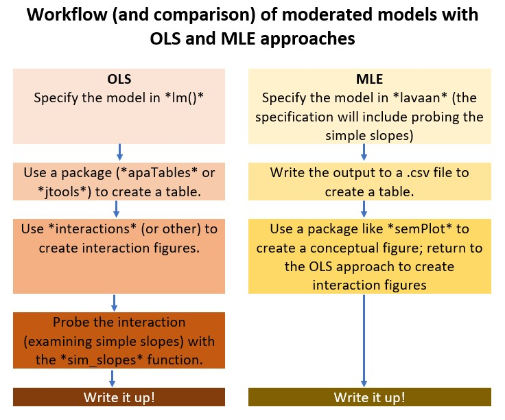

BOOK COVER

An image of the book cover. It includes four quadrants of non-normal distributions representing gender, race/ethnicty, sustainability/global concerns, and journal articles
PREFACE
If you are viewing this document, you should know that this is a book-in-progress. Early drafts are released for the purpose teaching my classes and gaining formative feedback from a host of stakeholders. The document was last updated on 02 May 2021
To center a variable in regression means to set its value at zero and interpret all other values in relation to this reference point. Regarding race and gender, researchers often center male and White at zero. Further, it is typical that research vignettes in statistics textbooks are similarly seated in a White, Western (frequently U.S.), heteronormative, framework. The purpose of this project is to create a set of open educational resources (OER) appropriate for doctoral and post-doctoral training that contribute to a socially responsive pedagogy – that is, it contributes to justice, equity, diversity, and inclusion.
Statistics training in doctoral programs are frequently taught with fee-for-use programs (e.g., SPSS/AMOS, SAS, MPlus) that may not be readily available to the post-doctoral professional. In recent years, there has been an increase and improvement in R packages (e.g., psych, lavaan) used for in analyses common to psychological research. Correspondingly, many graduate programs are transitioning to statistics training in R (free and open source). This is a challenge for post-doctoral psychologists who were trained with other software. This OER will offer statistics training with R and be freely available (specifically in a GitHub respository and posted through GitHub Pages) under a Creative Commons Attribution - Non Commercial - Share Alike license [CC BY-NC-SA 4.0].
Training models for doctoral programs in HSP are commonly scholar-practitioner, scientist-practitioner, or clinical-scientist. An emerging model, the scientist-practitioner-advocacy training model incorporates social justice advocacy so that graduates are equipped to recognize and address the sociocultural context of oppression and unjust distribution of resources and opportunities (Mallinckrodt et al., 2014). In statistics textbooks, the use of research vignettes engages the learner around a tangible scenario for identifying independent variables, dependent variables, covariates, and potential mechanisms of change. Many students recall examples in Field’s (2012) popular statistics text: Viagra to teach one-way ANOVA, beer goggles for two-way ANOVA, and bushtucker for repeated measures. What if the research vignettes were more socially responsive?
In this OER, research vignettes will be from recently published articles where:
- the author’s identity is from a group where scholarship is historically marginalized (e.g., BIPOC, LGBTQ+, LMIC[low-middle income countries]),
- the research is responsive to issues of justice, equity, inclusion, diversity,
- the lesson’s statistic is used in the article, and
- there is sufficient information in the article to simulate the data for the chapter example(s) and practice problem(s); or it is publicly available.
In training for multicultural competence, the saying, “A fish doesn’t know that it’s wet” is often used to convey the notion that we are often unaware of our own cultural characteristics. In recent months and years, there has been an increased awakening to the institutional and systemic racism that our systems are perpetuating. Queuing from the water metaphor, I am hopeful that a text that is recentered in the ways I have described can contribute to changing the water in higher education and in the profession of psychology.
Copyright with Open Access

This book is published under a a Creative Commons Attribution-NonCommercial-ShareAlike 4.0 International License. This means that this book can be reused, remixed, retained, revised and redistributed (including commercially) as long as appropriate credit is given to the authors. If you remix, or modify the original version of this open textbook, you must redistribute all versions of this open textbook under the same license - CC BY-SA.
A GitHub open-source repository contains all of the text and source code for the book, including data and images.
ACKNOWLEDGEMENTS
As a doctoral student at the University of Kansas (1992-2005), I learned that “a foreign language” was required for graduation. Please note that as one who studies the intersections of global, vocational, and sustainable psychology, I regret that I do not have language skills beyond English. This could have been met with credit from high school my rural, mid-Missouri high school did not offer such classes. This requirement would have typically been met with courses taken during an undergraduate program – but my non-teaching degree in the University of Missouri’s School of Education was exempt from this. The requirement could have also been met with a computer language (fortran, C++) – I did not have any of those either. There was a tiny footnote on my doctoral degree plan that indicated that a 2-credit course, “SPSS for Windows” would substitute for the language requirement. Given that it was taught by my one of my favorite professors, I readily signed up. As it turns out, Samuel B. Green, PhD, was using the course to draft chapters in the textbook (Green & Salkind, 2014) that has been so helpful for so many. Unfortunately, Drs. Green (1947 - 2018) and Salkind (2947 - 2017) are no longer with us. I have worn out numerous versions of their text. Another favorite text of mine was Dr. Barbara Byrne’s (2016), “Structural Equation Modeling with AMOS.” I loved the way she worked through each problem and paired it with a published journal article, so that the user could see how the statistical evaluation fit within the larger project/article. I took my tea-stained text with me to a workshop she taught at APA and was proud of the signature she added to it (a little catfur might have fallen out). Dr. Byrne created SEM texts for a number of statistical programs (e.g., LISREL, EQS, MPlus). As I was learning R, I wrote Dr. Byrne, asking if she had an edition teaching SEM/CFA with R. She promptly wrote back, saying that she did not have the bandwidth to learn a new statistics package. We lost Dr. Byrne in December 2020. I am so grateful to these role models for their contributions to my statistical training. I am also grateful for the doctoral students who have taken my courses and are continuing to provide input for how to improve the materials.
The inspiration for training materials that re*center statistics and research methods came from the Academics for Black Survival and Wellness Initiative. This project, co-founded by Della V. Mosley, Ph.D., and Pearis L. Bellamy, M.S., made clear the necessity and urgency for change in higher education and the profession of psychology.
At very practical levels, I am indebted to SPU’s Library, and more specifically, SPU’s Education, Technology, and Media Department. Assistant Dean for Instructional Design and Emerging Technologies, R. John Robertson, MSc, MCS, has offered unlimited consultation, support, and connection. Senior Instructional Designer in Graphics & Illustrations, Dominic Wilkinson, designed the logo and bookcover. Psychology and Scholarly Communications Librarian, Kristin Hoffman, MLIS, has provided consultation on topics ranging from OERS to citations. I am alo indebted to Associate Vice President, Teaching and Learning at Kwantlen Polytechnic University, Rajiv Jhangiani, PhD. Dr. Jhangiani’s text (2019) was the first OER I ever used and I was grateful for his encouraging conversation.
Financial support for this text has been provided from the Call to Action on Equity, Inclusion, Diversity, Justice, and Social Responsivity Request for Proposals grant from the Association of Psychology Postdoctoral and Internship Centers (2021-2022).
1 Introduction
1.1 What to expect in each chapter
This textbook is intended as applied, in that a primary goal is to help the scientist-practitioner-advocate use a variety of statistics in research problems and writing them up for a program evaluation, dissertation, or journal article. In support of that goal, I try to provide just enough conceptual information so that the researcher can select the appropriate statistic (i.e., distinguishing between when ANOVA is appropriate and when regression is appropriate) and assign variables to their proper role (e.g., covariate, moderator, mediator).
This conceptual approach does include occasional, step-by-step, hand-calculations (only we calculate them arithmetically in R) to provide a visceral feeling of what is happening within the statistical algorithm that may be invisible to the researcher. Additionally, the conceptual review includes a review of the assumptions about the characteristics of the data and research design that are required for the statistic. Statistics can be daunting, so I have worked hard to establish a workflow through each analysis. When possible, I include a flowchart that is referenced frequently in each chapter and assists the the researcher keep track of their place in the many steps and choices that accompany even the simplest of analyses.
As with many statistics texts, each chapter includes a research vignette. Somewhat unique to this resource is that the vignettes are selected from recently published articles. Each vignette is chosen with the intent to meet as many of the following criteria as possible:
- the statistic that is the focus of the chapter was properly used in the article,
- the author’s identity is from a group where scholarship is historically marginalized (e.g., BIPOC, LGBTQ+, LMIC [low middle income countries]),
- the research has a justice, equity, inclusion, diversity, and social responsivity focus and will contribute positively to a social justice pedagogy, and
- the data is available in a repository or there is sufficient information in the article to simulate the data for the chapter example(s) and practice problem(s).
In each chapter we employ R packages that will efficiently calculate the statistic and the dashboard of metrics (e.g., effect sizes, confidence intervals) that are typically reported in psychological science.
1.2 Strategies for Accessing and Using this OER
There are a number of ways you can access this resource. You may wish to try several strategies and then select which works best for you. I demonstrate these in the screencast that accompanies this chapter.
- Simply follow along in the .html formatted document that is available on via GitHub Pages, and then
- open a fresh .rmd file of your own, copying (or retyping) the script and running it
- Locate the original documents at the GitHub repository . You can
- open them to simply take note of the “behind the scenes” script
- copy/download individual documents that are of interest to you
- fork a copy of the entire project to your own GitHub site and further download it (in its entirety) to your personal workspace. The GitHub Desktop app makes this easy!
- Listen to the accompanying lectures (I think sound best when the speed is 1.75). The lectures are being recorded in Panopto and should include the closed captioning.
- Provide feedback to me! If you fork a copy to your own GitHub repository, you can
- open up an editing tool and mark up the document with your edits,
- start a discussion by leaving comments/questions, and then
- sending them back to me by committing and saving. I get an e-mail notiying me of this action. I can then review (accepting or rejecting) them and, if a discussion is appropriate, reply back to you.
1.3 If You are New to R
R can be oveRwhelming. Jumping right into advanced statistics might not be the easiest way to start. However, in these chapters, I provide complete code for every step of the process, starting with uploading the data. To help explain what R script is doing, I sometimes write it in the chapter text; sometimes leave hastagged-comments in the chunks; and, particularly in the accompanying screencasted lectures, try to take time to narrate what the R script is doing.
I’ve found that, somewhere on the internet, there’s almost always a solution to what I’m trying to do. I am frequently stuck and stumped and have spent hours searching the internet for even the tiniest of things. When you watch my videos, you may notice that in my R studio, there is a “scRiptuRe” file. I takes notes on the solutions and scripts here – using keywords that are meaningful to me so that when I need to repeat the task, I can hopefully search my own prior solutions and find a fix or a hint.
1.3.1 Base R
The base program is free and is available here: https://www.r-project.org/
Because R is already on my machine (and because the instructions are sufficient), I will not walk through the instllation, but I will point out a few things.
- Follow the instructions for your operating system (Mac, Windows, Linux)
- The “cran” (I think “cranium”) is the Comprehensive R Archive Network. In order for R to run on your computer, you have to choose a location. Because proximity is somewhat related to processing speed, select one that is geographically “close to you.”
- You will see the results of this download on your desktop (or elsewhere if you chose to not have it appear there) but you won’t ever use R through this platform.
1.3.2 R Studio
R Studio is the desktop application I work in R. It’s a separate download. Choose the free, desktop, option that is appropriate for your operating system: https://www.rstudio.com/products/RStudio/
- Upper right window: Includes several tabs; we frequently monitor the
- Environment: it lists the objects that are available to you (e.g., dataframes)
- Lower right window: has a number of helpful tabs.
- Files: Displays the file structure in your computer’s environment. Make it a practice to (a) organize your work in small folders and (b) navigating to that small folder that is holding your project when you are working on it.
- Packages: Lists the packages that have been installed. If you navigate to it, you can see if it is “on.” You can also access information about the package (e.g., available functions, examples of script used with the package) in this menu. This information opens in the Help window.
- Viewer and Plots are helpful, later, when we can simultaneously look at our output and still work on our script.
- Primary window
- R Studio runs in the background(in the console). Very occasionally, I can find useful troubleshooting information here.
- More commonly, I open my R Markdown document so that it takes the whole screen and I work directly, right here.
- R Markdown is the way that many analysts write script, conduct analyses, and even write up results. These are saved as .rmd files.
- In R Studio, open an R Markdown document through File/New File/R Markdown
- Specify the details of your document (title, author, desired ouput)
- In a separate step, SAVE this document (File/Save] into a NEW FILE FOLDER that will contain anything else you need for your project (e.g., the data).
- Packages are at the heart of working in R. Installing and activating packages require writing script.
1.3.3 R Hygiene
Many initial problems in R can be solved with good R hygiene. Here are some suggestions for basic practices. It can be tempting to “skip this.” However, in the first few weeks of class, these are the solutions I am presenting to my students.
1.3.3.1 Everything is documented in the .rmd file
Although others do it differently, everything is in my .rmd file. That is, for uploading data and opening packages I write the code in my .rmd file. Why? Because when I read about what I did hours or years later, I have a permanent record of very critical things like (a) where my data is located, (b) what version I was using, and (c) what package was associated with the functions.
1.3.3.2 File organization
File organization is a critical key to this:
- Create a project file folder.
- Put the data file in it.
- Open an R Markdown file.
- Save it in the same file folder.
- When your data and .rmd files are in the same folder (not your desktop, but a shared folder), they can be connected.
1.3.3.3 Chunks
The R Markdown document is an incredible tool for integrating text, tables, and analyses. This entire OER is written in R Markdown. A central feature of this is “chunks.”
The easiest way to insert a chunk is to use the INSERT/R command at the top of this editor box. You can also insert a chunk with the keyboard shortcut: CTRL/ALT/i
“Chunks” start and end with with those three tic marks and will show up in a shaded box, like this:
#hashtags let me write comments to remind myself what I did
#here I am simply demonstrating arithmetic (but I would normally be running code)
2021 - 1966## [1] 55Each chunk must open and close. If one or more of your tic marks get deleted, your chunk won’t be read as such and your script will not run. The only thing in the chunks should be script for running R; you can hashtag-out script so it won’t run.
Although unnecessary, you can add a brief title for the chunk in the opening row, after the “r.” These create something of a table of contents of all the chunks – making it easier to find what you did. You can access them in the “Chunks” tab at the bottom left of R Studio. If you wish to knit a document, you cannot have identical chunk titles.
You can put almost anything you want in the space outside of tics. Syntax for simple formatting in the text areas (e.g,. using italics, making headings, bold, etc.) is found here: https://rmarkdown.rstudio.com/authoring_basics.html
1.3.3.4 Packages
As scientist-practitioners (and not coders), we will rely on packages to do our work for us. At first you may feel overwhelmed about the large number of packages that are available. Soon, though, you will become accustomed to the ones most applicable to our work (e.g., psych, tidyverse, lavaan, apaTables).
Researchers treat packages differently. In these lectures, I list all the packages we will use in an opening chunk that asks R to check to see if the package is installed, and if not, installs it.
if(!require(psych)){install.packages("psych")}## Loading required package: psych## Warning: package 'psych' was built under R version 4.0.5To make a package operable, you need to open it through the library. This process must be repeated each time you restart R. I don’t open the package (through the “library(package_name)”) command until it is time to use it. Especially for new users, I think it’s important to connect the functions with the specific packages.
#install.packages ("psych")
library (psych)If you type in your own “install.packages” code, hashtag it out once it’s been installed. It is problematic to continue to re-run this code .
1.3.3.5 Knitting
An incredible feature of R Markdown is its capacity to knit to HTML, powerpoint, or word. If you access the .rmd files for this OER, you can use annotate or revise them to suit your purposes. If you redistribute them, though, please honor the Creative Commons Attribution-NonCommercial-ShareAlike 4.0 International License with a citation.
1.3.4 tRoubleshooting in R maRkdown
Hiccups are normal. Here are some ideas that I have found useful in getting unstuck.
- In an R script, you must have everything in order – Every. Single. Time.
- All the packages have to be in your library and activated; if you restart R, you need to reload each package.
- If you open an .rmd file and want a boxplot, you cannot just scroll down to that script. You need to run any prerequisite script (like loading the package, importing data, putting the data in the global environment, etc.)
- Do you feel lost? clear your global environment (broom) and start at the top of the R script. Frequent, fresh starts are good.
- Your .rmd file and your data need to be stored in the same file folder. These should be separate for separate projects, no matter how small.
- Type any warnings you get into a search engine. Odds are, you’ll get some decent hints in a manner of seconds. Especially at first, these are common errors:
- The package isn’t loaded (if you restarted R, you need to reload your packages)
- The .rmd file has been saved yet, or isn’t saved in the same folder as the data
- Errors of punctuation or spelling
- Restart R (it’s quick – not like restarting your computer)
- If you receive an error indicating that a function isn’t working or recognized, and you have loaded the package, type the name of the package in front of the function with two colons (e.g., psych::describe(df). If multiple packages are loaded with functions that have the same name, R can get confused.
1.3.5 stRategies for success
- Engage with R, but don’t let it overwhelm you.
- The mechanical is also the conceptual. Especially when it is simpler, do try to retype the script into your own .rmd file and run it. Track down the errors you are making and fix them.
- If this stresses you out, move to simply copying the code into the .rmd file and running it. If you continue to have errors, you may have violated one of the best practices above (Is the package loaded? Are the data and .rmd files in the same place? Is all the prerequisite script run?).
- Still overwhelmed? Keep moving forward by downloading a copy of the .rmd file that accompanies any given chapter and just “run it along” with the lecture. Spend your mental power trying to understand what each piece does. Then select a practice problem that is appropriate for your next level of growth.
- Copy script that works elsewhere and replace it with your datafile, variables, etc.
- The leaRning curve is steep, but not impossible. Gladwell(2008) reminds us that it takes about 10,000 hours to get GREAT at something (2,000 to get reasonably competent). Practice. Practice. Practice.
- Updates to R, R Studio, and the packages are NECESSARY, but can also be problematic. It could very well be that updates cause programs/script to fail (e.g., “X has been deprecated for version X.XX”). Moreover, this very well could have happened between my distribution of these resources and your attempt to use it. My personal practice is to update R, R Studio, and the packages a week or two before each academic term.
- Embrace your downward dog. Also, walk away, then come back.
1.3.6 Resources for getting staRted
R for Data Science: https://r4ds.had.co.nz/
R Cookbook: http://shop.oreilly.com/product/9780596809164.do
R Markdown homepage with tutorials: https://rmarkdown.rstudio.com/index.html
R has cheatsheets for everything, here’s one for R Markdown: https://www.rstudio.com/wp-content/uploads/2015/02/rmarkdown-cheatsheet.pdf
R Markdown Reference guide: https://www.rstudio.com/wp-content/uploads/2015/03/rmarkdown-reference.pdf
Using R Markdown for writing reproducible scientific papers: https://libscie.github.io/rmarkdown-workshop/handout.html
LaTeX equation editor: https://www.codecogs.com/latex/eqneditor.php
DATA PREP
2 Scrubbing
The focus of this chapter is the process of starting with raw data and preparing it for multivariate analysis. To that end, we will address the conceptual considerations and practical steps in “scrubbing and scoring.”
A twist in this lesson is that I am asking you to contribute to the dataset that serves as the basis for the chapter and the practice problems. In the spirit of open science, this dataset is available to you and others for your own learning. Before continuing, please take 15-20 minutes to complete the survey titled, Rate-a-Recent-Course: A ReCentering Psych Stats Exercise. The study is approved by the Institutional Review Board at Seattle Pacific University (SPUIRB# 202102011, no expiration). Details about the study, including an informed consent, are included at the link.
2.2 Workflow for Scrubbing and Scoring
The following is a proposed workflow for preparing data for analysis.

An image of a workflow for scrubbing and scoring data.
Here is a narration of the figure:
- The workflow begins by importing data into R. Most lessons in this series involve simulated data that are created directly in R. Alternatively, data could be:
- imported “intRavenously” through programs such as Qualtrics,
- exported from programs such as Qualtrics to another program (e.g., .xlxs, .csv),
- imported in other forms (e.g., .csv,.sps, .sav).
- Scrubbing data by
- variable naming,
- specifying variable characteristics such as factoring,
- ensuring that included particpiants consented to participation,
- determining and executing the inclusion and exclusion criteria.
- Conduct preliminary data diagnostics such as
- outlier anlaysis
- assessing for univariate and multivariate analysis
- making transformations and/or corrections
- Managing missingness by one of two routes
- Available information analysis (Parent, 2013) at either the item-level or scale level. The result is a single set of data for analysis. If missingness remains, options include pairwise deletion, listwise deletion, or specifying FIML (when available). Another option is to use multiple imputation.
- Multiple imputation at either scale level or item-level
2.3 Research Vignette
To provide first-hand experience as both the respondent and analyst for the same set of data, you were asked to complete a survey titled, Rate-a-Recent-Course: A ReCentering Psych Stats Exercise. If you haven’t yet completed it, please consider doing so, now. In order to reduce the potential threats to validity by providing background information about the survey, I will wait to describe it until later in the chapter.
The survey is administered in Qualtrics. In the chapter I teach two ways to import Qualtrics data into R. We will then use the data to work through the steps identified in the workflow.
2.4 Working the Problem
2.4.1 intRavenous Qualtrics
I will demonstrate using a Qualtrics account at my institution, Seattle Pacific University. The only surveys in this account are for the Recentering Psych Stats chapters and lessons. All surveys are designed to not capture personally identifying information.
Access credentials for the institutional account, individual user’s account, and survey are essential for getting the survey items and/or results to export into R. The Qualtrics website provides a tutorial for generating an API token.
We need two pieces of information: the root_url and an API token.
- Log into your respective qualtrics.com account.
- Select Account Settings
- Choose “Qualtrics IDs” from the user name dropdown
We need the root_url. This is the first part of the web address for the Qualtrics account. For our institution it is: spupsych.az1.qualtrics.com
The API token is in the box labeled, “API.” If it is empty, select, “Generate Token.” If you do not have this option, locate the brand administrator for your Qualtrics account. They will need to set up your account so that you have API privileges.
BE CAREFUL WITH THE API TOKEN This is the key to your Qualtrics accounts. If you leave it in an .rmd file that you forward to someone else, this key and the base URL gives access to every survey in your account. If you share it, you could be releasing survey data to others that would violate confidentiality promises in an IRB application.
If you mistakenly give out your API token you can generate a new one within your Qualtrics account and re-protect all its contents.
You do need to change the API key/token if you want to download data from a different Qualtrics account. If your list of surveys generates the wrong set of surveys, restart R, make sure you have the correct API token and try again.
#only have to run this ONCE to draw from the same Qualtrics account...but will need to get different token if you are changing between accounts
library(qualtRics)
#qualtrics_api_credentials(api_key = "mUgPMySYkiWpMFkwHale1QE5HNmh5LRUaA8d9PDg",
#base_url = "spupsych.az1.qualtrics.com", overwrite = TRUE, install = TRUE)all_surveys() generates a dataframe containing information about all the surveys stored on your Qualtrics account.
surveys <- all_surveys()
#View this as an object (found in the right: Environment).
#Get survey id # for the next command
#If this is showing you the WRONG list of surveys, you are pulling from the wrong Qualtrics account (i.e., maybe this one instead of your own). Go back and change your API token (it saves your old one). Changing the API likely requires a restart of R.
surveysTo retrieve the survey, use the fetch_survey() function.
#obtained with the survey ID
#"surveyID" should be the ID from above
#"verbose" prints messages to the R console
#"label", when TRUE, imports data as text responses; if FALSE prints the data as numerical responses
#"convert", when TRUE, attempts to convert certain question types to the "proper" data type in R; because I don't like guessing, I want to set up my own factors.
#"force_request", when TRUE, always downloads the survey from the API instead of from a temporary directory (i.e., it always goes to the primary source)
# "import_id", when TRUE includes the unique Qualtrics-assigned ID; since I have provided labels, I want false
#Out of the blue, I started getting an error, that R couldn't find function "fetch_survey." After trying a million things, adding qualtRics:: to the front of it solved the problem
QTRX_df <-qualtRics::fetch_survey(surveyID = "SV_b2cClqAlLGQ6nLU", time_zone = NULL, verbose = FALSE, label=FALSE, convert=FALSE, force_request = TRUE, import_id = FALSE)
#useLocalTime = TRUE,It is possible (and helpful, even) to import Qualtrics data that has been downloaded from Qualtrics as a .csv. I demo this in the Bonus Reel.
2.4.2 About the Rate-a-Recent-Course Survey
As a teaching activity for the ReCentering Psych Stats OER, the topic of the survey was selected to be consistent with the overall theme of OER. Specifically, the purpose of this study is to understand the campus climate for students whose identities make them vulnerable to bias and discrimination. These include students who are Black, non-Black students of color, LGBTQ+ students, international students, and students with disabilities.
Although the dataset should provide the opportunity to test a number of statistical models, one working hypothesis that framed the study is that the there will be a greater sense of belonging and less bias and discrimination when there is similar representation (of identities that are often marginalized) in the instructional faculty and student body. Termed, “structural diversity” (K. R. Lewis & Shah, 2019) this is likely an oversimplification. In fact, an increase in diverse representation without attention to interacting factors can increase hostility on campus (Hurtado, 2007). Thus, we included the task of rating of a single course relates to the larger campus along the dimensions of belonging and bias/discrimination. For example, if a single class has higher ratings on issues of inclusivity, diversity, and respect, we would expect that sentiment to be echoed in the broader institution.
Our design has notable limitations You will likely notice that we ask about demographic characteristics of the instructional staff and classmates in the course rated, but we do not ask about the demographic characteristics of the respondent. In making this decision, we likely lose important information; Iacovino and James (2016) have noted that White students perceive campus more favorably than Black student counterparts. We made this decision to protect the identity of the respondent. As you will see when we download the data, if a faculty member asked an entire class to take the survey, the datestamp and a handful of demographic identifiers could very likely identify a student. In certain circumstances, this might be risky in that private information (i.e., gender nonconformity, disclosure of a disability) or course evaluation data could be related back to the student.
Further, the items that ask respondents to guess the identities of the instructional staff and classmates are limited, and contrary to best practices in survey construction that recommend providing the option of a “write-in” a response. After consulting with a diverse group of stakeholders and subject matter experts (and revising the response options numerous times) I have attempted to center anti-Black racism in the U.S. (Mosley et al., 2020, 2021; Singh, 2020). In fact, the display logic does not present the race items when the course is offered outside the U.S. There are only five options for race: biracial/multiracial, Black, non-Black person(s) of color, White, and I did not notice (intended to capture a color-blind response). One unintended negative consequence of this design is that the response options could contribute to colorism (Adames et al., 2021; Capielo Rosario et al., 2019). Another possibility is that the limited options may erase, or make invisible, other identities. At the time that I am writing the first draft of this chapter, the murder of six Asian American women in Atlanta has just occurred. The Center for the Study of Hate and Extremeism has documented that while overall hate drimes dropped by 7% in 2020, anti-Asian hate crimes reported to the police in America’s largest cities increasedby 149% (FACT SHEET, n.d.). These incidents have occurred not only in cities, but in our neighborhoods and on our campusus (P. Kim, 2021; Paul Y. Kim, 2021; STOP AAPI HATE, n.d.). While this survey is intended to assess campus climate as a function of race, it unfortunately does not distinguish between many identities that experience marginalization.
In parallel, the items asking respondents to identity characteristics of the instructional staff along dimensions of gender, international status, and disability are “large buckets” and do not include “write-in” options. Similarly, there was no intent to cause harm by erasing or making invisible individuals whose identities are better defined by different descriptors. Further, no write-in items were allowed. This was also intentional to prevent potential harm caused by people who could leave inappropriate or harmful comments.
2.4.3 The Codebook
In order to scrub-and-score a survey, it is critical to know about its content, scoring directions for scales/subscales, and its design. A more complete description of the survey design elements is (or will be) available in the Recentering Psych Stats: Psychometric OER. The review in this chapter provides just-enough information to allow us to make decisions about which items to retain and how to score them. When they are well-written, information in the IRB application and pre-registration can be helpful in the scrubbing and scoring process.
Let’s look “live” at the survey. In Qualtrics it is possible to print a PDF that looks very similar to its presentation when someone is taking it. You can access that static version here.
We can export a codebook, that is, a Word (or PDF) version of the survey with all the coding. In Qualtrics the protocol is: Survey/Tools/ImportExport/Export Survey to Word. Then select all the options you want (especially “Show Coded Values”). A tutorial provided by Qualtrics can be found here. This same process can be used to print the PDF example I used above.
It is almost impossible to give this lecture without some reference to Qualtrics and the features used in Qualtrics. An import of raw data from Qualtrics into R can be nightmare in that the Qualtrics-assigned variable names are numbers (e.g., QID1, QID2) – but often out of order because the number is assigned when the question is first created. If the survey is reordered, the numbers get out of sequence.
Similarly, values for Likert-type scales can also get out of order if the scale anchors are revised (which is common to do).
I recommend providing custom variable names and recode values directly in Qualtrics before exporting them into R. A Qualtrics tutorial for this is provided here. In general, consider these qualities when creating variable names:
- Brevity: historically, SPSS variable names could be a maximum of 8 characters.
- Intuitive: although variables can be renamed in R (e.g., for use in charts and tables), it is helpful when the name imported from Qualtrics provides some indication of what the variable is.
- Systematic: start items in a scale with the same stem, followed by the item number – ITEM1, ITEM2, ITEM3.
The Rate-a-Recent-Course survey was written using some special features in Qualtrics. These include
- Display logic
- Items that are U.S.-centric are only shown if the respondent is taking a course from an institution in the U.S. is a student in the U.S.
- Loop and merge
- Because course may have multiple instructional staff, the information asking about demographic characteristics of the instructors is repeated according to the number input by the respondent
- Random presentation of the 30 items asking about campus climate for the five groups of students
- Although this might increase the cognitive load of the survey, this helps “spread out” missingness for respondents who might tire of the survey and stop early
- Rank ordering of the institutional level (department, school/faculty, campus/university) to which the respondent feels most connected
Looking at the QTRX_df, StartDate thru UserLanguage are metadata created by Qualtrics. The remaining variables and associated value labels are in the codebook.
2.5 Scrubbing
With a look at our survey, codebook, and imported data, we now get to the business of scRubbing (deleting those who did not give consent, deleting previews, etc.). This level of “scrubbing” precedes the more formal detection of outliers.
2.5.1 Tools for Data Manipulations
The next stages will provide some experience manipulating data with dplyr from the tidyverse.
The tidyverse is a system of packages (i.e,. when you download the tidyverse, you download all its packages/members) for data manipulation, exploration and visualization. The packages in the tidyverse share a common design philosophy. These were mostly developed by Hadley Wickham, but more recently, more designers are contributing to them. Tidyverse packages are intended to make statisticians and data scientists more productive by guiding them through workflows that facilitate communication and result in reproducible work products. Fundamentally, the tidyverse is about the connections between the tools that make the workflow possible. Critical packages in the tidyverse include:
- dplyr: data manipulation: mutate, select, filter, summarize, arrange
- ggplot2: extravagant graphing
- tibble: a tibble is a dataframe that provides the user with more (and less) control over the data.
- readr: gives access to “rectangular data” like .csv and tables
- tidyr: tidy data is where each variable is a column, each observation is a row, each value is a cell (duh). tidyr’s contributions are gather(wide to long) and spread(long to wide) as well as separate, extract, unite.
- purrr: facilitates working with functions and vectors. For example, if you write a function, using purrr may help you replace loops with code that is more efficient and intuitive.
The tidyverse is ever-evolving – so check frequently for updates and troubleshooting.
A handy cheatsheet for data transformation is found here.
2.5.2 Inclusion and Exclusion Criteria
For me, the first pass at scrubbing is to eliminate the obvious. In our case this is includes previews and respondents who did not consent to continue. Previews are the researcher-initiated responses usually designed to proofread or troubleshoot survey problems. There could be other first-pass-deletions, such as selecting response between certain dates.
I think these first-pass deletions, especially the ones around consent, are important to do as soon as possible. Otherwise, we might delete some of the variables (e.g., timestamps, consent documentation, preview status) and neglect to delete these cases later in the process.
We are here in the workflow:

An image of a workflow for scrubbing and scoring data.
We can either update the existing df (by using the same object), or creating a new df from the old. Either works. In my early years, I tended to create lots of new objects. As I have gained confidence in myself and in R, I’m inclined to update the existing df. Why? Because unless you write the object as an outfile (using the same name for the object as for the filename – which I do not recommend), the object used in R does not change the source of the dat. Therefore, it is easy to correct early code and it keeps the global environment less cluttered.
In this particular survey, the majority of respondents will take the survey because they clicked an anonymous link provided by Qualtrics. Another Qualtrics distribution method is e-mail. At the time of this writing, we have not recruited by e-mail, but it is is possible we could do so in the future. What we should not include, though, are previews. These are the times when the researcher is self-piloting the survey to look for errors and to troubleshoot.
# the filter command is used when we are making inclusion/exclusion decisions about rows
# != means do not include cases with "preview"
library(tidyverse)## Warning: package 'tidyverse' was built under R version 4.0.5## Warning: package 'tibble' was built under R version 4.0.5## Warning: package 'tidyr' was built under R version 4.0.5## Warning: package 'dplyr' was built under R version 4.0.5## Warning: package 'forcats' was built under R version 4.0.5QTRX_df <- filter (QTRX_df, DistributionChannel != "preview")
#FYI, another way that doesn't use tidyverse, but gets the same result
#QTRX_df <- QTRX_df[!QTRX_df$DistributionChannel == "preview",]APA Style, and in particular the Journal Article Reporting Standards (JARS) for quantitative research specify that we should report the frequency or percentages of missing data. We would start our counting after eliminating the previews.
# I created an object that lists how many rows/cases remain.
# I used inline text below to update the text with the new number
attempts <- nrow(QTRX_df)
attempts## [1] 52CAPTURING RESULTS FOR WRITING IT UP: Data screening suggested that 52 individuals opened the survey link.
Next let’s filter in only those who consented to take the survey. Because Qualtrics discontinued the survey for everyone who did not consent, we do not have to worry that their data is unintentionally included, but it can be useful to mention the number of non-consenters in the summary of missing data.
# == are used
QTRX_df <-(filter (QTRX_df, Consent == 1))
consented_attempts <- nrow(QTRX_df)
consented_attempts## [1] 44CAPTURING RESULTS FOR WRITING IT UP: Data screening suggested that 52 individuals opened the survey link. Of those, 44, granted consent and proceeded into the survey items.
In this particular study, the categories used to collect race were U.S.-centric. Thus, they were only shown if the respondent indicated that the course being rated was taught by an institution in the U.S. Therefore, an an additional inclusion criteria for this specific research model should be that the course was taught in the U.S.
QTRX_df <-(filter (QTRX_df, USinst == 0))
US_inclusion <- nrow(QTRX_df)
US_inclusion## [1] 38CAPTURING RESULTS FOR WRITING IT UP: Data screening suggested that 52 individuals opened the survey link. Of those, 44, granted consent and proceeded into the survey items. A further inclusion criteria was that the course was taught in the U.S; 38 met this criteria.
2.5.3 Renaming Variables
Even though we renamed the variables in Qualtrics, the loop-and-merge variables were auto-renamed such that they each started with a number. I cannot see how to rename these from inside Qualtrics. A potential problem is that, in R, when variable names start with numbers, they need to be surrounded with single quotation marks. I find it easier to rename them now. I used “i” to start the variable name to represent “instructor.”
The form of the rename() function is this: df_named <- rename(df_raw, NewName1 = OldName1)
library(tidyverse)
QTRX_df <- rename(QTRX_df, iRace1 = '1_iRace', iRace2 = '2_iRace', iRace3 = '3_iRace', iRace4 = '4_iRace', iRace5 = '5_iRace', iRace6 = '6_iRace', iRace7 = '7_iRace', iRace8 = '8_iRace', iRace9 = '9_iRace', iRace10 = '10_iRace')Also in Qualtrics, it was not possible to rename the variable (formatted with sliders) that asked respondents to estimate the proportion of classmates in each race-based category. Using the codebook, we can do this now. I will use “cm” to precede each variable name to represent “classmates.”
QTRX_df <- rename(QTRX_df, cmBiMulti = Race_10, cmBlack = Race_1, cmNBPoC = Race_7, cmWhite = Race_8, cmUnsure = Race_2)Let’s also create an ID variable (different from the lengthy Qualtrics-issued ID) and then move it to the front of the distribution.
QTRX_df <- QTRX_df %>% mutate(ID = row_number())
#moving the ID number to the first column; requires
QTRX_df <- QTRX_df%>%select(ID, everything())2.5.4 Downsizing the Dataframe
Although researchers may differ in their approach, my tendency is to downsize the df to the variables I will be using in my study. These could include variables in the model, demographic variables, and potentially auxiliary variables (i.e,. variables not in the model, but that might be used in the case of multiple imputation).
This particular survey did not collect demographic information, so that will not be used. The model that I will demonstrate in this research vignette examines the the respondent’s perceived campus climate for students who are Black, predicted by the the respondent’s own campus belonging, and also the structural diversity (K. R. Lewis & Shah, 2019) proportions of Black students in the classroom and BIPOC (Black, Indigenous, and people of color) instructional staff.
I would like to assess the model by having the instructional staff variable to be the %Black instructional staff. At the time that this lecture is being prepared, there is not sufficient Black representation in the staff to model this.
The select() function can let us list the variables we want to retain.
#You can use the ":" to include all variables from the first to last variable in any sequence; I could have written this more efficiently. I just like to "see" my scales and clusters of variables.
Model_df <-(select (QTRX_df, ID, iRace1, iRace2, iRace3, iRace4, iRace5, iRace6, iRace7, iRace8, iRace9, iRace10, cmBiMulti, cmBlack, cmNBPoC, cmWhite, cmUnsure, Belong_1:Belong_3, Blst_1:Blst_6))It can be helpful to save outfile of progress as we go along. Here I save this raw file.
write.table(Model_df, file="BlackStntsModel210318.csv", sep=",", col.names=TRUE, row.names=FALSE)2.6 Toward the APA Style Write-up
2.6.1 Method/Procedure
Data screening suggested that 52 individuals opened the survey link. Of those, 44 granted consent and proceeded to the survey items. A further inclusion criteria was that the course was taught in the U.S; 38 met this criteria.
2.7 Practice Problems
Starting with this chapter, the practice problems for this and the next two chapters (i.e., Scoring, Data Dx) are connected. Whatever practice option(s) you choose, please (a) use raw data that (b) has some data missing. This second criteria will be important in the subsequent chapters.
The three problems below are listed in the order of graded complexity. If you are just getting started, you may wish to start with the first problem. If you are more confident, choose the second or third option. You will likely encounter challenges that were not covered in this chapter. Search for and try out solutions, knowing that there are multiple paths through the analysis.
2.7.1 Problem #1: Rework the Chapter Problem
Because the Rate-a-Recent-Course survey remains open, it is quite likely that there will be more participants who have taken the survey since this chapter was last updated. If not – please encourage a peer to take it. Even one additional response will change the results. This practice problem encourages you to rework the chapter, as written, with the updated data from the survey.
| Assignment Component | Points Possible | Points Earned |
|---|---|---|
| 1. Import the data from Qualtrics | 5 | _____ |
| 2. Exclude all previews | 5 | _____ |
| 3. Include only those who consented | 5 | _____ |
| 4. Exclude those whose institutions are outside the U.S. | 5 | _____ |
| 5. Rename variables | 5 | _____ |
| 6. Downsize the dataframe to the variables of interest | 5 | _____ |
| 7. Write up of preliminary results | 5 | _____ |
| 8. Explanation to grader | 5 | _____ |
| Totals | 40 | _____ |
2.7.2 Problem #2: Use the Rate-a-Recent-Course Survey, Choosing Different Variables
Before starting this option, choose a minimum of three variables from the Rate-a-Recent-Course survey to include in a simple statistical model. Work through the chapter making decisions that are consistent with the research model you have proposed. There will likely be differences at several points in the process. For example, you may wish to include (not exclude) data where the rated-course was offered by an institution outside the U.S. Different decisions may involve an internet search for the R script you will need as you decide on inclusion and exclusion criteria.
| Assignment Component | Points Possible | Points Earned |
|---|---|---|
| 1. Import the data from Qualtrics | 5 | _____ |
| 2. Exclude all previews | 5 | _____ |
| 3. Include only those who consented | 5 | _____ |
| 4. Other exclusionary/inclusionary criteria? | 5 | _____ |
| 5. Rename variables | 5 | _____ |
| 6. Downsize the dataframe to the variables of interest | 5 | _____ |
| 7. Write up of preliminary results | 5 | _____ |
| 8. Explanation to grader | 5 | _____ |
| Totals | 40 | _____ |
2.7.3 Problem #3: Other data
Using raw data for which you have access, use the chapter as a rough guide. Your data will likely have unique characteristics that may involved searching for solutions beyond this chapter/OER.
| Assignment Component | Points Possible | Points Earned |
|---|---|---|
| 1. Import the data | 5 | _____ |
| 2. Include only those who consented | 5 | _____ |
| 3. Apply other exclusionary/inclusionary critera | 5 | _____ |
| 4. Addressing unique concerns | 5 | _____ |
| 5. Rename variables | 5 | _____ |
| 6. Downsize the dataframe to the variables of interest | 5 | _____ |
| 7. Write up of preliminary results | 5 | _____ |
| 8. Explanation to grader | 5 | _____ |
| Totals | 40 | _____ |
2.8 Bonus Track:

Image of a filmstrip
2.8.1 Importing data from an exported Qualtrics .csv file
The lecture focused on the “intRavenous” import. It is is also possible to download the Qualtrics data in a variety of formats (e.g., CSV, Excel, SPSS). Since I got started using files with the CSV extension (think “Excel” lite), that is my preference.
In Qualtrics, these are the steps to download the data: Projects/YOURsurvey/Data & Analysis/Export & Import/Export data/CSV/Use numeric values
I think that it is critical that to save this file in the same folder as the .rmd file that you will use with the data.
R is sensitive to characters used filenames As downloaded, my Qualtrics .csv file had a long name with spaces and symbols that are not allowed. Therore, I gave it a simple, sensible, filename, “ReC_Download210319.csv.” An idiosyncracy of mine is to datestamp filenames. I use two-digit representations of the year, month, and date so that if the letters preceding the date are the same, the files would alphabetize automatically.
library(qualtRics)
QTRX_csv <- read_survey("ReC_Download210319.csv", strip_html = TRUE, import_id = FALSE, time_zone=NULL, legacy = FALSE)##
## -- Column specification --------------------------------------------------------
## cols(
## .default = col_double(),
## StartDate = col_datetime(format = ""),
## EndDate = col_datetime(format = ""),
## RecordedDate = col_datetime(format = ""),
## ResponseId = col_character(),
## DistributionChannel = col_character(),
## UserLanguage = col_character(),
## Virtual = col_number(),
## `5_iPronouns` = col_logical(),
## `5_iGenderConf` = col_logical(),
## `5_iRace` = col_logical(),
## `5_iUS` = col_logical(),
## `5_iDis` = col_logical(),
## `6_iPronouns` = col_logical(),
## `6_iGenderConf` = col_logical(),
## `6_iRace` = col_logical(),
## `6_iUS` = col_logical(),
## `6_iDis` = col_logical(),
## `7_iPronouns` = col_logical(),
## `7_iGenderConf` = col_logical(),
## `7_iRace` = col_logical()
## # ... with 17 more columns
## )
## i Use `spec()` for the full column specifications.Although minor tweaking may be required, the same script above should be applicable to this version of the data.
sessionInfo()## R version 4.0.4 (2021-02-15)
## Platform: x86_64-w64-mingw32/x64 (64-bit)
## Running under: Windows 10 x64 (build 18362)
##
## Matrix products: default
##
## locale:
## [1] LC_COLLATE=English_United States.1252
## [2] LC_CTYPE=English_United States.1252
## [3] LC_MONETARY=English_United States.1252
## [4] LC_NUMERIC=C
## [5] LC_TIME=English_United States.1252
##
## attached base packages:
## [1] stats graphics grDevices utils datasets methods base
##
## other attached packages:
## [1] qualtRics_3.1.4 forcats_0.5.1 stringr_1.4.0 dplyr_1.0.5
## [5] purrr_0.3.4 readr_1.4.0 tidyr_1.1.3 tibble_3.1.1
## [9] ggplot2_3.3.3 tidyverse_1.3.1 psych_2.1.3
##
## loaded via a namespace (and not attached):
## [1] Rcpp_1.0.6 lubridate_1.7.10 lattice_0.20-41 assertthat_0.2.1
## [5] digest_0.6.27 utf8_1.2.1 R6_2.5.0 cellranger_1.1.0
## [9] backports_1.2.1 reprex_2.0.0 evaluate_0.14 httr_1.4.2
## [13] pillar_1.6.0 rlang_0.4.11 curl_4.3.1 readxl_1.3.1
## [17] rstudioapi_0.13 jquerylib_0.1.4 rmarkdown_2.7 munsell_0.5.0
## [21] broom_0.7.6 compiler_4.0.4 modelr_0.1.8 xfun_0.22
## [25] pkgconfig_2.0.3 mnormt_2.0.2 tmvnsim_1.0-2 htmltools_0.5.1.1
## [29] insight_0.13.2 tidyselect_1.1.1 bookdown_0.22 fansi_0.4.2
## [33] withr_2.4.2 crayon_1.4.1 dbplyr_2.1.1 grid_4.0.4
## [37] nlme_3.1-151 jsonlite_1.7.2 gtable_0.3.0 lifecycle_1.0.0
## [41] DBI_1.1.1 magrittr_2.0.1 scales_1.1.1 cli_2.5.0
## [45] stringi_1.5.3 fs_1.5.0 xml2_1.3.2 bslib_0.2.4
## [49] ellipsis_0.3.1 generics_0.1.0 vctrs_0.3.7 sjlabelled_1.1.7
## [53] tools_4.0.4 glue_1.4.2 hms_1.0.0 parallel_4.0.4
## [57] yaml_2.2.1 colorspace_2.0-0 rvest_1.0.0 knitr_1.33
## [61] haven_2.4.1 sass_0.3.13 Scoring
The focus of this chapter is to continue the process of scrubbing-and-scoring. We continue with the raw data we downloaded and prepared in the prior chapter. In this chapter we analyze and manage missingness, score scales/subscales, and represent our work with an APA-style write-up. To that end, we will address the conceptual considerations and practical steps in this process.
3.2 Workflow for Scrubbing and Scoring
The following is a proposed workflow for preparing data for analysis.
The same workflow guides us through the Scrubbing, Scoring, and Data dx chapters. At this stage in the chapter we are still scrubbing as we work through the item-level and whole-level portions of the AIA (left side) of the chart.
An image of our stage in the workflow for scrubbing and scoring data.
3.3 Research Vignette
The research vignette comes from the survey titled, Rate-a-Recent-Course: A ReCentering Psych Stats Exercise and is explained in the prior chapter. In the prior chapter we conducted super-preliminary scrubbing of variables that will allow us to examine the respondent’s perceived campus climate for students who are Black, predicted by the the respondent’s own campus belonging, and also the structural diversity proportions of Black students in the classroom and the BIPOC instructional staff. At present, I see this as a parallel mediation. That is, the perceived campus climate for Black students will be predicted by the respondent’s sense of belonging, through the proportion of Black classmates and BIPOC (Black, Indigenous, and people of color)instructional staff.
I would like to assess the model by having the instructional staff variable to be the %Black instructional staff. At the time that this lecture is being prepared, there is not sufficient Black representation in the staff to model this.

An image of the statistical model for which we are preparing data.
First, though, let’s take a more conceptual look at issues regarding missing data. We’ll come back to details of the survey as we work with it.
3.4 On Missing Data
On the topic of missing data, we follow the traditions in most textbooks. We start by considering data loss mechanisms and options for managing missingness.
Although the workflow I recommend is fairly straightforward, the topic is not. Quantitative psychologist have produced volumes of research that supports and refutes all of these issues in detail. An in-deth review of this is found in Enders’ (2010) text.
3.4.1 Data Loss Mechanisms
We generally classify missingess in data in three different ways (Kline, 2016; Parent, 2013):
Missing completely at random (MCAR) is the ideal case (and often unrealistic in actual data). For variable Y this mean that
- Missingness is due to a factor(s) completely unrelated to the missing data. Stated another way:
- Missing observations differ from the observed scores only by chance; that is, whether scores on Y are missing or not missing is unrelated to Y itself
- The presence versus absence of data on Y is unrelated to all other variables in the dataset. That is, the nonmissing data are just a random sample of scores that the researcher would have analyzed had the data been complete. We might think of it as haphazard missing.
- A respondent is interrupted, looks up, looks down, and skips an item.
- A computer glitch causes spotty missingness – unrelated to any particular variable.
MCAR is the ideal state because results from it should not be biased as a function of the missingness.
Missing at random (MAR) missing data arise from a process that is both measured and predictable in a particular sample. Admittedly the use of “random” in this term is odd, because, by definition, the missingness is not random.
Restated:
- Missingness on Y is unrelated to Y itself, but
- Missingness is on Y is correlated with other variables in the data set.
Example: Men are less likely to respond to questions about mental health than women, but among men, the probability of responding is unrelated to their true mental health status.
Kline (2016) indicated that information loss due to MAR is potentially recoverable through imputation where missing scores are replaced by predicted scores. The predicted scores are generated from other variables in the data set that predict missingness on Y. If the strength of that prediction is reasonably strong, then results on Y after imputation may be relatively unbiased. In this sense, the MAR pattern is described as ignorable with regard to potential bias. Two types of variables can be used to predict the missing data
- variables that are in the prediction equation, and
- auxiliary variables (i.e., variables in the dataset that are not in the prediction equation).
Parent (2013) noted that multiple imputation and expectation maximization have frequently been used to manage missingness in MAR circumstances.
Missing not at random (MNAR) is when the presence versus absence of scores on Y depend on Y itself. This is non-ignorable.
For example, if a patient drops out of a medical RCT because there are unpleasant side effects from the treatment, this discomfort is not measured, but the data is missing due to a process that is unknown in a particular data set. Results based on complete cases only can be severely biased when the data loss pattern is MNAR. That is, a treatment may look more beneficial than it really is if data from patients who were unable to tolerate the treatment are lost.
Parent (2013) described MNAR a little differently – but emphasized that the systematic missingness would be related to a variable outside the datset. Parent provided the example of items written in a manner that may be inappropriate for some participants (e.g., asking women about a relationship with their boyfriend/husband, when the woman might be in same gender relationship). If there were not demographic items that could identify the bias, this would be MNAR. Parent strongly advises researchers to carefully proofread and pilot surveys to avoid MNAR circumstances.
Kline (2016) noted that the choice of the method to deal with the incomplete records can make a difference in the results, and should be made carefully.
3.4.2 Diagnosing Missing Data Mechanisms
The bad news is that we never really know (with certainty) the type of missing data mechanism in our data. The following tools can help understand the mechanisms that contribute to missingness.
- Missing data analyses often includes correlations that could predict missingness.
- Little and Rubin (2002) proposed a multivariate statistical test of the MCAR assumption that simultaneously compares complete versus incomplete cases on Y across all other variables. If this comparison is significant, then the MCAR hypothesis is rejected.
- To restate: we want a non-significant result; and we use the sometimes-backwards-sounding NHST (null hypothesis significance testing) language, “MCAR cannot be rejected.”
- MCAR can also be examined through a series of t tests of the cases that have missing scores on Y with cases that have complete records on other variables. Unfortunately, sample sizes contribute to problems with interpretation. With low samples, they are underpowered; in large samples they can flag trivial differences.
If MCAR is rejected, we are never sure whether the data loss mechanism is MAR or MNAR. There is no magical statistical “fix.” Kline (2016) wrote, “About the best that can be done is to understand the nature of the underlying data loss pattern and accordingly modify your interpretation of the results” (p. 85).
3.4.3 Managing Missing Data
There are a number of approaches to managing missing data. Here is a summary of the ones most commonly used.
Listwise deletion (aka, Complete Case Analysis) If there is a missing score on any variable, that case is excluded from all analyses.
Pairwise deletion Cases are excluded only if they have missing data on variables involved in a particular analysis. AIA is a variant of pair-wise deletion, but it preserves as much data as possible with person-mean imputation at the scale level.
Mean/median substitution Mean/median substitution replaces missing values with the mean/median of that particular variable. While this preserves the mean of the dataset, it can cause bias by decreasing variance. For example, if you have a column that has substantial of missingness and you replace each value with the same, fixed, mean, the variability of that variable has just been reduced. A variation on this is a group-mean substitution where the missing score in a particular group (e.g., women) is replaced by the group mean.
Full information maximum likelihood (FIML) A model-based method that takes the researcher’s model as the starting point. The procedure partitions the cases in a raw data file into subsets, each with the same pattern of missing observations, including none (complete cases). Statistical information (e.g., means, variances) is extracted from each subset so all case are retained in the analysis. Parameters for the researcher’s model are estimated after combining all available information over the subsets of cases.
Multiple imputation A data based method that works with the whole raw data file (not just with the observed variables that comprise the researcher’s model). Multiple imputation assumes that data are MAR (remember, MCAR is the more prestigious one). This means that researchers assume that missing values can be replaced by predictions derived from the observable portion fo the dataset.
- Multiple datasets (often 5 to 20) are created where missing values are replaced via a randomized process (so the same missing value [item 4 for person A] will likely have different values for each dataset).
- The desired anlayis(es) is conducted simultaneously/separately for each of the imputed sets (so if you imputed 5 sets and wanted a linear regression, you get 5 linear regressions).
- A pooled analysis uses the point estimates and the standard errors to provide a single result that represents the analysis.
3.4.4 Available Information Analysis (AIA)
Parent (2013) has created a set of recommendations that help us create a streamlined workflow for managing missing data. After evaluating three approaches to managing missingness (AIA, mean substitution, and multiple imputation) Parent concluded that in datasets with (a) low levels of missingness, (b) a reasonable sample size, and (c) adequate internal reliability of measures, these approaches had similar results.
Further, in simulation studies where there was (a) low sample size (n = 50), (b) weak associations among items, and (c) a small number of missing items, AIA was equivalent to multiple imputation. Even in cases where the data conditions were the “best” (i.e., N = 200, moderate correlations, at least 10 items), even 10% missingness (overall) did not produce notable difference among the methods. That is, means, standard errors, and alphas were similar across the methods (AIA, mean substitution, multiple imputation).
AIA is an older method of handling missing data that, as its name suggests, uses the available data for analysis and excludes missing data points only for analyses in which the missing data point would be directly involved. This means
- In the case of research that uses multiple item scales, and analysis takes place at the scale level
- AIA is used to generate mean scores for the scale using the available data without substituting or imputing values;
- This method generally produces a fairly complete set of scale-level data where
- pairwise deletion (the whole row/case/person is skipped) can be used where there will be multiple analyses using statistics (e.g., correlations, t-tests, ANOVA) were missingness is not permitted
- FIML can be specified in path analysisand CFA/SEM (where item-level data is required), and
- some statistics, such as principal components analysis and principal axis factoring (item-level analyses) permit missing data,
- Of course, the researcher could still impute data, but why…
Parent’s (2013) recommendations:
- Scale scores should be first calculated as a mean (average) not a sum. Why?
- Calculating a “sum” from available data will result in automatically lower scores in cases where there is missingness.
- If a sum is required (i.e., because you want to interpret some clinical level of something), calculate the mean first, do the analyses, then transform the results back into the whole-scale equivalent (multiply the mean by the number of items) for any interpretation.
- For R script, do not write the script ([item1 + item2 + item3]/3) because this will return an empty entry for participants missing data (same problem as if you were to use sum). There are several functions for properly computing a mean; I will demo the mean_n() function from sjstats package because it allows us to simultaneously specify the tolerance level (next item).
- Determine your tolerance for missingness (20% seems to be common, although you could also look for guidance in the test manual/article). Then
- Run a “percent missingness” check on the level of analysis (i.e., total score, scale, or subscale) you are using. If you are using a total scale score, then check to see what percent is missing across all the items in the whole scale. In contrast, if you are looking at subscales, run the percent missing at that level.
- Parent (2013) advised that the tolerance levels should be made mindfully. A four-item scale with one item missing, won’t meet the 80% threshold, so it may make sense to set a 75% threshold for this scale.
- “Clearly and concisely detail the level of missingness” in papers (Parent, 2013, p. 595). This includes
- tolerance level for missing data by scale or subscale (e.g., 80% or 75%)
- the number of missing values out of all data points on that scale for all participants and the maximum by participant (e.g., “For Scale X, a total of # missing data points out of ### were observed with no participant missing more than a single point.”)
- verify a manual inspection of missing data for obvious patterns (e.g., abnormally high missing rates for only one or two items). This can be accomplished by requesting frequency output for the items and checking the nonmissing data points for each scale, ensuring there are no abnormal spikes in missingness (looking for MNAR).
- Curiously, Parent (2013) does not recommend that we run all the diagnostic tests. However, because recent reviewers have required them of me, I will demonstrate a series of them.
- Reducing missingness starts at the survey design – make sure that all people can answer all items (i.e,. relationship-related items may contain heterosexist assumptions…which would result in an MNAR circumstance)
Very practically speaking, Parent’s (2013) recommendations follow us through the entire data analysis process.
3.5 Working the Problem
In the prior chapter we imported the data from Qualtrics and applied the broadest levels of inclusion (e.g., the course rated was offered from an institution in the U.S., the respondent consented to participation) and exclusion (e.g., the survey was not a preview). We then downsized the survey to include the variables we will use in our statistical model. We then saved the data in a .csv file.
Presuming that you are working along with me in an .rmd file, if you have placed that file in the same folder as this .rmd file, the following code should read the data into your environment.
I use different names for the object/df in my R environment than I use for the filename that holds the data on my computer. Why? I don’t want to accidentally overwrite this precious “source” of data.
scrub_df <- read.csv ("BlackStntsModel210318.csv", head = TRUE, sep = ",")
str(scrub_df)## 'data.frame': 38 obs. of 25 variables:
## $ ID : int 1 2 3 4 5 6 7 8 9 10 ...
## $ iRace1 : int 3 3 3 3 1 3 3 3 1 0 ...
## $ iRace2 : int 1 NA 1 1 NA NA 3 NA NA 0 ...
## $ iRace3 : int 3 NA NA 3 NA NA NA NA NA 3 ...
## $ iRace4 : int NA NA NA NA NA NA NA NA NA 3 ...
## $ iRace5 : logi NA NA NA NA NA NA ...
## $ iRace6 : logi NA NA NA NA NA NA ...
## $ iRace7 : logi NA NA NA NA NA NA ...
## $ iRace8 : logi NA NA NA NA NA NA ...
## $ iRace9 : logi NA NA NA NA NA NA ...
## $ iRace10 : logi NA NA NA NA NA NA ...
## $ cmBiMulti: int 0 0 0 2 5 15 0 0 0 7 ...
## $ cmBlack : int 0 5 10 6 5 20 0 0 0 4 ...
## $ cmNBPoC : int 39 10 30 19 10 30 40 5 30 13 ...
## $ cmWhite : int 61 85 60 73 80 35 60 90 70 73 ...
## $ cmUnsure : int 0 0 0 0 0 0 0 5 0 3 ...
## $ Belong_1 : int 6 4 NA 5 4 5 6 7 6 3 ...
## $ Belong_2 : int 6 4 3 3 4 6 6 7 6 3 ...
## $ Belong_3 : int 7 6 NA 2 4 5 5 7 6 3 ...
## $ Blst_1 : int 5 6 NA 2 6 5 5 5 5 3 ...
## $ Blst_2 : int 3 6 5 2 1 1 4 4 3 5 ...
## $ Blst_3 : int 5 2 2 2 1 1 4 3 1 2 ...
## $ Blst_4 : int 2 2 2 2 1 2 4 3 2 3 ...
## $ Blst_5 : int 2 4 NA 2 1 1 4 4 1 3 ...
## $ Blst_6 : int 2 1 2 2 1 2 4 3 2 3 ...Let’s think about how the variables in our model should be measured:
- DV: Campus Climate for Black Students (as perceived by the respondent)
- mean score of the 6 items on that scale (higher scores indicate a climate characterized by hostility, nonresponsiveness, and stigma)
- 1 item needs to be reverse-coded
- this scale was adapted from the LGBT Campus Climate Scale (Szymanski & Bissonette, 2020)
- IV: Belonging
- mean score for the 3 items on that scale (higher scores indicate a greater sense of belonging)
- this scale is taken from the Sense of Belonging subscale from the Perceived Cohesion Scale (Bollen & Hoyle, 1990)
- Proportion of classmates who are Black
- a single item
- Proportion of instructional staff who are BIPOC
- must be calculated from each of the single items for each instructor
Our next step is to conduct a preliminary missing data analysis at the item level, across the dataset we are using. The Campus Climate and Belonging scales are traditional in the sense that they have items that we sum. The variable representing proportion of classmates who are Black is a single item. The variable representing the proportion of instructional staff who are BIPOC must be calculated in a manner that takes into consideration the there may be multiple instructors. The survey allowed a respondent to name up to 10 instructors.
str(scrub_df$iRace1)## int [1:38] 3 3 3 3 1 3 3 3 1 0 ...Looking at the structure of our data, the iRace(1 thru 10) variables are in “int” or integer format. This means that they are represented as whole numbers. We need them to be represented as factors. R handles factors represented as words well. Therefore, let’s use our codebook to reformat this variable as a an ordered factor, with words instead of numbers.
Qualtrics imports many of the categorical variables as numbers. R often reads them numerically (integers or numbers). If they are directly converted to factors, R will sometimes collapse across missing numbers. In this example, if there is a race that is not represented (e.g., 2 for BiMulti), when the numbers are changed to factors, R will assume they are ordered and there is a consecutive series of numbers (0,1,2,3,4). If a number in the sequence is missing (0,1,3,4) and labels are applied, it will collapse across the numbers and the labels you think are attached to each number are not. Therefore, it is ESSENTIAL to check (again and again ad nauseum) to ensure that your variables are recoding in a manner you understand.
One way to avoid this is to use the code below to identify the levels and the labels. When they are in order, they align and don’t “skip” numbers. To quadruple check our work, we will recode into a new variable “tRace#” for “teacher” Race.
scrub_df$tRace1 = factor(scrub_df$iRace1,
levels = c(0,1,2,3,4),
labels = c("Black", "nBpoc", "BiMulti", "White", "NotNotice"))
scrub_df$tRace2 = factor(scrub_df$iRace2,
levels = c(0,1,2,3,4),
labels = c("Black", "nBpoc", "BiMulti", "White", "NotNotice"))
scrub_df$tRace3 = factor(scrub_df$iRace3,
levels = c(0,1,2,3,4),
labels = c("Black", "nBpoc", "BiMulti", "White", "NotNotice"))
scrub_df$tRace4 = factor(scrub_df$iRace4,
levels = c(0,1,2,3,4),
labels = c("Black", "nBpoc", "BiMulti", "White", "NotNotice"))
scrub_df$tRace5 = factor(scrub_df$iRace5,
levels = c(0,1,2,3,4),
labels = c("Black", "nBpoc", "BiMulti", "White", "NotNotice"))
scrub_df$tRace6 = factor(scrub_df$iRace6,
levels = c(0,1,2,3,4),
labels = c("Black", "nBpoc", "BiMulti", "White", "NotNotice"))
scrub_df$tRace7 = factor(scrub_df$iRace7,
levels = c(0,1,2,3,4),
labels = c("Black", "nBpoc", "BiMulti", "White", "NotNotice"))
scrub_df$tRace8 = factor(scrub_df$iRace8,
levels = c(0,1,2,3,4),
labels = c("Black", "nBpoc", "BiMulti", "White", "NotNotice"))
scrub_df$tRace9 = factor(scrub_df$iRace9,
levels = c(0,1,2,3,4),
labels = c("Black", "nBpoc", "BiMulti", "White", "NotNotice"))
scrub_df$tRace10 = factor(scrub_df$iRace10,
levels = c(0,1,2,3,4),
labels = c("Black", "nBpoc", "BiMulti", "White", "NotNotice"))Let’s check the structure to see if they are factors.
library(tidyverse)
glimpse(scrub_df)## Rows: 38
## Columns: 35
## $ ID <int> 1, 2, 3, 4, 5, 6, 7, 8, 9, 10, 11, 12, 13, 14, 15, 16, 17, 1~
## $ iRace1 <int> 3, 3, 3, 3, 1, 3, 3, 3, 1, 0, 2, 1, 1, 1, 3, 3, 3, 1, 3, 3, ~
## $ iRace2 <int> 1, NA, 1, 1, NA, NA, 3, NA, NA, 0, NA, NA, 3, NA, 3, 3, NA, ~
## $ iRace3 <int> 3, NA, NA, 3, NA, NA, NA, NA, NA, 3, NA, NA, NA, NA, 3, 1, N~
## $ iRace4 <int> NA, NA, NA, NA, NA, NA, NA, NA, NA, 3, NA, NA, NA, NA, NA, 3~
## $ iRace5 <lgl> NA, NA, NA, NA, NA, NA, NA, NA, NA, NA, NA, NA, NA, NA, NA, ~
## $ iRace6 <lgl> NA, NA, NA, NA, NA, NA, NA, NA, NA, NA, NA, NA, NA, NA, NA, ~
## $ iRace7 <lgl> NA, NA, NA, NA, NA, NA, NA, NA, NA, NA, NA, NA, NA, NA, NA, ~
## $ iRace8 <lgl> NA, NA, NA, NA, NA, NA, NA, NA, NA, NA, NA, NA, NA, NA, NA, ~
## $ iRace9 <lgl> NA, NA, NA, NA, NA, NA, NA, NA, NA, NA, NA, NA, NA, NA, NA, ~
## $ iRace10 <lgl> NA, NA, NA, NA, NA, NA, NA, NA, NA, NA, NA, NA, NA, NA, NA, ~
## $ cmBiMulti <int> 0, 0, 0, 2, 5, 15, 0, 0, 0, 7, 0, 0, 20, 0, 9, 12, 0, 6, 6, ~
## $ cmBlack <int> 0, 5, 10, 6, 5, 20, 0, 0, 0, 4, 0, 7, 0, 6, 9, 1, 21, 5, 6, ~
## $ cmNBPoC <int> 39, 10, 30, 19, 10, 30, 40, 5, 30, 13, 80, 19, 0, 19, 15, 22~
## $ cmWhite <int> 61, 85, 60, 73, 80, 35, 60, 90, 70, 73, 10, 74, 80, 0, 67, 5~
## $ cmUnsure <int> 0, 0, 0, 0, 0, 0, 0, 5, 0, 3, 10, 0, 0, 75, 0, 14, 0, 5, 0, ~
## $ Belong_1 <int> 6, 4, NA, 5, 4, 5, 6, 7, 6, 3, 6, 6, 3, 4, 3, 3, 4, 5, 1, 2,~
## $ Belong_2 <int> 6, 4, 3, 3, 4, 6, 6, 7, 6, 3, 6, 6, 5, 4, 3, 3, 4, 6, 1, 2, ~
## $ Belong_3 <int> 7, 6, NA, 2, 4, 5, 5, 7, 6, 3, 5, 6, 4, 4, 3, 2, 4, 5, 1, 1,~
## $ Blst_1 <int> 5, 6, NA, 2, 6, 5, 5, 5, 5, 3, NA, 4, 5, 6, 3, 4, 6, 4, 4, 4~
## $ Blst_2 <int> 3, 6, 5, 2, 1, 1, 4, 4, 3, 5, NA, 5, 1, 1, 3, 2, 1, 2, 5, 3,~
## $ Blst_3 <int> 5, 2, 2, 2, 1, 1, 4, 3, 1, 2, 2, 1, 1, 1, 3, 2, 6, 2, 2, 2, ~
## $ Blst_4 <int> 2, 2, 2, 2, 1, 2, 4, 3, 2, 3, NA, 4, 3, 1, 3, 2, 1, 3, 2, 1,~
## $ Blst_5 <int> 2, 4, NA, 2, 1, 1, 4, 4, 1, 3, 2, 2, 1, 1, 3, 2, 1, 2, 2, 1,~
## $ Blst_6 <int> 2, 1, 2, 2, 1, 2, 4, 3, 2, 3, NA, 2, 1, 1, 3, 2, 2, 3, 2, 1,~
## $ tRace1 <fct> White, White, White, White, nBpoc, White, White, White, nBpo~
## $ tRace2 <fct> nBpoc, NA, nBpoc, nBpoc, NA, NA, White, NA, NA, Black, NA, N~
## $ tRace3 <fct> White, NA, NA, White, NA, NA, NA, NA, NA, White, NA, NA, NA,~
## $ tRace4 <fct> NA, NA, NA, NA, NA, NA, NA, NA, NA, White, NA, NA, NA, NA, N~
## $ tRace5 <fct> NA, NA, NA, NA, NA, NA, NA, NA, NA, NA, NA, NA, NA, NA, NA, ~
## $ tRace6 <fct> NA, NA, NA, NA, NA, NA, NA, NA, NA, NA, NA, NA, NA, NA, NA, ~
## $ tRace7 <fct> NA, NA, NA, NA, NA, NA, NA, NA, NA, NA, NA, NA, NA, NA, NA, ~
## $ tRace8 <fct> NA, NA, NA, NA, NA, NA, NA, NA, NA, NA, NA, NA, NA, NA, NA, ~
## $ tRace9 <fct> NA, NA, NA, NA, NA, NA, NA, NA, NA, NA, NA, NA, NA, NA, NA, ~
## $ tRace10 <fct> NA, NA, NA, NA, NA, NA, NA, NA, NA, NA, NA, NA, NA, NA, NA, ~Calculating the proportion of the BIPOC instructional staff could likely be accomplished a number of ways. My searching for solutions resulted in this. Hopefully it’s a fair balance between intuitive and elegant coding. First, I created code that
- created a new variable (count.BIPOC) by
- summing across the tRace1 through tRace10 variables,
- assigning a count of “1” each time the factor value was Black, nBpoc, or BiMulti
scrub_df$count.BIPOC <- apply(scrub_df[c("tRace1", "tRace2", "tRace3", "tRace4", "tRace5", "tRace6", "tRace7", "tRace8", "tRace9", "tRace10")], 1, function(x) sum(x %in% c("Black", "nBpoc", "BiMulti")))Next, I created a variable that counted the number of non-missing values across the tRace1 through tRace10 variables.
scrub_df$count.nMiss <- apply(scrub_df[c("tRace1", "tRace2", "tRace3", "tRace4", "tRace5", "tRace6", "tRace7", "tRace8", "tRace9", "tRace10")], 1, function(x) sum(!is.na(x)))Now to calculate the proportion of BIPOC instructional faculty for each case.
scrub_df$iBIPOC_pr = scrub_df$count.BIPOC/scrub_df$count.nMiss3.5.1 Missing Data Analysis: Whole df and Item level
In understanding missingness across the dataset, I think it is important to analyze and manage it, iteratively. We will start with a view of the whole df-level missingness. Subsequently, and consistent with the available information analysis [AIA; Parent (2013)] approach, we will score the scales and then look again at missingness, using the new information to update our decisions about how to manage it.

An image of our stage in the workflow for scrubbing and scoring data.
Because we just created a host of new variables in creating the prop_BIPOC variable, let’s downsize the df so that the calculations are sensible.
scrub_df <-(select (scrub_df, ID, iBIPOC_pr, cmBlack, Belong_1:Belong_3, Blst_1:Blst_6))With a couple of calculations, we create a proportion of item-level missingness.
In this chunk I first calculate the number of missing (nmiss)
#Calculating number and proportion of item-level missingness
scrub_df$nmiss <- scrub_df%>%
select(iBIPOC_pr:Blst_6) %>% #the colon allows us to include all variables between the two listed (the variables need to be in order)
is.na %>%
rowSums
scrub_df<- scrub_df%>%
mutate(prop_miss = (nmiss/11)*100) #11 is the number of variables included in calculating the proportionWe can grab the descriptives for the prop_miss variable to begin to understand our data. I will create an object from it so I can use it with inline
library(formattable)
CaseMiss<-psych::describe(scrub_df$prop_miss)
CaseMiss## vars n mean sd median trimmed mad min max range skew kurtosis se
## X1 1 38 3.35 9.31 0 0.85 0 0 36.36 36.36 2.77 6.48 1.51missMin <- digits(CaseMiss$min, 0)
missMax <- digits(CaseMiss$max, 0)CUMULATIVE CAPTURE FOR WRITING IT UP: Across cases that were deemed eligible on the basis of the inclusion/exclusion criteria, missingness ranged from 0% to 36%.
At the time that I am lecturing this, the the amount of missing is not so egregious that I want to eliminate any cases. That is, I’m willing to wait until after I score the items to make further decisions, then.
Because (a) I want to teach it and (b) it is quite likely that we will receive responses with high levels of missingness, I will write code to eliminate cases with \(\geq\) 90%.
scrub_df <- filter(scrub_df, prop_miss <= 90) #update df to have only those with at least 90% of complete dataTo analyze missingness at this level, we need a df that has only the variables of interest. That is, variables like ID and the prop_miss and nmiss variables we created will interfere with an accurate assessment of missingness. I will update our df to eliminate these.
scrub_df <- scrub_df %>%
select (-c(ID, nmiss, prop_miss))#further update to exclude the n_miss and prop_miss variablesMissing data analysis commonly looks at proportions by:
- the entire df
- rows/cases/people
#install.packages("formattable")
CellsMiss <- percent(mean(is.na(scrub_df)))#what proportion of cells missing across entire dataset
CaseComplete <- percent(mean(complete.cases(scrub_df)))#what proportion of cases (rows) are complete (nonmissing)
CellsMiss## [1] 3.35%CaseComplete## [1] 84.21%CUMULATIVE CAPTURE FOR WRITING IT UP: Across cases that were deemed eligible on the basis of the inclusion/exclusion criteria, missingness ranged from 0% to 36%. Across the dataset, 3.35% of cells had missing data and 84.21% of cases had nonmissing data.
3.5.2 Analyzing Missing Data Patterns
One approach to analyzing missing data is to assess patterns of missingness.
Several R packages are popularly used for conducting such analyses. In the mice package, md.pattern() function provides a matrix with the number of columns + 1, in which each row corresponds to a missing data pattern (1 = observed, 0 = missing).
Rows and columns are sorted in increasing amounts of missing information.
The last column and row contain row and column counts, respectively.
#Using the package: mice
library(mice)
mice_out <- md.pattern(scrub_df, plot = TRUE, rotate.names = TRUE)
mice_out
write.csv (mice_out, file="mice_out.csv") #optional to write it to a .csv fileThe table lets you look at each missing pattern and see which variable(s) is/are missing. The output is in the form of a table that indicates the frequency of each pattern of missingness. Because I haven’t (yet) figured out how to pipe objects from this table into the chapter, this text may dier from the patterns in the current data frame.
Each row in the table represents a different pattern of missingness. At the time of writing, there are 6 patterns of missing data. The patterns are listed in descending order of the least amount of missingness. The most common pattern (23 cases, top row) is one with no missing data. One cases (is missing three cells – three of the items assessing the campus climate for Black students, and so forth. These numbers are not piped and subject to change.
In general, the data patterns represented a haphazard patterns of responding (Enders, 2010).
3.5.3 Missing Mechanisms
Remember Little’s MCAR test. Recently it has a history of appearing, working with glitches, disappearing, and so forth. At the present time I cannot find a package that is working well. When I do, I will add this section.
3.6 Scoring
So let’s get to work to score up the measures for our analysis. Each step of this should involve careful cross-checking with the codebook.
3.6.1 Reverse scoring
As we discovered previously, in the scale that assesses campus climate (higher scores reflect a more negative climate) one of our items (Blst_1, “My institution provides a supportive environment for Black students.”) requires reverse-coding.
To rescore:
- Create a new variable (this is essential) that is designated as the reversed item. We might put a the letter “r” (for reverse scoring) at the beginning or end: rBlst_1 or Blst_1r. It does not matter; just be consistent.
- We don’t reverse score into the same variable because when you rerun the script, it just re-reverses the reversed score…into infinity. It’s very easy to lose your place.
- The reversal is an equation where you subtract the value in the item from the range/scaling + 1. For the our three items we subtract each item’s value from 8.
scrub_df<- scrub_df %>%
mutate(rBlst_1 = 8 - Blst_1) #if you had multiple items, you could add a pipe (%>%) at the end of the line and add more until the last onePer Parent (2013) we will analyze missingness for each scale, separately.
- We will calculate scale scores on each scale separately when 80% (roughly) of the data is present.
- this is somewhat arbitrary, on 4 item scales, I would choose 75% (to allow one to be missing)
- on the 3 item scale, I will allow one item to be missing (65%)
- After calculating the scale scores, we will return to analyzing the missingness, looking at the whole df
The mean_n() function of sjstats package has allows you to specify how many items (whole number) or what percentage of items should be present in order to get the mean. First, though, we should identify the variables (properly formatted, if rescoring was needed) that should be included in the calculation of each scale and subscale.
In our case, the scale assessing belonging (Bollen & Hoyle, 1990; Hurtado & Carter, 1997) involves three items with no reversals. Our campus climate scale was adapted from Szymanski et al.’s LGBTQ College Campus Climate Scale (Szymanski & Bissonette, 2020). While it has not been psychometrically evaluated for the purpose for which I am using it, I will follow the scoring structure in the journal article that introduces the measure. Specifically, the factor structure permits a total scale score and two subscales representing the college response and stigma.
library(sjstats)## Warning: package 'sjstats' was built under R version 4.0.5##
## Attaching package: 'sjstats'## The following object is masked from 'package:psych':
##
## phi#Making the list of variables
Belonging_vars <- c('Belong_1','Belong_2','Belong_3')
ResponseBL_vars <- c('rBlst_1', 'Blst_4','Blst_6')
StigmaBL_vars <- c('Blst_2', 'Blst_3','Blst_5')
ClimateBL_vars <- c('rBlst_1', 'Blst_4','Blst_6','Blst_2', 'Blst_3','Blst_5' )
#Creating the new variables
scrub_df$Belonging <- mean_n(scrub_df[,Belonging_vars], .65)
scrub_df$ResponseBL <- mean_n(scrub_df[,ResponseBL_vars], .80)
scrub_df$StigmaBL <- mean_n(scrub_df[,StigmaBL_vars], .80)
scrub_df$ClimateBL <- mean_n(scrub_df[,ClimateBL_vars], .80)Later it will be helpful to have a df with the item and scale-level variables. It will also be helpful if there is an ID for each case.
library(tidyverse)
scrub_df <- scrub_df %>% mutate(ID = row_number())
#moving the ID number to the first column; requires
scrub_df <- scrub_df%>%select(ID, everything())Let’s save our scrub_df data for this and write it as an outfile.
write.table(scrub_df, file="BlStItmsScrs210320.csv", sep=",", col.names=TRUE, row.names=FALSE)3.7 Missing Analysis: Scale level
Let’s return to analyzing the missingness, this time including the scale level variables (without the individual items) that will be in our statistical model(s).

An image of our stage in the workflow for scrubbing and scoring data.
First let’s get the df down to the variables we want to retain:
scored <-(select (scrub_df, iBIPOC_pr, cmBlack, Belonging, ResponseBL, StigmaBL, ClimateBL))
ScoredCaseMiss <- nrow(scored) #I produced this object for the sole purpose of feeding the number of cases into the inline text, belowBefore we start our formal analysis of missingness at the scale level, let’s continue to scrub by eliminating cases that clearly won’t remain. In the script below we create a variable that counts the number of missing variables and then creates a proportion by dividing it by the number of total variables.
Using the describe() function from the psych package, we can investigate this variable.
library(psych)
#Create a variable (n_miss) that counts the number missing
scored$n_miss <- scored%>%
select(iBIPOC_pr:ClimateBL) %>%
is.na %>%
rowSums
#Create a proportion missing by dividing n_miss by the total number of variables (6)
#Pipe to sort in order of descending frequency to get a sense of the missingness
scored<- scored%>%
mutate(prop_miss = (n_miss/6)*100)%>%
arrange(desc(n_miss))
ScoredPrMiss <- psych::describe(scored$prop_miss)
ScoredPrMiss## vars n mean sd median trimmed mad min max range skew kurtosis se
## X1 1 38 3.51 9.62 0 1.04 0 0 33.33 33.33 2.45 4.51 1.56ScrdMissMin <- digits(ScoredPrMiss$min, 0)#this object is displayed below and I use input from it for the inline text used in the write-up
ScrdMissMax <- digits(ScoredPrMiss$max, 0)
ScrdMissMin## [1] 0ScrdMissMax## [1] 33CUMULATIVE CAPTURE FOR WRITING IT UP: Across the 38 cases for which the scoring protocol was applied, missingness ranged from 0% to 33%.
We need to decide what is our retention threshhold. Twenty percent seems to be a general rule of thumb. Let’s delete all cases with missingness at 20% or greater.
scored <- filter(scored, prop_miss <= 20) #update df to have only those with at least 20% of complete data (this is an arbitrary decision)
scored <-(select (scored, iBIPOC_pr:ClimateBL)) #the variable selection just lops off the proportion missing
ScoredCasesIncluded <- nrow(scored)
ScoredCasesIncluded #this object is displayed below and I use input from it for the inline text used in the write-up## [1] 35CUMULATIVE CAPTURE FOR WRITING IT UP: Across the 38 cases for which the scoring protocol was applied, missingness ranged from 0% to 33%. After eliminating cases with greater than 20% missing, the dataset analyzed included 35 cases.
With a decision about the number of cases we are going to include, we can continue to analyze missingness.
3.8 Revisiting Missing Analysis at the Scale Level
We work with a df that includes only the variables in our model. In our case this is easy. In other cases (i.e., maybe there is an ID number) it might be good to create a subset just for this analysis.
Again, we look at missingness as the proportion of
- individual cells across the dataset, and
- rows/cases with nonmissing data
PrScoredCellsMissing <-percent(mean(is.na(scored))) #percent missing across df
PrScoredRowsMissing <- percent(mean(complete.cases(scored))) #percent of rows with nonmissing data
PrScoredCellsMissing## [1] 0.95%PrScoredRowsMissing## [1] 94.29%CUMULATIVE CAPTURE FOR WRITING IT UP: Across the 38 cases for which the scoring protocol was applied, missingness ranged from 0% to 33%. After eliminating cases with greater than 20% missing, the dataset analyzed included 35 cases. In this dataset we had 0.95% missing across the df; 94.29% of the rows had nonmissing data.
Let’s look again at missing patterns and mechanisms.
3.8.1 Scale Level: Patterns of Missing Data
Returning to the mice package, we can use the md.pattern() function to examine a matrix with the number of columns + 1 in which each row corresponds to a missing data pattern (1 = observed, 0 = missing). The rows and columns are sorted in increasing amounts of missing information. The last column and row contain row and column counts, respectively.
#Using the package: mice
library(mice)
mice_ScaleLvl <- md.pattern(scored, plot = TRUE, rotate.names=TRUE)
At the scale-level, this is much easier to interpret. As I am lecturing the results today (the numbers will change) there are 2 rows of data because there are only 2 patterns of missingness. The most common pattern is non-missing data (n = 26).
3.8.2 Is it MCAR?
As noted earlier, I cannot find an MCAR package. This is a placeholder for updating this portion of the lecture when one becomes readily available (and I learn about it)
3.8.3 R-eady for Analysis
At this stage the data is ready for analysis (data diagnostics). With the AIA approach (Parent, 2013) the following preliminary analyses would involve pairwise deletion (i.e., the row/case is dropped for that analysis, but included for all others):

An image of our stage in the workflow for scrubbing and scoring data.
- data diagnostics
- psychometric properties of scales, such as alpha coefficients
- assessing assumptions such as univariate and multivariate normality, outliers, etc.
- preliminary analyses
- descriptives (means/standard deviations, frequencies)
- correlation matrices
AIA can also be used with primary analyses. Examples of how to manage missingness include:
- ANOVA/regression models
- if completed with ordinary least squares, pairwise deletion would be utilized
- SEM/CFA models with observed, latent, or hybrid models
- if FIML (we’ll discuss later) is specified, all cases are used, even when there is missingness
- EFA models
- these can handle item-level missingness
- Hierarchical linear modeling/multilevel modeling/mixed effects modeling
- While all data needs to be present for a given cluster/wave, it is permissible to have varying numbers of clusters/waves per case
3.9 The APA Style Write-Up
3.10 Results
All analyses were completed in R Studio (v. 1.4.1106) with R (v. 4.0.4).
Missing Data Analysis and Treatment of Missing Data
Available item analysis (AIA; (Parent, 2013)) is a strategy for managing missing data that uses available data for analysis and excludes cases with missing data points only for analyses in which the data points would be directly involved. Parent (2013) suggested that AIA is equivalent to more complex methods (e.g., multiple imputation) across a number of variations of sample size, magnitude of associations among items, and degree of missingness. Thus, we utilized Parent’s recommendations to guide our approach to managing missing data. Missing data analyses were conducted with tools in base R as well as the R packages, psych (v. 1.0.12) and mice (v. 3.13.0).
Across cases that were deemed eligible on the basis of the inclusion/exclusion criteria, missingness ranged from 0% to 36%. Across the dataset, 3.35% of cells had missing data and 84.21% of cases had nonmissing data. At this stage in the analysis, we allowed all cases with less than 90% missing to continue to the scoring stage. Guided by Parent’s (2013) AIA approach, scales with three items were scored if at least two items were non-missing; the scale with four items was scored if it at least three non-missing items; and the scale with six items was scored if it had at least five non-missing items.
Across the 38 cases for which the scoring protocol was applied, missingness ranged from 0% to 33%. After eliminating cases with greater than 20% missing, the dataset analyzed included 35 cases. In this dataset we had 0.95% missing across the df; 94.29% of the rows had nonmissing data.
3.11 Practice Problems
The three problems described below are designed to be continuations from the previous chapter (Scrubbing). You will likely encounter challenges that were not covered in this chapter. Search for and try out solutions, knowing that there are multiple paths through the analysis.
3.11.1 Problem #1: Reworking the Chapter Problem
If you chose this option in the prior chapter, you imported the data from Qualtrics, applied inclusion/exclusion criteria, renamed variables, downsized the df to the variables of interest, and wrote up the preliminary results.
Continue working with this data to:
| Assignment Component | ||
|---|---|---|
| 1. Proper formatting of your the variable representing the proportion of BIPOC instructor | 5 | _____ |
| 2. Proper formatting of your the variable representing the proportion of Black students in the classroom | 5 | _____ |
| 3. Proper formatting of variables that will be used in the scales/subscales | 5 | _____ |
| 4. Evaluate and interpret item-level missingness | 5 | _____ |
| 5. Score any scales/subscales | 5 | _____ |
| 6. Evaluate and interpret scale-level missingness | 5 | _____ |
| 7. Represent your work in an APA-style write-up (added to the writeup in the previous chapter) | 5 | _____ |
| 8. Explanation to grader | 5 | _____ |
| Totals | 40 | _____ |
3.11.2 Problem #2: Use the Rate-a-Recent-Course Survey, Choosing Different Variables
If you chose this option in the prior chapter, you chose a minimum of three variables from the Rate-a-Recent-Course survey to include in a simple statistical model. You imported the dat from Qualtrics, applied inclusion/exclusion criteria, renamed variables, downsized the df to the variables of interest and wrote up the preliminary results.
Continue working with this data to:
| Assignment Component | Points Possible | Points Earned |
|---|---|---|
| 1. Proper formatting of your first variable | 5 | _____ |
| 2. Proper formatting of your second variable | 5 | _____ |
| 3. Proper formatting of your third variable | 5 | _____ |
| 4. Evaluate and interpret item-level missingness | 5 | _____ |
| 5. Score any scales/subscales | 5 | _____ |
| 6. Evaluate and interpret scale-level missingness | 5 | _____ |
| 7. Represent your work in an APA-style write-up (added to the writeup in the previous chapter) | 5 | _____ |
| 8. Explanation to grader | 5 | _____ |
| Totals | 40 | _____ |
3.11.3 Problem #3: Other data
If you chose this option in the prior chapter, you used raw data that was available to you. You imported it into R, applied inclusion/exclusion criteria, renamed variables, downsized the df to the variables of interest, and wrote up the preliminary results.
Continue working with this data to:
| Assignment Component | Points Possible | Points Earned |
|---|---|---|
| 1. Proper formatting of variables of interest (at least three) | 15 | _____ |
| 2. Evaluate and interpret item-level missingness | 5 | _____ |
| 3. Score any scales/subscales | 5 | _____ |
| 4. Evaluate and interpret scale-level missingness | 5 | _____ |
| 5. Represent your work in an APA-style write-up (added to the writeup in the previous chapter) | 5 | _____ |
| 6. Explanation to grader | 5 | _____ |
| Totals | 40 | _____ |
sessionInfo()## R version 4.0.4 (2021-02-15)
## Platform: x86_64-w64-mingw32/x64 (64-bit)
## Running under: Windows 10 x64 (build 18362)
##
## Matrix products: default
##
## locale:
## [1] LC_COLLATE=English_United States.1252
## [2] LC_CTYPE=English_United States.1252
## [3] LC_MONETARY=English_United States.1252
## [4] LC_NUMERIC=C
## [5] LC_TIME=English_United States.1252
##
## attached base packages:
## [1] stats graphics grDevices utils datasets methods base
##
## other attached packages:
## [1] mice_3.13.0 sjstats_0.18.1 formattable_0.2.1 qualtRics_3.1.4
## [5] forcats_0.5.1 stringr_1.4.0 dplyr_1.0.5 purrr_0.3.4
## [9] readr_1.4.0 tidyr_1.1.3 tibble_3.1.1 ggplot2_3.3.3
## [13] tidyverse_1.3.1 psych_2.1.3
##
## loaded via a namespace (and not attached):
## [1] nlme_3.1-151 fs_1.5.0 lubridate_1.7.10 insight_0.13.2
## [5] httr_1.4.2 tools_4.0.4 backports_1.2.1 bslib_0.2.4
## [9] utf8_1.2.1 R6_2.5.0 sjlabelled_1.1.7 DBI_1.1.1
## [13] colorspace_2.0-0 withr_2.4.2 tidyselect_1.1.1 mnormt_2.0.2
## [17] emmeans_1.6.0 curl_4.3.1 compiler_4.0.4 performance_0.7.1
## [21] cli_2.5.0 rvest_1.0.0 xml2_1.3.2 sandwich_3.0-0
## [25] bookdown_0.22 bayestestR_0.9.0 sass_0.3.1 scales_1.1.1
## [29] mvtnorm_1.1-1 systemfonts_1.0.1 digest_0.6.27 minqa_1.2.4
## [33] svglite_2.0.0 rmarkdown_2.7 pkgconfig_2.0.3 htmltools_0.5.1.1
## [37] lme4_1.1-26 highr_0.9 dbplyr_2.1.1 htmlwidgets_1.5.3
## [41] rlang_0.4.11 readxl_1.3.1 rstudioapi_0.13 jquerylib_0.1.4
## [45] generics_0.1.0 zoo_1.8-9 jsonlite_1.7.2 magrittr_2.0.1
## [49] parameters_0.13.0 Matrix_1.2-18 Rcpp_1.0.6 munsell_0.5.0
## [53] fansi_0.4.2 lifecycle_1.0.0 stringi_1.5.3 multcomp_1.4-17
## [57] yaml_2.2.1 MASS_7.3-53.1 grid_4.0.4 parallel_4.0.4
## [61] sjmisc_2.8.6 crayon_1.4.1 lattice_0.20-41 haven_2.4.1
## [65] splines_4.0.4 hms_1.0.0 tmvnsim_1.0-2 knitr_1.33
## [69] pillar_1.6.0 boot_1.3-27 estimability_1.3 effectsize_0.4.4-1
## [73] codetools_0.2-18 reprex_2.0.0 glue_1.4.2 evaluate_0.14
## [77] modelr_0.1.8 nloptr_1.2.2.2 vctrs_0.3.7 cellranger_1.1.0
## [81] gtable_0.3.0 assertthat_0.2.1 xfun_0.22 xtable_1.8-4
## [85] broom_0.7.6 coda_0.19-4 survival_3.2-11 statmod_1.4.35
## [89] TH.data_1.0-10 ellipsis_0.3.14 Data Dx
The focus of this chapter engage in data diagnostics, that is, to evaluate the appropriateness of the data for the specific research model we are going to evaluate. We are asking the question, “Does the data have the appropriate characteristics for the analysis we want to perform?” Some statistics are more robust than others to violations of the assumptions about the characteristics of the data. None-the-less, we must report these characteristics when we disseminate the results.
4.2 Workflow for Scrubbing and Scoring
The same workflow guides us through the Scrubbing, Scoring, and Data Dx chapters. At this stage we have
- imported our raw data from Qualtrics,
- scrubbed the data by applying our inclusion and exclusion criteria, and
- used Parent’s available information approach [AIA; (2013)] for determining the acceptable amount of missingness for each scale, and
- prepared variables and scored them.
We are now ready to engage in data diagnostics for the statistical model we will test.

An image of our stage in the workflow for scrubbing and scoring data.
4.3 Research Vignette
The research vignette comes from the survey titled, Rate-a-Recent-Course: A ReCentering Psych Stats Exercise and is explained in the scrubbing chapter. In the scoring chapter we prepared four variables for analysis. Details for these are in our codebook.
Variable recap:
- Perceived Campus Climate for Black Students includes 6 items, one of which was reverse scored. This scale was adapted from Szymanski et al.’s (2020) Campus Climate for LGBTQ students. It has not been evaluated for use with other groups. The Szymanski et al. analysis suggested that it could be used as a total scale score, or divided into three items each that assess
- College response to LGBTQ students (items 6, 4, 1)
- LGBTQ stigma (items 3, 2, 5)
- Sense of Belonging includes 3 items. This is a subscale from Bollen and Hoyle’s (1990) Perceived Cohesion Scale. There are no items on this scale that require reversing.
- Percent of Black classmates is a single item that asked respondents to estimate the proportion of students in various racial categories
- Percent of BIPOC instructional staff, similarly, asked respondents to identify the racial category of each member of their instructional staff
As we noted in the scrubbing chapter, our design has notable limitations. Briefly, (a) owing to the open source aspect of the data we do not ask about the demographic characteristics of the respondent; (b) the items that ask respondents to guess the identities of the instructional staff and to place them in broad categories, (c) we do not provide a “write-in” a response. We made these decisions after extensive conversation with stakeholders. The primary reason for these decisions was to prevent potential harm (a) to respondents who could be identified if/when the revealed private information in this open-source survey, and (b) trolls who would write inappropriate or harmful comments.
As I think about “how these variables go together” (which is often where I start in planning a study), imagine a parallel mediation. That is the perception of campus climate for Black students would be predicted by the respondent’s sense of belonging, mediated in separate paths through the proportion of classmates who are Black and the proportion of BIPOC instructional staff.
I would like to assess the model by having the instructional staff variable to be the %Black instructional staff. At the time that this lecture is being prepared, there is not sufficient Black representation in the staff to model this.

An image of the statistical model for which we are preparing data.
I will finish up this chapter by conducting a regression. Because parallel mediation can be complicated (I teach it in a later chapter), I will demonstrate use of our prepared variables with a simple multiple regression.

An image of the statistical model for which we are preparing data.
First, though, let’s take a more conceptual look at issues regarding missing data. We’ll come back to details of the survey as we work with it.
4.4 Internal Consistency of Scales/Subscales
Alpha coefficients are reliability coefficients that assess the internal consistency of an instrument. It asks, “For each person, are responses consistently high, or medium, or low?” To the degree that they are (meaning there are high inter-item correlations), the internal consistency coefficient will be high. We want values >.80. There are numerous problems with alpha coefficients. The biggest one is that they are influenced by sample size – longer scales have higher alpha coefficients (Cortina, 1993). Fourteen seems to be a magic number where we begin to not trust the high alpha coefficient. I address this more thoroughly – offering an alternative – in psychometrics. While there is much criticism about the usefulness of the alpha coefficient (Sijtsma, 2009), researchers continue to use the alpha coefficient as an indicator of the internal consistency of scales that consist of multiple items and contain several variables.
We need item level data to compute an alpha coefficient. The easiest way to get an alpha coefficient is to feed the alpha() function (psych package) a contatonated list of items (with any items already reverse-scored). There should be no extra items. In the scoring chapter we already reverse-coded the single item in the campus climate scale, so we are ready to calculate alphas.
The df from which I am pulling data was created and written as an outfile in the scoring chapter. This particular df has item-level data.
item_scores_df <- read.csv ("BlStItmsScrs210320.csv", head = TRUE, sep = ",")From this, we create tiny dfs, one for each of the alpha coefficients we need to create. A priori, we are planning to use all six items of the campus climate scale. We’ll go ahead and also calculate the subscales because (a) it’s good practice and (b) if the alpha is low, a reason might show up in one of the subscales.
library(psych)
library(formattable)
Bel_alpha <- psych::alpha(item_scores_df[c("Belong_1", "Belong_2", "Belong_3")])
Bel_alpha##
## Reliability analysis
## Call: psych::alpha(x = item_scores_df[c("Belong_1", "Belong_2", "Belong_3")])
##
## raw_alpha std.alpha G6(smc) average_r S/N ase mean sd median_r
## 0.96 0.96 0.95 0.89 23 0.012 4.2 1.5 0.89
##
## lower alpha upper 95% confidence boundaries
## 0.93 0.96 0.98
##
## Reliability if an item is dropped:
## raw_alpha std.alpha G6(smc) average_r S/N alpha se var.r med.r
## Belong_1 0.94 0.94 0.89 0.89 16 0.020 NA 0.89
## Belong_2 0.91 0.91 0.84 0.84 10 0.029 NA 0.84
## Belong_3 0.97 0.97 0.93 0.93 29 0.011 NA 0.93
##
## Item statistics
## n raw.r std.r r.cor r.drop mean sd
## Belong_1 37 0.96 0.96 0.94 0.91 4.2 1.5
## Belong_2 38 0.98 0.98 0.97 0.95 4.3 1.5
## Belong_3 37 0.94 0.94 0.89 0.88 4.0 1.6
##
## Non missing response frequency for each item
## 1 2 3 4 5 6 7 miss
## Belong_1 0.03 0.11 0.22 0.19 0.22 0.19 0.05 0.03
## Belong_2 0.03 0.08 0.24 0.21 0.16 0.24 0.05 0.00
## Belong_3 0.05 0.16 0.14 0.24 0.24 0.11 0.05 0.03CAPTURE FOR THE APA STYLE WRITE-UP(since these are generally placed in the description of each measure in the Method section, I am not doing a cumulative capture): Cronbach’s alpha for the belonging scale was 0.958.
CClim_alpha <- psych::alpha(item_scores_df[c("rBlst_1", "Blst_2", "Blst_3", "Blst_4", "Blst_5", "Blst_6")])
CClim_alpha##
## Reliability analysis
## Call: psych::alpha(x = item_scores_df[c("rBlst_1", "Blst_2", "Blst_3",
## "Blst_4", "Blst_5", "Blst_6")])
##
## raw_alpha std.alpha G6(smc) average_r S/N ase mean sd median_r
## 0.86 0.88 0.9 0.55 7.3 0.035 2.3 1 0.57
##
## lower alpha upper 95% confidence boundaries
## 0.79 0.86 0.93
##
## Reliability if an item is dropped:
## raw_alpha std.alpha G6(smc) average_r S/N alpha se var.r med.r
## rBlst_1 0.85 0.88 0.90 0.58 7.0 0.039 0.027 0.61
## Blst_2 0.87 0.88 0.88 0.59 7.1 0.036 0.023 0.63
## Blst_3 0.87 0.88 0.90 0.61 7.7 0.035 0.019 0.63
## Blst_4 0.82 0.84 0.86 0.52 5.3 0.047 0.027 0.50
## Blst_5 0.82 0.84 0.85 0.52 5.3 0.048 0.029 0.52
## Blst_6 0.82 0.83 0.83 0.49 4.9 0.047 0.021 0.50
##
## Item statistics
## n raw.r std.r r.cor r.drop mean sd
## rBlst_1 34 0.72 0.72 0.63 0.58 3.1 1.30
## Blst_2 37 0.76 0.71 0.65 0.58 2.7 1.67
## Blst_3 37 0.67 0.67 0.59 0.51 2.1 1.29
## Blst_4 36 0.86 0.86 0.85 0.78 2.2 1.18
## Blst_5 37 0.88 0.86 0.85 0.80 1.9 1.18
## Blst_6 37 0.87 0.91 0.92 0.85 2.0 0.96
##
## Non missing response frequency for each item
## 1 2 3 4 5 6 miss
## rBlst_1 0.09 0.29 0.26 0.24 0.06 0.06 0.11
## Blst_2 0.38 0.16 0.11 0.14 0.19 0.03 0.03
## Blst_3 0.43 0.32 0.08 0.11 0.03 0.03 0.03
## Blst_4 0.31 0.36 0.17 0.11 0.06 0.00 0.05
## Blst_5 0.49 0.27 0.08 0.14 0.03 0.00 0.03
## Blst_6 0.32 0.43 0.14 0.11 0.00 0.00 0.03CAPTURE FOR THE APA STYLE WRITE-UP (since these are generally placed in the description of each measure in the Method section, I am not doing a cumulative capture): Cronbach’s alpha for the campus climate scale was 0.863. Since this value is \(\geq\) .80, it is within the realm of acceptability. Let’s go ahead, though, and look at its subscales.
Stigma_alpha <- psych::alpha(item_scores_df[c("Blst_3", "Blst_2", "Blst_5")])
Stigma_alpha##
## Reliability analysis
## Call: psych::alpha(x = item_scores_df[c("Blst_3", "Blst_2", "Blst_5")])
##
## raw_alpha std.alpha G6(smc) average_r S/N ase mean sd median_r
## 0.73 0.75 0.73 0.5 3 0.078 2.3 1.2 0.53
##
## lower alpha upper 95% confidence boundaries
## 0.58 0.73 0.88
##
## Reliability if an item is dropped:
## raw_alpha std.alpha G6(smc) average_r S/N alpha se var.r med.r
## Blst_3 0.79 0.81 0.69 0.69 4.40 0.062 NA 0.69
## Blst_2 0.69 0.69 0.53 0.53 2.27 0.099 NA 0.53
## Blst_5 0.42 0.43 0.28 0.28 0.76 0.181 NA 0.28
##
## Item statistics
## n raw.r std.r r.cor r.drop mean sd
## Blst_3 37 0.72 0.74 0.53 0.41 2.1 1.3
## Blst_2 37 0.84 0.80 0.69 0.54 2.7 1.7
## Blst_5 37 0.91 0.91 0.87 0.77 1.9 1.2
##
## Non missing response frequency for each item
## 1 2 3 4 5 6 miss
## Blst_3 0.43 0.32 0.08 0.11 0.03 0.03 0.03
## Blst_2 0.38 0.16 0.11 0.14 0.19 0.03 0.03
## Blst_5 0.49 0.27 0.08 0.14 0.03 0.00 0.03Cronbach’s alpha for the campus climate stigma subscale was 0.728.
Resp_alpha <- psych::alpha(item_scores_df[c("rBlst_1", "Blst_4", "Blst_6")])
Resp_alpha##
## Reliability analysis
## Call: psych::alpha(x = item_scores_df[c("rBlst_1", "Blst_4", "Blst_6")])
##
## raw_alpha std.alpha G6(smc) average_r S/N ase mean sd median_r
## 0.85 0.87 0.83 0.69 6.6 0.041 2.4 1 0.63
##
## lower alpha upper 95% confidence boundaries
## 0.77 0.85 0.94
##
## Reliability if an item is dropped:
## raw_alpha std.alpha G6(smc) average_r S/N alpha se var.r med.r
## rBlst_1 0.88 0.89 0.81 0.81 8.5 0.035 NA 0.81
## Blst_4 0.75 0.77 0.63 0.63 3.4 0.075 NA 0.63
## Blst_6 0.76 0.77 0.62 0.62 3.3 0.076 NA 0.62
##
## Item statistics
## n raw.r std.r r.cor r.drop mean sd
## rBlst_1 34 0.86 0.84 0.69 0.66 3.1 1.30
## Blst_4 36 0.91 0.91 0.87 0.77 2.2 1.18
## Blst_6 37 0.89 0.91 0.87 0.80 2.0 0.96
##
## Non missing response frequency for each item
## 1 2 3 4 5 6 miss
## rBlst_1 0.09 0.29 0.26 0.24 0.06 0.06 0.11
## Blst_4 0.31 0.36 0.17 0.11 0.06 0.00 0.05
## Blst_6 0.32 0.43 0.14 0.11 0.00 0.00 0.03Cronbach’s alpha for the campus climate responsiveness subscale was 0.855. Between the two subscales, it looks as if the responsivenes subscale is more internally consistent.
4.5 Distributional Characteristics of the Variables
4.5.1 Evaluating Univariate Normality
Statistics like ANOVA and regression each have a set of assumptions about the distributional characteristics of the data. In most of the chapters in this OER we review those assumptions and how to evaluate them. Common across many statistics is the requirement of univariate and multivariate normality. Let’s take a look at the variables we will use in our analysis and assess those.
We can continue to work from the df we uploaded at the beginning of the chapter to do this work. Let’s take a quick peek. This df has the item-level data (we used it for the alpha coefficients); the scale and subscale scores; and the two items that assess proportion of instructional staff that are BIPOC and proportion of classmates that are BIPOC.
The str() function let’s us look at the variable format/measurement level of each variable.
str(item_scores_df)## 'data.frame': 38 obs. of 17 variables:
## $ ID : int 1 2 3 4 5 6 7 8 9 10 ...
## $ iBIPOC_pr : num 0.333 0 0.5 0.333 1 ...
## $ cmBlack : int 0 5 10 6 5 20 0 0 0 4 ...
## $ Belong_1 : int 6 4 NA 5 4 5 6 7 6 3 ...
## $ Belong_2 : int 6 4 3 3 4 6 6 7 6 3 ...
## $ Belong_3 : int 7 6 NA 2 4 5 5 7 6 3 ...
## $ Blst_1 : int 5 6 NA 2 6 5 5 5 5 3 ...
## $ Blst_2 : int 3 6 5 2 1 1 4 4 3 5 ...
## $ Blst_3 : int 5 2 2 2 1 1 4 3 1 2 ...
## $ Blst_4 : int 2 2 2 2 1 2 4 3 2 3 ...
## $ Blst_5 : int 2 4 NA 2 1 1 4 4 1 3 ...
## $ Blst_6 : int 2 1 2 2 1 2 4 3 2 3 ...
## $ rBlst_1 : int 3 2 NA 6 2 3 3 3 3 5 ...
## $ Belonging : num 6.33 4.67 NA 3.33 4 5.33 5.67 7 6 3 ...
## $ ResponseBL: num 2.33 1.67 2 3.33 1.33 2.33 3.67 3 2.33 3.67 ...
## $ StigmaBL : num 3.33 4 3.5 2 1 1 4 3.67 1.67 3.33 ...
## $ ClimateBL : num 2.83 2.83 NA 2.67 1.17 1.67 3.83 3.33 2 3.5 ...The difference between “int” (integer) and “num” (numerical) is that integers are limited to whole numbers. In the functions used in this chapter, both are acceptable formats for the variables.
# the script may look a little complicated; I could have simply written
# describe(item_scores_df) #it would have given me descriptives for all the items in the df
# because I only wanted a few variables, I provided them in a concatenated: list [c("iBIPOC_pr", "cmBlack", "Belonging", "ClimateBL")]
# I also added "psych::" in front of the command to make sure that R is using the describe function from the psych package
# I popped the output into an object; objects are not required, but can be helpful to write as outfiles, to pipe elements of inline text, and to use with packages like apaTables
# When we use an object, we need to write it below so the results will display
descriptives <- (psych::describe(item_scores_df[c("iBIPOC_pr", "cmBlack", "Belonging", "ClimateBL")]))
descriptives## vars n mean sd median trimmed mad min max range skew kurtosis
## iBIPOC_pr 1 36 0.44 0.40 0.33 0.42 0.49 0 1.00 1.00 0.37 -1.42
## cmBlack 2 38 7.00 8.12 5.00 5.84 7.41 0 29.00 29.00 1.25 0.46
## Belonging 3 37 4.20 1.49 4.00 4.23 1.48 1 7.00 6.00 -0.15 -0.91
## ClimateBL 4 35 2.29 0.99 2.33 2.23 0.99 1 4.17 3.17 0.32 -1.07
## se
## iBIPOC_pr 0.07
## cmBlack 1.32
## Belonging 0.24
## ClimateBL 0.17write.csv (descriptives, file="DataDx_descripts.csv") #this can be useful if you wish to manually format the data for an APA style tableTo understand whether our data are normally distributed, we can look at skew and kurtosis. The skew and kurtosis indices in the psych package are reported as z scores. Regarding skew, values > 3.0 are generally considered “severely skewed.” Regarding kurtosis, “severely kurtotic” is argued anywhere > 8 to 20 (Kline, 2016). At the time I am writing this chapter, our skew and kurtosis values fall below the thresholds that Kline identified as concerning.
We can also apply the Shapiro-Wilk test of normality to each of our variables. When the \(p\) value is < .05, the variable’s distribution is deviates from a normal distribution to a degree that is statistically significant. Below, the plotting of the histogram with a normal curve superimposed shows how the distribution approximates one that is normal.
#The shapiro-test is in base R; it's specification is simple: shapiro.test(df$variable)
#I added the object (and had to list it below) so I can use the inline text function
SWt_i <- shapiro.test(item_scores_df$iBIPOC_pr)
SWt_cm <- shapiro.test(item_scores_df$cmBlack)
SWt_Bel <-shapiro.test(item_scores_df$Belonging)
SWt_Cl <-shapiro.test(item_scores_df$ClimateBL)
SWt_i##
## Shapiro-Wilk normality test
##
## data: item_scores_df$iBIPOC_pr
## W = 0.82348, p-value = 4.939e-05SWt_cm##
## Shapiro-Wilk normality test
##
## data: item_scores_df$cmBlack
## W = 0.80586, p-value = 1.379e-05SWt_Bel##
## Shapiro-Wilk normality test
##
## data: item_scores_df$Belonging
## W = 0.97551, p-value = 0.5767SWt_Cl##
## Shapiro-Wilk normality test
##
## data: item_scores_df$ClimateBL
## W = 0.93431, p-value = 0.03763CUMULATIVE CAPTURE FOR THE APA STYLE WRITE-UP: Regarding the distributional characteristics of the data, skew and kurtosis values of the variables fell below the values of 3 (skew) and 8 to 20 (kurtosis) that Kline suggests are concerning (2016). Results of the Shapiro-Wilk test of normality indicate that our variables assessing the proportion of classmates who are Black (\(W\) = 0.806, \(p\) = 0.0000) and the proportion of BIPOC instructional staff(\(W\) = 0.823, \(p\) = 0.0000) are statistically significantly different than a normal distribution. The scales assessing the respondent’s belonging (\(W\) = 0.976, \(p\) = 0.5767) and the respondent’s perception of campus climate for Black students (\(W\) = 0.934, \(p\) = 0.0376) did not differ differently from a normal distribution.
Note. Owing to the open nature of the dataset, these values will change. While I have used inline text to update the values of the Shapiro Wilks’ and associated significance test, the text narration is not automatically updated and may be inconsistent with the results.
What would we do in the case of a univariate outlier? I find Kline’s (2016) chapter on data preparation and management to be extremely useful. He provides ideas for more complex analysis of both univariate and multivariate normality and provides suggestions that range from recoding an extreme value to the next most extreme that is within three standard deviations of the mean to more complicated transformations. First, though we need to further examine the relationships between variables. We do that, next.
4.5.2 Pairs Panels
As we work our way from univariate to multivariate inspection of our data, let’s take a look at the bivariate relations.
The pairs.panels() function from the psych package is useful for showing the relationship between variables (probably no more than 10) in a model.
- The lower half is a scatterplot between the two variables with a regression line (red) and mean (dot).
- The diagonal is a histogram of each variable.
- The upper half of is the correlation coefficient between the two variables.
psych::pairs.panels(item_scores_df[c("iBIPOC_pr", "cmBlack", "Belonging", "ClimateBL")], stars = TRUE, lm = TRUE)
The histograms displayed in the diagonal graph for us what we learned from the Shapiro Wilk’s test of normality. We can clearly see the non-normal distribution in the iBIPOC_pr and cmBlack variables.
4.6 Evaluating Multivariate Normality
Multivariate outliers have extreme scores on two or more variables, or a pattern of scores that is atypical. For example, a case may have scores between two and three standard deviations above the mean on all variables, even though no case would be extreme. A common method of multivariate outlier detection is the Mahalanobis distance (\(D_{M}^{2}\)). This indicates the distance in variance units between the profile of scores for that case and the vector of sample means, or centroid, correcting for intercorrelations.
The outlier() function from the psych package tells us how far each datapoint is from the multivariate centroid of the data. That is, find the squared Mahalanobis distance for each data point and compare it to the expected values of \(\chi^2\). The outlier() protocol also produces a Q-Q (quantile-quantile) plot with the n most extreme data points labeled.
The code below appends the Mahalanobis values to the dataframe. It is easy, then, to identify, sort, and examine the most extreme values (relative to the rest of the data in their case/row) to make decisions about their retention or adjustment.
Numeric variables are required in the for the calculation of the Mahalanobis.
item_scores_df$Mahal <- psych::outlier(item_scores_df[c("iBIPOC_pr", "cmBlack", "Belonging", "ClimateBL")]) 
Q-Q plots take your sample data, sort it in ascending order, and then plot them versus quantiles (the number varies; you can see it on the X axis) calculated from a theoretical distribution. The number of quantiles is selected to match the size of your sample data. While Normal Q-Q Plots are the ones most often used in practice due to so many statistical methods assuming normality, Q-Q Plots can actually be created for any distribution. To the degree that the plotted line stays on the straight line (representing the theoretical normal distribution), the data is multivariate normally distributed.
It is possible, then to analyze the Mahalanobis distance values.
psych::describe(item_scores_df$Mahal)## vars n mean sd median trimmed mad min max range skew kurtosis se
## X1 1 38 3.75 2.21 3.15 3.62 2.25 0.19 9.27 9.08 0.61 -0.4 0.36Using this information we can determine cases that have a Mahalanobis distance values that exceeds three standard deviations around the median. In fact, we can have these noted in a column in the dataframe.
library(dplyr)
#str(item_scores_df$Mahal)
item_scores_df$MOutlier <- if_else(item_scores_df$Mahal > (median(item_scores_df$Mahal) + (3*sd(item_scores_df$Mahal))), TRUE, FALSE)
library(dplyr)
OutlierCount <- item_scores_df%>%
count(MOutlier)
OutlierCount## MOutlier n
## 1 FALSE 38NumOutliers <- nrow(item_scores_df) - OutlierCount #calculating how many outliers
NumOutliers #this object is used for the inline text for the reesults## MOutlier n
## 1 38 0NumOutliers## MOutlier n
## 1 38 0head(item_scores_df) #shows us the first 6 rows of the data so we can see the new variables (Mahal, MOutlier)## ID iBIPOC_pr cmBlack Belong_1 Belong_2 Belong_3 Blst_1 Blst_2 Blst_3 Blst_4
## 1 1 0.3333333 0 6 6 7 5 3 5 2
## 2 2 0.0000000 5 4 4 6 6 6 2 2
## 3 3 0.5000000 10 NA 3 NA NA 5 2 2
## 4 4 0.3333333 6 5 3 2 2 2 2 2
## 5 5 1.0000000 5 4 4 4 6 1 1 1
## 6 6 0.0000000 20 5 6 5 5 1 1 2
## Blst_5 Blst_6 rBlst_1 Belonging ResponseBL StigmaBL ClimateBL Mahal
## 1 2 2 3 6.33 2.33 3.33 2.83 3.0887370
## 2 4 1 2 4.67 1.67 4.00 2.83 1.7791058
## 3 NA 2 NA NA 2.00 3.50 NA 0.1863186
## 4 2 2 6 3.33 3.33 2.00 2.67 0.5130016
## 5 1 1 2 4.00 1.33 1.00 1.17 3.1774793
## 6 1 2 3 5.33 2.33 1.00 1.67 5.3309540
## MOutlier
## 1 FALSE
## 2 FALSE
## 3 FALSE
## 4 FALSE
## 5 FALSE
## 6 FALSECUMULATIVE CAPTURE FOR THE APA STYLE WRITE-UP: We evaluated multivariate normality with the Mahalanobis distance test. Specifically, we used the outlier() function in the psych package and included all continuous variables in the calculation. Our visual inspection of the Q-Q plot suggested that the plotted line strayed from the straight line as the quantiles increased. Additionally, we appended the Mahalanobis distance scores as a variable to the data. Analyzing this variable, we found that 0 exceed three standard deviations beyond the median. Thus, with no outliers, we assumed multivariate normality and proceeded with the data analysis AS DATA IS ADDED THIS NUMBER OF OUTLIERS COULD UPDATE FROM ZERO AND THIS TEXT COULD CHANGE.
4.7 A Few Words on Transformations
To quote from Kline (2016), “Before applying a normalizing transformation, you should think about the variables of interest and whether the expectation of normality is reasonable.” (p. 77)
At this point in history, the non-normal distribution of the proportions of classmates who are Black and instructional staff who are BIPOC are accurate representations in higher education. Kline (2016) has noted that transforming an inherently non-normal variable to force a normal distribution may fundamentally alter it such that the variable of interest is not actually studied. Kline’s chapter reviews some options for applying corrections to outliers. Additionally, the chapter describes a variety of normalizing transformations.
On a personal note, while I will use stadardized scores (a linear transformation) if it improves interpretation and center variables around a meaningful intercept, I tend to resist the transformation of data without a really compelling reason. Why? It’s complicated and can make interpretation difficult.
4.8 The APA Style Write-Up
Since the focus of this chapter was on data diagnostics, the APA style writeup will focus on on this element of the Method section:
4.8.1 Data Diagnostics
Data screening suggested that 52 individuals opened the survey link. Of those, 44 granted consent and proceeded to the survey items. A further inclusion criteria was that the course was taught in the U.S; 38 met this criteria.
Available item analysis (AIA; (Parent, 2013)) is a strategy for managing missing data that uses available data for analysis and excludes cases with missing data points only for analyses in which the data points would be directly involved. Parent (2013) suggested that AIA is equivalent to more complex methods (e.g., multiple imputation) across a number of variations of sample size, magnitude of associations among items, and degree of missingness. Thus, we utilized Parent’s recommendations to guide our approach to managing missing data. Missing data analyses were conducted with tools in base R as well as the R packages, psych (v. 1.0.12) and mice (v. 3.13.0).
Across cases that were deemed eligible on the basis of the inclusion/exclusion criteria, missingness ranged from 0% to 36%. Across the dataset, 3.35% of cells had missing data and 84.21% of cases had nonmissing data. At this stage in the analysis, we allowed all cases with less than 90% missing to continue to the scoring stage. Guided by Parent’s (2013) AIA approach, scales with three items were scored if at least two items were non-missing; the scale with four items was scored if it at least three non-missing items; and the scale with six items was scored if it had at least five non-missing items.
Across the 38 cases for which the scoring protocol was applied, missingness ranged from 0% to 33%. After eliminating cases with greater than 20% missing, the dataset analyzed included 35 cases. In this dataset we had 0.95% missing across the df; 94.29% of the rows had nonmissing data.
Regarding the distributional characteristics of the data, skew and kurtosis values of the variables fell below the values of 3 (skew) and 8 to 20 (kurtosis) that Kline suggests are concerning (2016). Results of the Shapiro-Wilk test of normality indicate that our variables assessing the proportion of classmates who are Black (\(W\) = 0.806, \(p\) = 0.0000) and the proportion of BIPOC instructional staff(\(W\) = 0.823, \(p\) = 0.0000) are statistically significantly different than a normal distribution. The scales assessing the respondent’s belonging (\(W\) = 0.976, \(p\) = 0.5767) and the respondent’s perception of campus climate for Black students (\(W\) = 0.934, \(p\) = 0.0376) did not differ differently from a normal distribution.
We evaluated multivariate normality with the Mahalanobis distance test. Specifically, we used the outlier() function in the psych package and included all continuous variables in the calculation. Our visual inspection of the Q-Q plot suggested that the plotted line strayed from the straight line as the quantiles increased. Additionally, we appended the Mahalanobis distance scores as a variable to the data. Analyzing this variable, we found that 0 exceed three standard deviations beyond the median. Thus, with no outliers, we assumed multivariate normality and proceeded with the data analysis AS DATA IS ADDED THIS NUMBER OF OUTLIERS COULD UPDATE FROM ZERO AND THIS TEXT COULD CHANGE.
Given that our sample sizes were reasonable for the planned analyses and the degree of missingness was low, we used pairwise deletion in our multiple regression analysis.
4.9 A Quick Regression of our Research Vignette
With some confidence that our scrubbed-and-scored variables are appropriate for analysis, let me conduct the super quick regression that is our research vignette.
An image of the statistical model for which we are preparing data.
Climate_fit <- lm(ClimateBL ~ Belonging + cmBlack + iBIPOC_pr, data = item_scores_df)
summary(Climate_fit)##
## Call:
## lm(formula = ClimateBL ~ Belonging + cmBlack + iBIPOC_pr, data = item_scores_df)
##
## Residuals:
## Min 1Q Median 3Q Max
## -1.52062 -0.73534 -0.01292 0.61904 1.90366
##
## Coefficients:
## Estimate Std. Error t value Pr(>|t|)
## (Intercept) 2.31588 0.57674 4.015 0.000384 ***
## Belonging 0.05035 0.12260 0.411 0.684342
## cmBlack -0.01550 0.02056 -0.754 0.456936
## iBIPOC_pr -0.45576 0.44324 -1.028 0.312328
## ---
## Signif. codes: 0 '***' 0.001 '**' 0.01 '*' 0.05 '.' 0.1 ' ' 1
##
## Residual standard error: 0.9806 on 29 degrees of freedom
## (5 observations deleted due to missingness)
## Multiple R-squared: 0.05276, Adjusted R-squared: -0.04523
## F-statistic: 0.5384 on 3 and 29 DF, p-value: 0.6597names(Climate_fit)## [1] "coefficients" "residuals" "effects" "rank"
## [5] "fitted.values" "assign" "qr" "df.residual"
## [9] "na.action" "xlevels" "call" "terms"
## [13] "model"Results of a multiple regression predicting the respondents’ perceptions of campus climate for Black students indicated that neither contributions of the respondents’ personal belonging (\(B\) = 0.050, \(p\) = 0.684) nor the proportion of BIPOC instructional staff (\(B\) = -0.456, \(p\) = 0.312), nor the proportion of Black classmates (\(B\) = -0.015, \(p\) = 0.457) led to statistically significant changes in perceptions of campus climate for Black students. Although it accounted for 5.28% of the variance, the overall model was not statistically significant. Results are presented in Table 2.
library(apaTables)
apa.cor.table(item_scores_df[c("iBIPOC_pr", "cmBlack", "Belonging", "ClimateBL")], table.number = 1, show.sig.stars = TRUE, filename = "Table1_M_SDs_r_DataDx.doc")##
##
## Table 1
##
## Means, standard deviations, and correlations with confidence intervals
##
##
## Variable M SD 1 2 3
## 1. iBIPOC_pr 0.44 0.40
##
## 2. cmBlack 7.00 8.12 -.12
## [-.43, .22]
##
## 3. Belonging 4.20 1.49 .24 -.16
## [-.10, .53] [-.46, .17]
##
## 4. ClimateBL 2.29 0.99 -.16 -.13 -.04
## [-.48, .19] [-.45, .21] [-.37, .30]
##
##
## Note. M and SD are used to represent mean and standard deviation, respectively.
## Values in square brackets indicate the 95% confidence interval.
## The confidence interval is a plausible range of population correlations
## that could have caused the sample correlation (Cumming, 2014).
## * indicates p < .05. ** indicates p < .01.
## library(apaTables)
apaTables::apa.reg.table(Climate_fit, table.number = 2, filename = "Climate_table.doc")##
##
## Table 2
##
## Regression results using ClimateBL as the criterion
##
##
## Predictor b b_95%_CI beta beta_95%_CI sr2 sr2_95%_CI r
## (Intercept) 2.32** [1.14, 3.50]
## Belonging 0.05 [-0.20, 0.30] 0.08 [-0.30, 0.46] .01 [-.04, .05] .05
## cmBlack -0.02 [-0.06, 0.03] -0.14 [-0.51, 0.24] .02 [-.07, .11] -.13
## iBIPOC_pr -0.46 [-1.36, 0.45] -0.19 [-0.57, 0.19] .03 [-.09, .16] -.16
##
##
##
## Fit
##
##
##
##
## R2 = .053
## 95% CI[.00,.18]
##
##
## Note. A significant b-weight indicates the beta-weight and semi-partial correlation are also significant.
## b represents unstandardized regression weights. beta indicates the standardized regression weights.
## sr2 represents the semi-partial correlation squared. r represents the zero-order correlation.
## Square brackets are used to enclose the lower and upper limits of a confidence interval.
## * indicates p < .05. ** indicates p < .01.
## 4.10 Practice Problems
The three problems described below are designed to be continuations from the previous chapter (Scrubbing). You will likely encounter challenges that were not covered in this chapter. Search for and try out solutions, knowing that there are multiple paths through the analysis.
4.10.1 Problem #1: Reworking the Chapter Problem
If you chose this option in the prior chapters, you imported the data from Qualtrics, applied inclusion/exclusion criteria, renamed variables, downsized the df to the variables of interest, properly formatted the variables, interpreted item-level missingness, scored the scales/subscales, interpreted scale-level missingness, and wrote up the results.
If you continue with this option, please continue working with the data to:
Continue working with this data to:
| Assignment Component | ||
|---|---|---|
| 1. Calculate alpha coefficients for scales/subscales. | 5 | _____ |
| 2. Evaluate univariate normality (skew, kurtosis, Shapiro-Wilks). | 5 | _____ |
| 3. Evaluate multivarite normality (Mahalanobis test) | 5 | _____ |
| 4. Represent your work in an APA-style write-up (added to the writeup in the previous chapter) | 5 | _____ |
| 5. For fun, run a quick analysis (e.g., regression, ANOVA) including at least three variables | 5 | _____ |
| 6. Explanation to grader | 5 | _____ |
| Totals | 30 | _____ |
4.10.2 Problem #2: Use the Rate-a-Recent-Course Survey, Choosing Different Variables
If you chose this option in the prior chapter, you chose a minimum of three variables from the Rate-a-Recent-Course survey to include in a simple statistical model. You imported the data from Qualtrics, applied inclusion/exclusion criteria, renamed variables, downsized the df to the variables of interest, properly formatted the variables, interpreted item-level missingness, scored the scales/subscales, interpreted scale-level missingness, and wrote up the results.
Continue working with this data to:
| Assignment Component | ||
|---|---|---|
| 1. Calculate alpha coefficients for scales/subscales. | 5 | _____ |
| 2. Evaluate univariate normality (skew, kurtosis, Shapiro-Wilks). | 5 | _____ |
| 3. Evaluate multivarite normality (Mahalanobis test) | 5 | _____ |
| 4. Represent your work in an APA-style write-up (added to the writeup in the previous chapter) | 5 | _____ |
| 5. For fun, run a quick analysis (e.g., regression, ANOVA) including at least three variables | 5 | _____ |
| 6. Explanation to grader | 5 | _____ |
| Totals | 30 | _____ |
4.10.3 Problem #3: Other data
If you chose this option in the prior chapter, you used raw data that was available to you. You imported it into R, applied inclusion/exclusion criteria, renamed variables, downsized the df to the variables of interest, properly formatted the variables, interpreted item-level missingness, scored the scales/subscales, interpreted scale-level missingness, and wrote up the results.
Continue working with this data to:
| Assignment Component | ||
|---|---|---|
| 1. Calculate alpha coefficients for scales/subscales. | 5 | _____ |
| 2. Evaluate univariate normality (skew, kurtosis, Shapiro-Wilks). | 5 | _____ |
| 3. Evaluate multivarite normality (Mahalanobis test) | 5 | _____ |
| 4. Represent your work in an APA-style write-up (added to the writeup in the previous chapter) | 5 | _____ |
| 5. For fun, run a quick analysis (e.g., regression, ANOVA) including at least three variables | 5 | _____ |
| 6. Explanation to grader | 5 | _____ |
| Totals | 30 | _____ |
sessionInfo()## R version 4.0.4 (2021-02-15)
## Platform: x86_64-w64-mingw32/x64 (64-bit)
## Running under: Windows 10 x64 (build 18362)
##
## Matrix products: default
##
## locale:
## [1] LC_COLLATE=English_United States.1252
## [2] LC_CTYPE=English_United States.1252
## [3] LC_MONETARY=English_United States.1252
## [4] LC_NUMERIC=C
## [5] LC_TIME=English_United States.1252
##
## attached base packages:
## [1] stats graphics grDevices utils datasets methods base
##
## other attached packages:
## [1] apaTables_2.0.8 mice_3.13.0 sjstats_0.18.1 formattable_0.2.1
## [5] qualtRics_3.1.4 forcats_0.5.1 stringr_1.4.0 dplyr_1.0.5
## [9] purrr_0.3.4 readr_1.4.0 tidyr_1.1.3 tibble_3.1.1
## [13] ggplot2_3.3.3 tidyverse_1.3.1 psych_2.1.3
##
## loaded via a namespace (and not attached):
## [1] nlme_3.1-151 fs_1.5.0 lubridate_1.7.10 MBESS_4.8.0
## [5] insight_0.13.2 httr_1.4.2 tools_4.0.4 backports_1.2.1
## [9] bslib_0.2.4 utf8_1.2.1 R6_2.5.0 sjlabelled_1.1.7
## [13] DBI_1.1.1 colorspace_2.0-0 withr_2.4.2 tidyselect_1.1.1
## [17] mnormt_2.0.2 emmeans_1.6.0 curl_4.3.1 compiler_4.0.4
## [21] performance_0.7.1 cli_2.5.0 rvest_1.0.0 xml2_1.3.2
## [25] sandwich_3.0-0 bookdown_0.22 bayestestR_0.9.0 sass_0.3.1
## [29] scales_1.1.1 mvtnorm_1.1-1 systemfonts_1.0.1 digest_0.6.27
## [33] minqa_1.2.4 svglite_2.0.0 rmarkdown_2.7 pkgconfig_2.0.3
## [37] htmltools_0.5.1.1 lme4_1.1-26 highr_0.9 dbplyr_2.1.1
## [41] htmlwidgets_1.5.3 rlang_0.4.11 readxl_1.3.1 rstudioapi_0.13
## [45] jquerylib_0.1.4 generics_0.1.0 zoo_1.8-9 jsonlite_1.7.2
## [49] magrittr_2.0.1 parameters_0.13.0 Matrix_1.2-18 Rcpp_1.0.6
## [53] munsell_0.5.0 fansi_0.4.2 lifecycle_1.0.0 stringi_1.5.3
## [57] multcomp_1.4-17 yaml_2.2.1 MASS_7.3-53.1 grid_4.0.4
## [61] parallel_4.0.4 sjmisc_2.8.6 crayon_1.4.1 lattice_0.20-41
## [65] haven_2.4.1 splines_4.0.4 hms_1.0.0 tmvnsim_1.0-2
## [69] knitr_1.33 pillar_1.6.0 boot_1.3-27 estimability_1.3
## [73] effectsize_0.4.4-1 codetools_0.2-18 reprex_2.0.0 glue_1.4.2
## [77] evaluate_0.14 modelr_0.1.8 nloptr_1.2.2.2 vctrs_0.3.7
## [81] cellranger_1.1.0 gtable_0.3.0 assertthat_0.2.1 xfun_0.22
## [85] xtable_1.8-4 broom_0.7.6 coda_0.19-4 survival_3.2-11
## [89] statmod_1.4.35 TH.data_1.0-10 ellipsis_0.3.15 Multiple Imputation (A Brief Demo)
Multiple imputation is a tool for managing missing data that works with the whole raw data file to impute values for missing data for multiple sets (e.g., 5-20) of the raw data. Those multiple sets are considered together in analyses (such as regression) and interpretation is made on the pooled results. Much has been written about multiple imputation and, if used, should be done with many considerations. This chapter is intended as a brief introduction. In this chapter, I demonstrate the use of multiple imputation with the data from the Rate-a-Recent-Course: A ReCentering Psych Stats Exercise that has served as the research vignette for the first few chapters of this OER.
5.2 Workflow for Multiple Imputation
The following is a proposed workflow for preparing data for analysis.

An image of a workflow for scrubbing and scoring data.
In this lecture we are working on the right side of the flowchart in the multiple imputation (blue) section. Within it, there are two options, each with a slightly different set of options.
- imputing at the item level
- in this case, scales/subscales are scored after the item-level imputation
- imputating at the scale level
- in this case, scales/subscales are scored prior to the imputation; likely using some of the same criteria as identified in the scoring chapter (i.e., scoring if 75-80% of data are non-missing). Multiple imputation, then, is used to estimate the remaining, missing values.
Whichever approach is used, the imputed variables (multiple sets) are used in a pooled analysis and results are interpreted from that analysis.
5.3 Research Vignette
The research vignette comes from the survey titled, Rate-a-Recent-Course: A ReCentering Psych Stats Exercise and is explained in the scrubbing chapter. In the scoring chapter we prepared four variables for analysis. In the data diagnostics chapter we assessed the quality of the variables and conducted the multiple regression described below. Details for these are in our codebook.
Let’s quickly review the variables in our model:
- Perceived Campus Climate for Black Students includes 6 items, one of which was reverse scored. This scale was adapted from Szymanski et al.’s (2020) Campus Climate for LGBTQ students. It has not been evaluated for use with other groups. The Szymanski et al. analysis suggested that it could be used as a total scale score, or divided into three items each that assess
- College response to LGBTQ students (items 6, 4, 1)
- LGBTQ stigma (items 3, 2, 5)
- Sense of Belonging includes 3 items. This is a subscale from Bollen and Hoyle’s (1990) Perceived Cohesion Scale. There are no items on this scale that require reversing.
- Percent of Black classmates is a single item that asked respondents to estimate the proportion of students in various racial categories
- Percent of BIPOC instructional staff, similarly, asked respondents to identify the racial category of each member of their instructional staff
As we noted in the scrubbing chapter, our design has notable limitations. Briefly, (a) owing to the open source aspect of the data we do not ask about the demographic characteristics of the respondent; (b) the items that ask respondents to guess the identities of the instructional staff and to place them in broad categories, (c) we do not provide a “write-in” a response. We made these decisions after extensive conversation with stakeholders. The primary reason for these decisions was to prevent potential harm (a) to respondents who could be identified if/when the revealed private information in this open-source survey, and (b) trolls who would write inappropriate or harmful comments.
As I think about “how these variables go together” (which is often where I start in planning a study), I suspect parallel mediation. That is the perception of campus climate for Black students would be predicted by the respondent’s sense of belonging, mediated in separate paths through the proportion of classmates who are Black and the proportion of BIPOC instructional staff.
I would like to assess the model by having the instructional staff variable to be the %Black instructional staff. At the time that this lecture is being prepared, there is not sufficient Black representation in the instructional staff to model this.
An image of the statistical model for which we are preparing data.
As in the data diagnostic chapter, I will conclude this chapter by conducting a statistical analysis with the multiply imputed data. Because parallel mediation can be complicated (I teach it in a later chapter), I will demonstrate use of our prepared variables with a simple multiple regression.
An image of the statistical model for which we are preparing data.
5.4 Multiple Imputation – a Super Brief Review
Multiple imputation is complex. Numerous quantitative psychologists had critiqued it and provided numerous cautions and guidelines for its use (Enders, 2017, 2010; R. J. A. Little & Rubin, 2002; T. D. Little et al., 2008). In brief,
5.4.1 Steps in Multiple Imputation
- Multiple imputation starts with a raw data file.
- Multiple imputation assumes that data are MAR (remember, MCAR is the more prestigious one). This means that researchers assume that missing values can be replaced by predictions derived from the observable portion of the dataset.
- Multiple imputation assumes that data are MAR (remember, MCAR is the more prestigious one). This means that researchers assume that missing values can be replaced by predictions derived from the observable portion of the dataset.
- Multiple datasets (often 5 to 20) are created where missing values are replaced via a randomized process (so the same missing value [item 4 for person A] will likely have different values for each dataset).
- The desired analysis is conducted simultaneously/separately for each of the imputed sets (so if you imputed 5 sets and wanted a linear regression, you get 5 linear regressions).
- A pooled analysis uses the point estimates and the standard errors to provide a single result that represents the analysis.
In a web-hosted guide from the University of Virginia Library, Katitas (2019) provided a user-friendly review and example of using tools in R in a multiple imputation. Katitas’ figure is a useful conceptual tool in understanding how multiple imputation works. This figure is my recreation of Katitas’ original.

An image adapted from the Katitas multiple imputation guide showing the four stages of multiple imputation.
- the dataframe with missing data is the single place we start
- we intervene with a package like mice() to
- impute multiple sets of data (filling in the missing variables with different values that are a product of their conditional distribution and an element of “random”);
- “mids” (“multiply imputed dataset”) is an object class where the completed datasets are stored.
- the “with_mids” command allows OLS regression to be run, as many times as we have imputed datasets (in this figure, 3X). It produces different regression coefficients for each datset
- the “pool” command pools together the multiple coefficients taking into consideration the value of the coefficients,the standard errors, and the variance of the missing value parameter across the samples.
5.4.2 Statistical Approaches to Multiple Imputation
Joint multivariate normal distribution multiple imputation assumes that the observed data follow a multivariate normal distribution. The algorithm used draws from this assumed distribution. A drawback is that if the data do not follow a multivariate normal distribution, the imputed values are incorrect. Amelia and norm packages use this approach.
Conditional multiple imputation is an iterative procedure, modeling the conditional distribution of a certain variable given the other variables. In this way the distribution is assumed for each variable, rather than or the entire dataset. mice uses this approach.
mice: multivariate imputation by chained equations
5.5 Working the Problem
Katitas (2019) claims that it is best to impute the data in its rawest form possible because any change would be taking it away from its original distribution. There are debates about how many variables to include in an imputation. Some authors would suggest that researchers include everything that was collected. Others (like me) will trim the dataset to include (a) the variables included in the model, plus (b) auxiliary variables (i.e., variables not in the model, but that are sufficiently non-missing and will provide additional information to the data).
In our case we will want:
Item for the variables represented in our model
- the item level responses to the scales/subscales
- respondents’ sense of belonging to campus (3 items)
- respondents’ rating of campus climate for Black students (6 items)
- proportion of BIPOC instructional staff
- proportion of classmates who are Black
Auxiliary variables – let’s choose four. One will be the format of the course. Three items will be from the course evaluation.
- format, whether the course was taught in-person, a blend, or virtual
- cEval_1, “Course material was presented clearly”
- cEval_13, “Where applicable, issues were considered from multiple perspectives”
- cEval_19, “My understanding of the subject matter increased over the span of the course”
5.5.1 Selecting and Formatting Variables
There are some guidelines for selecting and formatting variables for imputation.
- Variables should be in their most natural state
- Redundant or too highly correlated variables should not be included
- If you reverse coded a variable (we haven’t yet), that’s ok, but if you have already reverse-coded, then exclude the original variable
- Redundant variables (or multicollinear variables) may cause the multiple imputation process to cease
- Violation of this also provides clues for troubleshooting
- Exclude variables with more than 25% missing
To make this as realistic as possible. Let’s start with our very raw data. The Scrubbing chapter provides greater detail on importing data directly from Qualtrics. Therefore, I will repeat our protocol that imports the data and then scrubs it for our purposes. As described in the prior chapter, I named variables in Qualtrics to facilitate a more intuitive use in R.
library(qualtRics)
QTRX_df2 <- qualtRics::fetch_survey(surveyID = "SV_b2cClqAlLGQ6nLU",useLocalTime = TRUE,
verbose = FALSE, label=FALSE, convert=FALSE, force_request = TRUE, import_id = FALSE)Next, I apply inclusion/exclusion criteria. As described in the Scrubbing chapter this includes:
- excluding all previews
- including only those who consented
- including only those whose rated course was offered by a U.S. institution
library(tidyverse)
QTRX_df2 <- filter (QTRX_df2, DistributionChannel != "preview")
QTRX_df2 <-filter (QTRX_df2, Consent == 1)
QTRX_df2 <-filter (QTRX_df2, USinst == 0)Preparing the data also meant renaming some variables that started with numbers (a hassle in R). I also renamed variables on the Campus Climate scale so that we know to which subscale they belong.
library(tidyverse)
#renaming variables that started with numbers
QTRX_df2 <- rename(QTRX_df2, iRace1 = '1_iRace', iRace2 = '2_iRace', iRace3 = '3_iRace', iRace4 = '4_iRace', iRace5 = '5_iRace', iRace6 = '6_iRace', iRace7 = '7_iRace', iRace8 = '8_iRace', iRace9 = '9_iRace', iRace10 = '10_iRace')
#renaming variables from the identification of classmates
QTRX_df2 <- rename(QTRX_df2, cmBiMulti = Race_10, cmBlack = Race_1, cmNBPoC = Race_7, cmWhite = Race_8, cmUnsure = Race_2)The Qualtrics download does not include an ID number. Because new variables are always appended to the end of the df, we also include code to make this the first column.
QTRX_df2 <- QTRX_df2 %>% mutate(ID = row_number())
#moving the ID number to the first column; requires
QTRX_df2 <- QTRX_df2%>%select(ID, everything())Because this huge df is cumbersome to work with, let’s downsize it to be closer to the size we will work with in the imputation
mimp_df <- select (QTRX_df2, ID, iRace1, iRace2, iRace3, iRace4, iRace5, iRace6, iRace7, iRace8, iRace9, iRace10, cmBiMulti, cmBlack, cmNBPoC, cmWhite, cmUnsure, Belong_1:Belong_3, Blst_1:Blst_6, cEval_1, cEval_13, cEval_19, format)
#glimpse(mimp_df)
head(mimp_df)## # A tibble: 6 x 29
## ID iRace1 iRace2 iRace3 iRace4 iRace5 iRace6 iRace7 iRace8 iRace9 iRace10
## <int> <dbl> <dbl> <dbl> <dbl> <lgl> <lgl> <lgl> <lgl> <lgl> <lgl>
## 1 1 3 1 3 NA NA NA NA NA NA NA
## 2 2 3 NA NA NA NA NA NA NA NA NA
## 3 3 3 1 NA NA NA NA NA NA NA NA
## 4 4 3 1 3 NA NA NA NA NA NA NA
## 5 5 1 NA NA NA NA NA NA NA NA NA
## 6 6 3 NA NA NA NA NA NA NA NA NA
## # ... with 18 more variables: cmBiMulti <dbl>, cmBlack <dbl>, cmNBPoC <dbl>,
## # cmWhite <dbl>, cmUnsure <dbl>, Belong_1 <dbl>, Belong_2 <dbl>,
## # Belong_3 <dbl>, Blst_1 <dbl>, Blst_2 <dbl>, Blst_3 <dbl>, Blst_4 <dbl>,
## # Blst_5 <dbl>, Blst_6 <dbl>, cEval_1 <dbl>, cEval_13 <dbl>, cEval_19 <dbl>,
## # format <dbl>5.5.2 Creating Composite Variables
Qualtrics imports many of the categorical variables as numbers. R often reads them numerically (integers or numbers). If they are directly converted to factors, R will sometimes collapse. In this example, if there is a race that is not represented (e.g., 2 for BiMulti), when the numbers are changed to factors, R will assume it’s ordered and will change up the numbers. Therefore, it is ESSENTIAL to check (again and again ad nauseum) to ensure that your variables are recoding in a manner you understand.
mimp_df$iRace1 = factor(mimp_df$iRace1,
levels = c(0,1,2,3,4),
labels = c("Black", "nBpoc", "BiMulti", "White", "NotNotice"))
mimp_df$iRace2 = factor(mimp_df$iRace2,
levels = c(0,1,2,3,4),
labels = c("Black", "nBpoc", "BiMulti", "White", "NotNotice"))
mimp_df$iRace3 = factor(mimp_df$iRace3,
levels = c(0,1,2,3,4),
labels = c("Black", "nBpoc", "BiMulti", "White", "NotNotice"))
mimp_df$iRace4 = factor(mimp_df$iRace4,
levels = c(0,1,2,3,4),
labels = c("Black", "nBpoc", "BiMulti", "White", "NotNotice"))
mimp_df$iRace5 = factor(mimp_df$iRace5,
levels = c(0,1,2,3,4),
labels = c("Black", "nBpoc", "BiMulti", "White", "NotNotice"))
mimp_df$iRace6 = factor(mimp_df$iRace6,
levels = c(0,1,2,3,4),
labels = c("Black", "nBpoc", "BiMulti", "White", "NotNotice"))
mimp_df$iRace7 = factor(mimp_df$iRace7,
levels = c(0,1,2,3,4),
labels = c("Black", "nBpoc", "BiMulti", "White", "NotNotice"))
mimp_df$iRace8 = factor(mimp_df$iRace8,
levels = c(0,1,2,3,4),
labels = c("Black", "nBpoc", "BiMulti", "White", "NotNotice"))
mimp_df$iRace9 = factor(mimp_df$iRace9,
levels = c(0,1,2,3,4),
labels = c("Black", "nBpoc", "BiMulti", "White", "NotNotice"))
mimp_df$iRace10 = factor(mimp_df$iRace10,
levels = c(0,1,2,3,4),
labels = c("Black", "nBpoc", "BiMulti", "White", "NotNotice"))head(mimp_df)This is a quick recap of how we calculated the proportion of instructional staff who are BIPOC.
#creating a count of BIPOC faculty identified by each respondent
mimp_df$count.BIPOC <- apply(mimp_df[c("iRace1", "iRace2", "iRace3", "iRace4", "iRace5", "iRace6", "iRace7", "iRace8", "iRace9", "iRace10")], 1, function(x) sum(x %in% c("Black", "nBpoc", "BiMulti")))
#creating a count of all instructional faculty identified by each respondent
mimp_df$count.nMiss <- apply(mimp_df[c("iRace1", "iRace2", "iRace3", "iRace4", "iRace5", "iRace6", "iRace7", "iRace8", "iRace9", "iRace10")], 1, function(x) sum(!is.na(x)))
#calculating the proportion of BIPOC faculty with the counts above
mimp_df$iBIPOC_pr = mimp_df$count.BIPOC/mimp_df$count.nMissI have included another variable, format that we will use as auxiliary variable. As written, these are the following meanings:
- In-person (all persons are attending in person)
- In person (some students are attending remotely)
- Blended: some sessions in person and some sessions online/virtual
- Online or virtual
- Other
Let’s recoded it to have three categories:
- 100% in-person (1)
- Some sort of blend/mix (2, 3)
- 100% online/virtual (4) NA. Other (5)
#we can assign more than one value to the same factor by repeating the label
mimp_df$format = factor(mimp_df$format,
levels = c(1,2,3,4,5),
labels = c("InPerson", "Blend", "Blend", "Online", is.na(5)))Let’s trim the df again to just include the variables we need in the imputation.
mimp_df <- select (mimp_df, ID, iBIPOC_pr, cmBlack, Belong_1:Belong_3, Blst_1:Blst_6, cEval_1, cEval_13, cEval_19, format)Recall one of the guidelines was to remove variables with more than 25% missing. This code calculates the proportion missing from our variables and places them in rank order.
p_missing <- unlist(lapply(mimp_df, function(x) sum(is.na(x))))/nrow(mimp_df)
sort(p_missing[p_missing > 0], decreasing = TRUE)## Blst_1 iBIPOC_pr Blst_4 Belong_1 Belong_3 Blst_2 Blst_3
## 0.10526316 0.05263158 0.05263158 0.02631579 0.02631579 0.02631579 0.02631579
## Blst_5 Blst_6 cEval_1 cEval_19
## 0.02631579 0.02631579 0.02631579 0.02631579Luckily, none of our variables have more than 25% missing (or at least they didn’t when I wrote this; the open nature of the survey and how it sources this chapter could change this). If we did have a variable with more than 25% missing, we would have to consider what to do about it.
Later we learn that we should eliminate case with greater than 50% missingness. Let’s write code for that, now.
#Calculating number and proportion of item-level missingness
mimp_df$nmiss <- mimp_df%>%
select(iBIPOC_pr:format) %>% #the colon allows us to include all variables between the two listed (the variables need to be in order)
is.na %>%
rowSums
mimp_df<- mimp_df%>%
mutate(prop_miss = (nmiss/15)*100) #11 is the number of variables included in calculating the proportion
mimp_df <- filter(mimp_df, prop_miss <= 50) #update df to have only those with at least 50% of complete dataOnce again, trim the df to include only the data to be included in the imputation
mimp_df <- select (mimp_df, ID, iBIPOC_pr, cmBlack, Belong_1:Belong_3, Blst_1:Blst_6, cEval_1, cEval_13, cEval_19, format)5.5.3 The Multiple Imputation
Because multiple imputation is a random process, if we all want the same answers we need to set a random seed.
set.seed(210404) #you can pick any number you want, today I'm using today's datestampThe program we will use is mice. mice assumes that each variable has a distribution and it imputes missing variables according to that distribution.
This means we need to correctly specify each variable’s format/role. mice will automatically choose a distribution (think “format”) for each variable; we can override this by changing the methods’ characteristics.
The following code sets up the structure for the imputation. I’m not an expert at this – just following the Katitas example.
library(mice)
# runs the mice code with 0 iterations
imp <- mice(mimp_df, maxit = 0)
# Extract predictor Matrix and methods of imputation
predM = imp$predictorMatrix
meth = imp$methodHere we code what format/role each variable should be.
#These variables are left in the dataset, but setting them = 0 means they are not used as predictors.
#We want our ID to be retained in the df. There's nothing missing from it, and we don't want it used as a predictor, so it will just hang out.
predM[, c("ID")]=0
#If you like, view the first few rows of the predictor matrix
#head(predM)
#We don't have any ordered categorical variables, but if we did we would follow this format
#poly <- c("Var1", "Var2")
#We don't have any dichotomous variables, but if we did we would follow this format
#log <- c("Var3", "Var4")
#Unordered categorical variables (nominal variables), but if we did we would follow this format
poly2 <- c("format")
#Turn their methods matrix into the specified imputation models
#Remove the hashtag if you have any of these variables
#meth[poly] = "polr"
#meth[log] = "logreg"
meth[poly2] = "polyreg"
meth## ID iBIPOC_pr cmBlack Belong_1 Belong_2 Belong_3 Blst_1 Blst_2
## "" "pmm" "" "pmm" "" "pmm" "pmm" "pmm"
## Blst_3 Blst_4 Blst_5 Blst_6 cEval_1 cEval_13 cEval_19 format
## "pmm" "pmm" "pmm" "pmm" "pmm" "" "pmm" "polyreg"This list (meth) contains all our variables; “pmm” is the default and is the “predictive mean matching” process used. We see that format (an unordered categorical variable) is noted as “polyreg.” If we had used other categorical variables (ordered/poly, dichotomous/log), we would have seen those designations, instead. If there is "" underneath it means the data is complete.
Our variables of interest are now configured to be imputed with the imputation method we specified. Empty cells in the method matrix mean that those variables aren’t going to be imputed.
If a variable has no missing values, it is automatically set to be empty. We can also manually set variables to not be imputed with the meth[variable]="" command.
The code below begins the imputation process. We are asking for 5 datasets. If you have many cases and many variables, this can take awhile. How many imputations? Recommendations have ranged as low as five to several hundred.
# With this command, we tell mice to impute the anesimpor2 data, create 5vvdatasets, use predM as the predictor matrix and don't print the imputation process.
#If you would like to see the process (or if the process is failing to execute) set print as TRUE; seeing where the execution halts can point to problematic variables (more notes at end of lecture)
imp2 <- mice(mimp_df, maxit = 5,
predictorMatrix = predM,
method = meth, print = FALSE)## Warning: Number of logged events: 275We need to create a “long file” that stacks all the imputed data. Looking at the df in R Studio shows us that when imp = 0 (the pe-imputed data), there is still missingness. As we scroll through the remaining imputations, there are no NA cells.
# First, turn the datasets into long format
# This procedure is, best I can tell, unique to mice and wouldn't work for repeated measures designs
mimp_long <- mice::complete(imp2, action="long", include = TRUE)If we look at it, we can see 6 sets of data. Playing with it…
- .imp = 0 is the unimputed set; there are still missing values
- .imp = 1, 2, 3, or 5 has no missing values for the variables we included in the imputation
Sort on the ID number to see how this works…6 sets of data.
With this fully imputed file, let’s recode the data as we had done for the OLS regression with the raw, unimputed, data.
p_missing_mimp_long <- unlist(lapply(mimp_long, function(x) sum(is.na(x))))/nrow(mimp_long)
sort(p_missing_mimp_long[p_missing_mimp_long > 0], decreasing = TRUE)#check to see if this works5.5.4 Creating Scale Scores
Because our imputation was item-level, we need to score the variables with scales/subscales. As demonstrated more completely in the Scoring chapter, this required reversing one item in the campus climate scale:
mimp_long<- mimp_long %>%
mutate(rBlst_1 = 8 - Blst_1) #if you had multiple items, you could add a pipe (%>%) at the end of the line and add more until the last oneBelow is the scoring protocol we used in the AIA protocol for scoring. Although the protocol below functionally says, "Create a mean score if (65-80)% is non-missing, for the imputed version, it doesn’t harm anything to leave this because there is no missing data.
library(sjstats)
#Making the list of variables
Belonging_vars <- c('Belong_1','Belong_2','Belong_3')
ResponseBL_vars <- c('rBlst_1', 'Blst_4','Blst_6')
StigmaBL_vars <- c('Blst_2', 'Blst_3','Blst_5')
ClimateBL_vars <- c('rBlst_1', 'Blst_4','Blst_6','Blst_2', 'Blst_3','Blst_5' )
#Creating the new variables
mimp_long$Belonging <- mean_n(mimp_long[,Belonging_vars], .65)
mimp_long$ResponseBL <- mean_n(mimp_long[,ResponseBL_vars], .80)
mimp_long$StigmaBL <- mean_n(mimp_long[,StigmaBL_vars], .80)
mimp_long$ClimateBL <- mean_n(mimp_long[,ClimateBL_vars], .80)5.6 Multiple Regression with Multiply Imputed Data
For a refresher, here was the script when we used the AIA approach for managing missingness:
Climate_fit <- lm(ClimateBL ~ Belonging + cmBlack + iBIPOC_pr, data = item_scores_df)
summary(Climate_fit)In order for the regression to use multiply imputed data, it must be a “mids” (multiply imputed data sets) type
# Convert to mids type - mice can work with this type
mimp_mids<-as.mids(mimp_long)Here’s what we do with imputed data:
fitimp <- with(mimp_mids,
lm(ClimateBL ~ Belonging + cmBlack + iBIPOC_pr))In this process, 5 individual, OLS, regressions are being conducted and the results being pooled into this single set.
# to get the 5, individual imputations
summary(fitimp)## # A tibble: 20 x 6
## term estimate std.error statistic p.value nobs
## <chr> <dbl> <dbl> <dbl> <dbl> <int>
## 1 (Intercept) 2.58 0.577 4.48 0.0000805 38
## 2 Belonging -0.000893 0.118 -0.00757 0.994 38
## 3 cmBlack -0.0172 0.0212 -0.808 0.425 38
## 4 iBIPOC_pr -0.240 0.435 -0.553 0.584 38
## 5 (Intercept) 2.60 0.572 4.54 0.0000669 38
## 6 Belonging -0.00414 0.118 -0.0349 0.972 38
## 7 cmBlack -0.0172 0.0213 -0.808 0.425 38
## 8 iBIPOC_pr -0.254 0.431 -0.590 0.559 38
## 9 (Intercept) 2.60 0.543 4.78 0.0000330 38
## 10 Belonging 0.0202 0.116 0.175 0.862 38
## 11 cmBlack -0.0189 0.0204 -0.926 0.361 38
## 12 iBIPOC_pr -0.505 0.436 -1.16 0.256 38
## 13 (Intercept) 2.60 0.544 4.77 0.0000338 38
## 14 Belonging -0.0103 0.112 -0.0922 0.927 38
## 15 cmBlack -0.0180 0.0207 -0.867 0.392 38
## 16 iBIPOC_pr -0.233 0.418 -0.556 0.582 38
## 17 (Intercept) 2.52 0.578 4.36 0.000113 38
## 18 Belonging 0.0163 0.120 0.136 0.893 38
## 19 cmBlack -0.0190 0.0214 -0.884 0.383 38
## 20 iBIPOC_pr -0.201 0.434 -0.463 0.646 38# the pooled result
pooledests <- pool(fitimp)
pooledests## Class: mipo m = 5
## term m estimate ubar b t dfcom
## 1 (Intercept) 5 2.578918801 0.3168579493 1.069500e-03 0.3181413496 34
## 2 Belonging 5 0.004230366 0.0136383176 1.774196e-04 0.0138512211 34
## 3 cmBlack 5 -0.018047803 0.0004426305 7.621488e-07 0.0004435451 34
## 4 iBIPOC_pr 5 -0.286610867 0.1857887593 1.524495e-02 0.2040827000 34
## df riv lambda fmi
## 1 32.02824 0.004050396 0.004034057 0.06090051
## 2 31.60868 0.015610688 0.015370740 0.07227145
## 3 32.09475 0.002066235 0.002061974 0.05893305
## 4 27.65271 0.098466348 0.089639841 0.14903819#str(pooledests)sumpooled <- summary(pool(fitimp))
sumpooled## term estimate std.error statistic df p.value
## 1 (Intercept) 2.578918801 0.56404020 4.57222516 32.02824 6.846407e-05
## 2 Belonging 0.004230366 0.11769121 0.03594462 31.60868 9.715526e-01
## 3 cmBlack -0.018047803 0.02106051 -0.85694994 32.09475 3.978263e-01
## 4 iBIPOC_pr -0.286610867 0.45175513 -0.63443854 27.65271 5.310089e-01#str(sumpooled)Results of a multiple regression predicting the respondents’ perceptions of campus climate for Black students indicated that neither contributions of the respondents’ personal belonging (\(B\) = 0.004, \(p\) = 0.972) nor the proportion of BIPOC instructional staff (\(B\) = -0.287, \(p\) = 0.531) led to statistically significant changes in perceptions of campus climate for Black students. Results did suggest a statistically significant negative effect of the proportion of Black classmates on the campus climate for Black students. Specifically, as the proportion of Black students increases, there is less stigmatization and hostility on the campus (\(B\) = -0.018, \(p\) = 0.398). Results are presented in Table X.
5.7 Toward the APA Style Write-up
5.7.1 Method/Data Diagnostics
Data screening suggested that 52 individuals opened the survey link. Of those, 44 granted consent and proceeded to the survey items. A further inclusion criteria was that the course was taught in the U.S; 38 met this criteria. Across cases that were deemed eligible on the basis of the inclusion/exclusion criteria, missingness ranged from 0% to 36%. Across the dataset, 3.35% of cells had missing data and 84.21% of cases had nonmissing data. At this stage in the analysis, we allowed all cases with fewer than 50% missing to be included the multiple imputation (Katitas, 2019).
Regarding the distributional characteristics of the data, skew and kurtosis values of the variables fell below the values of 3 (skew) and 8 to 20 (kurtosis) that Kline suggests are concerning (2016). Results of the Shapiro-Wilk test of normality indicate that our variables assessing the proportion of classmates who are Black (\(W\) = 0.806, \(p\) = 0.0000) and the proportion of BIPOC instructional staff(\(W\) = 0.823, \(p\) = 0.0000) are statistically significantly different than a normal distribution. The scales assessing the respondent’s belonging (\(W\) = 0.976, \(p\) = 0.5767) and the respondent’s perception of campus climate for Black students (\(W\) = 0.934, \(p\) = 0.0376) did not differ differently from a normal distribution.
We evaluated multivariate normality with the Mahalanobis distance test. Specifically, we used the outlier() function in the psych package and included all continuous variables in the calculation. Our visual inspection of the Q-Q plot suggested that the plotted line strayed from the straight line as the quantiles increased. Additionally, we appended the Mahalanobis distance scores as a variable to the data. Analyzing this variable, we found that 0 exceed three standard deviations beyond the median. Thus, with no outliers, we assumed multivariate normality and proceeded with the data analysis AS DATA IS ADDED THIS NUMBER OF OUTLIERS COULD UPDATE FROM ZERO AND THIS TEXT COULD CHANGE.*
We managed missing data with multiple imputation (Enders, 2017; Katitas, 2019). We imputed five sets of data with the R package, mice (v. 3.13) – a program that utilizes conditional multiple imputation. The imputation included the item-level variables that comprised our scales, the variables that represented proportion of BIPOC instructional staff and proportion of Black classmates, as well as four auxiliary variables (three variables from the course evaluation and the format [in-person/blended/virtual] of the class).
5.7.2 Results
Results of a multiple regression predicting the respondents’ perceptions of campus climate for Black students indicated that neither contributions of the respondents’ personal belonging (\(B\) = 0.050, \(p\) = 0.684) nor the proportion of BIPOC instructional staff (\(B\) = -0.456, \(p\) = 0.312) led to statistically significant changes in perceptions of campus climate for Black students. Results did suggest a statistically significant negative effect of the proportion of Black classmates on the campus climate for Black students. Specifically, as the proportion of Black students increases, there is less stigmatization and hostility on the campus (\(B\) = -0.015, \(p\) = 0.457). Although it accounted for 5.28% of the variance, the overall model was not statistically significant. Results are presented in Table 2.
Some notes about this write-up
- I went ahead and used the data diagnostics that we did in the AIA method. It feels to me like these should be calculated with the multiply imputed data (i.e., 5 sets, with pooled estimates and standard errors), but I do not see that modeled – anywhere in R.
- Note the similarities with the AIA write-up.
5.8 Multiple imputation considerations
- Character vectors (i.e., values that are represented with words) can be problematic. If they are causing trouble, consider
- recode into factors,
- keep it in the df, but exclude it from the imputation protocol,
- our “format” variable was an ordered factor (i.e., each term was associated with a value), so I think that helped us avoid problems
- Variables with really high (like 50% or more) proportions of missingness should be excluded.
- Variables that are highly correlated or redundant (even if inverse) will halt the execution. If you set print=TRUE you will see where the algorithm is having difficulty because it will halt at that variable.
- Variables with non-missing values can be problematic. If they are problematic, just exclude them from the process.
*Width (columns/variables) versus length (rows/cases). You must have more rows/cases than columns/variables. It is difficult to say how many. If this is a problem:
- Consider scoring scales first with AIA, then impute with whole scales.
- Divide the df in halves or thirds, impute separately, then join with the ID numbers.
- There should be auxiliary variables in each. *Item-level imputation is its “whole big thing” with multiple, complex considerations. There are tremendous resources
- Enders BLIMP app is free and works with R
- Little’s (2002) article
- How many imputations? Controversial and has changed over the years.
- Practical concern: the more you request, the longer it will take in R, this demo was 5
- For a number of years there was a push for 20, but I’ve also seen recommendations for 100s.
- Check examples of imputed studies in your disciplinary specialty/journals.
- There are lots of discussions and debates about
- allowing for fractional/decimal responses (a 3.5 on 1 to 4 scaling; or a 0.75 on a dichotomous variable such as male/female)
- out-of-bounds estimates (what if you get a 7 on 1 to 4 scaling?)
5.9 Practice Problems
The three problems described below are designed to be continuations from the previous chapters. You will likely encounter challenges that were not covered in this chapter. Search for and try out solutions, knowing that there are multiple paths through the analysis.
5.9.1 Problem #1: Reworking the Chapter Problem
If you chose this option in the prior chapters, you imported the data from Qualtrics, applied inclusion/exclusion criteria, renamed variables, downsized the df to the variables of interest, properly formatted the variables, interpreted item-level missingness, scored the scales/subscales, interpreted scale-level missingness, and wrote up the results.
Continue working with this data to:
| Assignment Component | Points Possible | Points Earned |
|---|---|---|
| 1. Import the raw data from Qualtrics | 5 | _____ |
| 2. Apply inclusionary/exclusionary criteria | 5 | _____ |
| 3. Format any variables that shouldn’t be imputed in their raw form | 5 | _____ |
| 4. Multiply impute a minimum of 5 sets of data | 5 | _____ |
| 5. Run a regression with at least three variables | 5 | _____ |
| 6. APA style write-up of the multiple imputation section of data diagnostics | 5 | _____ |
| 7. APA style write-up regression results | 5 | _____ |
| 8. Explanation to grader | 5 | _____ |
| Totals | 40 | _____ |
5.9.2 Problem #2: Use the Rate-a-Recent-Course Survey, Choosing Different Variables
If you chose this option in the prior chapter, you chose a minimum of three variables from the Rate-a-Recent-Course survey to include in a simple statistical model. You imported the data from Qualtrics, applied inclusion/exclusion criteria, renamed variables, downsized the df to the variables of interest, properly formatted the variables, interpreted item-level missingness, scored the scales/subscales, interpreted scale-level missingness, and wrote up the results.
Continue working with this data to:
| Assignment Component | Points Possible | Points Earned |
|---|---|---|
| 1. Import the raw data from Qualtrics | 5 | _____ |
| 2. Apply inclusionary/exclusionary criteria | 5 | _____ |
| 3. Format any variables that shouldn’t be imputed in their raw form | 5 | _____ |
| 4. Multiply impute a minimum of 5 sets of data | 5 | _____ |
| 5. Run a regression with at least three variables | 5 | _____ |
| 6. APA style write-up of the multiple imputation section of data diagnostics | 5 | _____ |
| 7. APA style write-up regression results | 5 | _____ |
| 8. Explanation to grader | 5 | _____ |
| Totals | 40 | _____ |
5.9.3 Problem #3: Other data
If you chose this option in the prior chapter, you used raw data that was available to you. You imported it into R, applied inclusion/exclusion criteria, renamed variables, downsized the df to the variables of interest, properly formatted the variables, interpreted item-level missingness, scored the scales/subscales, interpreted scale-level missingness, and wrote up the results.
Continue working with this data to:
| Assignment Component | Points Possible | Points Earned |
|---|---|---|
| 1. Import the raw data from Qualtrics (or elsewhere) | 5 | _____ |
| 2. Apply inclusionary/exclusionary criteria | 5 | _____ |
| 3. Format any variables that shouldn’t be imputed in their raw form | 5 | _____ |
| 4. Multiply impute a minimum of 5 sets of data | 5 | _____ |
| 5. Run a regression with at least three variables | 5 | _____ |
| 6. APA style write-up of the multiple imputation section of data diagnostics | 5 | _____ |
| 7. APA style write-up regression results | 5 | _____ |
| 8. Explanation to grader | 5 | _____ |
| Totals | 40 | _____ |
sessionInfo()## R version 4.0.4 (2021-02-15)
## Platform: x86_64-w64-mingw32/x64 (64-bit)
## Running under: Windows 10 x64 (build 18362)
##
## Matrix products: default
##
## locale:
## [1] LC_COLLATE=English_United States.1252
## [2] LC_CTYPE=English_United States.1252
## [3] LC_MONETARY=English_United States.1252
## [4] LC_NUMERIC=C
## [5] LC_TIME=English_United States.1252
##
## attached base packages:
## [1] stats graphics grDevices utils datasets methods base
##
## other attached packages:
## [1] apaTables_2.0.8 mice_3.13.0 sjstats_0.18.1 formattable_0.2.1
## [5] qualtRics_3.1.4 forcats_0.5.1 stringr_1.4.0 dplyr_1.0.5
## [9] purrr_0.3.4 readr_1.4.0 tidyr_1.1.3 tibble_3.1.1
## [13] ggplot2_3.3.3 tidyverse_1.3.1 psych_2.1.3
##
## loaded via a namespace (and not attached):
## [1] nlme_3.1-151 fs_1.5.0 lubridate_1.7.10 MBESS_4.8.0
## [5] insight_0.13.2 httr_1.4.2 tools_4.0.4 backports_1.2.1
## [9] bslib_0.2.4 utf8_1.2.1 R6_2.5.0 sjlabelled_1.1.7
## [13] DBI_1.1.1 colorspace_2.0-0 withr_2.4.2 tidyselect_1.1.1
## [17] mnormt_2.0.2 emmeans_1.6.0 curl_4.3.1 compiler_4.0.4
## [21] performance_0.7.1 cli_2.5.0 rvest_1.0.0 xml2_1.3.2
## [25] sandwich_3.0-0 bookdown_0.22 bayestestR_0.9.0 sass_0.3.1
## [29] scales_1.1.1 mvtnorm_1.1-1 systemfonts_1.0.1 digest_0.6.27
## [33] minqa_1.2.4 svglite_2.0.0 rmarkdown_2.7 pkgconfig_2.0.3
## [37] htmltools_0.5.1.1 lme4_1.1-26 highr_0.9 dbplyr_2.1.1
## [41] htmlwidgets_1.5.3 rlang_0.4.11 readxl_1.3.1 rstudioapi_0.13
## [45] jquerylib_0.1.4 generics_0.1.0 zoo_1.8-9 jsonlite_1.7.2
## [49] magrittr_2.0.1 parameters_0.13.0 Matrix_1.2-18 Rcpp_1.0.6
## [53] munsell_0.5.0 fansi_0.4.2 lifecycle_1.0.0 stringi_1.5.3
## [57] multcomp_1.4-17 yaml_2.2.1 MASS_7.3-53.1 grid_4.0.4
## [61] parallel_4.0.4 sjmisc_2.8.6 crayon_1.4.1 lattice_0.20-41
## [65] haven_2.4.1 splines_4.0.4 hms_1.0.0 tmvnsim_1.0-2
## [69] knitr_1.33 pillar_1.6.0 boot_1.3-27 estimability_1.3
## [73] effectsize_0.4.4-1 codetools_0.2-18 reprex_2.0.0 glue_1.4.2
## [77] evaluate_0.14 modelr_0.1.8 nloptr_1.2.2.2 vctrs_0.3.7
## [81] cellranger_1.1.0 gtable_0.3.0 assertthat_0.2.1 xfun_0.22
## [85] xtable_1.8-4 broom_0.7.6 coda_0.19-4 survival_3.2-11
## [89] statmod_1.4.35 TH.data_1.0-10 ellipsis_0.3.1CONDITIONAL PROCESS ANALYSIS
6 Simple Mediation
The focus of this lecture is to estimate indirect effects (aka “mediation”). We examine the logic/design required to support the argument that mediation is the mechanism that explains the X –> Y relationship. We also work three examples (one with covariates).
At the outset, please note that although I rely heavily on Hayes (2018) text and materials, I am using the R package lavaan in these chapters. Very recently, Hayes has introduced a PROCESS macro for R. Because I am not yet up-to-speed on using this macro (it is not a typical R package) and because we will use lavaan for confirmatory factor analysis and structural equation modeling, I have chosen to utilize the lavaan package. A substantial difference is that the PROCESS macros use ordinary least squares and lavaan uses maximum likelihood estimators.
6.2 Estimating Indirect Effects (the analytic approach often termed mediation)
6.2.1 The definitional and conceptual
As in Hayes text (2018), we will differentiate between moderation and mediation. Conditional process analysis involves both! With each of these, we are seeking to understand the mechanism at work that leads to the relationship (be it correlational, predictive, or causal)
Even though this process has sometimes been termed causal modeling, Hayes argues that his statistical approach is not claiming to determine cause; that is really left to the argument of the research design.
Moderation (a review):
- Answers questions of when or for whom and is often the source of the answer, it depends.
- Think of our interaction effects in ANOVA and regression
- The effect of X on some variable Y is moderated by W if its size, sign, or strength depends on, or can be predicted, by W. Then we can say, “W is a moderator of X’s effect on Y” or “W and X interact in their influence on Y.”
- The image below illustrates moderation with conceptual and statistical diagrams. Note that three predictors (IV, DV, their interaction) point to the DV.

Image of Hayes’style conceptual and statistical diagrams of a simple moderation
The classic plot of moderation results is often the best way to detect that an interaction was included in the analysis and helps understand the conditional (e.g., for whom, under what conditions) nature of the analysis.

Image of classic interaction graph that illustrates a moderated effect. The IV is on the X axis, DV on the Y axis, and two intersecting lines represent the differential/moderated effect of the IV on the DV by the moderator
Mediation:
- Answers questions of how (I also think through and via to describe the proposed mediating mechanism)
- Paths in a mediation model are direct (X does not pass through M on its way to Y) and indirect (X passes through M on its way to Y). Once we get into the statistics, we will also be focused on total effects.
- Hayes thinks in terms of antecedent and consequent variables. In a 3-variable, simple mediation, X and M are the antecedent variables; X and M are the consequent variables.
- There is substantial debate and controversy about whether we can say “the effect of X on Y is mediated through M” or whether we should say, “There is a statistically significant indirect effect of X on Y thru M.” Hayes comes down on the “use mediation language” side of the debate.
- In sum, a simple mediation model is any causal system in which at least one causal antecedent X variable is proposed as influencing an outcome Y through a single intervening variable, M. In such a model there are two pathways by which X can influence Y.
- The figure below doubles as both the conceptual and statistical diagram of evaluating a simple mediation – a simple indirect effect.

Image of Hayes’style conceptual diagram of a simple moderation
Conditional process analysis:
- Used when the research goal is to understand the boundary conditions of the mechanism(s) by which a variable transmits its effect on another.
- Typically, simultaneously, assesses the influence of mediating (indirect effects) and moderating (interactional effects) in a model-building fashion.
- In a conditional process model, the moderator(s) may be hypothesized to influence one or more of the paths.
We will work toward building a conditional process model, a moderated mediation, over the next several chapters.

Image of conditional process analysis model where the moderator is hypothesized to change the a path; the path between the IV and mediator
6.3 Workflow for Simple Mediation
The workflow for a simple mediation is straightforward, however the figure below (i.e., the very traditional figure used to represent mediation) is very helpful in understanding the logic beneath mediation as the explanatory mechanism.

Image of conditional process analysis model where the mediator is hypothesized to change the a path; the path between the IV and mediator
The top figure represents the bivariate relationship between the independent and dependent variable. The result of a simple linear regression (one predictor) represent the total effect of the IV on the DV. We can calculate this by simply regressing the DV onto the IV. The resulting \(B\) weight is known as the c path. A bivariate correlation coefficient results in the same value – only it is standardized (so would be the same as the \(\beta\) weight).
The lower figure represents that the relationship between the IV and DV is mediated by a third variable. We assign three labels to the paths: a, between the IV and mediator; b, between the mediator and DV; and c’ (c prime) between the IV and DV.
Statistically speaking, a mediated relationship is supported when the value of c’ is statistically significantly lower than c. If this occurs, then we can say that the mediator is sharing some of the variance in the prediction of the DV.
You might already be imagining potential challenges to this model. For example, which variable should be the IV and which one should be the mediator? Can we switch them? You can – and you will likely have very similar (if not identical) results. Good research design is what provides support for suggesting that mediation is the proper, casual, mechanism regarding the relationship between the IV and DV. An excellent review of the challenges of establishing a robust mediation model is provided by Kline (2015), where he suggests the following as the minimally required elements of a mediation design:
- the IV is an experimental variable with random assignment to conditions;
- the mediator is an individual difference variable that is not manipulated and is measured at a later time;and
- the DV is measured at a third occasion
These criteria are in addition to the rather standard criteria for establishing causality (see Stone-Romero & Rosopa, 2010 for a review):
- temporal precedence,
- statistical covariation, and
- ruling out plausible rival hypotheses.
Some journals take this very seriously. In fact FAQs in the Journal of Vocational Behavior make it clear that they will very rarely publish a “mediation manuscript” unless it has a minimum of three waves.
Working through a mediation will help operationalize these concepts.
6.4 Simple Mediation in lavaan: A focus on the mechanics
The lavaan tutorial (Rosseel, 2020) provides a helpful model of how writing code to estimate an indirect effect. Using the lavaan tutorial as our guide, let’s start with just a set of fake data with variable names that represent X (predictor, IV, antecedent), M (mediator, atencedent, consequent), and Y (outcome, DV, consequent).
6.4.1 Simulate Fake Data
The code below is asking to create a dataset with a sample size of 100. The dataset has 3 variables, conveniently named X (predictor, antecedent, IV), M (mediator), and Y (outome, consequent, DV). The R code asks for random selection of numbers with a normal distribution. You can see that the M variable will be related to the X variable by + .5; and the Y variable will be related to the M variable by + .7. This rather ensures a statistically significant indirect effect.
set.seed(210410)
X <- rnorm(100)
M <- 0.5*X + rnorm(100)
Y <- 0.7*M + rnorm(100)
Data <- data.frame(X = X, Y = Y, M = M)6.4.2 Specify Mediation Model
The package we are using is lavaan. Hayes’ model is path analysis, which can be a form of structural equation modeling. As a quick reminder, in SPSS, PROCESS is limited to ordinary least squares regression. We will use maximum likliehood estimators for the Hayes/PROCESS examples, but lavaan can take us further than PROCESS because
- We can (and, in later chapters, will) do latent variable modeling.
- We can have more specificity and flexibility than the prescribed PROCESS models allow. I say this with all due respect to Hayes – there is also a good deal of flexibility to be able to add multiple mediators and covariates within most of the Hayes’ prescribed models.
Hayes text is still a great place to start because the conceptual and procedural information is clear and transferable to the R environment.
library(lavaan)## Warning: package 'lavaan' was built under R version 4.0.5## This is lavaan 0.6-8
## lavaan is FREE software! Please report any bugs.##
## Attaching package: 'lavaan'## The following object is masked from 'package:psych':
##
## cor2covOur atheoretical dataset makes it easy to identify which variable belongs in each role (X,Y,M). When specifying the paths in lavaan, here’s what to keep in mind:
- Name your model/object (below is X, “<-” means “is defined by”)
- The model exists between 2 single quotation marks (the odd looking ’ and ’ at the beginning and end).
- The # of regression equations you need depends on the # of variables that have arrows pointing to them. In a simple mediation, there are 3 variables with 2 variables having arrows pointing to them – need 2 regression equations:
- one for the Mediator
- one for the DV (Y)
- Operator for a regression analysis is the (tilde, ~)
- DV goes on left
- In first equation we regress both the X and M onto Y
- In second equation we regress M onto X
- The asterisk (*) is a handy tool to label variables (don’t confuse it as defining an interaction); this labeling as a, b, and c_p (in traditional mediation, the total effect is labeled with a and the direct effect is c’[c prime], but the script won’t allow and extra single quotation mark, hence c_p) is super helpful in interpreting the ouput
- The indirect effect is created by multiplying the a and b paths.
- The “:=” sign is used when creating a new variable that is a function of variables in the model, but not in the dataset (i.e., the a and b path).
After specifying the model, we create an object that holds our results from the SEM. To obtain all the results from our of indirect effects, we also need to print a summary of the fit statistics, standardized estimates, r-squared, and confidence intervals.
Other authors will write the model code more sensibly, predicting the mediator first, and then the Y variable. However, I found that by doing it this way, the semPlot produces a more sensible figure.
Also, because we set a random seed, you should get the same results, but if it differs a little, don’t panic. Also, in Hayes text the direct path from X to Y is c’ (“c prime”; where as c is reserved for the total effect of X on Y).
Let’s run the whole model.
set.seed(210410) #reset in case you choose to separate these sections
model <- '
Y ~ b*M + c_p*X
M ~ a*X
indirect := a*b
direct := c_p
total_c := c_p + (a*b)
'
fit <- sem(model, data = Data, se="bootstrap", missing= 'fiml')
FDsummary <- summary(fit, standardized=T, rsq=T, fit=TRUE, ci=TRUE)## lavaan 0.6-8 ended normally after 14 iterations
##
## Estimator ML
## Optimization method NLMINB
## Number of model parameters 7
##
## Number of observations 100
## Number of missing patterns 1
##
## Model Test User Model:
##
## Test statistic 0.000
## Degrees of freedom 0
##
## Model Test Baseline Model:
##
## Test statistic 92.701
## Degrees of freedom 3
## P-value 0.000
##
## User Model versus Baseline Model:
##
## Comparative Fit Index (CFI) 1.000
## Tucker-Lewis Index (TLI) 1.000
##
## Loglikelihood and Information Criteria:
##
## Loglikelihood user model (H0) -287.127
## Loglikelihood unrestricted model (H1) -287.127
##
## Akaike (AIC) 588.253
## Bayesian (BIC) 606.489
## Sample-size adjusted Bayesian (BIC) 584.382
##
## Root Mean Square Error of Approximation:
##
## RMSEA 0.000
## 90 Percent confidence interval - lower 0.000
## 90 Percent confidence interval - upper 0.000
## P-value RMSEA <= 0.05 NA
##
## Standardized Root Mean Square Residual:
##
## SRMR 0.000
##
## Parameter Estimates:
##
## Standard errors Bootstrap
## Number of requested bootstrap draws 1000
## Number of successful bootstrap draws 1000
##
## Regressions:
## Estimate Std.Err z-value P(>|z|) ci.lower ci.upper
## Y ~
## M (b) 0.764 0.097 7.918 0.000 0.577 0.955
## X (c_p) -0.209 0.112 -1.867 0.062 -0.446 -0.001
## M ~
## X (a) 0.693 0.104 6.665 0.000 0.485 0.900
## Std.lv Std.all
##
## 0.764 0.719
## -0.209 -0.163
##
## 0.693 0.574
##
## Intercepts:
## Estimate Std.Err z-value P(>|z|) ci.lower ci.upper
## .Y -0.044 0.107 -0.413 0.680 -0.260 0.161
## .M 0.106 0.105 1.010 0.313 -0.100 0.310
## Std.lv Std.all
## -0.044 -0.034
## 0.106 0.086
##
## Variances:
## Estimate Std.Err z-value P(>|z|) ci.lower ci.upper
## .Y 1.031 0.148 6.950 0.000 0.734 1.301
## .M 1.037 0.144 7.220 0.000 0.754 1.327
## Std.lv Std.all
## 1.031 0.590
## 1.037 0.670
##
## R-Square:
## Estimate
## Y 0.410
## M 0.330
##
## Defined Parameters:
## Estimate Std.Err z-value P(>|z|) ci.lower ci.upper
## indirect 0.529 0.089 5.954 0.000 0.355 0.708
## direct -0.209 0.112 -1.866 0.062 -0.446 -0.001
## total_c 0.321 0.125 2.568 0.010 0.054 0.567
## Std.lv Std.all
## 0.529 0.413
## -0.209 -0.163
## 0.321 0.250FD_ParamEsts <- parameterEstimates(fit, boot.ci.type = "bca.simple", standardized=TRUE)
FDsummary## $FIT
## npar fmin chisq df
## 7.000 0.000 0.000 0.000
## pvalue baseline.chisq baseline.df baseline.pvalue
## NA 92.701 3.000 0.000
## cfi tli logl unrestricted.logl
## 1.000 1.000 -287.127 -287.127
## aic bic ntotal bic2
## 588.253 606.489 100.000 584.382
## rmsea rmsea.ci.lower rmsea.ci.upper rmsea.pvalue
## 0.000 0.000 0.000 NA
## srmr
## 0.000
##
## $PE
## lhs op rhs label exo est se z
## 1 Y ~ M b 0 0.76435996 0.09652859 7.9184825
## 2 Y ~ X c_p 0 -0.20861348 0.11173871 -1.8669759
## 3 M ~ X a 0 0.69268167 0.10392556 6.6651713
## 4 Y ~~ Y 0 1.03100570 0.14834106 6.9502383
## 5 M ~~ M 0 1.03690713 0.14360623 7.2204883
## 6 X ~~ X 1 1.06310942 0.00000000 NA
## 7 Y ~1 0 -0.04434521 0.10738844 -0.4129421
## 8 M ~1 0 0.10642551 0.10539643 1.0097639
## 9 X ~1 1 -0.19457819 0.00000000 NA
## 10 indirect := a*b indirect 0 0.52945814 0.08892327 5.9541009
## 11 direct := c_p direct 0 -0.20861348 0.11179462 -1.8660422
## 12 total_c := c_p+(a*b) total_c 0 0.32084465 0.12495930 2.5675932
## 13 Y r2 Y 0 0.40958958 NA NA
## 14 M r2 M 0 0.32972838 NA NA
## pvalue ci.lower ci.upper std.lv std.all std.nox
## 1 2.442491e-15 0.57657158 0.9554829338 0.76435996 0.71943062 0.71943062
## 2 6.190495e-02 -0.44637206 -0.0009074259 -0.20861348 -0.16277130 -0.15786609
## 3 2.643574e-11 0.48516770 0.8996769257 0.69268167 0.57421980 0.55691534
## 4 3.646639e-12 0.73428101 1.3014220066 1.03100570 0.59041042 0.59041042
## 5 5.180301e-13 0.75440642 1.3272578298 1.03690713 0.67027162 0.67027162
## 6 NA 1.06310942 1.0631094199 1.06310942 1.00000000 1.06310942
## 7 6.796490e-01 -0.26018823 0.1613575388 -0.04434521 -0.03355778 -0.03355778
## 8 3.126084e-01 -0.10043004 0.3095687447 0.10642551 0.08556600 0.08556600
## 9 NA -0.19457819 -0.1945781883 -0.19457819 -0.18871446 -0.19457819
## 10 2.615055e-09 0.35537200 0.7084867508 0.52945814 0.41311131 0.40066195
## 11 6.203546e-02 -0.44637206 -0.0009074259 -0.20861348 -0.16277130 -0.15786609
## 12 1.024073e-02 0.05415297 0.5670554787 0.32084465 0.25034001 0.24279586
## 13 NA NA NA NA NA NA
## 14 NA NA NA NA NA NAFD_ParamEsts## lhs op rhs label est se z pvalue ci.lower ci.upper
## 1 Y ~ M b 0.764 0.097 7.918 0.000 0.575 0.955
## 2 Y ~ X c_p -0.209 0.112 -1.867 0.062 -0.451 -0.001
## 3 M ~ X a 0.693 0.104 6.665 0.000 0.485 0.900
## 4 Y ~~ Y 1.031 0.148 6.950 0.000 0.803 1.372
## 5 M ~~ M 1.037 0.144 7.220 0.000 0.795 1.373
## 6 X ~~ X 1.063 0.000 NA NA 1.063 1.063
## 7 Y ~1 -0.044 0.107 -0.413 0.680 -0.259 0.161
## 8 M ~1 0.106 0.105 1.010 0.313 -0.096 0.317
## 9 X ~1 -0.195 0.000 NA NA -0.195 -0.195
## 10 indirect := a*b indirect 0.529 0.089 5.954 0.000 0.358 0.710
## 11 direct := c_p direct -0.209 0.112 -1.866 0.062 -0.451 -0.001
## 12 total_c := c_p+(a*b) total_c 0.321 0.125 2.568 0.010 0.055 0.568
## std.lv std.all std.nox
## 1 0.764 0.719 0.719
## 2 -0.209 -0.163 -0.158
## 3 0.693 0.574 0.557
## 4 1.031 0.590 0.590
## 5 1.037 0.670 0.670
## 6 1.063 1.000 1.063
## 7 -0.044 -0.034 -0.034
## 8 0.106 0.086 0.086
## 9 -0.195 -0.189 -0.195
## 10 0.529 0.413 0.401
## 11 -0.209 -0.163 -0.158
## 12 0.321 0.250 0.2436.4.3 Interpret the Output
Note that in the script we ask (and get) two sets of parameter estimates. The second set (in the really nice dataframe) includes bootstrapped, bias-corrected confidence intervals. Bias-corrected confidence interals have the advantage of being more powerful and bias-free. Note, though, that when the CI crosses 0, the effect is NS.
So let’s look at this step-by-step.
- Overall, our model accounted for 40.96% of the variance in the IV and 32.97% of the variance in the mediator.
- a path = 0.693, \(p\) = 0.000
- b path = 0.764, \(p\) = 0.000
- the indirect effect is a product of the a and b paths (0.693 * 0.764 = 0.529); while we don’t hand calculate it’s significance, we see that it is \(p\) = 0.000
- the direct effect (c’, c prime, or c_p) is the isolated effect of X on Y when including M. We hope this value is LOWER than the total effect because this means that including M shared some of the variance in predicting Y: c’ = -0.209, \(p\) = 0.062, and it is no longer signifcant.
- we also see the total effect; this value is
- identical to the value of simply predicting Y on X (with no M it the model)
- the value of a(b) + c_p: 0.693(0.764) + -0.209 = 0.321 (\(p\) = 0.010)
Here’s a demonstration that the total effect is, simply, predicting Y from X (also, the correlation between X and Y:
fitXY <- lm(Y ~ X, data = Data)
summary(fitXY)##
## Call:
## lm(formula = Y ~ X, data = Data)
##
## Residuals:
## Min 1Q Median 3Q Max
## -3.2631 -0.8288 0.0902 0.9637 3.5891
##
## Coefficients:
## Estimate Std. Error t value Pr(>|t|)
## (Intercept) 0.0370 0.1315 0.281 0.779
## X 0.3208 0.1253 2.560 0.012 *
## ---
## Signif. codes: 0 '***' 0.001 '**' 0.01 '*' 0.05 '.' 0.1 ' ' 1
##
## Residual standard error: 1.292 on 98 degrees of freedom
## Multiple R-squared: 0.06267, Adjusted R-squared: 0.05311
## F-statistic: 6.552 on 1 and 98 DF, p-value: 0.012Which is the same as the bivariate correlation. The only trick is that the bivariate correlation produces a standardized result; so it would be the \(\beta\).
library(psych)
XY_r <- corr.test(Data[c("Y", "X")])
XY_r## Call:corr.test(x = Data[c("Y", "X")])
## Correlation matrix
## Y X
## Y 1.00 0.25
## X 0.25 1.00
## Sample Size
## [1] 100
## Probability values (Entries above the diagonal are adjusted for multiple tests.)
## Y X
## Y 0.00 0.01
## X 0.01 0.00
##
## To see confidence intervals of the correlations, print with the short=FALSE option6.4.4 A Table and a Figure
We can use the package semPlot to create a figure that includes the values on the path.
Here’s what the base package gets us
library(semPlot)
semPaths(fit, #must identify the model you want to map
what = "est", #"est" plots the estimates, but keeps it greyscale with no fading
#whatLabels = "stand", #"stand" changes to standardized values
layout = 'tree', rotation = 2, #together, puts predictors on left, IVs on right
edge.label.cex = 1.00, #font size of parameter values
#edge.color = "black", #overwrites the green/black coloring
sizeMan=10, #size of squares/observed/"manifest" variables
fade=FALSE, #if TRUE, there lines are faded such that weaker lines correspond with lower values -- a cool effect, but tough for journals
esize=2,
asize=3,
#label.prop = .5,
label.font = 2.5, #controls size (I think) of font for labels
label.scale = TRUE, #if false, the labels will not scale to fit inside the nodes
nDigits = 3, #decimal places (default is 2)
residuals = FALSE,#excludes residuals (and variances) from the path diagram
nCharNodes = 0, #specifies how many characters to abbreviate variable lables; default is 3. If 0, uses your entire variable label and adjusts fontsize (which could be a downside)
intercepts = FALSE, #gets rid of those annoying triangles (intercepts) in the path diagram)
)
title("Fake Data: Simple Mediation")
Hayes has great examples of APA style tables. I haven’t yet found a package that will turn this output into a journal-ready table, however the semTable package can at least write the output to a .csv file and you can further manipulate it into a table.
library(semTable)
fitTab1 <- semTable(fit, columns = c("est", "se", "p", "rsquare"), columnLabels = c(eststars = "Estimate"), paramSets = c("composites", "loadings", "slopes", "intercepts", "residualvariances"), file = "fitTABLE", type = "csv", print.results = TRUE)6.4.5 Results
A simple mediation model examined the degree to which M mediated the relation of X on Y. Using the lavaan package (v 0.6-7) in R, coefficients for each path, the indirect effect, and total effects were calculated. These values are presented in Table 1 and illustrated in Figure 1. Results suggested that 32.97% of the variance in M and 40.96% of the variance in Y were accounted for in the model. The indirect effect (\(B\) = 0.529, \(p\) = 0.000) was statistically significant; the direct effect (\(B\) = -0.209, \(p\) = 0.062) was not. Comparing the nonsignificant direct effect to the statistically significant total effect (\(B\) = 0.321, \(p\) = 0.010) is consistent with the notion that the effect of X on Y is explained through M.
6.5 Research Vignette
The research vignette comes from the Kim, Kendall, and Cheon’s (2017), “Racial Microaggressions, Cultural Mistrust, and Mental Health Outcomes Among Asian American College Students.” Participants were 156 Asian American undergraduate students in the Pacific Northwest. The researchers posited the a priori hypothesis that cultural mistrust would mediate the relationship between racial microaggressions and two sets of outcomes: mental health (e.g., depression, anxiety, well-being) and help-seeking.
Variables used in the study included:
- REMS: Racial and Ethnic Microaggressions Scale (Nadal, 2011). The scale includes 45 items on a 2-point scale where 0 indicates no experience of a microaggressive event and 1 indicates it was experienced at least once within the past six months. Higher scores indicate more experience of microaggressions.
- CMI: Cultural Mistrust Inventory (Terrell & Terrell, 1981). This scale was adapted to assess cultural mistrust harbored among Asian Americans toward individuals from the mainstream U.S. culture (e.g., Whites). The CMI includes 47 items on a 7-point scale where higher scores indicate a higher degree of cultural mistrust.
- ANX, DEP, PWB: Subscales of the Mental Health Inventory (Veit & Ware, 1983) that assess the mental health outcomes of anxiety (9 items), depression (4 items), and psychological well-being (14 items). Higher scores (on a 6 point scale) indicate stronger endorsement of the mental health outcome being assessed.
- HlpSkg: The Attiudes Toward Seeking Professional Psychological Help – Short Form (Fischer & Farina, 1995) includes 10 items on a 4-point scale (0 = disagree, 3 = agree) where higher scores indicate more favorable attitudes toward help seeking.
6.5.1 Simulate Data from the Journal Article
First, we simulate the data from the means, standard deviations, and correlation matrix from the journal article.
#Entering the intercorrelations, means, and standard deviations from the journal article
mu <- c(.34, 3.00, 2.98, 2.36, 3.50, 1.64)
sd <- c(.16, .83, .99, .90, .90, .53)
r_mat <- matrix (c(1, .59, .26, .34, -.25, -.02,
.59, 1.00, .12, .19, -.28, .00,
.26, .12, 1.00, .66, -.55, .07,
.34, .19, .66, 1.00, -.66, .05,
-.25, -.28, -.55,-.66, 1.00, .08,
-.02, .00, .07, .05, .08, 1), ncol = 6)
#Creating a covariance matrix
cov_mat <- sd %*% t(sd) * r_mat
#Set random seed so that the following matrix always gets the same results.
set.seed(210409)
library(MASS)## Warning: package 'MASS' was built under R version 4.0.5##
## Attaching package: 'MASS'## The following object is masked from 'package:formattable':
##
## area## The following object is masked from 'package:dplyr':
##
## selectKim_df <- mvrnorm(n = 156, mu=mu, Sigma = cov_mat, empirical = TRUE)
colMeans(Kim_df)## [1] 0.34 3.00 2.98 2.36 3.50 1.64#Checking our work against the original correlation matrix
round(cor(Kim_df),3)## [,1] [,2] [,3] [,4] [,5] [,6]
## [1,] 1.00 0.59 0.26 0.34 -0.25 -0.02
## [2,] 0.59 1.00 0.12 0.19 -0.28 0.00
## [3,] 0.26 0.12 1.00 0.66 -0.55 0.07
## [4,] 0.34 0.19 0.66 1.00 -0.66 0.05
## [5,] -0.25 -0.28 -0.55 -0.66 1.00 0.08
## [6,] -0.02 0.00 0.07 0.05 0.08 1.00#look at the first 6 rows of the new df
head(Kim_df)## REMS CMI ANX DEP PWB HlpSk
## 1 0.5632213 3.659748 4.104905 1.955481 3.287428 1.918057
## 2 0.4164574 2.405398 3.189049 1.574824 4.250802 1.701437
## 3 0.2823777 1.822439 3.820871 2.515103 3.272359 1.342201
## 4 0.3301192 4.877980 3.298069 2.219149 3.310993 1.450270
## 5 0.2119648 2.110152 3.068806 2.145528 3.429861 1.909203
## 6 0.5961068 4.087986 3.420916 3.129796 2.914344 1.900283Let’s check the descriptives to see if they align with those in the article.
library(psych)
psych::describe(Kim_df)## vars n mean sd median trimmed mad min max range skew kurtosis
## REMS 1 156 0.34 0.16 0.32 0.34 0.16 -0.12 0.77 0.89 -0.02 -0.01
## CMI 2 156 3.00 0.83 3.01 3.00 0.73 0.90 5.42 4.51 -0.01 0.07
## ANX 3 156 2.98 0.99 2.98 2.98 0.88 0.32 5.53 5.21 -0.04 0.17
## DEP 4 156 2.36 0.90 2.41 2.37 0.90 -0.24 4.73 4.96 -0.11 -0.17
## PWB 5 156 3.50 0.90 3.52 3.50 0.85 1.16 6.48 5.32 0.01 0.22
## HlpSk 6 156 1.64 0.53 1.69 1.66 0.53 -0.07 2.90 2.97 -0.36 0.28
## se
## REMS 0.01
## CMI 0.07
## ANX 0.08
## DEP 0.07
## PWB 0.07
## HlpSk 0.04There are a number of reasons I love the Kim et al. (2017) manuscript. One is that their approach was openly one that tested alternate models. Byrne (2016) credits Joreskog (Joreskog, 1993) with classifying the researcher’s model testing approach in three ways. If someone is strictly confirmatory, they only test the model they proposed and then accept or reject it without further alteration. While this is the tradition of null hypothesis significance testing, it contributes to the “file drawer problem” of unpublished, non-significant, findings. Additionally, the data are them discarded – potentially losing valuable resource. The alternative models approach is to propose a handful of competing models before beginning the analysis and then evaluating to see if one model is superior to the other. The third option is model generating. In this case the researcher begins with a theoretically proposed model. In the presence of poor fit, the researcher seeks to identify the source of misfit – respecifying it to best represent the sample data. The researcher must use caution to produce a model that fits well and is meaningful.
Several of the Kim et al. (2017) models were non-significant. To demonstrate a model that is statistically significant, I will test the hypothesis that racial microaggressions (REMS, the X variable) influence depression (DEP, the Y variable) through cultural mistrust (CMI, the M variable).

Image of the simple mediation model from Kim et al.
6.5.2 Specify the Model in lavaan
I am a big fan of “copying the model.” In specifying my model I used our simple mediation template above
- replaced the Y, X, and M with variables names
- replacing the name of the df
- updated the object names (so I could use them in the same .rmd file)
library(lavaan)
set.seed(210410) #reset in case you choose to separate these sections
Kim_model <- '
PWB ~ b*CMI + c_p*REMS
CMI ~a*REMS
indirect := a*b
direct := c_p
total_c := c_p + (a*b)
'Kim_fit <- sem(Kim_model, data = Kim_df, se="bootstrap", missing= 'fiml')Kim_summary <- summary(Kim_fit, standardized=T, rsq=T, fit=TRUE, ci=TRUE)## lavaan 0.6-8 ended normally after 23 iterations
##
## Estimator ML
## Optimization method NLMINB
## Number of model parameters 7
##
## Number of observations 156
## Number of missing patterns 1
##
## Model Test User Model:
##
## Test statistic 0.000
## Degrees of freedom 0
##
## Model Test Baseline Model:
##
## Test statistic 81.362
## Degrees of freedom 3
## P-value 0.000
##
## User Model versus Baseline Model:
##
## Comparative Fit Index (CFI) 1.000
## Tucker-Lewis Index (TLI) 1.000
##
## Loglikelihood and Information Criteria:
##
## Loglikelihood user model (H0) -355.521
## Loglikelihood unrestricted model (H1) -355.521
##
## Akaike (AIC) 725.042
## Bayesian (BIC) 746.391
## Sample-size adjusted Bayesian (BIC) 724.234
##
## Root Mean Square Error of Approximation:
##
## RMSEA 0.000
## 90 Percent confidence interval - lower 0.000
## 90 Percent confidence interval - upper 0.000
## P-value RMSEA <= 0.05 NA
##
## Standardized Root Mean Square Residual:
##
## SRMR 0.000
##
## Parameter Estimates:
##
## Standard errors Bootstrap
## Number of requested bootstrap draws 1000
## Number of successful bootstrap draws 1000
##
## Regressions:
## Estimate Std.Err z-value P(>|z|) ci.lower ci.upper
## PWB ~
## CMI (b) -0.220 0.118 -1.873 0.061 -0.452 0.015
## REMS (c_p) -0.732 0.509 -1.437 0.151 -1.718 0.266
## CMI ~
## REMS (a) 3.061 0.292 10.494 0.000 2.469 3.616
## Std.lv Std.all
##
## -0.220 -0.203
## -0.732 -0.130
##
## 3.061 0.590
##
## Intercepts:
## Estimate Std.Err z-value P(>|z|) ci.lower ci.upper
## .PWB 4.410 0.275 16.009 0.000 3.912 4.958
## .CMI 1.959 0.113 17.351 0.000 1.754 2.194
## Std.lv Std.all
## 4.410 4.916
## 1.959 2.368
##
## Variances:
## Estimate Std.Err z-value P(>|z|) ci.lower ci.upper
## .PWB 0.733 0.085 8.601 0.000 0.567 0.901
## .CMI 0.446 0.053 8.465 0.000 0.339 0.553
## Std.lv Std.all
## 0.733 0.911
## 0.446 0.652
##
## R-Square:
## Estimate
## PWB 0.089
## CMI 0.348
##
## Defined Parameters:
## Estimate Std.Err z-value P(>|z|) ci.lower ci.upper
## indirect -0.675 0.367 -1.839 0.066 -1.433 0.053
## direct -0.732 0.510 -1.436 0.151 -1.718 0.266
## total_c -1.406 0.365 -3.856 0.000 -2.122 -0.713
## Std.lv Std.all
## -0.675 -0.120
## -0.732 -0.130
## -1.406 -0.250Kim_ParamEsts <- parameterEstimates(Kim_fit, boot.ci.type = "bca.simple", standardized=TRUE)
Kim_summary## $FIT
## npar fmin chisq df
## 7.000 0.000 0.000 0.000
## pvalue baseline.chisq baseline.df baseline.pvalue
## NA 81.362 3.000 0.000
## cfi tli logl unrestricted.logl
## 1.000 1.000 -355.521 -355.521
## aic bic ntotal bic2
## 725.042 746.391 156.000 724.234
## rmsea rmsea.ci.lower rmsea.ci.upper rmsea.pvalue
## 0.000 0.000 0.000 NA
## srmr
## 0.000
##
## $PE
## lhs op rhs label exo est se z
## 1 PWB ~ CMI b 0 -0.2203938 0.11768579 -1.872731
## 2 PWB ~ REMS c_p 0 -0.7317072 0.50927052 -1.436775
## 3 CMI ~ REMS a 0 3.0606250 0.29164729 10.494269
## 4 PWB ~~ PWB 0 0.7328330 0.08520156 8.601169
## 5 CMI ~~ CMI 0 0.4462151 0.05271274 8.465033
## 6 REMS ~~ REMS 1 0.0254359 0.00000000 NA
## 7 PWB ~1 0 4.4099618 0.27546349 16.009242
## 8 CMI ~1 0 1.9593875 0.11292431 17.351335
## 9 REMS ~1 1 0.3400000 0.00000000 NA
## 10 indirect := a*b indirect 0 -0.6745428 0.36683075 -1.838839
## 11 direct := c_p direct 0 -0.7317072 0.50952535 -1.436057
## 12 total_c := c_p+(a*b) total_c 0 -1.4062500 0.36467949 -3.856126
## 13 PWB r2 PWB 0 0.0894309 NA NA
## 14 CMI r2 CMI 0 0.3481000 NA NA
## pvalue ci.lower ci.upper std.lv std.all std.nox
## 1 0.0611055748 -0.4520943 0.01517990 -0.2203938 -0.2032521 -0.2032521
## 2 0.1507819099 -1.7176138 0.26594569 -0.7317072 -0.1300813 -0.8156264
## 3 0.0000000000 2.4693608 3.61560824 3.0606250 0.5900000 3.6993761
## 4 0.0000000000 0.5671305 0.90093387 0.7328330 0.9105691 0.9105691
## 5 0.0000000000 0.3389408 0.55289361 0.4462151 0.6519000 0.6519000
## 6 NA 0.0254359 0.02543590 0.0254359 1.0000000 0.0254359
## 7 0.0000000000 3.9116153 4.95818727 4.4099618 4.9157385 4.9157385
## 8 0.0000000000 1.7537845 2.19372375 1.9593875 2.3683108 2.3683108
## 9 NA 0.3400000 0.34000000 0.3400000 2.1318438 0.3400000
## 10 0.0659388362 -1.4331562 0.05265107 -0.6745428 -0.1199187 -0.7519058
## 11 0.1509862575 -1.7176138 0.26594569 -0.7317072 -0.1300813 -0.8156264
## 12 0.0001151982 -2.1222575 -0.71330366 -1.4062500 -0.2500000 -1.5675322
## 13 NA NA NA NA NA NA
## 14 NA NA NA NA NA NAKim_ParamEsts## lhs op rhs label est se z pvalue ci.lower ci.upper
## 1 PWB ~ CMI b -0.220 0.118 -1.873 0.061 -0.456 0.012
## 2 PWB ~ REMS c_p -0.732 0.509 -1.437 0.151 -1.697 0.293
## 3 CMI ~ REMS a 3.061 0.292 10.494 0.000 2.458 3.598
## 4 PWB ~~ PWB 0.733 0.085 8.601 0.000 0.589 0.923
## 5 CMI ~~ CMI 0.446 0.053 8.465 0.000 0.355 0.569
## 6 REMS ~~ REMS 0.025 0.000 NA NA 0.025 0.025
## 7 PWB ~1 4.410 0.275 16.009 0.000 3.915 4.959
## 8 CMI ~1 1.959 0.113 17.351 0.000 1.753 2.193
## 9 REMS ~1 0.340 0.000 NA NA 0.340 0.340
## 10 indirect := a*b indirect -0.675 0.367 -1.839 0.066 -1.443 0.032
## 11 direct := c_p direct -0.732 0.510 -1.436 0.151 -1.697 0.293
## 12 total_c := c_p+(a*b) total_c -1.406 0.365 -3.856 0.000 -2.133 -0.722
## std.lv std.all std.nox
## 1 -0.220 -0.203 -0.203
## 2 -0.732 -0.130 -0.816
## 3 3.061 0.590 3.699
## 4 0.733 0.911 0.911
## 5 0.446 0.652 0.652
## 6 0.025 1.000 0.025
## 7 4.410 4.916 4.916
## 8 1.959 2.368 2.368
## 9 0.340 2.132 0.340
## 10 -0.675 -0.120 -0.752
## 11 -0.732 -0.130 -0.816
## 12 -1.406 -0.250 -1.5686.5.3 Interpret the Output
- Overall, our model accounted for 8.94% of the variance in the IV and 34.81% of the variance in the mediator.
- a path = 3.061, \(p\) = 0.000
- b path = -0.220, \(p\) = 0.061
- the indirect effect is a product of the a and b paths (-0.675); while we don’t hand calculate it’s significance, we see that it is \(p\) = 0.066; the bias-corrected bootstrapped confidence intervals can sometimes be more lenient than \(p\) values; it is important they don’t cross zero. They don’t: CI95 -1.443 to 0.032
- the direct effect (c’, c prime, or c_p) is the isolated effect of X on Y when including M. We hope this value is LOWER than the total effect because this means that including M shared some of the variance in predicting Y: c’ = -0.732, \(p\) = 0.151, and it is no longer signifcant.
- we also see the total effect; this value is
- identical to the value of simply predicting Y on X (with no M it the model)
- the value of a(b) + c_p: 3.061(-0.220) + -0.732 = -1.406 (\(p\) = 0.000)
6.5.4 A Figure and a Table
I make it a practice to immediately plot what I did. Because the plotting packages use our models, this can be a helpful self-check of our work.
library(semPlot)
semPaths(Kim_fit, #must identiy the model you want to map
what = "est", #"est" plots the estimates, but keeps it greyscale with no fading
#whatLabels = "stand", #"stand" changes to standardized values
layout = 'tree', rotation = 2, #together, puts predictors on left, IVs on right
edge.label.cex = 1.00, #font size of parameter values
#edge.color = "black", #overwrites the green/black coloring
sizeMan=10, #size of squares/observed/"manifest" variables
fade=FALSE, #if TRUE, there lines are faded such that weaker lines correspond with lower values -- a cool effect, but tough for journals
esize=2,
asize=3,
#label.prop = .5,
label.font = 2.5, #controls size (I think) of font for labels
label.scale = TRUE, #if false, the labels will not scale to fit inside the nodes
nDigits = 3, #decimal places (default is 2)
residuals = FALSE,#excludes residuals (and variances) from the path diagram
nCharNodes = 0, #specifies how many characters to abbreviate variable lables; default is 3. If 0, uses your entire variable label and adjusts fontsize (which could be a downside)
intercepts = FALSE, #gets rid of those annoying triangles (intercepts) in the path diagram)
)
title("Depression by Racial Microaggressions via Cultural Mistrust")
The semTable package can be used to write results to an outfile.
library(semTable)
fitTab1 <- semTable(Kim_fit, columns = c("est", "se", "p", "rsquare"), columnLabels = c(eststars = "Estimate"), paramSets = c("composites", "loadings", "slopes", "intercepts", "residualvariances"), file = "pmi_fitTABLE", type = "csv", print.results = TRUE)For the purpose of the OER, and because it’s good trainng, I also think it can be useful to make our own table. For me, it facilitates my conceptual understanding of (a) what the statistic is doing and (b) the results of our specific data.
Table 1
| Model Coefficients Assessing Cultural Mistrust as a Mediator Between Racial Microaggressions and Well-Being |
|---|
| Cultural Mistrust (M) | Well-Being (Y) |
| Antecedent | path | \(B\) | \(SE\) | \(p\) | path | \(B\) | \(SE\) | \(p\) |
| constant | \(i_{M}\) | 1.959 | 0.113 | 0.000 | \(i_{Y}\) | 4.410 | 0.275 | 0.000 |
| REMS (X) | \(a\) | 3.061 | 0.292 | 0.000 | \(c'\) | -0.732 | 0.509 | 0.151 |
| CMI (M) | \(b\) | -0.220 | 0.118 | 0.061 |
| \(R^2\) = 34.81% | \(R^2\) = 8.94% |
6.5.5 Results
A simple mediation model examined the degree to which cultural mistrust mediated the relation of racial microaggressions on depressive symptoms Using the lavaan package (v 0.6-7) in R, coefficients for each path, the indirect effect, and total effects were calculated. These values are presented in Table 1 and illustrated in Figure 1. Results suggested that 34.81% of the variance in cultural mistrust and 8.94%of the variance in depression were accounted for by the model. When the mediator was included in the model, bias-corrected confidence intervals surrounding the indirect effect (\(B\) = -0.675, \(p\) = 0.066, CI95 -1.443 to 0.032) were not quite statistically significant. Consistent with mediation, the value of the total effect was larger in magnitude and statistically significant (\(B\) = -1.406, \(p\) = 0.000, CI95 -2.133 to -0.722) than the smaller and non-significant direct effect (\(B\) = -0.732, \(p\) = 0.151, CI95 -1.697 to 0.293).
6.6 Considering Covariates
Hayes Chapter 4 (2018) considers the role of covariates (e.g., other variables that could account for some of the variance in the model). When previous research (or commonsense, or detractors) suggest you should include them…its worth a try. If they are non-significant and/or your variables continue to explain variance over-and-above their contribution, then you have gained ground in ruling out plausible rival hypotheses and are adding to causal evidence.
They are relatively easy to specify in lavaan. Just look at to where the arrows point and then write the path!
Let’s say we are concerned that anxiety covaries with cultural mistrust and PWB We’ll add it as a covariate to both.

Image of the simple mediation model from Kim et al.
set.seed(210410)
Kim_fit_covs <- '
PWB ~ b*CMI + c_p*REMS
CMI ~a*REMS
CMI ~ covM*ANX
PWB ~ covY*ANX
indirect := a*b
direct := c_p
total_c := c_p + (a*b)
'
Kim_fit_covs <- sem(Kim_fit_covs, data = Kim_df, se="bootstrap", missing = 'fiml')
Kcov_sum <- summary(Kim_fit_covs, standardized=T, rsq=T, fit=TRUE, ci=TRUE)## lavaan 0.6-8 ended normally after 25 iterations
##
## Estimator ML
## Optimization method NLMINB
## Number of model parameters 9
##
## Number of observations 156
## Number of missing patterns 1
##
## Model Test User Model:
##
## Test statistic 0.000
## Degrees of freedom 0
##
## Model Test Baseline Model:
##
## Test statistic 134.067
## Degrees of freedom 5
## P-value 0.000
##
## User Model versus Baseline Model:
##
## Comparative Fit Index (CFI) 1.000
## Tucker-Lewis Index (TLI) 1.000
##
## Loglikelihood and Information Criteria:
##
## Loglikelihood user model (H0) -329.168
## Loglikelihood unrestricted model (H1) -329.168
##
## Akaike (AIC) 676.337
## Bayesian (BIC) 703.785
## Sample-size adjusted Bayesian (BIC) 675.297
##
## Root Mean Square Error of Approximation:
##
## RMSEA 0.000
## 90 Percent confidence interval - lower 0.000
## 90 Percent confidence interval - upper 0.000
## P-value RMSEA <= 0.05 NA
##
## Standardized Root Mean Square Residual:
##
## SRMR 0.000
##
## Parameter Estimates:
##
## Standard errors Bootstrap
## Number of requested bootstrap draws 1000
## Number of successful bootstrap draws 1000
##
## Regressions:
## Estimate Std.Err z-value P(>|z|) ci.lower ci.upper
## PWB ~
## CMI (b) -0.250 0.100 -2.509 0.012 -0.447 -0.066
## REMS (c_p) 0.131 0.511 0.256 0.798 -0.863 1.153
## CMI ~
## REMS (a) 3.109 0.312 9.972 0.000 2.486 3.718
## ANX (covM) -0.030 0.052 -0.578 0.563 -0.129 0.073
## PWB ~
## ANX (covY) -0.480 0.063 -7.596 0.000 -0.598 -0.356
## Std.lv Std.all
##
## -0.250 -0.230
## 0.131 0.023
##
## 3.109 0.599
## -0.030 -0.036
##
## -0.480 -0.528
##
## Intercepts:
## Estimate Std.Err z-value P(>|z|) ci.lower ci.upper
## .PWB 5.636 0.285 19.766 0.000 5.100 6.200
## .CMI 2.032 0.164 12.388 0.000 1.701 2.355
## Std.lv Std.all
## 5.636 6.283
## 2.032 2.457
##
## Variances:
## Estimate Std.Err z-value P(>|z|) ci.lower ci.upper
## .PWB 0.524 0.064 8.206 0.000 0.388 0.643
## .CMI 0.445 0.053 8.457 0.000 0.335 0.550
## Std.lv Std.all
## 0.524 0.651
## 0.445 0.651
##
## R-Square:
## Estimate
## PWB 0.349
## CMI 0.349
##
## Defined Parameters:
## Estimate Std.Err z-value P(>|z|) ci.lower ci.upper
## indirect -0.776 0.321 -2.417 0.016 -1.455 -0.214
## direct 0.131 0.511 0.256 0.798 -0.863 1.153
## total_c -0.646 0.373 -1.731 0.083 -1.398 0.079
## Std.lv Std.all
## -0.776 -0.138
## 0.131 0.023
## -0.646 -0.115Kcov_ParEsts<- parameterEstimates(Kim_fit_covs, boot.ci.type = "bca.simple", standardized=TRUE)
Kcov_sum## $FIT
## npar fmin chisq df
## 9.000 0.000 0.000 0.000
## pvalue baseline.chisq baseline.df baseline.pvalue
## NA 134.067 5.000 0.000
## cfi tli logl unrestricted.logl
## 1.000 1.000 -329.168 -329.168
## aic bic ntotal bic2
## 676.337 703.785 156.000 675.297
## rmsea rmsea.ci.lower rmsea.ci.upper rmsea.pvalue
## 0.000 0.000 0.000 NA
## srmr
## 0.000
##
## $PE
## lhs op rhs label exo est se z
## 1 PWB ~ CMI b 0 -0.2497502 0.09956147 -2.5085030
## 2 PWB ~ REMS c_p 0 0.1309468 0.51068059 0.2564162
## 3 CMI ~ REMS a 0 3.1089393 0.31175531 9.9723701
## 4 CMI ~ ANX covM 0 -0.0300322 0.05198649 -0.5776923
## 5 PWB ~ ANX covY 0 -0.4803760 0.06323940 -7.5961503
## 6 PWB ~~ PWB 0 0.5236894 0.06381737 8.2060640
## 7 CMI ~~ CMI 0 0.4453962 0.05266753 8.4567510
## 8 REMS ~~ REMS 1 0.0254359 0.00000000 NA
## 9 REMS ~~ ANX 1 0.0409200 0.00000000 NA
## 10 ANX ~~ ANX 1 0.9738173 0.00000000 NA
## 11 PWB ~1 0 5.6362494 0.28514695 19.7661218
## 12 CMI ~1 0 2.0324566 0.16407293 12.3875193
## 13 REMS ~1 1 0.3400000 0.00000000 NA
## 14 ANX ~1 1 2.9800000 0.00000000 NA
## 15 indirect := a*b indirect 0 -0.7764583 0.32118731 -2.4174627
## 16 direct := c_p direct 0 0.1309468 0.51093612 0.2562879
## 17 total_c := c_p+(a*b) total_c 0 -0.6455116 0.37291311 -1.7309973
## 18 PWB r2 PWB 0 0.3492987 NA NA
## 19 CMI r2 CMI 0 0.3492964 NA NA
## pvalue ci.lower ci.upper std.lv std.all std.nox
## 1 1.212439e-02 -0.4474766 -0.06635469 -0.2497502 -0.23032523 -0.2303252
## 2 7.976295e-01 -0.8627072 1.15281186 0.1309468 0.02327942 0.1459650
## 3 0.000000e+00 2.4857344 3.71801761 3.1089393 0.59931360 3.7577735
## 4 5.634719e-01 -0.1292826 0.07255185 -0.0300322 -0.03582154 -0.0362999
## 5 3.042011e-14 -0.5982298 -0.35643425 -0.4803760 -0.52841362 -0.5354701
## 6 2.220446e-16 0.3884796 0.64286913 0.5236894 0.65070130 0.6507013
## 7 0.000000e+00 0.3352469 0.54995342 0.4453962 0.65070356 0.6507036
## 8 NA 0.0254359 0.02543590 0.0254359 1.00000000 0.0254359
## 9 NA 0.0409200 0.04092000 0.0409200 0.26000000 0.0409200
## 10 NA 0.9738173 0.97381731 0.9738173 1.00000000 0.9738173
## 11 0.000000e+00 5.0996172 6.20009556 5.6362494 6.28266844 6.2826684
## 12 0.000000e+00 1.7013065 2.35450817 2.0324566 2.45662936 2.4566294
## 13 NA 0.3400000 0.34000000 0.3400000 2.13184382 0.3400000
## 14 NA 2.9800000 2.98000000 2.9800000 3.01979540 2.9800000
## 15 1.562914e-02 -1.4547978 -0.21398042 -0.7764583 -0.13803704 -0.8655100
## 16 7.977285e-01 -0.8627072 1.15281186 0.1309468 0.02327942 0.1459650
## 17 8.345224e-02 -1.3981671 0.07871598 -0.6455116 -0.11475762 -0.7195450
## 18 NA NA NA NA NA NA
## 19 NA NA NA NA NA NAKcov_ParEsts## lhs op rhs label est se z pvalue ci.lower ci.upper
## 1 PWB ~ CMI b -0.250 0.100 -2.509 0.012 -0.447 -0.066
## 2 PWB ~ REMS c_p 0.131 0.511 0.256 0.798 -0.854 1.158
## 3 CMI ~ REMS a 3.109 0.312 9.972 0.000 2.480 3.717
## 4 CMI ~ ANX covM -0.030 0.052 -0.578 0.563 -0.129 0.074
## 5 PWB ~ ANX covY -0.480 0.063 -7.596 0.000 -0.594 -0.348
## 6 PWB ~~ PWB 0.524 0.064 8.206 0.000 0.424 0.681
## 7 CMI ~~ CMI 0.445 0.053 8.457 0.000 0.358 0.568
## 8 REMS ~~ REMS 0.025 0.000 NA NA 0.025 0.025
## 9 REMS ~~ ANX 0.041 0.000 NA NA 0.041 0.041
## 10 ANX ~~ ANX 0.974 0.000 NA NA 0.974 0.974
## 11 PWB ~1 5.636 0.285 19.766 0.000 5.091 6.192
## 12 CMI ~1 2.032 0.164 12.388 0.000 1.709 2.368
## 13 REMS ~1 0.340 0.000 NA NA 0.340 0.340
## 14 ANX ~1 2.980 0.000 NA NA 2.980 2.980
## 15 indirect := a*b indirect -0.776 0.321 -2.417 0.016 -1.486 -0.229
## 16 direct := c_p direct 0.131 0.511 0.256 0.798 -0.854 1.158
## 17 total_c := c_p+(a*b) total_c -0.646 0.373 -1.731 0.083 -1.392 0.079
## std.lv std.all std.nox
## 1 -0.250 -0.230 -0.230
## 2 0.131 0.023 0.146
## 3 3.109 0.599 3.758
## 4 -0.030 -0.036 -0.036
## 5 -0.480 -0.528 -0.535
## 6 0.524 0.651 0.651
## 7 0.445 0.651 0.651
## 8 0.025 1.000 0.025
## 9 0.041 0.260 0.041
## 10 0.974 1.000 0.974
## 11 5.636 6.283 6.283
## 12 2.032 2.457 2.457
## 13 0.340 2.132 0.340
## 14 2.980 3.020 2.980
## 15 -0.776 -0.138 -0.866
## 16 0.131 0.023 0.146
## 17 -0.646 -0.115 -0.7206.6.1 A Figure and a Table
Let’s look at a figure to see see if we did what we think we did. And to also get a graphic representation of our results. The semplot package does this easily, but the figure is more statistical than conceptual and would require more tinkering for a journal article.
semPaths(Kim_fit_covs, #must identiy the model you want to map
what = "est", #"est" plots the estimates, but keeps it greyscale with no fading
#whatLabels = "stand", #"stand" changes to standardized values
layout = 'tree', rotation = 2, #together, puts predictors on left, IVs on right
edge.label.cex = 1.00, #font size of parameter values
#edge.color = "black", #overwrites the green/black coloring
sizeMan=10, #size of squares/observed/"manifest" variables
fade=FALSE, #if TRUE, there lines are faded such that weaker lines correspond with lower values -- a cool effect, but tough for journals
esize=2,
asize=3,
#label.prop = .5,
label.font = 2.5, #controls size (I think) of font for labels
label.scale = TRUE, #if false, the labels will not scale to fit inside the nodes
nDigits = 3, #decimal places (default is 2)
residuals = FALSE,#excludes residuals (and variances) from the path diagram
nCharNodes = 0, #specifies how many characters to abbreviate variable lables; default is 3. If 0, uses your entire variable label and adjusts fontsize (which could be a downside)
intercepts = FALSE, #gets rid of those annoying triangles (intercepts) in the path diagram)
)
title("Entrepreneurial Withdrawal by eDistress via Negative Affect (& some covariates(")
The path coefficients appear to be correct, but this is really a statistical map and doesn’t relay the concept of mediation well.
Below is code to create an outfile that could help with creating a table in a word document or spreadsheet. There will be output that is produced with SEM models that won’t be relevant for this project.
KimCOVTab <- semTable(Kim_fit_covs, columns = c("est", "se", "p", "rsquare"), columnLabels = c(eststars = "Estimate"), paramSets = c("composites", "loadings", "slopes", "intercepts", "residualvariances"), file = "ESTRESScov_fitTABLE", type = "csv", print.results = TRUE)Table 2
| Model Coefficients Assessing Cultural Mistrust as a Mediator Between Racial Microaggressions and Well-Being |
|---|
| Cultural Mistrust (M) | Well-Being (Y) |
| Antecedent | path | \(B\) | \(SE\) | \(p\) | path | \(B\) | \(SE\) | \(p\) |
| constant | \(i_{M}\) | 2.032 | 0.164 | 0.000 | \(i_{Y}\) | 5.636 | 0.285 | 0.000 |
| REMS (X) | \(a\) | 3.109 | 0.312 | 0.000 | \(c'\) | 0.131 | 0.511 | 0.798 |
| CMI (M) | \(b\) | -0.250 | 0.100 | 0.012 | ||||
| ANX (Cov) | -0.030 | 0.052 | 0.563 | -0.480 | 0.063 | 0.000 |
| \(R^2\) = 34.93% | \(R^2\) = 34.93% |
6.6.2 APA Style Write-up
There are varying models for reporting the results of mediation. The Kim et al. (Paul Youngbin Kim et al., 2017) writeup is a great example. Rather than copying it directly, I have modeled my table after the ones in Hayes (2018) text. You’ll notice that information in the table and text are minimally overlapping. APA style cautions us against redundancy in text and table.
Results
A simple mediation model examined the degree to which cultural mistrust mediated the effect of racial microaggressions on psychological well-being. Using the lavaan package (v 0.6-7) in R, coefficients for the each path, the indirect effect, and total effects were calculated. The effect of covariate, anxiety, was mapped onto both the mediator and dependent variable. These values are presented in Table 3 and illustrated in Figure 3. Results suggested that 34.93% of the variance in cultural mistrust and 34.93% of the variance in well-being were accounted for by the model. Supporting the notion of a mediated model, there was a statistically significant indirect effect (\(B\) = -0.776, \(p\) = 0.016, CI95 -1.486 to -0.229) in combination with a non-significant direct effect (\(B\) = 0.131, \(p\) = 0.798, CI95 -0.854 to 1.158). Curiously, though, the total effect (\(B\) = -0.646, \(p\) = 0.083, CI95 -1.392 to 0.079) was also non-significant.
6.8 Practice Problems
The three problems described below are designed to grow with the subsequent chapters on complex mediation and conditional process analysis (i.e,. moderated mediation). Therefore, I recommend that you select a dataset that includes at least four variables. If you are new to this topic, you may wish to select variables that are all continuously scaled. The IV and moderator (subsequent chapters) could be categorical (if they are dichotomous, please use 0/1 coding; if they have more than one category it is best if they are ordered). You will likely encounter challenges that were not covered in this chapter. Search for and try out solutions, knowing that there are multiple paths through the analysis.
The suggested practice problem for this chapter is to conduct a simple mediation.
6.8.1 Problem #1: Rework the research vignette as demonstrated, but change the random seed
If this topic feels a bit overwhelming, simply change the random seed in the data simulation, then rework the problem. This should provide minor changes to the data (maybe in the second or third decimal point), but the results will likely be very similar.
| Assignment Component | ||
|---|---|---|
| 1. Assign each variable to the X, Y, or M roles (ok but not required to include a cov) | 5 | _____ |
| 2. Specify and run the lavaan model | 5 | _____ |
| 3. Use semPlot to create a figure | 5 | _____ |
| 4. Create a table that includes regression output for the M and Y variables | 5 | _____ |
| 5. Represent your work in an APA-style write-up | 5 | _____ |
| 6. Explanation to grader | 5 | _____ |
| 7. Be able to hand-calculate the indirect, direct, and total effects from the a, b, & c’ paths | 5 | _____ |
| Totals | 35 | _____ |
6.8.2 Problem #2: Rework the research vignette, but swap one or more variables
Use the simulated data, but select one of the other models that was evaluated in the Kim et al. (2017) study. Compare your results to those reported in the mansucript.
| Assignment Component | ||
|---|---|---|
| 1. Assign each variable to the X, Y, or M roles (ok but not required to include a cov) | 5 | _____ |
| 2. Specify and run the lavaan model | 5 | _____ |
| 3. Use semPlot to create a figure | 5 | _____ |
| 4. Create a table that includes regression output for the M and Y variables | 5 | _____ |
| 5. Represent your work in an APA-style write-up | 5 | _____ |
| 6. Explanation to grader | 5 | _____ |
| 7. Be able to hand-calculate the indirect, direct, and total effects from the a, b, & c’ paths | 5 | _____ |
| Totals | 35 | _____ |
6.8.3 Problem #3: Use other data that is available to you
Using data for which you have permission and access (e.g., IRB approved data you have collected or from your lab; data you simulate from a published article; data from an open science repository; data from other chapters in this OER), complete a simple mediation.
| Assignment Component | ||
|---|---|---|
| 1. Assign each variable to the X, Y, or M roles (ok but not required to include a cov) | 5 | _____ |
| 2. Specify and run the lavaan model | 5 | _____ |
| 3. Use semPlot to create a figure | 5 | _____ |
| 4. Create a table that includes regression output for the M and Y variables | 5 | _____ |
| 5. Represent your work in an APA-style write-up | 5 | _____ |
| 6. Explanation to grader | 5 | _____ |
| 7. Be able to hand-calculate the indirect, direct, and total effects from the a, b, & c’ paths | 5 | _____ |
| Totals | 35 | _____ |
sessionInfo()## R version 4.0.4 (2021-02-15)
## Platform: x86_64-w64-mingw32/x64 (64-bit)
## Running under: Windows 10 x64 (build 18362)
##
## Matrix products: default
##
## locale:
## [1] LC_COLLATE=English_United States.1252
## [2] LC_CTYPE=English_United States.1252
## [3] LC_MONETARY=English_United States.1252
## [4] LC_NUMERIC=C
## [5] LC_TIME=English_United States.1252
##
## attached base packages:
## [1] stats graphics grDevices utils datasets methods base
##
## other attached packages:
## [1] MASS_7.3-53.1 semTable_1.8 semPlot_1.1.2 lavaan_0.6-8
## [5] apaTables_2.0.8 mice_3.13.0 sjstats_0.18.1 formattable_0.2.1
## [9] qualtRics_3.1.4 forcats_0.5.1 stringr_1.4.0 dplyr_1.0.5
## [13] purrr_0.3.4 readr_1.4.0 tidyr_1.1.3 tibble_3.1.1
## [17] ggplot2_3.3.3 tidyverse_1.3.1 psych_2.1.3
##
## loaded via a namespace (and not attached):
## [1] readxl_1.3.1 backports_1.2.1 Hmisc_4.5-0
## [4] systemfonts_1.0.1 igraph_1.2.6 plyr_1.8.6
## [7] splines_4.0.4 TH.data_1.0-10 digest_0.6.27
## [10] htmltools_0.5.1.1 matrixcalc_1.0-3 fansi_0.4.2
## [13] magrittr_2.0.1 Rsolnp_1.16 checkmate_2.0.0
## [16] lisrelToR_0.1.4 cluster_2.1.2 openxlsx_4.2.3
## [19] modelr_0.1.8 sandwich_3.0-0 svglite_2.0.0
## [22] jpeg_0.1-8.1 sem_3.1-11 MBESS_4.8.0
## [25] colorspace_2.0-0 rvest_1.0.0 haven_2.4.1
## [28] xfun_0.22 crayon_1.4.1 jsonlite_1.7.2
## [31] lme4_1.1-26 regsem_1.6.2 survival_3.2-11
## [34] zoo_1.8-9 glue_1.4.2 gtable_0.3.0
## [37] emmeans_1.6.0 mi_1.0 sjmisc_2.8.6
## [40] abind_1.4-5 scales_1.1.1 mvtnorm_1.1-1
## [43] DBI_1.1.1 Rcpp_1.0.6 xtable_1.8-4
## [46] performance_0.7.1 htmlTable_2.1.0 tmvnsim_1.0-2
## [49] foreign_0.8-81 Formula_1.2-4 stats4_4.0.4
## [52] truncnorm_1.0-8 htmlwidgets_1.5.3 httr_1.4.2
## [55] RColorBrewer_1.1-2 ellipsis_0.3.1 XML_3.99-0.6
## [58] pkgconfig_2.0.3 nnet_7.3-15 sass_0.3.1
## [61] kutils_1.70 dbplyr_2.1.1 utf8_1.2.1
## [64] reshape2_1.4.4 tidyselect_1.1.1 rlang_0.4.11
## [67] effectsize_0.4.4-1 munsell_0.5.0 cellranger_1.1.0
## [70] tools_4.0.4 cli_2.5.0 generics_0.1.0
## [73] sjlabelled_1.1.7 broom_0.7.6 fdrtool_1.2.16
## [76] evaluate_0.14 arm_1.11-2 yaml_2.2.1
## [79] knitr_1.33 fs_1.5.0 stationery_0.98.30
## [82] zip_2.1.1 glasso_1.11 pbapply_1.4-3
## [85] nlme_3.1-151 xml2_1.3.2 compiler_4.0.4
## [88] rstudioapi_0.13 curl_4.3.1 png_0.1-7
## [91] reprex_2.0.0 statmod_1.4.35 bslib_0.2.4
## [94] pbivnorm_0.6.0 stringi_1.5.3 highr_0.9
## [97] parameters_0.13.0 qgraph_1.6.9 rockchalk_1.8.144
## [100] lattice_0.20-41 Matrix_1.2-18 nloptr_1.2.2.2
## [103] vctrs_0.3.7 pillar_1.6.0 lifecycle_1.0.0
## [106] jquerylib_0.1.4 OpenMx_2.19.5 estimability_1.3
## [109] corpcor_1.6.9 data.table_1.14.0 insight_0.13.2
## [112] R6_2.5.0 latticeExtra_0.6-29 bookdown_0.22
## [115] gridExtra_2.3 codetools_0.2-18 gtools_3.8.2
## [118] boot_1.3-27 assertthat_0.2.1 withr_2.4.2
## [121] mnormt_2.0.2 multcomp_1.4-17 bayestestR_0.9.0
## [124] parallel_4.0.4 hms_1.0.0 grid_4.0.4
## [127] rpart_4.1-15 coda_0.19-4 minqa_1.2.4
## [130] rmarkdown_2.7 carData_3.0-4 lubridate_1.7.10
## [133] base64enc_0.1-37 Complex Mediation
The focus of this chapter is the extension of simple mediation to models with multiple mediatrs. In these models with greater complexity we look at both parallel and serial mediation. There is also more elaboration on some of the conceptual issues related to the estimation of indirect effects.
7.2 Complex Mediation
The simple mediation model is quite popular, but also limiting in that it:
- frequently oversimplifies the processes we want to study, and
- is likely mis-specified, in that there are unmodeled mechanisms.
Hayes (2018) identified four reasons to consider multiply mediated models:
- We are generally interested in MULTIPLE mechanisms
- A mechanism (such as a mediator) in the model, might, itself be mediated (i.e., mediated mediation)
- Epiphenomenality (“unknown confounds”): a proposed mediator could be related to an outcome not because it causes the outcome, but because it is correlated with another variable that is causally influencing the outcome. This is a noncausal alternative explanation for an association.
- Including multiple mediators allows formal comparison of the strength of the mediating mechanisms.
There are two multiple mediator models that we will consider: parallel, serial.
7.3 Parallel Mediation
Parallel multiple mediation: An antecedent variable X is modeled as influencing consequent Y directly as well as indirectly through two or more mediators, with the condition that no mediator causally influences another (Hayes, 2018, p. 149)
With multiple mediation we introduce additional effects:
- Direct effect, \(c'\) (this is not new) quantifies how much two cases that differ by a unit on X are estimated to differ on Y – independent of all mediators.
- Specific indirect effect, \(a_{i}b_{i}\), the individual mediated effects
- Total indirect effects , \(\sum_{i=1}^{k}a_{i}b_{i}\) the sum of the values of the specific indirect effects. The total indirect effect can also be calculated by subtracting the direct effects from the total effects: \(c - c'\)
- Total effect of X on Y, \(c = c' + \sum_{i=1}^{k}a_{i}b_{i}\) (also not new) the sum of the direct and indirect effects. The total effect can also be estimated by regressing Y on X alone.
- Contrasts allow us to directly compare separate mediating effects to see if one indirect effect is stronger than the other.
 In this parallel model, we can describe these effects this way:
In this parallel model, we can describe these effects this way:
- Direct effect: The effect of IV on the DV, accounting for two mediators (indirect effects) in the model.
- Specific indirect effects: There are indirect (or mediating) paths from the IV to the DV; through M1 and M2, respectively.
- Total indirect effect of X on Y: A sum of the value of indirect effects through the specific indirect effects (M1 and M2).
- Total effect: The sum of the direct and indirect effects. Also calculated by regressing Y (dependent variable) on X (independent variable) alone, without any other variables in the model.
Recall that for a complex mediation to be parallel, there can be no causal links between mediators. This is true in this example.
As before, let’s work a mechanical example with simulated data that assures a statistically significant outcome. Credit to this example is from the PAULOTOFFANIN website (Toffanin, 2017).
7.3.1 A Mechanical Example
We can bake our own data by updating the script we used in simple mediation to add a second mediator.
7.3.1.1 Data Simulation
# Concerned that identical variable names across book chapters may be problematic, I'm adding "p" in front the "Data" variable.
set.seed(210417)
X <- rnorm(100)
M1 <- 0.5*X + rnorm(100)
M2 <- -0.35*X + rnorm(100)
Y <- 0.7*M2 + 0.48*M1 + rnorm(100)
pData <- data.frame(X = X, Y = Y, M1 = M1, M2 = M2)Using what we learned in conducting a simple mediation in lavaan, we can look at the figure of our proposed model and backwardstrace the paths to write the code.
Remember…
The model exists between 2 single quotation marks (the odd looking ’ and ’ at the beginning and end).
You can write the Y as I have done in the R chunk below, or you can write the Y separately from each arrow, such as
- Y ~ b1*M1
- Y ~ b2*M2
- Y ~ c_p*X
Everything else transfers from our simple mediation, remember that
- the asterisk ("*") allows us to assign labels (a1, a2, b1, b2, etc.) to the paths; these are helpful for intuitive interpretation
- that eyes/nose notation (:=) is used when creating a new variable that is a function of variables in the model, but not in the dataset (i.e., the a and b path).
- in traditional mediation speak, the direct path from X to Y is c’ (c prime) and the total effect of X to Y (with nothing else in the model) is just c. Hence the c_p label for c prime.
Something new: the contrast statement (only one in this example, but you could have more) allows us to compare the indirect effects to each other. We specify it in the lavaan model, but then need to test it in a subsequent set of script.
Note: In the online example, the writer adds code to correlate M1 and M2. This didn’t/doesn’t seem right to me and then, later, when we amend it to be a serial model, it made even less sense to have them be correlated.
7.3.1.2 Specifying lavaan code
library(lavaan)
set.seed(210418)
parallel_med <- '
Y ~ b1*M1 + b2*M2 + c_p*X
M1 ~ a1*X
M2 ~ a2*X
indirect1 := a1 * b1
indirect2 := a2 * b2
contrast := indirect1 - indirect2
total_indirects := indirect1 + indirect2
total_c := c_p + (indirect1) + (indirect2)
direct := c_p
'
parallel_fit <- sem(parallel_med, data = pData, se = "bootstrap", missing = 'fiml', bootstrap = 1000)
pfit_sum <- summary(parallel_fit, standardized = TRUE, rsq=T, fit=TRUE, ci=TRUE) ## lavaan 0.6-8 ended normally after 16 iterations
##
## Estimator ML
## Optimization method NLMINB
## Number of model parameters 11
##
## Number of observations 100
## Number of missing patterns 1
##
## Model Test User Model:
##
## Test statistic 0.095
## Degrees of freedom 1
## P-value (Chi-square) 0.757
##
## Model Test Baseline Model:
##
## Test statistic 91.109
## Degrees of freedom 6
## P-value 0.000
##
## User Model versus Baseline Model:
##
## Comparative Fit Index (CFI) 1.000
## Tucker-Lewis Index (TLI) 1.064
##
## Loglikelihood and Information Criteria:
##
## Loglikelihood user model (H0) -425.933
## Loglikelihood unrestricted model (H1) -425.885
##
## Akaike (AIC) 873.866
## Bayesian (BIC) 902.522
## Sample-size adjusted Bayesian (BIC) 867.782
##
## Root Mean Square Error of Approximation:
##
## RMSEA 0.000
## 90 Percent confidence interval - lower 0.000
## 90 Percent confidence interval - upper 0.181
## P-value RMSEA <= 0.05 0.785
##
## Standardized Root Mean Square Residual:
##
## SRMR 0.009
##
## Parameter Estimates:
##
## Standard errors Bootstrap
## Number of requested bootstrap draws 1000
## Number of successful bootstrap draws 1000
##
## Regressions:
## Estimate Std.Err z-value P(>|z|) ci.lower ci.upper
## Y ~
## M1 (b1) 0.540 0.113 4.787 0.000 0.314 0.769
## M2 (b2) 0.690 0.111 6.204 0.000 0.470 0.889
## X (c_p) 0.105 0.137 0.771 0.441 -0.164 0.373
## M1 ~
## X (a1) 0.528 0.111 4.745 0.000 0.315 0.756
## M2 ~
## X (a2) -0.324 0.105 -3.093 0.002 -0.540 -0.116
## Std.lv Std.all
##
## 0.540 0.478
## 0.690 0.529
## 0.105 0.074
##
## 0.528 0.419
##
## -0.324 -0.297
##
## Intercepts:
## Estimate Std.Err z-value P(>|z|) ci.lower ci.upper
## .Y -0.187 0.102 -1.843 0.065 -0.394 -0.000
## .M1 0.010 0.109 0.094 0.925 -0.212 0.216
## .M2 -0.043 0.101 -0.428 0.668 -0.244 0.150
## Std.lv Std.all
## -0.187 -0.142
## 0.010 0.009
## -0.043 -0.043
##
## Variances:
## Estimate Std.Err z-value P(>|z|) ci.lower ci.upper
## .Y 0.948 0.151 6.275 0.000 0.644 1.242
## .M1 1.131 0.120 9.398 0.000 0.889 1.360
## .M2 0.938 0.125 7.475 0.000 0.676 1.166
## Std.lv Std.all
## 0.948 0.542
## 1.131 0.825
## 0.938 0.912
##
## R-Square:
## Estimate
## Y 0.458
## M1 0.175
## M2 0.088
##
## Defined Parameters:
## Estimate Std.Err z-value P(>|z|) ci.lower ci.upper
## indirect1 0.285 0.085 3.355 0.001 0.129 0.465
## indirect2 -0.224 0.079 -2.828 0.005 -0.394 -0.080
## contrast 0.509 0.117 4.339 0.000 0.289 0.756
## total_indircts 0.061 0.115 0.533 0.594 -0.158 0.291
## total_c 0.167 0.158 1.052 0.293 -0.151 0.483
## direct 0.105 0.137 0.771 0.441 -0.164 0.373
## Std.lv Std.all
## 0.285 0.200
## -0.224 -0.157
## 0.509 0.357
## 0.061 0.043
## 0.167 0.117
## 0.105 0.074pfit_ParEsts <- parameterEstimates(parallel_fit, boot.ci.type = "bca.simple", standardized=TRUE)
pfit_sum## $FIT
## npar fmin chisq df
## 11.000 0.000 0.095 1.000
## pvalue baseline.chisq baseline.df baseline.pvalue
## 0.757 91.109 6.000 0.000
## cfi tli logl unrestricted.logl
## 1.000 1.064 -425.933 -425.885
## aic bic ntotal bic2
## 873.866 902.522 100.000 867.782
## rmsea rmsea.ci.lower rmsea.ci.upper rmsea.pvalue
## 0.000 0.000 0.181 0.785
## srmr
## 0.009
##
## $PE
## lhs op rhs label exo
## 1 Y ~ M1 b1 0
## 2 Y ~ M2 b2 0
## 3 Y ~ X c_p 0
## 4 M1 ~ X a1 0
## 5 M2 ~ X a2 0
## 6 Y ~~ Y 0
## 7 M1 ~~ M1 0
## 8 M2 ~~ M2 0
## 9 X ~~ X 1
## 10 Y ~1 0
## 11 M1 ~1 0
## 12 M2 ~1 0
## 13 X ~1 1
## 14 indirect1 := a1*b1 indirect1 0
## 15 indirect2 := a2*b2 indirect2 0
## 16 contrast := indirect1-indirect2 contrast 0
## 17 total_indirects := indirect1+indirect2 total_indirects 0
## 18 total_c := c_p+(indirect1)+(indirect2) total_c 0
## 19 direct := c_p direct 0
## 20 Y r2 Y 0
## 21 M1 r2 M1 0
## 22 M2 r2 M2 0
## est se z pvalue ci.lower ci.upper
## 1 0.539767993 0.11274814 4.78737823 1.689742e-06 0.313843559 0.7689409032
## 2 0.689953781 0.11121140 6.20398416 5.505132e-10 0.470226008 0.8889490507
## 3 0.105290636 0.13651696 0.77126415 4.405504e-01 -0.164108640 0.3729922725
## 4 0.527902465 0.11124423 4.74543702 2.080566e-06 0.315477913 0.7556891595
## 5 -0.324244632 0.10484432 -3.09262959 1.983916e-03 -0.539732116 -0.1162331922
## 6 0.947724641 0.15103546 6.27484860 3.499747e-10 0.644485452 1.2418345927
## 7 1.130774696 0.12032086 9.39799366 0.000000e+00 0.889499232 1.3599755402
## 8 0.937829247 0.12546927 7.47457301 7.749357e-14 0.675554155 1.1664102455
## 9 0.861707097 0.00000000 NA NA 0.861707097 0.8617070970
## 10 -0.187153801 0.10152756 -1.84337931 6.527365e-02 -0.393783206 -0.0003186578
## 11 0.010201774 0.10903660 0.09356284 9.254564e-01 -0.211921383 0.2157226430
## 12 -0.043300480 0.10110370 -0.42827788 6.684488e-01 -0.243658750 0.1499584876
## 13 0.009968596 0.00000000 NA NA 0.009968596 0.0099685964
## 14 0.284944854 0.08493462 3.35487276 7.940150e-04 0.128745673 0.4653026012
## 15 -0.223713810 0.07910773 -2.82796394 4.684508e-03 -0.394065828 -0.0796967852
## 16 0.508658664 0.11721760 4.33943942 1.428466e-05 0.288663004 0.7559242433
## 17 0.061231044 0.11490814 0.53286949 5.941239e-01 -0.158441194 0.2912145292
## 18 0.166521681 0.15830894 1.05187793 2.928556e-01 -0.150959419 0.4832956301
## 19 0.105290636 0.13658527 0.77087842 4.407790e-01 -0.164108640 0.3729922725
## 20 0.457671604 NA NA NA NA NA
## 21 0.175168565 NA NA NA NA NA
## 22 0.088091268 NA NA NA NA NA
## std.lv std.all std.nox
## 1 0.539767993 0.478082287 0.478082287
## 2 0.689953781 0.529293162 0.529293162
## 3 0.105290636 0.073936633 0.079648910
## 4 0.527902465 0.418531438 0.450866794
## 5 -0.324244632 -0.296801732 -0.319732362
## 6 0.947724641 0.542328396 0.542328396
## 7 1.130774696 0.824831435 0.824831435
## 8 0.937829247 0.911908732 0.911908732
## 9 0.861707097 1.000000000 0.861707097
## 10 -0.187153801 -0.141575707 -0.141575707
## 11 0.010201774 0.008713051 0.008713051
## 12 -0.043300480 -0.042697900 -0.042697900
## 13 0.009968596 0.010738761 0.009968596
## 14 0.284944854 0.200092467 0.215551428
## 15 -0.223713810 -0.157095127 -0.169232153
## 16 0.508658664 0.357187594 0.384783581
## 17 0.061231044 0.042997340 0.046319275
## 18 0.166521681 0.116933973 0.125968185
## 19 0.105290636 0.073936633 0.079648910
## 20 NA NA NA
## 21 NA NA NA
## 22 NA NA NApfit_ParEsts## lhs op rhs label est se
## 1 Y ~ M1 b1 0.540 0.113
## 2 Y ~ M2 b2 0.690 0.111
## 3 Y ~ X c_p 0.105 0.137
## 4 M1 ~ X a1 0.528 0.111
## 5 M2 ~ X a2 -0.324 0.105
## 6 Y ~~ Y 0.948 0.151
## 7 M1 ~~ M1 1.131 0.120
## 8 M2 ~~ M2 0.938 0.125
## 9 X ~~ X 0.862 0.000
## 10 Y ~1 -0.187 0.102
## 11 M1 ~1 0.010 0.109
## 12 M2 ~1 -0.043 0.101
## 13 X ~1 0.010 0.000
## 14 indirect1 := a1*b1 indirect1 0.285 0.085
## 15 indirect2 := a2*b2 indirect2 -0.224 0.079
## 16 contrast := indirect1-indirect2 contrast 0.509 0.117
## 17 total_indirects := indirect1+indirect2 total_indirects 0.061 0.115
## 18 total_c := c_p+(indirect1)+(indirect2) total_c 0.167 0.158
## 19 direct := c_p direct 0.105 0.137
## z pvalue ci.lower ci.upper std.lv std.all std.nox
## 1 4.787 0.000 0.331 0.791 0.540 0.478 0.478
## 2 6.204 0.000 0.467 0.888 0.690 0.529 0.529
## 3 0.771 0.441 -0.177 0.362 0.105 0.074 0.080
## 4 4.745 0.000 0.317 0.758 0.528 0.419 0.451
## 5 -3.093 0.002 -0.558 -0.120 -0.324 -0.297 -0.320
## 6 6.275 0.000 0.697 1.322 0.948 0.542 0.542
## 7 9.398 0.000 0.923 1.394 1.131 0.825 0.825
## 8 7.475 0.000 0.703 1.201 0.938 0.912 0.912
## 9 NA NA 0.862 0.862 0.862 1.000 0.862
## 10 -1.843 0.065 -0.388 0.003 -0.187 -0.142 -0.142
## 11 0.094 0.925 -0.219 0.212 0.010 0.009 0.009
## 12 -0.428 0.668 -0.249 0.144 -0.043 -0.043 -0.043
## 13 NA NA 0.010 0.010 0.010 0.011 0.010
## 14 3.355 0.001 0.143 0.489 0.285 0.200 0.216
## 15 -2.828 0.005 -0.399 -0.088 -0.224 -0.157 -0.169
## 16 4.339 0.000 0.295 0.785 0.509 0.357 0.385
## 17 0.533 0.594 -0.151 0.306 0.061 0.043 0.046
## 18 1.052 0.293 -0.162 0.463 0.167 0.117 0.126
## 19 0.771 0.441 -0.177 0.362 0.105 0.074 0.0807.3.1.3 A note on indirect effects and confidence intervals
Before we move onto interpretation, I want to stop and look at both \(p\) values and confidence intervals. Especially with Hayes (2018) PROCESS macro, there is a great deal of emphasis on the use of bootstrapped confidence intervals to determine the statistical significance of the indirect effects. In fact, PROCESS output has (at least historically) not provided \(p\) values with the indirect effects. This is because, especially in the ordinary least squares context, bias-corrected bootstrapped confidence intervals are more powerful (i.e., they are more likely to support a statistically significant result) than \(p\) values.
An excellent demonstration of this phenomena was provided by Mallinckrodt et al. (2006) where they compared confidence intervals produced by the normal theory method to those that are bias corrected. The bias corrected intervals were more powerful to determining if there were statistically significant indirect effects.
The method we have specified in lavaan produced bias-corrected confidence intervals. The \(p\) values and corresponding confidence intervals should be consistent with each other. That is, if \(p\) < .05, then the CI95s should not pass through zero. Of course we can always check to be certain this is true. For this reason, I will report \(p\) values in my results. There are reviewers, though, who may prefer that you report CI95s (or both).
7.3.1.4 Figures and Tables
library(semTable)
Tb1FDataparallel <- semTable(parallel_fit, columns = c("est", "se", "p", "rsquare"), columnLabels = c(eststars = "Estimate"), paramSets = c("composites", "loadings", "slopes", "intercepts", "residualvariances"), file = "Tb1FakyDataparallel", type = "csv", print.results = TRUE)library(semPlot)
#note change in layout
semPaths(parallel_fit, #must identiy the model you want to map
what = "est", #"est" plots the estimates, but keeps it greyscale with no fading
#whatLabels = "stand", #"stand" changes to standardized values
#layout = 'tree', rotation = 2, #together, puts predictors on left, IVs on right
layout = 'spring',
edge.label.cex = 1.00, #font size of parameter values
#edge.color = "black", #overwrites the green/black coloring
sizeMan=10, #size of squares/observed/"manifest" variables
fade=FALSE, #if TRUE, there lines are faded such that weaker lines correspond with lower values -- a cool effect, but tough for journals
esize=2,
asize=3,
#label.prop = .5,
label.font = 2.5, #controls size (I think) of font for labels
label.scale = TRUE, #if false, the labels will not scale to fit inside the nodes
nDigits = 3, #decimal places (default is 2)
residuals = FALSE,#excludes residuals (and variances) from the path diagram
nCharNodes = 0, #specifies how many characters to abbreviate variable lables; default is 3. If 0, uses your entire variable label and adjusts fontsize (which could be a downside)
intercepts = FALSE, #gets rid of those annoying triangles (intercepts) in the path diagram)
)
title("Baked Data: Parallel Mediation")
There are a number of ways to tabalize the data. You might be surprised to learn that a number of articles that analyze mediating effects focus their presentation on those values and not the traditional intercepts and B weights. This is the approach I have taken in this chapter.
Table 1
| Model Coefficients Assessing M1 and M2 as Parallel Mediators Between X and Y |
|---|
| IV | M | DV | \(B\) for a and b paths | \(B\) | \(SE\) | \(p\) | |||
| X | –> | M1 | –> | DV | (0.528) X (0.540) | = | 0.285 | 0.085 | 0.001 |
| X | –> | M2 | –> | DV | (-0.324) X (0.690) | = | -0.224 | 0.079 | 0.005 |
| \(B\) | \(SE\) | \(p\) | |
| Total indirect effect | 0.061 | 0.115 | 0.594 |
| Total effect of X on Y (c path) | 0.167 | 0.158 | 0.293 |
| Direct effect of X on Y (c’) | 0.105 | 0.137 | 0.137 |
Note. X =definition; M1 = definition; M2 = definition; Y = definition. The significance of the indirect effects was calculated with bias-corrected confidence intervals (.95) bootstrap analysis.
7.3.1.5 APA Style Writeup
A model of parallel multiple mediation was analyzed examining the degree to which importance of M1 and M2 mediated the relation of X on Y. Hayes (2018) recommended this strategy over simple mediation models because it allows for all mediators to be examined, simultaneously. The resultant direct and indirect values for each path account for other mediation paths. Using the lavaan (v. 0.6-7) package in R, coefficients for specific indirect, total indirect, direct, and total were computed. Path coefficients refer to regression weights, or slopes, of the expected changes in the dependent variable given a unit change in the independent variables.
Results (depicted in Figure 1 and presented in Table 2) suggest that 45.77% of the variance in Y is accounted for by the model. While each of the specific indirect effects (X through M1 and M2, respectively) were statistically significant, the total indirect effect (i.e., the sum of the specific indirect effects was not. This is likely because the indirect effect passing through M1 was positive in valence and the indirect effect passing through M2 was negative; hence, they “cancelled each other out.” A pairwise comparison of the specific indirect effects indicated that the strength of the effects were statistically significantly different from each other (\(B\) = 0.509, \(p\) = 0.000). This means that the indirect effect passing through M1 was statistically stronger than the indirect effect passing through M2.
Let’s turn now to the research vignette and work an example with simulated data from that example. Because the research vignette use an entirely new set of output I will either restart R or clear my environment so that there are a few less objects “in the way.”
7.3.2 Research Vignette
The research vignette comes from the Lewis, Williams, Peppers, and Gadson’s (2017) study titled, “Applying Intersectionality to Explore the Relations Between Gendered Racism and Health Among Black Women.” The study was published in the Journal of Counseling Psychology. Participants were 231 Black women who completed an online survey.
Variables used in the study included:
GRMS: Gendered Racial Microaggressions Scale (J. A. Lewis & Neville, 2015) is a 26-item scale that assesses the frequency of nonverbal, verbal, and behavioral negative racial and gender slights experienced by Black women. Scaling is along six points ranging from 0 (never) to 5 (once a week or more). Higher scores indicate a greater frequency of gendered racial microaggressions. An example item is, “Someone has made a sexually inappropriate comment about my butt, hips, or thighs.”
MntlHlth and PhysHlth: Short Form Health Survey - Version 2 (Ware et al., 1995) is a 12-item scale used to report self-reported mental (six items) and physical health (six items). Higher scores indicate higher mental health (e.g., little or no psychological ldistress) and physical health (e.g., little or no reported symptoms in physical functioning). An example of an item assessing mental health was, “How much of the time during the last 4 weeks have you felt calm and peaceful?”; an example of a physical health item was, “During the past 4 weeks, how much did pain interfere with your normal work?”
Sprtlty, SocSup, Engmgt, and DisEngmt are four subscales from the Brief Coping with Problems Experienced Inventory (Carver, 1997). The 28 items on this scale are presented on a 4-point scale ranging from 1 (I usually do not do this at all) to 4(I usually do this a lot). Higher scores indicate a respondents’ tendency to engage in a particular strategy. Instructions were modified to ask how the female participants responded to recent experiences of racism and sexism as Black women. The four subscales included spirituality (religion, acceptance, planning), interconnectedness/social support (vent emotions, emotional support,instrumental social support), problem-oriented/engagement coping (active coping, humor, positive reinterpretation/positive reframing), and disengagement coping (behavioral disengagement, substance abuse, denial, self-blame, self-distraction).
GRIcntlty: The Multidimensional Inventory of Black Identity Centrality subscale (Sellers et al., n.d.) was modified to measure the intersection of racial and gender identity centrality. The scale included 10 items scaled from 1 (strongly disagree) to 7 (strongly agree). An example item was, “Being a Black woman is important to my self-image.” Higher scores indicated higher levels of gendered racial identity centrality.
7.3.2.1 Data Simulation
Simulating the data:
#Entering the intercorrelations, means, and standard deviations from the journal article
mu <- c(1.99, 2.82, 2.48, 2.32, 1.75, 5.71, 21.37, 21.07)
sd <- c(.90, .70, .81, .61, .53, 1.03, 3.83, 4.66)
r_mat <- matrix (c(1, .20, .28, .30, .41, .19, -.32, -.18,
.20, 1, .49, .57, .22, .13, -.06, -.13,
.28, .49, 1, .46, .26, .38, -.18,-.08,
.30, .57, .46, 1, .37, .08, -.14, -.06,
.41, .22, .26, .37, 1, .05, -.54, -.28,
.19, .13, .38, .08, .05, 1, -.10, .14,
-.32, -.06, -.18, -.14, -.54, -.10, 1, .47,
-.18, -.13, -.08, -.06, -.28, .14, .47, 1), ncol = 8)
#Creating a covariance matrix
cov_mat <- sd %*% t(sd) * r_mat
cov_mat## [,1] [,2] [,3] [,4] [,5] [,6] [,7]
## [1,] 0.81000 0.12600 0.204120 0.164700 0.195570 0.176130 -1.103040
## [2,] 0.12600 0.49000 0.277830 0.243390 0.081620 0.093730 -0.160860
## [3,] 0.20412 0.27783 0.656100 0.227286 0.111618 0.317034 -0.558414
## [4,] 0.16470 0.24339 0.227286 0.372100 0.119621 0.050264 -0.327082
## [5,] 0.19557 0.08162 0.111618 0.119621 0.280900 0.027295 -1.096146
## [6,] 0.17613 0.09373 0.317034 0.050264 0.027295 1.060900 -0.394490
## [7,] -1.10304 -0.16086 -0.558414 -0.327082 -1.096146 -0.394490 14.668900
## [8,] -0.75492 -0.42406 -0.301968 -0.170556 -0.691544 0.671972 8.388466
## [,8]
## [1,] -0.754920
## [2,] -0.424060
## [3,] -0.301968
## [4,] -0.170556
## [5,] -0.691544
## [6,] 0.671972
## [7,] 8.388466
## [8,] 21.715600#Set random seed so that the following matrix always gets the same results.
set.seed(210403)
library(MASS)
Lewis_df <- mvrnorm(n = 212, mu=mu, Sigma = cov_mat, empirical = TRUE)
colMeans(Lewis_df)## [1] 1.99 2.82 2.48 2.32 1.75 5.71 21.37 21.07#Checking our work against the original correlation matrix
cor(Lewis_df)## [,1] [,2] [,3] [,4] [,5] [,6] [,7] [,8]
## [1,] 1.00 0.20 0.28 0.30 0.41 0.19 -0.32 -0.18
## [2,] 0.20 1.00 0.49 0.57 0.22 0.13 -0.06 -0.13
## [3,] 0.28 0.49 1.00 0.46 0.26 0.38 -0.18 -0.08
## [4,] 0.30 0.57 0.46 1.00 0.37 0.08 -0.14 -0.06
## [5,] 0.41 0.22 0.26 0.37 1.00 0.05 -0.54 -0.28
## [6,] 0.19 0.13 0.38 0.08 0.05 1.00 -0.10 0.14
## [7,] -0.32 -0.06 -0.18 -0.14 -0.54 -0.10 1.00 0.47
## [8,] -0.18 -0.13 -0.08 -0.06 -0.28 0.14 0.47 1.00Rename the variables
as.data.frame(Lewis_df, row.names = NULL, optional = FALSE, make.names = TRUE)
library(tidyverse)
Lewis_df <- Lewis_df%>%
as.data.frame %>%
rename(GRMS = V1, Sprtlty = V2, SocSup = V3, Engmt = V4, DisEngmt = V5, GRIcntlty = V6, MtnlHlth = V7, PhysHlth = V8)head(Lewis_df)## GRMS Sprtlty SocSup Engmt DisEngmt GRIcntlty MtnlHlth PhysHlth
## 1 1.6527393 2.022990 1.705523 1.360615 1.0830779 5.517213 22.75649 19.41684
## 2 0.7640948 1.644033 2.505362 2.242470 1.7132075 5.413544 22.62540 22.26355
## 3 2.0107291 2.321768 2.660635 2.004928 1.5158907 4.842883 19.07803 23.23430
## 4 1.2409552 1.920184 1.470588 1.096715 1.4677302 4.124888 23.94831 18.74295
## 5 1.4613106 3.775331 2.939616 1.825157 0.9183584 5.558731 22.77763 18.81243
## 6 3.3326679 2.432105 2.709137 2.427134 1.7561275 8.816758 19.26199 24.465587.3.2.2 Quick Descriptives
Of course it is is a good idea to examine our data ahead of time. While we won’t take time to do a thorough analysis, we can at least take a peek.
library(psych)
psych::describe(Lewis_df)## vars n mean sd median trimmed mad min max range skew
## GRMS 1 212 1.99 0.90 1.97 1.99 0.80 -1.07 3.97 5.05 -0.12
## Sprtlty 2 212 2.82 0.70 2.80 2.83 0.75 1.08 4.57 3.49 -0.10
## SocSup 3 212 2.48 0.81 2.44 2.47 0.80 0.62 4.78 4.17 0.11
## Engmt 4 212 2.32 0.61 2.32 2.33 0.60 0.75 3.93 3.18 -0.14
## DisEngmt 5 212 1.75 0.53 1.76 1.75 0.56 0.47 3.00 2.53 -0.05
## GRIcntlty 6 212 5.71 1.03 5.64 5.68 0.95 2.72 9.56 6.84 0.37
## MtnlHlth 7 212 21.37 3.83 21.59 21.46 4.23 11.79 31.77 19.98 -0.14
## PhysHlth 8 212 21.07 4.66 20.79 21.03 4.68 8.43 33.73 25.30 0.07
## kurtosis se
## GRMS 0.25 0.06
## Sprtlty -0.41 0.05
## SocSup -0.16 0.06
## Engmt -0.22 0.04
## DisEngmt -0.56 0.04
## GRIcntlty 0.76 0.07
## MtnlHlth -0.56 0.26
## PhysHlth -0.18 0.32We note that our means and standard deviations map exactly onto those in the article. Because we asked for a normal distribution, we do not violate any of the assumptions related to univariate normality; our skew and kurtosis are well within the limits.
The pairs panel from the psych package is an efficient way to see
- the distribution of each variable with a normal curve superimposed (on the diagonal)
- the value of the bivariate correlation (upper diagonal)
- a scatterplot with a regression line between each pair of variables (lower diagonal)
psych::pairs.panels(Lewis_df)
The Lewis et al. article (2017) reports four mediation analyses, each repeated for mental and physical outcomes. Thus, their write-up reports eight simple mediation models. Graphically, this is efficiently represented in a figure that looks like parallel mediation. Note that the figure is reporting standardized estimates. In Hayes’ (2018) we have been using raw, \(B\) weights. However, the standardized weights are reported in the output.
 Because the figure looked like a parallel mediation, it made sense to me that we could try this in our research vignette. In the chapter on conditional process analysis, we will work the moderated mediation as they have done. Below is the model we will work. Specifically, we will evaluate whether gendered racial microaggressions impact mental health separately, thorough mediated paths of engagement and disengagement. We will also be able to see if the strength of those mediated paths are statistically, significantly, different from each other.
Because the figure looked like a parallel mediation, it made sense to me that we could try this in our research vignette. In the chapter on conditional process analysis, we will work the moderated mediation as they have done. Below is the model we will work. Specifically, we will evaluate whether gendered racial microaggressions impact mental health separately, thorough mediated paths of engagement and disengagement. We will also be able to see if the strength of those mediated paths are statistically, significantly, different from each other.

An image of the parallel mediation we will work
7.3.2.3 Specifying the lavaan model
We can use the guidelines above to specify our model and then request summaries of the fit indices and parameter estimates.
set.seed(210403)
library(lavaan)
parallel_Lewis <- '
MtnlHlth ~ b1*Engmt + b2*DisEngmt + c_p*GRMS
Engmt ~ a1*GRMS
DisEngmt ~ a2*GRMS
indirect1 := a1 * b1
indirect2 := a2 * b2
contrast := indirect1 - indirect2
total_indirects := indirect1 + indirect2
total_c := c_p + (indirect1) + (indirect2)
direct := c_p
'
para_Lewis_fit <- sem(parallel_Lewis, data = Lewis_df, se = "bootstrap", bootstrap = 1000, missing = 'fiml') #holds the "whole" result
pLewis_sum <- summary(para_Lewis_fit , standardized = TRUE, rsq=T, fit=TRUE, ci=TRUE) #today, we really only need the R-squared from here
pLewis_ParEsts <- parameterEstimates(para_Lewis_fit, boot.ci.type = "bca.simple", standardized=TRUE) #provides our estimates, se, p values for all the elements we specifiedpLewis_sum## $FIT
## npar fmin chisq df
## 11.000 0.042 17.813 1.000
## pvalue baseline.chisq baseline.df baseline.pvalue
## 0.000 155.625 6.000 0.000
## cfi tli logl unrestricted.logl
## 0.888 0.326 -877.337 -868.431
## aic bic ntotal bic2
## 1776.675 1813.597 212.000 1778.742
## rmsea rmsea.ci.lower rmsea.ci.upper rmsea.pvalue
## 0.282 0.177 0.403 0.000
## srmr
## 0.075
##
## $PE
## lhs op rhs label exo
## 1 MtnlHlth ~ Engmt b1 0
## 2 MtnlHlth ~ DisEngmt b2 0
## 3 MtnlHlth ~ GRMS c_p 0
## 4 Engmt ~ GRMS a1 0
## 5 DisEngmt ~ GRMS a2 0
## 6 MtnlHlth ~~ MtnlHlth 0
## 7 Engmt ~~ Engmt 0
## 8 DisEngmt ~~ DisEngmt 0
## 9 GRMS ~~ GRMS 1
## 10 MtnlHlth ~1 0
## 11 Engmt ~1 0
## 12 DisEngmt ~1 0
## 13 GRMS ~1 1
## 14 indirect1 := a1*b1 indirect1 0
## 15 indirect2 := a2*b2 indirect2 0
## 16 contrast := indirect1-indirect2 contrast 0
## 17 total_indirects := indirect1+indirect2 total_indirects 0
## 18 total_c := c_p+(indirect1)+(indirect2) total_c 0
## 19 direct := c_p direct 0
## 20 MtnlHlth r2 MtnlHlth 0
## 21 Engmt r2 Engmt 0
## 22 DisEngmt r2 DisEngmt 0
## est se z pvalue ci.lower ci.upper
## 1 0.58067170 0.45080355 1.288081 1.977176e-01 -0.25535127 1.55057232
## 2 -3.74952953 0.44764668 -8.376091 0.000000e+00 -4.58391877 -2.86769099
## 3 -0.57454463 0.26922168 -2.134095 3.283501e-02 -1.09766058 -0.06462847
## 4 0.20333329 0.04468537 4.550333 5.356116e-06 0.11504500 0.29007149
## 5 0.24144446 0.03518030 6.863059 6.740164e-12 0.16777845 0.30968363
## 6 10.06733737 0.83862778 12.004536 0.000000e+00 8.24746315 11.66410471
## 7 0.33701378 0.03116807 10.812790 0.000000e+00 0.27585878 0.40038675
## 8 0.23257844 0.01865156 12.469649 0.000000e+00 0.19335369 0.26815157
## 9 0.80617925 0.00000000 NA NA 0.80617925 0.80617925
## 10 27.72786217 0.94560927 29.322748 0.000000e+00 25.80236594 29.38520327
## 11 1.91536675 0.10610584 18.051474 0.000000e+00 1.70846228 2.11781441
## 12 1.26952551 0.07569600 16.771368 0.000000e+00 1.12123049 1.41811477
## 13 1.99000000 0.00000000 NA NA 1.99000000 1.99000000
## 14 0.11806989 0.09943864 1.187364 2.350839e-01 -0.05775972 0.33448712
## 15 -0.90530315 0.16781382 -5.394688 6.864280e-08 -1.23706667 -0.60499559
## 16 1.02337304 0.21918552 4.668981 3.026974e-06 0.62841479 1.48950107
## 17 -0.78723326 0.16750148 -4.699859 2.603418e-06 -1.11075150 -0.47350426
## 18 -1.36177790 0.29278899 -4.651056 3.302401e-06 -1.95099520 -0.77628755
## 19 -0.57454463 0.26935639 -2.133028 3.292246e-02 -1.09766058 -0.06462847
## 20 0.32641007 NA NA NA NA NA
## 21 0.08999997 NA NA NA NA NA
## 22 0.16810002 NA NA NA NA NA
## std.lv std.all std.nox
## 1 0.5806717 0.09140591 0.09140591
## 2 -3.7495295 -0.51282175 -0.51282175
## 3 -0.5745446 -0.13343817 -0.14861555
## 4 0.2033333 0.29999995 0.33412223
## 5 0.2414445 0.41000003 0.45663383
## 6 10.0673374 0.67358993 0.67358993
## 7 0.3370138 0.91000003 0.91000003
## 8 0.2325784 0.83189998 0.83189998
## 9 0.8061792 1.00000000 0.80617925
## 10 27.7278622 7.17227393 7.17227393
## 11 1.9153668 3.14737739 3.14737739
## 12 1.2695255 2.40100054 2.40100054
## 13 1.9900000 2.21634452 1.99000000
## 14 0.1180699 0.02742177 0.03054075
## 15 -0.9053032 -0.21025693 -0.23417176
## 16 1.0233730 0.23767870 0.26471250
## 17 -0.7872333 -0.18283516 -0.20363101
## 18 -1.3617779 -0.31627333 -0.35224656
## 19 -0.5745446 -0.13343817 -0.14861555
## 20 NA NA NA
## 21 NA NA NA
## 22 NA NA NApLewis_ParEsts## lhs op rhs label est se
## 1 MtnlHlth ~ Engmt b1 0.581 0.451
## 2 MtnlHlth ~ DisEngmt b2 -3.750 0.448
## 3 MtnlHlth ~ GRMS c_p -0.575 0.269
## 4 Engmt ~ GRMS a1 0.203 0.045
## 5 DisEngmt ~ GRMS a2 0.241 0.035
## 6 MtnlHlth ~~ MtnlHlth 10.067 0.839
## 7 Engmt ~~ Engmt 0.337 0.031
## 8 DisEngmt ~~ DisEngmt 0.233 0.019
## 9 GRMS ~~ GRMS 0.806 0.000
## 10 MtnlHlth ~1 27.728 0.946
## 11 Engmt ~1 1.915 0.106
## 12 DisEngmt ~1 1.270 0.076
## 13 GRMS ~1 1.990 0.000
## 14 indirect1 := a1*b1 indirect1 0.118 0.099
## 15 indirect2 := a2*b2 indirect2 -0.905 0.168
## 16 contrast := indirect1-indirect2 contrast 1.023 0.219
## 17 total_indirects := indirect1+indirect2 total_indirects -0.787 0.168
## 18 total_c := c_p+(indirect1)+(indirect2) total_c -1.362 0.293
## 19 direct := c_p direct -0.575 0.269
## z pvalue ci.lower ci.upper std.lv std.all std.nox
## 1 1.288 0.198 -0.230 1.576 0.581 0.091 0.091
## 2 -8.376 0.000 -4.596 -2.873 -3.750 -0.513 -0.513
## 3 -2.134 0.033 -1.094 -0.047 -0.575 -0.133 -0.149
## 4 4.550 0.000 0.115 0.289 0.203 0.300 0.334
## 5 6.863 0.000 0.167 0.309 0.241 0.410 0.457
## 6 12.005 0.000 8.509 11.926 10.067 0.674 0.674
## 7 10.813 0.000 0.284 0.405 0.337 0.910 0.910
## 8 12.470 0.000 0.203 0.277 0.233 0.832 0.832
## 9 NA NA 0.806 0.806 0.806 1.000 0.806
## 10 29.323 0.000 25.795 29.374 27.728 7.172 7.172
## 11 18.051 0.000 1.715 2.129 1.915 3.147 3.147
## 12 16.771 0.000 1.128 1.436 1.270 2.401 2.401
## 13 NA NA 1.990 1.990 1.990 2.216 1.990
## 14 1.187 0.235 -0.035 0.375 0.118 0.027 0.031
## 15 -5.395 0.000 -1.240 -0.616 -0.905 -0.210 -0.234
## 16 4.669 0.000 0.646 1.494 1.023 0.238 0.265
## 17 -4.700 0.000 -1.114 -0.475 -0.787 -0.183 -0.204
## 18 -4.651 0.000 -1.933 -0.774 -1.362 -0.316 -0.352
## 19 -2.133 0.033 -1.094 -0.047 -0.575 -0.133 -0.1497.3.2.4 Figures and Tables
When I interpret the data I first plot it and then create the table. Both processes force me to slow down and work conceptually through and deeply in the data.
library(semPlot)
#note change in layout
semPaths(para_Lewis_fit, #must identiy the model you want to map
what = "est", #"est" plots the estimates, but keeps it greyscale with no fading
#whatLabels = "stand", #"stand" changes to standardized values
#layout = 'tree', rotation = 2, #together, puts predictors on left, IVs on right
layout = 'spring',
edge.label.cex = 1.00, #font size of parameter values
#edge.color = "black", #overwrites the green/black coloring
sizeMan=10, #size of squares/observed/"manifest" variables
fade=FALSE, #if TRUE, there lines are faded such that weaker lines correspond with lower values -- a cool effect, but tough for journals
esize=2,
asize=3,
#label.prop = .5,
label.font = 2.5, #controls size (I think) of font for labels
label.scale = TRUE, #if false, the labels will not scale to fit inside the nodes
nDigits = 3, #decimal places (default is 2)
residuals = FALSE,#excludes residuals (and variances) from the path diagram
nCharNodes = 0, #specifies how many characters to abbreviate variable lables; default is 3. If 0, uses your entire variable label and adjusts fontsize (which could be a downside)
intercepts = FALSE, #gets rid of those annoying triangles (intercepts) in the path diagram)
)
title("Mental Health from Gendered Racial Microaggressions, Mediated by Engagement and Disengagement Coping")
Now let’s make a table.
Table 2
| Model Coefficients Assessing Engagement and Disengagement Coping as Parallel Mediators Between Predicting Mental Health from Gendered Racial Microaggressions |
|---|
| IV | M | DV | \(B\) for a and b paths | \(B\) | \(SE\) | \(p\) | |||
| GRMS | –> | Engmt | –> | MntlHlth | (0.203) X (0.581) | = | 0.118 | 0.099 | 0.235 |
| GRMS | –> | DisEngmt | –> | MntlHlth | (0.241) X (-3.750) | = | -0.905 | 0.168 | 0.000 |
| \(B\) | \(SE\) | \(p\) | |
| Total indirect effect | -0.787 | 0.168 | 0.000 |
| Total effect of X on Y (c path) | -1.362 | 0.293 | 0.000 |
| Direct effect of X on Y (c’) | -0.575 | 0.269 | 0.269 |
Note. IV = gendered racial microaggressions; M1 = engagement coping; M2 = disengagement coping; Y = mental health. The significance of the indirect effects was calculated with bias-corrected confidence intervals (.95) bootstrap analysis.
- The model accounts for 32.64% of the variance in predicting mental health outcomes.
- The total effect of GRMS on mental health is -1.362 (\(p\) = 0.000) is negative and statistically significant. That is, gendered racial microaggressions have a statistically significant negative effect on mental health.
- The direct effect of GRMS on mental health is -0.575 (p = 0.269) is still negative but not statistically significant.
- Indirect effect #1 (a1 x b1 or GRMS through engagement coping) is 0.118 (\(p\) = 0.000) and not statistically significant. Looking at the paths we see that a1 is positive and statistically significant (GRMS leds to increased engagement coping), but the next link, b1 (engagement to mental health) is not statistically significant.
- Indirect effect #2 (a2 x b2, or GRMS through disengagement to coping) is -0.905(\(p\) = 0.000). Gendered racial microaggressions lead to greater disengagement (a1). In turn, disengagement has negative effects on mental health (b2)
- The total indirect effect (i.e., sum of M1 and M2) -0.787 (\(p\) = 0.000 ) The sum of all specific indirect effects; statistically significant.
- We look at the contrast to see if the indirect effects statistically significantly different from each other? \(B\) = 1.023, \(p\) = 0.000. They are. This is not surprising since the path mediated by engagement was not statistically significant but the path mediated by disengagement was statistically significant.
LewisparaTable <- semTable(para_Lewis_fit, columns = c("est", "se", "p", "rsquare"), columnLabels = c(eststars = "Estimate"), paramSets = c("composites", "loadings", "slopes", "intercepts", "residualvariances"), file = "LewisParaTable", type = "csv", print.results = TRUE)## ,Model,
##
## ,Estimate,Std. Err.,p,R Square,
##
## ,Regression Slopes,
## MtnlHlth,
##
## Engmt,0.58,0.45,.198,,
##
## DisEngmt,-3.75,0.45,.000,,
##
## GRMS,-0.57,0.27,.033,,
##
## Engmt,
##
## GRMS,0.20,0.04,.000,,
##
## DisEngmt,
##
## GRMS,0.24,0.04,.000,,
##
## ,Intercepts,
##
## MtnlHlth,27.73,0.95,.000,,
##
## Engmt,1.92,0.11,.000,,
##
## DisEngmt,1.27,0.08,.000,,
##
## GRMS,1.99+,,,,
##
## ,Residual Variances,
##
## MtnlHlth,10.07,0.84,.000,,
##
## Engmt,0.34,0.03,.000,,
##
## DisEngmt,0.23,0.02,.000,,
##
## GRMS,0.81+,,,,
##
## ,Fit Indices,
##
## chi^2,17.81(1),,.000,,
##
## CFI,0.89,,,,
##
## TLI,0.33,,,,
##
## RMSEA,0.28,,,,
##
## +Fixed parameter,
##
##
##
## 7.3.2.5 APA Style Writeup
Hayes (2018) provides helpful guidelines for presenting statistical results. Here is a summary of his recommendations.
- Pack as much statistical info as possible into a table(s) or figure (s).
- Use statistics in the text as punctuation; avoid redundancy in text and table.
- Avoid using abbreviations for variables in the text itself; rather focus on the construct names rather than their shorthand
- Avoid focusing on what you hypothesized (e.g., avoid, “Results supported/did not support hypothesis A1”) and instead focus on what you found. The reader is more interested in the results, not your forecasts.
- Hayes uses unstandardized metrics. He prefers reporting unstandardized metrics because they map onto the measurement scales used in the study. He believes this is especially important when dichotomous variables are used.
- There is “no harm” in reporting hypothesis tests and CIs for the a and b paths, but whether/not these paths are statistically significant does not determine the significance of the indirect effect.
- Be precise with language:
- OK: X exerts an effect on Y directly and/or indirectly through M.
- Not OK: the indirect effect of M
- Report direct and indirect effects and their corresponding inferential tests
- Hayes argues that a statistically significant indirect effect is, in fact statistic. He dislikes narration of the Baron and Kenny (1986) process and steps.
Here’s my attempt to write up the simulated data from the Lewis et al. (2017) article.
Method
Data Analysis
Parallel multiple mediation is appropriate when testing the influence of an independent variable (X) on the dependent variable (Y) directly, as well as indirectly through two or more mediators. A condition of parallel multiple mediation is that no mediator causally influences another (Hayes, 2018). Using data simulated from Lewis et al. (2017) we utilized parallel multiple mediation analysis to test the influence of gendered racial microaggressions (X, GRMS) on mental health outcomes (Y, MntlHlth) directly as well as indirectly through the mediators engagement coping (M1, Engmt) and disengaged coping (M2, DisEngmt). Using the lavaan (v. 0.6-7) package in R we followed the procedures outlined in Hayes (2018) by analyzing the strength and significance of four sets of effects: specific indirect, the total indirect, the direct, and total.
Results
Preliminary Analyses Descriptive statistics were computed, and all variables were assessed for skewness and kurtosis. More narration,here. A summary of descriptive statistics and a correlation matrix for the study is provided in Table #. These bivariate relations provide evidence to support the test of mediation analysis.
Parallel Multiple Mediation Analysis A model of parallel multiple mediation was analyzed examining the degree to which engagement and disengagement coping strategies mediated the relation of gendered racial microaggressions on mental health outcomes in Black women. Hayes (2018) recommended this strategy over simple mediation models because it allows for all mediators to be examined, simultaneously. The resultant direct and indirect values for each path account for other mediation paths. Using the lavaan (v. 0.6-7) package in R, coefficients for specific indirect, total indirect, direct, and total were computed. Path coefficients refer to regression weights, or slopes, of the expected changes in the dependent variable given a unit change in the independent variables.
Results (depicted in Figure # and presented in Table #) suggest that 32.64% of the variance in mental health outcomes is accounted for by the three variables in the model. The indirect effect predicting mental health from gendered racial microaggressions via engagement coping was not statistically significant (\(B\) = 0.118, \(p\) = 0.000). Looking at the individual paths we see that \(a_{1}\) was positive and statistically significant (GRMS leds to increased engagement coping), but the subsequent link, \(b_{1}\) (engagement to mental health) was not. The indirect effect predicting mental health from gendered racial microaggressions through disengagement to coping was statistically significant (\(B\) = -0.905, \(p\) = 0.000). In this case, gendered racial microaggressions led to greater disengagement coping (\(a_{2}\)). In turn, disengagement coping had negative effects on mental health (\(b_{2}\)). Correspondingly, the total indirect effect (i.e., the sum of the specific indirect effects was statistically significant. A pairwise comparison of the specific indirect effects indicated that the strength of the effects were statistically significantly different from each other (\(B\) = 1.023, \(p\) = 0.000). Given that the path through engagement coping was not significant, but the path through disengagement coping was, this statistically signifciant difference is not surprising. Further support for understanding mediation as the mechanism of change is found in the drop in statistical significance from the total effect (c) to the direct effect (c’).
Hints for Writing Method/Results Sections
- When you find an article you like, make note of it and put it in a very special folder. In recent years, I have learned to rely on full-text versions stored in my Zotero app.
- Once you know your method (measure, statistic, etc.) begin collecting others articles that are similar to it. To write results sections I will often reference multiple articles.
- When it iss time to write have all these resources handy and use them as guides/models.
- Put as much info as possible in the table. Become a table-pro. That is, learn how to merge/split cells, use borders/shading, the decimal tab, and so forth. Don’t make the borders disappear until the last thing you do before submitting. This is because you ALWAYS have to update your tables and seeing the borders makes it easier.
7.4 Serial Multiple Mediator Model
Recall that one of the conditions of the parallel mediator model was that “no mediator causally influences another.”
Regarding these correlated mediators (2018):
- Typically, two or more mediators that are causally located between X and Y will be correlated - if for no other reason than that they share a common cause (X).
- Estimating the partial correlation between two mediators after controlling for X is one way to examine whether all of their association is accounted for by this common cause.
- Partial correlation is the Pearson correlation between the residuals from a model estimating Y from a set of covariates, and the residuals from a model estimating X from the same set of covariates.
- Partial correlations allow the assessment of their association, independent of what they have in common with the covariates that were regressed onto Y and X, separately.
- If two (or more) mediators remain correlated after adjusting for X, then
- the correlation is spurious, they share another (unmodeled) common cause.
- the remaining association is epiphenomenal. That is, a proposed mediator could be related to an outcome not because it causes the outcome, but because it is correlated with another variable that is causally influencing the outcome. This is a noncausal alternative explanation for an association. Also, many things correlated with the cause of Y will also tend to be correlated with X, but it doesn’t make all those things cause Y
- or one mediator causally affects another
The goal of a serial multiple mediator model is to investigate the direct and indirect effects of X on Y while modeling a process in which X causes M1, which in turn causes M2, and so forth, concluding with Y as the final consequent.
As before, we will calculate:
- Direct effect, c’: the estimated difference in Y between two cases that differ by one unit on X but who are equal on all mediators in the model.
- Specific indirect effects, a1b1, a2b2, a3b3, etc.: constructed by multiplying the regression weights corresponding to each step in an indirect pathway; interpreted as the estimated difference in Y between two cases that differ by one unit on X through the causal sequence from X to mediator(s) to Y.
- Total indirect effect of X: sum of all specific indirect effects
- Total effect of X: the total indirect effect of X plus the direct effect of X; can also be estimated by regressing Y from X only.
- Pairwise comparisons (contrasts) between indirect effects (i.e., is one indirect effect stronger than another)
7.4.1 We stick with the Lewis et al. (2017) example, but modify it.

An image of the serial mediation we will work
Our parallel multiple mediator model of gendered racial microaggressions on mental health through engagement and disengagement coping strategies assumed no causal association between the mediators. Noting the statistically significant correlation between engagement and disengagement, what if engagement influenced disengagement, which, in turn influenced mental health.
If this is our goal (image), how many direct and indirect effects are contained in this model? Using the same processes as before, let’s plan our model:
- We add a path predicting disengagement from engagement, and label it with a \(d_{21}\)
- Regarding the notation, it makes sense that we use a d to designate a new type of path; I don’t know why we use a subscript of 21
- We specify a third indirect path that multiplies those 3 paths (a1, d21, b2) together
- We add a third contrast so that we get all the combinations of indirect comparisons: 1-2, 1-3 2-3
- We update our total_indirects calculation to include indirect#3
- We update our total_c calculation to include indirect#3
7.4.2 Specify the lavaan model
set.seed(210403)
library(lavaan)
serial_Lewis <- '
MtnlHlth ~ b1*Engmt + b2*DisEngmt + c_p*GRMS
Engmt ~ a1*GRMS
DisEngmt ~ a2*GRMS
DisEngmt ~ d21*Engmt
indirect1 := a1 * b1
indirect2 := a2 * b2
indirect3 := a1 * d21 * b2
contrast1 := indirect1 - indirect2
contrast2 := indirect1 - indirect3
contrast3 := indirect2 - indirect3
total_indirects := indirect1 + indirect2 + indirect3
total_c := c_p + indirect1 + indirect2 + indirect3
direct := c_p
'
serial_Lewis_fit <- sem(serial_Lewis, data = Lewis_df, se = "bootstrap", missing = 'fiml', bootstrap = 1000)
sLewis_sum <- summary(serial_Lewis_fit, standardized = TRUE, rsq=T, fit=TRUE, ci=TRUE)
sLewis_ParEsts <- parameterEstimates(serial_Lewis_fit, boot.ci.type = "bca.simple", standardized=TRUE)sLewis_sum## $FIT
## npar fmin chisq df
## 12.000 0.000 0.000 0.000
## pvalue baseline.chisq baseline.df baseline.pvalue
## NA 155.625 6.000 0.000
## cfi tli logl unrestricted.logl
## 1.000 1.000 -868.431 -868.431
## aic bic ntotal bic2
## 1760.862 1801.141 212.000 1763.117
## rmsea rmsea.ci.lower rmsea.ci.upper rmsea.pvalue
## 0.000 0.000 0.000 NA
## srmr
## 0.000
##
## $PE
## lhs op rhs label exo
## 1 MtnlHlth ~ Engmt b1 0
## 2 MtnlHlth ~ DisEngmt b2 0
## 3 MtnlHlth ~ GRMS c_p 0
## 4 Engmt ~ GRMS a1 0
## 5 DisEngmt ~ GRMS a2 0
## 6 DisEngmt ~ Engmt d21 0
## 7 MtnlHlth ~~ MtnlHlth 0
## 8 Engmt ~~ Engmt 0
## 9 DisEngmt ~~ DisEngmt 0
## 10 GRMS ~~ GRMS 1
## 11 MtnlHlth ~1 0
## 12 Engmt ~1 0
## 13 DisEngmt ~1 0
## 14 GRMS ~1 1
## 15 indirect1 := a1*b1 indirect1 0
## 16 indirect2 := a2*b2 indirect2 0
## 17 indirect3 := a1*d21*b2 indirect3 0
## 18 contrast1 := indirect1-indirect2 contrast1 0
## 19 contrast2 := indirect1-indirect3 contrast2 0
## 20 contrast3 := indirect2-indirect3 contrast3 0
## 21 total_indirects := indirect1+indirect2+indirect3 total_indirects 0
## 22 total_c := c_p+indirect1+indirect2+indirect3 total_c 0
## 23 direct := c_p direct 0
## 24 MtnlHlth r2 MtnlHlth 0
## 25 Engmt r2 Engmt 0
## 26 DisEngmt r2 DisEngmt 0
## est se z pvalue ci.lower ci.upper
## 1 0.5806718 0.45080370 1.288081 1.977177e-01 -0.25535128 1.55057238
## 2 -3.7495295 0.44764672 -8.376091 0.000000e+00 -4.58391895 -2.86769103
## 3 -0.5745446 0.26922160 -2.134096 3.283495e-02 -1.09766028 -0.06462864
## 4 0.2033333 0.04468537 4.550334 5.356091e-06 0.11504500 0.29007149
## 5 0.1934921 0.03654478 5.294657 1.192400e-07 0.11799538 0.26328150
## 6 0.2358314 0.05038989 4.680133 2.866887e-06 0.13355108 0.33598329
## 7 10.0673374 0.83862789 12.004534 0.000000e+00 8.24746418 11.66410467
## 8 0.3370138 0.03116807 10.812790 0.000000e+00 0.27585878 0.40038675
## 9 0.2138349 0.01793862 11.920365 0.000000e+00 0.17704981 0.24794098
## 10 0.8061792 0.00000000 NA NA 0.80617925 0.80617925
## 11 27.7278621 0.94560942 29.322743 0.000000e+00 25.80236540 29.38520563
## 12 1.9153667 0.10610583 18.051474 0.000000e+00 1.70846228 2.11781443
## 13 0.8178220 0.12758575 6.409979 1.455398e-10 0.54356422 1.06554992
## 14 1.9900000 0.00000000 NA NA 1.99000000 1.99000000
## 15 0.1180699 0.09943867 1.187364 2.350839e-01 -0.05775972 0.33448715
## 16 -0.7255042 0.16091508 -4.508615 6.525210e-06 -1.05030410 -0.42154627
## 17 -0.1797989 0.05906713 -3.043975 2.334747e-03 -0.31175956 -0.08071553
## 18 0.8435741 0.20532268 4.108529 3.981878e-05 0.46848070 1.25685324
## 19 0.2978688 0.13036128 2.284948 2.231585e-02 0.08708742 0.60218767
## 20 -0.5457053 0.17493913 -3.119401 1.812190e-03 -0.89612134 -0.18981627
## 21 -0.7872332 0.16750149 -4.699858 2.603430e-06 -1.11075160 -0.47350422
## 22 -1.3617778 0.29278893 -4.651056 3.302391e-06 -1.95099481 -0.77628758
## 23 -0.5745446 0.26935631 -2.133028 3.292240e-02 -1.09766028 -0.06462864
## 24 0.3104425 NA NA NA NA NA
## 25 0.0900000 NA NA NA NA NA
## 26 0.2351429 NA NA NA NA NA
## std.lv std.all std.nox
## 1 0.5806718 0.09248297 0.09248297
## 2 -3.7495295 -0.51886440 -0.51886440
## 3 -0.5745446 -0.13501049 -0.15036671
## 4 0.2033333 0.30000000 0.33412229
## 5 0.1934921 0.32857143 0.36594346
## 6 0.2358314 0.27142857 0.27142857
## 7 10.0673374 0.68955748 0.68955748
## 8 0.3370138 0.91000000 0.91000000
## 9 0.2138349 0.76485714 0.76485714
## 10 0.8061792 1.00000000 0.80617925
## 11 27.7278621 7.25678592 7.25678592
## 12 1.9153667 3.14737717 3.14737717
## 13 0.8178220 1.54671257 1.54671257
## 14 1.9900000 2.21634452 1.99000000
## 15 0.1180699 0.02774489 0.03090062
## 16 -0.7255042 -0.17048402 -0.18987503
## 17 -0.1797989 -0.04225039 -0.04705599
## 18 0.8435741 0.19822891 0.22077566
## 19 0.2978688 0.06999528 0.07795661
## 20 -0.5457053 -0.12823363 -0.14281905
## 21 -0.7872332 -0.18498951 -0.20603040
## 22 -1.3617778 -0.32000000 -0.35639711
## 23 -0.5745446 -0.13501049 -0.15036671
## 24 NA NA NA
## 25 NA NA NA
## 26 NA NA NAsLewis_ParEsts## lhs op rhs label est
## 1 MtnlHlth ~ Engmt b1 0.581
## 2 MtnlHlth ~ DisEngmt b2 -3.750
## 3 MtnlHlth ~ GRMS c_p -0.575
## 4 Engmt ~ GRMS a1 0.203
## 5 DisEngmt ~ GRMS a2 0.193
## 6 DisEngmt ~ Engmt d21 0.236
## 7 MtnlHlth ~~ MtnlHlth 10.067
## 8 Engmt ~~ Engmt 0.337
## 9 DisEngmt ~~ DisEngmt 0.214
## 10 GRMS ~~ GRMS 0.806
## 11 MtnlHlth ~1 27.728
## 12 Engmt ~1 1.915
## 13 DisEngmt ~1 0.818
## 14 GRMS ~1 1.990
## 15 indirect1 := a1*b1 indirect1 0.118
## 16 indirect2 := a2*b2 indirect2 -0.726
## 17 indirect3 := a1*d21*b2 indirect3 -0.180
## 18 contrast1 := indirect1-indirect2 contrast1 0.844
## 19 contrast2 := indirect1-indirect3 contrast2 0.298
## 20 contrast3 := indirect2-indirect3 contrast3 -0.546
## 21 total_indirects := indirect1+indirect2+indirect3 total_indirects -0.787
## 22 total_c := c_p+indirect1+indirect2+indirect3 total_c -1.362
## 23 direct := c_p direct -0.575
## se z pvalue ci.lower ci.upper std.lv std.all std.nox
## 1 0.451 1.288 0.198 -0.230 1.576 0.581 0.092 0.092
## 2 0.448 -8.376 0.000 -4.596 -2.873 -3.750 -0.519 -0.519
## 3 0.269 -2.134 0.033 -1.094 -0.047 -0.575 -0.135 -0.150
## 4 0.045 4.550 0.000 0.115 0.289 0.203 0.300 0.334
## 5 0.037 5.295 0.000 0.119 0.264 0.193 0.329 0.366
## 6 0.050 4.680 0.000 0.134 0.336 0.236 0.271 0.271
## 7 0.839 12.005 0.000 8.509 11.926 10.067 0.690 0.690
## 8 0.031 10.813 0.000 0.284 0.405 0.337 0.910 0.910
## 9 0.018 11.920 0.000 0.184 0.258 0.214 0.765 0.765
## 10 0.000 NA NA 0.806 0.806 0.806 1.000 0.806
## 11 0.946 29.323 0.000 25.795 29.374 27.728 7.257 7.257
## 12 0.106 18.051 0.000 1.715 2.129 1.915 3.147 3.147
## 13 0.128 6.410 0.000 0.567 1.073 0.818 1.547 1.547
## 14 0.000 NA NA 1.990 1.990 1.990 2.216 1.990
## 15 0.099 1.187 0.235 -0.035 0.375 0.118 0.028 0.031
## 16 0.161 -4.509 0.000 -1.046 -0.416 -0.726 -0.170 -0.190
## 17 0.059 -3.044 0.002 -0.328 -0.089 -0.180 -0.042 -0.047
## 18 0.205 4.109 0.000 0.485 1.264 0.844 0.198 0.221
## 19 0.130 2.285 0.022 0.101 0.621 0.298 0.070 0.078
## 20 0.175 -3.119 0.002 -0.898 -0.201 -0.546 -0.128 -0.143
## 21 0.168 -4.700 0.000 -1.114 -0.475 -0.787 -0.185 -0.206
## 22 0.293 -4.651 0.000 -1.933 -0.774 -1.362 -0.320 -0.356
## 23 0.269 -2.133 0.033 -1.094 -0.047 -0.575 -0.135 -0.1507.4.3 Figures and Tables
Table 2
| Model Coefficients Assessing Engagement and Disengagement Coping as Serial Mediators Between Predicting Mental Health from Gendered Racial Microaggressions |
|---|
| IV | M1 | M2 | DV | \(B\) for a, b, and \(d_{21}\) paths | \(B\) | \(SE\) | \(p\) | ||||
| GRMS | –> | Engmt | –> | MntlHlth | (0.203) X (0.581) | = | 0.118 | 0.099 | 0.235 | ||
| GRMS | –> | DisEngmt | –> | MntlHlth | (0.193) X (-3.750) | = | -0.726 | 0.161 | 0.000 | ||
| GRMS | –> | Engmt | –> | DisEngmt | –> | MntlHlth | (0.203) X (0.236) X (-3.750) | = | -0.180 | 0.059 | 0.000 |
| \(B\) | \(SE\) | \(p\) | |
| Total indirect effect | -0.787 | 0.168 | 0.000 |
| Total effect of GRMS (X) on mental health (Y; c path) | -1.362 | 0.293 | 0.000 |
| Direct effect of GRMS (X) on mental health (Y; c’ path) | -0.575 | 0.269 | 0.033 |
| Contrast comparing indirects 1 (via engagement) and 2 (via disengagement) | 0.844 | 0.205 | 0.000 |
| Contrast comparing indirects 1 (via engagement) and 3 (serially via disengagement) | 0.298 | 0.130 | 0.022 |
| Contrast comparing indirects 2 (via disengagement) and 3 (serially via disengagement) | -0.546 | 0.175 | 0.002 |
Note. IV = gendered racial microaggressions; M1 = engagement coping; M2 = disengagement coping; Y = mental health. The significance of the indirect effects was calculated with bias-corrected confidence intervals (.95) bootstrap analysis.
Working through the data, we should be able to find these items:
- The model accounts for 31.04% of the variance in predicting mental health outcomes.
- The total effect of GRMS (X) on mental health (Y) is -1.362 (\(p\) = 0.000) is negative and statistically significant.
- The direct effect of GRMS (X) on mental health (Y) (-0.575, \(p\) = 0.033) is still negative, but weaker in magnitude (relative to the total effect). While the \(p\) value is statistically significant, it is closer to being not significant (than the total effect). This reduction in magnitude and strength of significance is consistent with the Baron and Kenny (1986) logic of mediation.
- Indirect effect #1 (\(a_{1}\) x \(b_{1}\) or GRMS through engagement coping to mental health) is 0.118 (\(p\) = 0.235). Again, \(p\) is > .05. Examining the individual paths, there is a statistically significant relationship from GRMS to engagement, but not from engagement to mental health.
- Indirect effect #2 (\(a_{2}\) x \(b_{2}\), or GRMS through disengagement coping to mental health, is -0.726 (\(p\) = 0.000). Each of the paths is statistically significant from zero and so is the indirect effect.
- Indirect effect #3 (\(a_{2}\) x \(d_{21}\) x \(b_{2}\); GRMS through engagement coping through disengagement coping to mental health) is -0.180 (\(p\) = 0.000). This indirect effect involves \(a_{1}\) (GRMS to engagement) which is not significant. However, the remaining paths were significant. That is engagement coping led to increased disengagement coping, which led to poorer mental health outcomes.
- Total indirect: -0.787 (\(p\) = 0.000) is the sum of all specific indirect effects and is statistically significant.
- With contrasts we ask: Are the indirect effects statistically significantly different from each other?
- Contrast 1 (indirect 1 v 2) = 0.844 (\(p\) = 0.000), yes
- Contrast 2 (indirect 1 v 3) = 0.844 (\(p\) = 0.022), yes
- Contrast 3 (indirect 2 v 3) = 0.844 (\(p\) = -0.546), yes
- This formal test of contrasts is an important one. It is not ok to infer that effects are statistically significantly different than each other on the basis of their estimates or \(p\) values. The formal test allows us to claim (with justification) that the strongest indirect effect is #2 – GRMS through disengagement coping to mental health.
library(semTable)
LewisserialTbl <- semTable(serial_Lewis_fit, columns = c("est", "se", "p", "rsquare"), columnLabels = c(eststars = "Estimate"), paramSets = c("composites", "loadings", "slopes", "intercepts", "residualvariances"), file = "LewisSerialTbl", type = "csv", print.results = TRUE)This is not the greatest figure. There is much to learn in semPlot.
semPaths(serial_Lewis_fit, #must identiy the model you want to map
what = "est", #"est" plots the estimates, but keeps it greyscale with no fading
#whatLabels = "stand", #"stand" changes to standardized values
#layout = 'tree', rotation = 2, #together, puts predictors on left, IVs on right
layout = 'circle',
edge.label.cex = 1.00, #font size of parameter values
#edge.color = "black", #overwrites the green/black coloring
sizeMan=10, #size of squares/observed/"manifest" variables
fade=FALSE, #if TRUE, there lines are faded such that weaker lines correspond with lower values -- a cool effect, but tough for journals
esize=2,
asize=3,
#label.prop = .5,
label.font = 2.5, #controls size (I think) of font for labels
label.scale = TRUE, #if false, the labels will not scale to fit inside the nodes
nDigits = 3, #decimal places (default is 2)
residuals = FALSE,#excludes residuals (and variances) from the path diagram
nCharNodes = 0, #specifies how many characters to abbreviate variable lables; default is 3. If 0, uses your entire variable label and adjusts fontsize (which could be a downside)
intercepts = FALSE, #gets rid of those annoying triangles (intercepts) in the path diagram)
)
title("The Effect of Gendered Racial Microaggressions on Mental Health through Engaged and Disengaged Coping Styles")
7.4.4 APA Style Writeup
Method Data Analysis Serial multiple mediation is appropriate when testing the influence of an independent variable (X) on the dependent variable (Y) directly, as well as indirectly through two or more mediators (M) and there is reason to hypothesize that variables that are causally prior in the model affect all variables later in the causal sequence (Hayes, 2018). We utilized serial multiple mediation analysis to test the influence of gendered racial microaggressions (X, GRMS) on mental health (Y, MntlHlth) directly as well as indirectly through the mediators engagement coping (M1, Engmt) and disengagement coping (M2, DisEngmt). Moreover, we hypothesized a causal linkage between from the engagement coping mediator to the disengagement coping mediator such that a third specific indirect effect began with GRMS (X) through engagement coping (M1) through disengagement coping (M2) to mental health (Y). Using the lavaan (v. 0.6-7) package in R we followed the procedures outlined in Hayes (2018) by analyzing the strength and significance of four sets of effects: specific indirect, the total indirect, the direct, and total. Bootstrap analysis, a nonparametric sampling procedure, was used to test the significance of the indirect effects.
Hayes would likely recommend that we say this with fewer acronyms and more words/story.
Results Preliminary Analyses Descriptive statistics were computed, and all variables were assessed univariate normality. You would give your results regarding skew, kurtosis, Shapiro Wilks’, here. If relevant, you could also describe multivariate normality. A summary of descriptive statistics and a correlation matrix for the study is provided in Table 1. These bivariate relations provide evidence to support the test of mediation analysis.
Serial Multiple Mediation Analysis A model of serial multiple mediation was analyzed examining the degree to which engagement and disengagement coping mediated the relationship between gendered racial microaggressions and mental health outcomes. Hayes (2018) recommended this strategy over simple mediation models because it allows for all mediators to be examined, simultaneously and allows the testing of the seriated effect of prior mediators onto subsequent ones. Using the lavaan (v. 0.6-7) package in R, coefficients for specific indirect, total indirect, direct, and total were computed. Path coefficients refer to regression weights, or slopes, of the expected changes in the dependent variable given a unit change in the independent variables.
Results (depicted in Figure # and presented in Table #) suggest that 31.04% of the variance in behavioral intentions is accounted for by the three variables in the model. Two of the specific indirect effects were significant and were statistically significantly different from each other. Specifically, the effect of gendered racial microaggressions through disengagement coping to mental health (\(B\) = 0.118, \(p\) = 0.235) was stronger than the indirect effect from gendered racial microaggressions through engagement coping through disengagement coping to mental health (\(B\) = -0.180, \(p\) = 0.000). Interpreting the results suggests that, mental health outcomes are negatively impacted by gendered racial microaggressions direct and indirectly through disengagement coping. It is this latter path that has the greatest impact.
Note: In a manner consistent with the Lewis et al. (2017) article, the APA Results section can be fairly short. This is especially true when a well-organized table presents the results. In fact, I oculd have left all the numbers out of this except for the \(R^2\) (because it was not reported in the table).
7.5 Troubleshooting and FAQs
An indirect effect that was (seemingly) significant in a simple (single) mediation disappears when additional mediators are added.
- Correlated mediators (e.g., multicollinearity) is a likely possibility.
- Which is correct? Maybe both…
A total effect was not significant, but there is one or more statistically significant specific indirect effect
- Recall that a total effect equals the sum of direct and indirect effects. If one specific indirect effect is positive and another is negative, this could account for the NS total effect.
- If the direct effect is NS, but the indirect effects are significant, this might render the total effect NS.
- The indirect effects might operate differently in subpopulations (males, females).
Your editor/peer reviewer/dissertation chair-or-committee member may insist that you do this the Baron & Kenny way (aka “the causal steps approach”).
- Hayes 4.1 (2018) provides fabulous narration and justification for how to justify your (I believe correct) decision to just use the PROCESS (aka, bootstrapped, bias corrected, CIs )approach.
- My favorite line in his text reads, " (the B&K way).is still being taught and recommended by researchers who don’t follow the methodology literature."
How can I extend a mediation (only) model to include multiple Xs, Ys, or COVs?
- There is fabulous, fabulous narration and syntax for doing all of this in Hayes text. Of course his mechanics are in PROCESS, but lavaan is easy to use by just “drawing more paths” via the syntax. We’ll get more practice as we go along.
What about effect sizes? Shouldn’t we be including/reporting them?
- Yes! The closest thing we have reported to an effect size is \(R^2\), which assess proportion of variance accounted for in the M and Y variables.
- In PROCESS and path analysis this is still emerging. Hayes chapter 4 presents a handful of options for effect sizes beyond \(R^2\).
7.6 Practice Problems
The three problems described below are designed to be grow in this series of chapters that begins with simple mediation and progresses through complex mediation, moderated moderation, and conditional process analysis. I recommend that you select a dataset that includes at least four variables. If you are new to this topic, you may wish to select variables that are all continuously scaled. The IV and moderator (in subsequent chapters) could be categorical (if they are dichotomous, please use 0/1 coding; if they have more than one category it is best if they are ordered). You will likely encounter challenges that were not covered in this chapter. Search for and try out solutions, knowing that there are multiple paths through the analysis.
The suggested practice problem for this chapter is to conduct a parallel or serial mediation (or both).
7.6.1 Problem #1: Rework the research vignette as demonstrated, but change the random seed
If this topic feels a bit overwhelming, simply change the random seed in the data simulation, then rework the problem. This should provide minor changes to the data (maybe in the second or third decimal point), but the results will likely be very similar.
| Assignment Component | ||
|---|---|---|
| 1. Assign each variable to the X, Y, M1, and M2 roles (ok but not required to include a cov) | 5 | _____ |
| 2. Specify and run the lavaan model | 5 | _____ |
| 3. Use semPlot to create a figure | 5 | _____ |
| 4. Create a table that includes a summary of the effects (indirect, direct, total, total indirect) as well as contrasts (if you chose a serially mediated model) | 5 | _____ |
| 5. Represent your work in an APA-style write-up | 5 | _____ |
| 6. Explanation to grader | 5 | _____ |
| 7. Be able to hand-calculate the indirect, direct, and total effects from the a, b, & c’ paths | 5 | _____ |
| Totals | 35 | _____ |
7.6.2 Problem #2: Rework the research vignette, but swap one or more variables
Use the simulated data provided in this chapter, but swap out one or more of the variables. This could mean changing roles for the variables that were the focus of the chapter, or substituting one or more variables for those in the simulated data but not modeled in the chapter.
| Assignment Component | ||
|---|---|---|
| 1. Assign each variable to the X, Y, M1, and M2 roles (ok but not required to include a cov) | 5 | _____ |
| 2. Specify and run the lavaan model | 5 | _____ |
| 3. Use semPlot to create a figure | 5 | _____ |
| 4. Create a table that includes a summary of the effects (indirect, direct, total, total indirect) as well as contrasts (if you chose a serially mediated model) | 5 | _____ |
| 5. Represent your work in an APA-style write-up | 5 | _____ |
| 6. Explanation to grader | 5 | _____ |
| 7. Be able to hand-calculate the indirect, direct, and total effects from the a, b, & c’ paths | 5 | _____ |
| Totals | 35 | _____ |
7.6.3 Problem #3: Use other data that is available to you
Use data for which you have permission and access. This could be IRB approved data you have collected or from your lab; data you simulate from a published article; data from an open science repository; or data from other chapters in this OER.
| Assignment Component | ||
|---|---|---|
| 1. Assign each variable to the X, Y, M1, and M2 roles (ok but not required to include a cov) | 5 | _____ |
| 2. Specify and run the lavaan model | 5 | _____ |
| 3. Use semPlot to create a figure | 5 | _____ |
| 4. Create a table that includes a summary of the effects (indirect, direct, total, total indirect) as well as contrasts (if you chose a serially mediated model) | 5 | _____ |
| 5. Represent your work in an APA-style write-up | 5 | _____ |
| 6. Explanation to grader | 5 | _____ |
| 7. Be able to hand-calculate the indirect, direct, and total effects from the a, b, & c’ paths | 5 | _____ |
| Totals | 35 | _____ |
sessionInfo()## R version 4.0.4 (2021-02-15)
## Platform: x86_64-w64-mingw32/x64 (64-bit)
## Running under: Windows 10 x64 (build 18362)
##
## Matrix products: default
##
## locale:
## [1] LC_COLLATE=English_United States.1252
## [2] LC_CTYPE=English_United States.1252
## [3] LC_MONETARY=English_United States.1252
## [4] LC_NUMERIC=C
## [5] LC_TIME=English_United States.1252
##
## attached base packages:
## [1] stats graphics grDevices utils datasets methods base
##
## other attached packages:
## [1] MASS_7.3-53.1 semTable_1.8 semPlot_1.1.2 lavaan_0.6-8
## [5] apaTables_2.0.8 mice_3.13.0 sjstats_0.18.1 formattable_0.2.1
## [9] qualtRics_3.1.4 forcats_0.5.1 stringr_1.4.0 dplyr_1.0.5
## [13] purrr_0.3.4 readr_1.4.0 tidyr_1.1.3 tibble_3.1.1
## [17] ggplot2_3.3.3 tidyverse_1.3.1 psych_2.1.3
##
## loaded via a namespace (and not attached):
## [1] readxl_1.3.1 backports_1.2.1 Hmisc_4.5-0
## [4] systemfonts_1.0.1 igraph_1.2.6 plyr_1.8.6
## [7] splines_4.0.4 TH.data_1.0-10 digest_0.6.27
## [10] htmltools_0.5.1.1 matrixcalc_1.0-3 fansi_0.4.2
## [13] magrittr_2.0.1 Rsolnp_1.16 checkmate_2.0.0
## [16] lisrelToR_0.1.4 cluster_2.1.2 openxlsx_4.2.3
## [19] modelr_0.1.8 sandwich_3.0-0 svglite_2.0.0
## [22] jpeg_0.1-8.1 sem_3.1-11 MBESS_4.8.0
## [25] colorspace_2.0-0 rvest_1.0.0 haven_2.4.1
## [28] xfun_0.22 crayon_1.4.1 jsonlite_1.7.2
## [31] lme4_1.1-26 regsem_1.6.2 survival_3.2-11
## [34] zoo_1.8-9 glue_1.4.2 gtable_0.3.0
## [37] emmeans_1.6.0 mi_1.0 sjmisc_2.8.6
## [40] abind_1.4-5 scales_1.1.1 mvtnorm_1.1-1
## [43] DBI_1.1.1 Rcpp_1.0.6 xtable_1.8-4
## [46] performance_0.7.1 htmlTable_2.1.0 tmvnsim_1.0-2
## [49] foreign_0.8-81 Formula_1.2-4 stats4_4.0.4
## [52] truncnorm_1.0-8 htmlwidgets_1.5.3 httr_1.4.2
## [55] RColorBrewer_1.1-2 ellipsis_0.3.1 XML_3.99-0.6
## [58] pkgconfig_2.0.3 nnet_7.3-15 sass_0.3.1
## [61] kutils_1.70 dbplyr_2.1.1 utf8_1.2.1
## [64] reshape2_1.4.4 tidyselect_1.1.1 rlang_0.4.11
## [67] effectsize_0.4.4-1 munsell_0.5.0 cellranger_1.1.0
## [70] tools_4.0.4 cli_2.5.0 generics_0.1.0
## [73] sjlabelled_1.1.7 broom_0.7.6 fdrtool_1.2.16
## [76] evaluate_0.14 arm_1.11-2 yaml_2.2.1
## [79] knitr_1.33 fs_1.5.0 stationery_0.98.30
## [82] zip_2.1.1 glasso_1.11 pbapply_1.4-3
## [85] nlme_3.1-151 xml2_1.3.2 compiler_4.0.4
## [88] rstudioapi_0.13 curl_4.3.1 png_0.1-7
## [91] reprex_2.0.0 statmod_1.4.35 bslib_0.2.4
## [94] pbivnorm_0.6.0 stringi_1.5.3 highr_0.9
## [97] parameters_0.13.0 qgraph_1.6.9 rockchalk_1.8.144
## [100] lattice_0.20-41 Matrix_1.2-18 nloptr_1.2.2.2
## [103] vctrs_0.3.7 pillar_1.6.0 lifecycle_1.0.0
## [106] jquerylib_0.1.4 OpenMx_2.19.5 estimability_1.3
## [109] corpcor_1.6.9 data.table_1.14.0 insight_0.13.2
## [112] R6_2.5.0 latticeExtra_0.6-29 bookdown_0.22
## [115] gridExtra_2.3 codetools_0.2-18 gtools_3.8.2
## [118] boot_1.3-27 assertthat_0.2.1 withr_2.4.2
## [121] mnormt_2.0.2 multcomp_1.4-17 bayestestR_0.9.0
## [124] parallel_4.0.4 hms_1.0.0 grid_4.0.4
## [127] rpart_4.1-15 coda_0.19-4 minqa_1.2.4
## [130] rmarkdown_2.7 carData_3.0-4 lubridate_1.7.10
## [133] base64enc_0.1-3CONDITIONAL PROCESS ANLAYSIS
8 Moderated Mediation
options(scipen=999)#eliminates scientific notationThe focus of this lecture is the moderated mediation. That is, are the effects of the indirect effect (sign, significance, strength, presence/absence) conditional on the effects of the moderator.
At the outset, please note that although I rely heavily on Hayes (2018) text and materials, I am using the R package lavaan in these chapters. Very recently, Hayes has introduced a PROCESS macro for R. Because I am not yet up-to-speed on using this macro (it is not a typical R package) and because we will use lavaan for confirmatory factor analysis and structural equation modeling, I have chosen to utilize the lavaan package. A substantial difference is that the PROCESS macros use ordinary least squares and lavaan uses maximum likelihood estimators.
8.2 Conditional Process Analysis
8.2.1 The definitional and conceptual
Hayes (2018) coined the term and suggests we also talk about “conditional process modeling.”
Conditional process analysis: used when the analytical goal is to describe and understand the conditional nature of the mechanism or mechanisms by which a variable transmits its effect on another.
We are integrating moderation and mediation mechanisms together into a single integrated analytical model.
- Mediator: Any causal system in which at least one causal antecedent X variable is proposed as influencing an outcome Y through a intervening variable M. In this model, there are two pathways by which X can influence Y: direct effect of X on Y, and indirect effect of X on Y through M.
- Answers question, “How does X affect Y”
- Partitions the X-to-Y relationship into two paths of influence: direct, indirect.
- Indirect effect contains two components (a,b) that when multipled (a*b) yield an estimate of how much these two cases that differ by one unit on X are estimated to differ on Y through the effect of X on M, which in turn affects Y.
- Keywords: how, through, via, indirect effect
- Moderator: The effect of X on some variable Y is moderated by W if its size, sign, or strength depends on or can be predicted by W.
- Stated another way, W and X interact in their influence on Y.
- Moderators help establish the boundary conditions of an effect or the circumstances, stimuli, or type of people for which the effect is large v. small, present v. absent, positive v. negative, and so forth.
- Keywords: “it depends,” interaction effect.
- Stated another way, W and X interact in their influence on Y.
Why should we engage both mediators and moderators? Hayes (2018) suggest that if we have only a mediator(s) in the model that we lose information if we “reduce complex responses that no doubt differ from person to person or situation to situation” (p. 394). He adds that “all effects are moderated by something” (p. 394). Correspondingly, he recommends we add them to a mediation anlaysis.
Hayes (2018) suggests that “more complete” (p. 395) analyses model the mechanisms at work linking X to Y (mediator[s]) while simultaneously allowing those effects to be contingent on context, circumstance, or individual difference (moderator[s]).
What are conditional direct and indirect effects?. Mediation analyses produce indirect (the product of a sequence of effects that are assumed to be causal) and direct (the unique contribution of X to Y, controlling for other variables in the model) effects. These effects (the X-to-Y/direct and X-to-M-to-Y/indirect), can also be moderated. This is our quest! Figure 11.2 in Hayes’ text (2018) illustrates conceptually and statistically that we can specify moderation of any combination of direct and indirect paths/effects.
Image of conditional process analysis model where the moderator is hypothesized to change the a path; the path between the IV and mediator
Within the CPA framework we have lots of options that generally fall into two categories:
- Moderated mediation: when an indirect effect of X on Y through M is moderated; the mechanism represented by the X-to-M-to-Y chain of events operates to varying degrees (or not at all) for certain people or in certain contexts.
- Any model in which the indirect effect (a*b) changes as a function of one or more moderators. These moderators can be operating on the a, b, or c’ paths or any possible combination of the three
- X could moderate its own indirect effect on Y through M if the effect of M on Y depends on X, or
- The indirect effect of X on Y through M could be contingent on a fourth variable if that fourth variable W moderates one or more of the relationships in a three-variable causal system, or
- An indirect effect could be contingent on a moderator variable
- Mediated moderation: an interaction between X and some moderator W on Y is carried through a mediator M;
- mediated moderation analysis is simply a mediation analysis with the product of two variables serving as the causal agent of focus
- An interaction between a moderator W and causal agent X on outcome Y could operate through a mediator M
Hayes argues that the mediated moderation hypotheses are “regularly articulated and tested by scientists” (2018, p. 459). He warns, though, that we should not confuse the “abundance of published examples of mediated moderation anlayses…with the meaningfulness of the procedure itself” (p. 460). He later adds that mediation moderation is “neither interesting nor meaningful.” Why?
- Conceptualizing a process in terms of a mediated moderation misdirects attention toward a variable in the model that actually doesn’t measure anything.
- Most often there are moderated mediation models that are identical in equations and resulting coefficients - the difference is in the resulting attentional focus and interpretation.
- Hayes (2018) recommends that models proposing mediated moderation be recast in terms of moderated mediation process.
- Consequently, we will not work a mediated moderation, but there is an example in chapter 12.
8.2.2 Hayes’ (2018) Piecewise Approach to Building Models
In summarizing a strategic approach for testing structural equation models, Joreskog (Joreskog, 1993) identified three scenarios:
- strictly confirmatory: the traditional NHST approach of proposing a single, theoretically derived, model, and after analyzing the data either rejects or fails to reject the model. No further modifications are made/allowed.
- alternative models: the reseacher proposes competing (also theoretically derived) models. Following analysis of a single set of empirical data, he or she selects one model as appropriate in representing the sample data.
- model generating: A priori, the researcher acknowledges that they may/may not find what they have theoretically proposed. So, a priori, they acknowledge that in the absence of ideal fit (which is the usual circumstance), they will proceed in an exploratory fashion to respecify/re-estimate the model. The goal is to find a model that is both substantively meaningful and statistically well-fitting.
A legacy of our field is the strictly confirmatory approach. I am thrilled when I see research experts (e.g., (Byrne, 2016)) openly endorse a model building approach. In Chapter 12, Hayes (2018) demonstrates the piecewise approach to building (and understanding) a complex model.
8.3 Workflow for Moderated Mediation
At this point in this OER’s development, I don’t have a workflow graphic developed for this statistic. However, Hayes’ (2018) piecewise approach to model testing/building is really the workflow. The secret is to decompose the model into its simplest moderations and mediations and analyze them separately before assembling them. When we get to the model we will analyze with this research vignette, a series of diagrams will make this more clear.
Additionally, at the end of the chapter, I offer a template of R script for the popular moderated mediation (a single moderator influencin both the a and c’ paths).
8.4 Research Vignette
Once again the research vignette comes from the Lewis, Williams, Peppers, and Gadson’s (2017) study titled, “Applying Intersectionality to Explore the Relations Between Gendered Racism and Health Among Black Women.” The study was published in the Journal of Counseling Psychology. Participants were 231 Black women who completed an online survey.
Variables used in the study included:
GRMS: Gendered Racial Microaggressions Scale (J. A. Lewis & Neville, 2015) is a 26-item scale that assesses the frequency of nonverbal, verbal, and behavioral negative racial and gender slights experienced by Black women. Scaling is along six points ranging from 0 (never) to 5 (once a week or more). Higher scores indicate a greater frequency of gendered racial microaggressions. An example item is, “Someone has made a sexually inappropriate comment about my butt, hips, or thighs.”
MntlHlth and PhysHlth: Short Form Health Survey - Version 2 (Ware et al., 1995) is a 12-item scale used to report self-reported mental (six items) and physical health (six items). Higher scores indicate higher mental health (e.g., little or no psychological ldistress) and physical health (e.g., little or no reported symptoms in physical functioning). An example of an item assessing mental health was, “How much of the time during the last 4 weeks have you felt calm and peaceful?”; an example of a physical health item was, “During the past 4 weeks, how much did pain interfere with your normal work?”
Sprtlty, SocSup, Engmgt, and DisEngmt are four subscales from the Brief Coping with Problems Experienced Inventory (Carver, 1997). The 28 items on this scale are presented on a 4-point scale ranging from 1 (I usually do not do this at all) to 4(I usually do this a lot). Higher scores indicate a respondents’ tendency to engage in a particular strategy. Instructions were modified to ask how the female participants responded to recent experiences of racism and sexism as Black women. The four subscales included spirituality (religion, acceptance, planning), interconnectedness/social support (vent emotions, emotional support,instrumental social support), problem-oriented/engagement coping (active coping, humor, positive reinterpretation/positive reframing), and disengagement coping (behavioral disengagement, substance abuse, denial, self-blame, self-distraction).
GRIcntlty: The Multidimensional Inventory of Black Identity Centrality subscale (Sellers et al., n.d.) was modified to measure the intersection of racial and gender identity centrality. The scale included 10 items scaled from 1 (strongly disagree) to 7 (strongly agree). An example item was, “Being a Black woman is important to my self-image.” Higher scores indicated higher levels of gendered racial identity centrality.
8.4.1 Simulating the data from the journal article
First, we simulate the data from the means, standard deviations, and correlation matrix from the journal article.
#Entering the intercorrelations, means, and standard deviations from the journal article
LEWmu <- c(1.99, 2.82, 2.48, 2.32, 1.75, 5.71, 21.37, 21.07)
LEWsd <- c(.90, .70, .81, .61, .53, 1.03, 3.83, 4.66)
LEWr_mat <- matrix (c(1, .20, .28, .30, .41, .19, -.32, -.18,
.20, 1, .49, .57, .22, .13, -.06, -.13,
.28, .49, 1, .46, .26, .38, -.18,-.08,
.30, .57, .46, 1, .37, .08, -.14, -.06,
.41, .22, .26, .37, 1, .05, -.54, -.28,
.19, .13, .38, .08, .05, 1, -.10, .14,
-.32, -.06, -.18, -.14, -.54, -.10, 1, .47,
-.18, -.13, -.08, -.06, -.28, .14, .47, 1), ncol = 8)
#Creating a covariance matrix
LEWcov_mat <- LEWsd %*% t(LEWsd) * LEWr_mat
LEWcov_mat## [,1] [,2] [,3] [,4] [,5] [,6] [,7]
## [1,] 0.81000 0.12600 0.204120 0.164700 0.195570 0.176130 -1.103040
## [2,] 0.12600 0.49000 0.277830 0.243390 0.081620 0.093730 -0.160860
## [3,] 0.20412 0.27783 0.656100 0.227286 0.111618 0.317034 -0.558414
## [4,] 0.16470 0.24339 0.227286 0.372100 0.119621 0.050264 -0.327082
## [5,] 0.19557 0.08162 0.111618 0.119621 0.280900 0.027295 -1.096146
## [6,] 0.17613 0.09373 0.317034 0.050264 0.027295 1.060900 -0.394490
## [7,] -1.10304 -0.16086 -0.558414 -0.327082 -1.096146 -0.394490 14.668900
## [8,] -0.75492 -0.42406 -0.301968 -0.170556 -0.691544 0.671972 8.388466
## [,8]
## [1,] -0.754920
## [2,] -0.424060
## [3,] -0.301968
## [4,] -0.170556
## [5,] -0.691544
## [6,] 0.671972
## [7,] 8.388466
## [8,] 21.715600#Set random seed so that the following matrix always gets the same results.
set.seed(210403)
library(MASS)
Lewis_df <- mvrnorm(n = 212, mu=LEWmu, Sigma = LEWcov_mat, empirical = TRUE)
colMeans(Lewis_df)## [1] 1.99 2.82 2.48 2.32 1.75 5.71 21.37 21.07#Checking our work against the original correlation matrix
cor(Lewis_df)## [,1] [,2] [,3] [,4] [,5] [,6] [,7] [,8]
## [1,] 1.00 0.20 0.28 0.30 0.41 0.19 -0.32 -0.18
## [2,] 0.20 1.00 0.49 0.57 0.22 0.13 -0.06 -0.13
## [3,] 0.28 0.49 1.00 0.46 0.26 0.38 -0.18 -0.08
## [4,] 0.30 0.57 0.46 1.00 0.37 0.08 -0.14 -0.06
## [5,] 0.41 0.22 0.26 0.37 1.00 0.05 -0.54 -0.28
## [6,] 0.19 0.13 0.38 0.08 0.05 1.00 -0.10 0.14
## [7,] -0.32 -0.06 -0.18 -0.14 -0.54 -0.10 1.00 0.47
## [8,] -0.18 -0.13 -0.08 -0.06 -0.28 0.14 0.47 1.00Rename the variables
as.data.frame(Lewis_df, row.names = NULL, optional = FALSE, make.names = TRUE)
library(tidyverse)
Lewis_df <- Lewis_df%>%
as.data.frame %>%
rename(GRMS = V1, Sprtlty = V2, SocSup = V3, Engmgt = V4, DisEngmt = V5, GRIcntlty = V6, MntlHlth = V7, PhysHlth = V8)head(Lewis_df)## GRMS Sprtlty SocSup Engmgt DisEngmt GRIcntlty MntlHlth PhysHlth
## 1 1.6527393 2.022990 1.705523 1.360615 1.0830779 5.517213 22.75649 19.41684
## 2 0.7640948 1.644033 2.505362 2.242470 1.7132075 5.413544 22.62540 22.26355
## 3 2.0107291 2.321768 2.660635 2.004928 1.5158907 4.842883 19.07803 23.23430
## 4 1.2409552 1.920184 1.470588 1.096715 1.4677302 4.124888 23.94831 18.74295
## 5 1.4613106 3.775331 2.939616 1.825157 0.9183584 5.558731 22.77763 18.81243
## 6 3.3326679 2.432105 2.709137 2.427134 1.7561275 8.816758 19.26199 24.465588.4.2 Quick peek at the data
library(psych)
psych::describe(Lewis_df)## vars n mean sd median trimmed mad min max range skew
## GRMS 1 212 1.99 0.90 1.97 1.99 0.80 -1.07 3.97 5.05 -0.12
## Sprtlty 2 212 2.82 0.70 2.80 2.83 0.75 1.08 4.57 3.49 -0.10
## SocSup 3 212 2.48 0.81 2.44 2.47 0.80 0.62 4.78 4.17 0.11
## Engmgt 4 212 2.32 0.61 2.32 2.33 0.60 0.75 3.93 3.18 -0.14
## DisEngmt 5 212 1.75 0.53 1.76 1.75 0.56 0.47 3.00 2.53 -0.05
## GRIcntlty 6 212 5.71 1.03 5.64 5.68 0.95 2.72 9.56 6.84 0.37
## MntlHlth 7 212 21.37 3.83 21.59 21.46 4.23 11.79 31.77 19.98 -0.14
## PhysHlth 8 212 21.07 4.66 20.79 21.03 4.68 8.43 33.73 25.30 0.07
## kurtosis se
## GRMS 0.25 0.06
## Sprtlty -0.41 0.05
## SocSup -0.16 0.06
## Engmgt -0.22 0.04
## DisEngmt -0.56 0.04
## GRIcntlty 0.76 0.07
## MntlHlth -0.56 0.26
## PhysHlth -0.18 0.32And a quick peek at a correlation matrix.
library(apaTables)
apa.cor.table (Lewis_df, show.conf.interval = FALSE)## The ability to suppress reporting of reporting confidence intervals has been deprecated in this version.
## The function argument show.conf.interval will be removed in a later version.##
##
## Means, standard deviations, and correlations with confidence intervals
##
##
## Variable M SD 1 2 3 4
## 1. GRMS 1.99 0.90
##
## 2. Sprtlty 2.82 0.70 .20**
## [.07, .33]
##
## 3. SocSup 2.48 0.81 .28** .49**
## [.15, .40] [.38, .59]
##
## 4. Engmgt 2.32 0.61 .30** .57** .46**
## [.17, .42] [.47, .65] [.35, .56]
##
## 5. DisEngmt 1.75 0.53 .41** .22** .26** .37**
## [.29, .52] [.09, .34] [.13, .38] [.25, .48]
##
## 6. GRIcntlty 5.71 1.03 .19** .13 .38** .08
## [.06, .32] [-.00, .26] [.26, .49] [-.06, .21]
##
## 7. MntlHlth 21.37 3.83 -.32** -.06 -.18** -.14*
## [-.44, -.19] [-.19, .08] [-.31, -.05] [-.27, -.01]
##
## 8. PhysHlth 21.07 4.66 -.18** -.13 -.08 -.06
## [-.31, -.05] [-.26, .00] [-.21, .06] [-.19, .08]
##
## 5 6 7
##
##
##
##
##
##
##
##
##
##
##
##
##
##
## .05
## [-.09, .18]
##
## -.54** -.10
## [-.63, -.44] [-.23, .04]
##
## -.28** .14* .47**
## [-.40, -.15] [.01, .27] [.36, .57]
##
##
## Note. M and SD are used to represent mean and standard deviation, respectively.
## Values in square brackets indicate the 95% confidence interval.
## The confidence interval is a plausible range of population correlations
## that could have caused the sample correlation (Cumming, 2014).
## * indicates p < .05. ** indicates p < .01.
## 8.5 Working the Moderated Mediation
The model we are testing is predicting a mental health (MntlHlth, Y) from gendered racial microaggressions (GRMS,X), mediated by disengagement coping (DisEngmt, M). The relationship between gendered racial microaggressions and disengagement coping (i.e., the a path) is expected to be moderated by gendered racial identity centrality (GRIcntlty, W). Gendered racial identity centrality is also expected to moderate the path between gendered racial microaggressions and mental health (i.e., the c’ path). Thus, the specified model involves the evaluation of a conditional indirect effect.

Image of conceptual representation of the conditional process analysis model where the moderator is hypothesized to change the a and c’ paths
Hayes’ (2018) textbook and training materials frequently display the conceptual (above) and statistical models (below). These help facilitate understanding.

Image of statistical reprsentation of the conditional process analysis model where the moderator is hypothesized to change the a and c’ paths
Looking at the diagram, with two consequent variables (i.e., those with arrows pointing to them) we can see two equations are needed to explain the model:
\[M = i_{M}+a_{1}X + a_{2}W + a_{3}XW + e_{M}\]
\[Y = i_{Y}+c_{1}^{'}X+ c_{2}^{'}W+c_{3}^{'}XW+ bM+e_{Y}\]
When we have complicated models such as these, Hayes (2018) suggests a piecewise approach to model building. Specifically, he decompose the model into its aggregate parts: a simple mediation and two simple moderation.

Image of statistical reprsentation of the conditional process analysis model where the moderator is hypothesized to change the a and c’ paths
Let’s start with the the simple moderations.
8.5.1 Piecewise Assembly of the Moderated Mediation
8.5.1.1 Analysis #1: A simple moderation
We are asking, "Does GRI centrality moderate the relationship between gendered racial microaggressiona and disengagement coping?
Y = disengagement coping X = gendered racial microaggressions W = GRI centrality

Image of statistical representation of the simple moderation estimating DisEngmt from GRMS, moderated by GRIcntlty
The formula we are estimating: \[Y=b_{0}+b_{1}X+b_{2}W+b_{3}XW+e_{Y}\]
Let’s specify this simple moderation model with base R’s lm() function. Let’s use the jtools package so we get that great summ function and interactions for the awesome plot.
Since we are just working to understand our moderations, we can run them with “regular old” ordinary least squares.
library(jtools) #the summ function creates a terrific regression table
library(interactions)
library(ggplot2)
Mod_a_path <- lm(DisEngmt~GRMS*GRIcntlty, data=Lewis_df)
summ(Mod_a_path, digits = 3)| Observations | 212 |
| Dependent variable | DisEngmt |
| Type | OLS linear regression |
| F(3,208) | 14.099 |
| R² | 0.169 |
| Adj. R² | 0.157 |
| Est. | S.E. | t val. | p | |
|---|---|---|---|---|
| (Intercept) | 1.417 | 0.517 | 2.741 | 0.007 |
| GRMS | 0.212 | 0.231 | 0.919 | 0.359 |
| GRIcntlty | -0.027 | 0.090 | -0.299 | 0.765 |
| GRMS:GRIcntlty | 0.006 | 0.039 | 0.144 | 0.886 |
| Standard errors: OLS |
Looking at these results we can see that the predictors account for about 17% of variance in disengagement coping. However, there is no significance in the predictors. Neither the IV variable (GRMS, [X]), nor the moderator (GRIcntlty, [Y])), nor its interaction (GRMS:GRIcntlty, [XW]) are significant.
It’s always helpful to graph the relationship. The interaction_plot() function from the package, interactions can make helpful illustrations. In the case of interactions/moderations, I like to run them “both ways” to see which makes more sense.
interact_plot(Mod_a_path, pred = GRMS, modx = GRIcntlty)
interact_plot(Mod_a_path, pred = GRIcntlty, modx = GRMS) The figure with GRIcntrlty as the moderator, shows a very similar prediction of disengagement coping from gendered racial microaggressions. The figure that uses GRMS as the moderator, visually, looks like there are big differences as a function of GRMS. Looking at the Y axis (disengagement), though, shows that the scaling variables are not well-spaced.
The figure with GRIcntrlty as the moderator, shows a very similar prediction of disengagement coping from gendered racial microaggressions. The figure that uses GRMS as the moderator, visually, looks like there are big differences as a function of GRMS. Looking at the Y axis (disengagement), though, shows that the scaling variables are not well-spaced.
Next, let’s probe the interaction with simple slopes. Probing the interaction is a common follow-up. With these additional inferential tests we can see where in the distribution of the moderator, X has an effect on Y that is different from zero (and where it does not). There are two common approaches.
The Johnson-Neyman is a floodlight approach and provides an indication of the places in the distribution of W (moderator) that X has an effect on Y that is different than zero. The pick-a-point is sometimes called the analysis of simple slopes or a spotlight approach, probes the distribution at specific values (often the M +/- 1SD).
sim_slopes(Mod_a_path, pred = GRMS, modx = GRIcntlty)## JOHNSON-NEYMAN INTERVAL
##
## When GRIcntlty is INSIDE the interval [3.02, 9.11], the slope of GRMS is p
## < .05.
##
## Note: The range of observed values of GRIcntlty is [2.72, 9.56]
##
## SIMPLE SLOPES ANALYSIS
##
## Slope of GRMS when GRIcntlty = 4.68 (- 1 SD):
##
## Est. S.E. t val. p
## ------ ------ -------- ------
## 0.24 0.06 4.06 0.00
##
## Slope of GRMS when GRIcntlty = 5.71 (Mean):
##
## Est. S.E. t val. p
## ------ ------ -------- ------
## 0.24 0.04 6.39 0.00
##
## Slope of GRMS when GRIcntlty = 6.74 (+ 1 SD):
##
## Est. S.E. t val. p
## ------ ------ -------- ------
## 0.25 0.05 4.81 0.00#sim_slopes(Mod_a_path, pred=GRIcntlty, modx = GRMS) #sometimes I like to look at it in reverse -- like in the plotsThe Johnson-Neyman suggests that between the GRIcntlty values of 3.02 and 9.03, the relationship between GRMS is statistically significant. We see the same result in the pick-a-point approach where at the GRIcntlty values of 4.68, 5.71, and 6.74, X has a statistically significant effect on Y. Is this a contradiction to the non-significant interaction effect?
No. The test of interaction is an interaction about the relationship between W and X’s effect on Y. Just showing that X is significantly related to Y for a specific value does not address any dependence upon the moderator (W). Hayes (2018) covers this well in his Chapter 14, in the section “Reporting a Moderation Analysis.”
What have we learned in this simple moderation?
- While there are no significant predictors (neither X, W, nor XW), the model accounts for about 17% of variance in the DV.
- Although there was a non-significant effect of GRMS on disengagement coping, analysis of simple slopes suggested a significant relationship between these variables at a given ranges of GRIcntlty.
- We’ll keep these in mind.
8.5.1.2 Analysis #2: Another simple moderation
We are asking, “Does gendered racial identity centrality moderate the relationship between gendered racial microaggressions and mental health?”
Y = mental health X = gendered racial microaggressions W = GRI centrality

Image of statistical representation of the simple moderation estimating MntlHlth from GRMS, moderated by GRIcntlty
As before, this is our formulaic rendering:
\[Y=b_{0}+b_{1}X+b_{2}W+b_{3}XW+e_{Y}\]
Mod_c_path <- lm(MntlHlth~GRMS*GRIcntlty, data=Lewis_df)
summ(Mod_c_path, digits = 3)| Observations | 212 |
| Dependent variable | MntlHlth |
| Type | OLS linear regression |
| F(3,208) | 8.137 |
| R² | 0.105 |
| Adj. R² | 0.092 |
| Est. | S.E. | t val. | p | |
|---|---|---|---|---|
| (Intercept) | 26.647 | 3.877 | 6.873 | 0.000 |
| GRMS | -2.168 | 1.729 | -1.254 | 0.211 |
| GRIcntlty | -0.460 | 0.674 | -0.682 | 0.496 |
| GRMS:GRIcntlty | 0.144 | 0.293 | 0.492 | 0.623 |
| Standard errors: OLS |
In this model that is, overall, statistically significant, we account for about 11% of variance in the DV. Looking at these results we can see that there is no significance in the predictors. Neither the IV (GRMS, [X]), nor the moderator (GRIcntlty, [Y])), nor its interaction (GRMS:GRIcntlty, [XW]) are significant.
Let’s look at the plots.
interact_plot(Mod_c_path, pred = GRMS, modx = GRIcntlty)
interact_plot(Mod_c_path, pred = GRIcntlty, modx = GRMS) The figure with GRIcntrlty as the moderator, shows fanning out when mental health is high and GRMS is low.
The figure with GRIcntrlty as the moderator, shows fanning out when mental health is high and GRMS is low.
Next, let’s probe the interaction with simple slopes. Probing the interaction is a common follow-up. With these additional inferential tests we can see where in the distribution of the moderator, X has an effect on Y that is different from zero (and where it does not). There are two common approaches.
The Johnson-Neyman is a floodlight approach and provides an indication of the places in the distribution of W (moderator) that X has an effect on Y that is different than zero. The pick-a-point is sometimes called the analysis of simple slopes or a spotlight approach, probes the distribution at specific values (often the M +/- 1SD).
sim_slopes(Mod_c_path, pred = GRMS, modx = GRIcntlty)## JOHNSON-NEYMAN INTERVAL
##
## When GRIcntlty is INSIDE the interval [2.97, 7.46], the slope of GRMS is p
## < .05.
##
## Note: The range of observed values of GRIcntlty is [2.72, 9.56]
##
## SIMPLE SLOPES ANALYSIS
##
## Slope of GRMS when GRIcntlty = 4.68 (- 1 SD):
##
## Est. S.E. t val. p
## ------- ------ -------- ------
## -1.49 0.44 -3.39 0.00
##
## Slope of GRMS when GRIcntlty = 5.71 (Mean):
##
## Est. S.E. t val. p
## ------- ------ -------- ------
## -1.35 0.29 -4.70 0.00
##
## Slope of GRMS when GRIcntlty = 6.74 (+ 1 SD):
##
## Est. S.E. t val. p
## ------- ------ -------- ------
## -1.20 0.39 -3.08 0.00#sim_slopes(Mod_c_path, pred=GRIcntlty, modx = GRMS) #sometimes I like to look at it in reverse -- like in the plotsThe Johnson-Neyman suggests that between the GRIcntlty values of 2.972 and 7.46, the relationship between GRMS is statistically significant. We see the same result in the pick-a-point approach where at the GRIcntlty values of 4.68, 5.71, and 6.74, X has a statistically significant effect on Y. Is this a contradiction to the non-significant interaction effect?
Again. No. The test of interaction is an interaction about the relationship between W and X’s effect on Y. Just showing that X is significantly related to Y for a specific value does not address any dependence upon the moderator (W). Hayes (2018) covers this well in his Chapter 14, in the section “Reporting a Moderation Analysis.”
What have we learned in this simple moderation?
- As predictors to the DV, disengagement coping, the IV (X), moderator (W), and its interaction term (XW) have non-significant effects. That said, the overall model was significant and accounted for 11% of variance in the DV.
- Although there was a non-significant effect of GRMS on mental health, analysis of simple slopes suggested a significant relationship between these variables at a given range of GRIcntlty.
- We’ll keep these in mind.
8.5.1.3 Analysis #3: A simple mediation
We are asking, “Does disengagement coping mediate the relationship between gendered racial microaggressions and mental health?”
Y = mental health X = gendered racial microaggressions M = GRI centrality
 Looking at the diagram, with two consequent variables (i.e., those with arrows pointing to them) we can see two equations are needed to explain the model:
Looking at the diagram, with two consequent variables (i.e., those with arrows pointing to them) we can see two equations are needed to explain the model:
\[M = i_{M}+aX + e_{M}\]
\[Y = i_{Y}+c'X+ bM+e_{Y}\]
To conduct this analysis, I am using the guidelines in the chapter on simple mediation. We are switching to the lavaan package.
library(lavaan)
set.seed(210421) #reset in case you choose to separate these sections
LMedModel <- '
MntlHlth ~ b*DisEngmt + c_p*GRMS
DisEngmt ~a*GRMS
#intercepts
DisEngmt ~ DisEngmt.mean*1
MntlHlth ~ MntlHlth.mean*1
indirect := a*b
direct := c_p
total_c := c_p + (a*b)
'
LMed_fit <- sem(LMedModel, data = Lewis_df, se="bootstrap", missing = 'fiml')
LMed_Sum <- summary(LMed_fit, standardized=T, rsq=T, ci=TRUE)## lavaan 0.6-8 ended normally after 30 iterations
##
## Estimator ML
## Optimization method NLMINB
## Number of model parameters 7
##
## Number of observations 212
## Number of missing patterns 1
##
## Model Test User Model:
##
## Test statistic 0.000
## Degrees of freedom 0
##
## Parameter Estimates:
##
## Standard errors Bootstrap
## Number of requested bootstrap draws 1000
## Number of successful bootstrap draws 1000
##
## Regressions:
## Estimate Std.Err z-value P(>|z|) ci.lower ci.upper
## MntlHlth ~
## DisEngmt (b) -3.551 0.398 -8.914 0.000 -4.311 -2.740
## GRMS (c_p) -0.504 0.274 -1.844 0.065 -1.042 0.040
## DisEngmt ~
## GRMS (a) 0.241 0.034 7.137 0.000 0.176 0.308
## Std.lv Std.all
##
## -3.551 -0.491
## -0.504 -0.119
##
## 0.241 0.410
##
## Intercepts:
## Estimate Std.Err z-value P(>|z|) ci.lower ci.upper
## .DsEngmt (DsE.) 1.270 0.073 17.400 0.000 1.122 1.414
## .MntlHlt (MnH.) 28.588 0.752 38.039 0.000 27.036 30.058
## Std.lv Std.all
## 1.270 2.401
## 28.588 7.482
##
## Variances:
## Estimate Std.Err z-value P(>|z|) ci.lower ci.upper
## .MntlHlth 10.172 0.866 11.739 0.000 8.313 11.877
## .DisEngmt 0.233 0.020 11.810 0.000 0.195 0.272
## Std.lv Std.all
## 10.172 0.697
## 0.233 0.832
##
## R-Square:
## Estimate
## MntlHlth 0.303
## DisEngmt 0.168
##
## Defined Parameters:
## Estimate Std.Err z-value P(>|z|) ci.lower ci.upper
## indirect -0.857 0.155 -5.547 0.000 -1.163 -0.575
## direct -0.504 0.274 -1.843 0.065 -1.042 0.040
## total_c -1.362 0.298 -4.568 0.000 -1.951 -0.781
## Std.lv Std.all
## -0.857 -0.201
## -0.504 -0.119
## -1.362 -0.320LMed_ParEsts<- parameterEstimates(LMed_fit, boot.ci.type = "bca.simple", standardized=TRUE)
LMed_Sum## $PE
## lhs op rhs label exo est se z
## 1 MntlHlth ~ DisEngmt b 0 -3.5510981 0.39835676 -8.914366
## 2 MntlHlth ~ GRMS c_p 0 -0.5043849 0.27353191 -1.843971
## 3 DisEngmt ~ GRMS a 0 0.2414444 0.03382987 7.137019
## 4 DisEngmt ~1 DisEngmt.mean 0 1.2695256 0.07296232 17.399743
## 5 MntlHlth ~1 MntlHlth.mean 0 28.5881475 0.75155311 38.038759
## 6 MntlHlth ~~ MntlHlth 0 10.1718137 0.86646385 11.739455
## 7 DisEngmt ~~ DisEngmt 0 0.2325784 0.01969341 11.809963
## 8 GRMS ~~ GRMS 1 0.8061792 0.00000000 NA
## 9 GRMS ~1 1 1.9900000 0.00000000 NA
## 10 indirect := a*b indirect 0 -0.8573929 0.15457758 -5.546683
## 11 direct := c_p direct 0 -0.5043849 0.27366878 -1.843049
## 12 total_c := c_p+(a*b) total_c 0 -1.3617778 0.29811174 -4.568011
## 13 MntlHlth r2 MntlHlth 0 0.3032865 NA NA
## 14 DisEngmt r2 DisEngmt 0 0.1681000 NA NA
## pvalue ci.lower ci.upper std.lv std.all
## 1 0.0000000000000000000 -4.3111930 -2.73988833 -3.5510981 -0.4914052
## 2 0.0651873898745749525 -1.0421481 0.04025633 -0.5043849 -0.1185239
## 3 0.0000000000009536816 0.1755652 0.30832526 0.2414444 0.4100000
## 4 0.0000000000000000000 1.1217602 1.41401013 1.2695256 2.4010007
## 5 0.0000000000000000000 27.0361334 30.05840757 28.5881475 7.4819352
## 6 0.0000000000000000000 8.3134145 11.87663252 10.1718137 0.6967135
## 7 0.0000000000000000000 0.1949968 0.27192324 0.2325784 0.8319000
## 8 NA 0.8061792 0.80617925 0.8061792 1.0000000
## 9 NA 1.9900000 1.99000000 1.9900000 2.2163445
## 10 0.0000000291139363728 -1.1633703 -0.57549700 -0.8573929 -0.2014761
## 11 0.0653219113923206862 -1.0421481 0.04025633 -0.5043849 -0.1185239
## 12 0.0000049237374675215 -1.9513442 -0.78147274 -1.3617778 -0.3200000
## 13 NA NA NA NA NA
## 14 NA NA NA NA NA
## std.nox
## 1 -0.4914052
## 2 -0.1320049
## 3 0.4566338
## 4 2.4010007
## 5 7.4819352
## 6 0.6967135
## 7 0.8319000
## 8 0.8061792
## 9 1.9900000
## 10 -0.2243922
## 11 -0.1320049
## 12 -0.3563971
## 13 NA
## 14 NALMed_ParEsts## lhs op rhs label est se z pvalue ci.lower
## 1 MntlHlth ~ DisEngmt b -3.551 0.398 -8.914 0.000 -4.328
## 2 MntlHlth ~ GRMS c_p -0.504 0.274 -1.844 0.065 -1.069
## 3 DisEngmt ~ GRMS a 0.241 0.034 7.137 0.000 0.177
## 4 DisEngmt ~1 DisEngmt.mean 1.270 0.073 17.400 0.000 1.115
## 5 MntlHlth ~1 MntlHlth.mean 28.588 0.752 38.039 0.000 27.125
## 6 MntlHlth ~~ MntlHlth 10.172 0.866 11.739 0.000 8.620
## 7 DisEngmt ~~ DisEngmt 0.233 0.020 11.810 0.000 0.197
## 8 GRMS ~~ GRMS 0.806 0.000 NA NA 0.806
## 9 GRMS ~1 1.990 0.000 NA NA 1.990
## 10 indirect := a*b indirect -0.857 0.155 -5.547 0.000 -1.207
## 11 direct := c_p direct -0.504 0.274 -1.843 0.065 -1.069
## 12 total_c := c_p+(a*b) total_c -1.362 0.298 -4.568 0.000 -1.962
## ci.upper std.lv std.all std.nox
## 1 -2.759 -3.551 -0.491 -0.491
## 2 0.018 -0.504 -0.119 -0.132
## 3 0.311 0.241 0.410 0.457
## 4 1.410 1.270 2.401 2.401
## 5 30.125 28.588 7.482 7.482
## 6 12.275 10.172 0.697 0.697
## 7 0.279 0.233 0.832 0.832
## 8 0.806 0.806 1.000 0.806
## 9 1.990 1.990 2.216 1.990
## 10 -0.597 -0.857 -0.201 -0.224
## 11 0.018 -0.504 -0.119 -0.132
## 12 -0.789 -1.362 -0.320 -0.356In this simple mediation we learn*:
- The a path (GRMS –> DisEngmt) is statistically significant.
- The b path (DisEngmt –> MntlHlth) is statistically significant.
- The total effect (GRMS –> MntlHlth) is statistically significant.
- The direct effect (GRMS –> MntlHlth when DisEngmt is in the model) falls out of significance.
- The indirect effect is statistically significant.
- The model accounts for 30% of the variance in mental health (DV) and 17% of the variance in disengagement coping (M).
Recall how the bootstrapped, bias-corrected confidence intervals can be different? It’s always good to check. In this case, CI95s and the \(p\) values are congruent.
set.seed(210421)
library(semPlot)
semPaths(LMed_fit, #must identiy the model you want to map
what = "est", #"est" plots the estimates, but keeps it greyscale with no fading
#whatLabels = "stand", #"stand" changes to standardized values
layout = 'tree', rotation = 2, #together, puts predictors on left, IVs on right
#layout = 'circle',
edge.label.cex = 1.00, #font size of parameter values
#edge.color = "black", #overwrites the green/black coloring
sizeMan=10, #size of squares/observed/"manifest" variables
fade=FALSE, #if TRUE, there lines are faded such that weaker lines correspond with lower values -- a cool effect, but tough for journals
esize=2,
asize=3,
#label.prop = .5,
label.font = 2.5, #controls size (I think) of font for labels
label.scale = TRUE, #if false, the labels will not scale to fit inside the nodes
nDigits = 3, #decimal places (default is 2)
residuals = FALSE,#excludes residuals (and variances) from the path diagram
nCharNodes = 0, #specifies how many characters to abbreviate variable lables; default is 3. If 0, uses your entire variable label and adjusts fontsize (which could be a downside)
intercepts = FALSE, #gets rid of those annoying triangles (intercepts) in the path diagram)
)
title("Disengagement Coping as Mediator between GRMS and Mental Health")
8.6 The Moderated Mediation: A Combined analysis
For a quick reminder, the diagram with labeled paths will help specify this in lavaan.
Image of statistical reprsentation of the conditional process analysis model where the moderator is hypothesized to change the a and c’ paths
Looking at the diagram, with two consequent variables (i.e., those with arrows pointing to them) we can see two equations are needed to explain the model:
\[M = i_{M}+a_{1}X + a_{2}W + a_{3}XW + e_{M}\]
\[Y = i_{Y}+c_{1}^{'}X+ c_{2}^{'}W+c_{3}^{'}XW+ bM+e_{Y}\] Y = MntlHlth X = GRMS W = DisEngmt M = GRIcntlty
8.6.1 Specification in lavaan
In the code below
- First specify the equations, hints
- the a,b,c, labels are affixed with the *(asterisk)
- interaction terms are identifed with the colon
- Create code for the intercepts (Y and M) with the form: VarName ~ VarName.mean*1
- Create code for the mean and variance of all moderators (W, Z, etc.); these will be used in simple slopes.
- Means use the form: VarName ~ VarName.mean*1
- Variances use the form: VarName ~~VarName.var*VarName
- Calculate the index of moderated mediation: quantifies the relationship between the moderator and the indirect effect.
- To the degree that the value of the IMM is different from zero and the associated inferential test is statistically significant (bootstrapped confidence intervals are preferred; more powerful), we can conclude that the indirect effect is moderated.
- The IMM is used in the formula to calculate the conditional indirect effects.
- Hayes argues that a statistically significant IMM suggest they are (boom, done, p. 430).
- To the degree that the value of the IMM is different from zero and the associated inferential test is statistically significant (bootstrapped confidence intervals are preferred; more powerful), we can conclude that the indirect effect is moderated.
- Create code to calculate indirect effects conditional on (M +/- 1SD) moderator with the general form:
- product of the indirect effect (a*b) PLUS
- the product of the IMM and the moderated value
- Because our direct path is moderated, we will use a similar process to specify the direct effects conditional on (M +/- 1SD) moderator with the general form:
- the direct effect (c_p1) PLUS
- the moderated value (c_p3) at each of the three levels (M +/- 1SD)
- Although they don’t tend to be reported, you can create total effects conditional on the (M +/- 1SD). These are simply the sum of the c_p and all indirect paths, specified individually, at their M +/- 1SD conditional values.
set.seed(190505)
Combined <- '
#equations
DisEngmt ~ a1*GRMS + a2*GRIcntlty + a3*GRMS:GRIcntlty
MntlHlth ~ c_p1*GRMS + c_p2*GRIcntlty + c_p3*GRMS:GRIcntlty + b*DisEngmt
#intercepts
DisEngmt ~ DisEngmt.mean*1
MntlHlth ~ MntlHlth.mean*1
#means, variances of W for simple slopes
GRIcntlty ~ GRIcntlty.mean*1
GRIcntlty ~~ GRIcntlty.var*GRIcntlty
#index of moderated mediation, there will be an a and b path in the product
#if the a and/or b path is moderated, select the label that represents the moderation
imm := a3*b
#Note that we first create the indirect product, then add to it the product of the imm and the W level
indirect.SDbelow := a1*b + imm*(GRIcntlty.mean - sqrt(GRIcntlty.var))
indirect.mean := a1*b + imm*(GRIcntlty.mean)
indirect.SDabove := a1*b + imm*(GRIcntlty.mean + sqrt(GRIcntlty.var))
#direct effect is also moderated so calculate with c_p1 + c_p3
direct.SDbelow := c_p1 + c_p3*(GRIcntlty.mean - sqrt(GRIcntlty.var))
direct.Smean := c_p1 + c_p3*(GRIcntlty.mean)
direct.SDabove := c_p1 + c_p3*(GRIcntlty.mean + sqrt(GRIcntlty.var))
#total effect
total.SDbelow := direct.SDbelow + indirect.SDbelow
total.mean := direct.Smean + indirect.mean
total.SDabove := direct.SDabove + indirect.SDabove
'
Combined_fit <- sem(Combined, data = Lewis_df, se = "bootstrap", missing = 'fiml', bootstrap = 1000)## Warning in lav_partable_vnames(FLAT, "ov.x", warn = TRUE): lavaan WARNING:
## model syntax contains variance/covariance/intercept formulas
## involving (an) exogenous variable(s): [GRIcntlty]; These variables
## will now be treated as random introducing additional free
## parameters. If you wish to treat those variables as fixed, remove
## these formulas from the model syntax. Otherwise, consider adding
## the fixed.x = FALSE option.cFITsum <- summary(Combined_fit, standardized = TRUE, rsq=T, ci=TRUE) ## lavaan 0.6-8 ended normally after 47 iterations
##
## Estimator ML
## Optimization method NLMINB
## Number of model parameters 13
##
## Number of observations 212
## Number of missing patterns 1
##
## Model Test User Model:
##
## Test statistic 431.115
## Degrees of freedom 2
## P-value (Chi-square) 0.000
##
## Parameter Estimates:
##
## Standard errors Bootstrap
## Number of requested bootstrap draws 1000
## Number of successful bootstrap draws 1000
##
## Regressions:
## Estimate Std.Err z-value P(>|z|) ci.lower ci.upper
## DisEngmt ~
## GRMS (a1) 0.212 0.194 1.092 0.275 -0.191 0.582
## GRIcntl (a2) -0.027 0.078 -0.345 0.730 -0.186 0.123
## GRMS:GR (a3) 0.006 0.032 0.174 0.862 -0.053 0.074
## MntlHlth ~
## GRMS (c_p1) -1.412 1.420 -0.994 0.320 -3.953 1.625
## GRIcntl (c_p2) -0.556 0.521 -1.067 0.286 -1.545 0.549
## GRMS:GR (c_p3) 0.164 0.234 0.701 0.483 -0.323 0.584
## DsEngmt (b) -3.567 0.399 -8.933 0.000 -4.287 -2.791
## Std.lv Std.all
##
## 0.212 0.358
## -0.027 -0.052
## 0.006 0.065
##
## -1.412 -0.331
## -0.556 -0.149
## 0.164 0.261
## -3.567 -0.495
##
## Intercepts:
## Estimate Std.Err z-value P(>|z|) ci.lower ci.upper
## .DsEngmt (DsE.) 1.417 0.453 3.128 0.002 0.543 2.326
## .MntlHlt (MnH.) 31.703 3.017 10.508 0.000 25.395 37.661
## GRIcntl (GRI.) 5.710 0.072 78.874 0.000 5.571 5.865
## Std.lv Std.all
## 1.417 2.666
## 31.703 8.273
## 5.710 5.557
##
## Variances:
## Estimate Std.Err z-value P(>|z|) ci.lower ci.upper
## GRIcntl (GRI.) 1.056 0.120 8.826 0.000 0.831 1.301
## .DsEngmt 0.232 0.020 11.718 0.000 0.192 0.271
## .MntlHlt 10.110 0.825 12.254 0.000 8.248 11.508
## Std.lv Std.all
## 1.056 1.000
## 0.232 0.822
## 10.110 0.688
##
## R-Square:
## Estimate
## DisEngmt 0.178
## MntlHlth 0.312
##
## Defined Parameters:
## Estimate Std.Err z-value P(>|z|) ci.lower ci.upper
## imm -0.020 0.115 -0.174 0.862 -0.262 0.194
## indirect.SDblw -0.850 0.206 -4.128 0.000 -1.241 -0.451
## indirect.mean -0.870 0.158 -5.523 0.000 -1.192 -0.566
## indirect.SDabv -0.891 0.186 -4.782 0.000 -1.272 -0.547
## direct.SDbelow -0.644 0.410 -1.572 0.116 -1.417 0.165
## direct.Smean -0.476 0.289 -1.644 0.100 -1.046 0.120
## direct.SDabove -0.307 0.335 -0.919 0.358 -0.994 0.324
## total.SDbelow -1.494 0.426 -3.510 0.000 -2.280 -0.649
## total.mean -1.346 0.307 -4.390 0.000 -1.954 -0.766
## total.SDabove -1.198 0.384 -3.121 0.002 -1.977 -0.461
## Std.lv Std.all
## -0.020 -0.032
## -0.850 -0.323
## -0.870 -0.355
## -0.891 -0.387
## -0.644 0.861
## -0.476 1.122
## -0.307 1.383
## -1.494 0.538
## -1.346 0.767
## -1.198 0.997cParamEsts <- parameterEstimates(Combined_fit, boot.ci.type = "bca.simple", standardized=TRUE)8.6.2 A quick plot
library(semPlot)
semPaths(Combined_fit, #must identiy the model you want to map
what = "est", #"est" plots the estimates, but keeps it greyscale with no fading
#whatLabels = "stand", #"stand" changes to standardized values
layout = 'tree', rotation = 2, #together, puts predictors on left, IVs on right
#layout = 'circle',
edge.label.cex = 1.00, #font size of parameter values
#edge.color = "black", #overwrites the green/black coloring
sizeMan=10, #size of squares/observed/"manifest" variables
fade=FALSE, #if TRUE, there lines are faded such that weaker lines correspond with lower values -- a cool effect, but tough for journals
esize=2,
asize=3,
#label.prop = .5,
label.font = 2.5, #controls size (I think) of font for labels
label.scale = TRUE, #if false, the labels will not scale to fit inside the nodes
nDigits = 3, #decimal places (default is 2)
residuals = FALSE,#excludes residuals (and variances) from the path diagram
nCharNodes = 0, #specifies how many characters to abbreviate variable lables; default is 3. If 0, uses your entire variable label and adjusts fontsize (which could be a downside)
intercepts = FALSE, #gets rid of those annoying triangles (intercepts) in the path diagram)
)
title("Moderated Mediation")
write.csv (cParamEsts, file="Combined_fit.csv") #optional to write it to a .csv file8.6.3 Beginning the interpretation
We have already looked at some of the simple effects found within the more complex model. Let’s grab the formulae.
\[\hat{M} = i_{M}+a_{1}X + a_{2}W + a_{3}XW + e_{M}\]
\[\hat{Y} = i_{Y}+c_{1}^{'}X+ c_{2}^{'}W+c_{3}^{'}XW+ bM+e_{Y}\]
And substitute in our values
\[\hat{M} = 1.417 + 0.212X + (-0.027) W + 0.006XW\] \[\hat{Y} = 31.703 + (-1.4115)X + (-0.556)W + 0.164XW + (-3.567)M\]
8.6.4 Tabling the data
Table 1
| Analysis of Moderated Mediation for GRMS, Gendered Racial Identity Centrality, Coping, and Mental Health |
|---|
| Disengagement Coping (M) | Mental Health (Y) |
| Antecedent | path | \(B\) | \(SE\) | \(p\) | path | \(B\) | \(SE\) | \(p\) |
| constant | \(i_{M}\) | 1.417 | 0.453 | 0.002 | \(i_{Y}\) | 31.703 | 3.017 | 0.000 |
| GRMS (X) | \(a_{1}\) | 0.212 | 0.194 | 0.275 | \(c_{1}\) | -1.412 | 1.420 | 0.320 |
| GRIcntrlty (W) | \(a_{2}\) | -0.027 | 0.078 | 0.730 | \(c_{2}\) | -0.556 | 0.521 | 0.286 |
| GRMS*GRIcntrlty(XW) | \(a_{3}\) | 0.006 | 0.032 | 0.862 | \(c_{3}\) | 0.164 | 0.234 | 0.483 |
| DisEngmt (M) | \(b\) | -3.567 | 0.399 | 0.000 |
| \(R^2\) = 17.78% | \(R^2\) = 31.16% |
| Conditional Indirect, Direct, and Total Effects at Gendered Racial Identity Centrality Values |
| Boot effect | Boot SE | Boot CI95 lower | Boot CI95 upper | |
| Index of moderated mediation | -0.020 | 0.115 | -0.264 | 0.188 |
| Indirect | ||||
| -1 SD | -0.850 | 0.206 | -1.267 | -0.462 |
| Mean | -0.870 | 0.158 | -1.236 | -0.594 |
| +1 SD | -0.891 | 0.186 | -1.299 | -0.565 |
| Direct | ||||
| -1 SD | -0.644 | 0.410 | -1.420 | 0.153 |
| Mean | -0.476 | 0.289 | -1.019 | 0.159 |
| +1 SD | -0.307 | 0.335 | -0.980 | 0.331 |
| Total | ||||
| -1 SD | -1.494 | 0.426 | -2.295 | -0.662 |
| Mean | -1.346 | 0.307 | -1.944 | -0.739 |
| +1 SD | -1.198 | 0.384 | -1.948 | -0.455 |
Note. IV(X) = gendered racial microaggressions; M = disengagement coping; W; gendered racial identity centrality; Y = mental health. The significance of the indirect and direct effects were calculated with bias-corrected confidence intervals (.95) bootstrap analysis.
17.78% of the variance in disengagement coping (mediator) and 31.16% of the variance in mental health (DV) are predicted by their respective models.
The model we tested suggested that both the indirect and direct effects should be moderated. Hayes provides a more detailed and elaborate explanation of this on pp. 447 - 458.
8.6.4.1 Conditional Indirect effects
- An indirect effect can be moderated if either the a or b path (or both) is(are) moderated.
- If at least one of the indirect paths is part of a moderation, then the whole indirect (axb) path would be moderated.
- In this model, we specified a moderation of the a path.
- We know if the a path is moderated if the moderation term is statistically significant.
- In our case, \(a_{3}\) GRMS:GRIcntlty was not statistically significant (\(B\) = 0.006, \(p\) = 0.862).
- We also look at the Index of Moderated Mediation. The IMM is the product of the moderated path (in this case, the value of \(a_{3}\)) and b. If this index is 0, then the slope of the line for the indirect effect is flat. The bootstrap confidence interval associated with this test is the way to determine whether/not this slope is statistically significant from zero. In our case, IMM = -0.020, CI095 = -0.264 to 0.188. This suggests that we do not have a moderated mediation. Hayes claims the IMM saves us from formally comparing (think “contrasts” pairs of conditional indirect effects)
- We can even get more information about the potentially moderated indirect effect by probing the conditional indirect effect. Because an indirect effect is not normally distributed, Hayes discourages using a Johnson-Neyman approach and suggests that we use the pick-a-point. He usually selects the 16th, 50th, and 84th percentiles of the distribution. However, many researchers commonly report the mean+/-1SD.
- at 1SD below the mean \(B\) = -0.850, CI95 -1.267 to -0.462;
- at the mean \(B\) = -0.870, CI95 -1.236 to -0.594).
- at 1SD above the mean, the conditional indirect effect was significant (\(B\) = -0.891, CI95 -1.299 to -0.565).
- Looking at the relative consistency of the \(B\) weights and the consistently significant \(p\) values, we see that there was an indirect effect throughout the varying levels of the moderator, gendered racial identity centrality. Thus, it makes sense that this was not a moderated mediation.
8.6.4.2 Conditional Direct effect
- The direct effect of X to Y estimates how differences in X relate to differences in Y holding constant the proposed mediator(s).
- We know the direct effect is moderated if the interaction term (c_p3)is statistically significant. In our case, it was not (B = 0.164, p = 0.483).
- Probing a conditional direct effect is straightforward…we typically use the same points as we did in the probing of the conditional indirect effect.
- For both my values (mean and +/- 1SD) and Hayes values (16th, 50th, 84th percentiles), the direct effect (e.g., the effect of skepticism on willingness to donate) was not statistically significant from zero at any level of the moderator.
8.6.5 Model trimming
Hayes terms it pruning, but suggests that when there is no moderation of an effect, the researcher may want to delete that interaction term. In our case, neither the direct nor indirect effect was moderated (although the +1SD was close (\(B\) = -0.307, \(p\) = 0.331). Deleting these paths one at a time is typical practice because the small boost of power with each deleted path may “turn on” significance elsewhere. If I were to engage in model trimming, I would start with the indirect effect to see if the direct effect became moderated. This is consistent with the simple moderation we ran earlier where we saw a fanning out at one end of the distribution.
8.6.6 APA Style Write-up
Note: Make sure to look at the write-up in the Lewis et al. (J. A. Lewis et al., 2017) manuscript. I am a little confused in that Figure 2 of their manuscript suggests there was a moderation of both the a and c’ paths. However, the results in Table 4 do not provide information about the moderation to the c’ path. The Lewis et al. write-up is an efficient one, simultaneously presenting the results of two outcome variables – mental and physical health. While our B weights from our simulated data map similarly onto those reported in the Lewis et al. manuscript, we do not get get the statistically significant moderated mediation that they get.
Results
Preliminary Analyses
- Missing data anlaysis and managing missing data
- Bivariate correlations, means, SDs
- Distributional characteristics, assumptions, etc.
- Address limitations and concerns
Primary Analyses Our analysis evaluated a moderation mediation model predicting mental health (Y/MntlHlth) from gendered racial microaggressions (X/GRMS) mediated by disengagement coping (M/DisEngmt). Gendered racial identity centrality (W/GRIcntrlty) was our moderating variable. We specified a moderation of path a (X/GRMS to M/DisEngmt) and the direct path, c’ (X/GRMS to Y/MntlHlth). Data were analyzed with maximum likelihood estimation in the R package lavaan (v. 0.6-7); the significance of effects were tested with 1000 bootstrap confidence intervals. Results of the full model are presented in Table 1 and illustrated in Figure 1 (a variation of the semPlot or Hayes style representation). The formula for the mediator and dependent variable are expressed below.
\[\hat{M} = 1.417 + 0.212X + (-0.027) W + 0.006XW\] \[\hat{Y} = 31.703 + (-1.4115)X + (-0.556)W + 0.164XW + (-3.567)M\]
Results suggested a strong and negative total effect of gendered racial microaggressions on mental health that is mediated through disengagement coping. That is, in the presence of gendered racial microaggressions, participants increased disengagement coping which, in turn, had negative effects on mental health. The index of moderated mediation was -0.020 (CI95 -0.264 to 0.188) and suggested that the indirect effects were not conditional on the values of the moderator. While there was no evidence of moderation on the indirect or direct paths, there was a statistically significant, and consistently strong, mediation throughout the range of the gendered racial identity centrality (moderator). **Because we did not have a moderated mediation, I would probably not include the rest of this paragraph (nor include the moderation figure). I just wanted to demonstrate how to talk about findings if they were significant (although I acnowledg throughat that these are non-significant).* Figure 2 illustrates the conditional effects (non-significant) of GRMS (X) on mental health (Y) among those at the traditional levels of mean and +/- 1 SD where there is a fanning out of the effect of GRMS on when the presence of gendered racial microaggressions is low and mental health is at its highest. In this combination, mental health is even more positive in the presence of positive gendered racial identity centrality. Our model accounted for 17.78% of the variance in the mediator (disengagement coping) and 31.16% of the variance in the dependent variable (mental health).

Figure 2. The non-significant moderating effect of gendered racial identity centrality on the relationship between gendered racial microaggressions and mental health
8.8 Practice Problems
The three problems described below were designed to grow during the series of chapters on simple and complex mediation, complex moderation, and conditional process analysis (i.e,. this chapter). I have recommended that you select a dataset that includes at least four variables. If you are new to this topic, you may wish to select variables that are all continuously scaled. The IV and moderator (next chapters) could be categorical (if they are dichotomous, please use 0/1 coding; if they have more than one category it is best if they are ordered). You will likely encounter challenges that were not covered in this chapter. Search for and try out solutions, knowing that there are multiple paths through the analysis.
The suggested practice problem for this chapter is to conduct a simple mediation.
- There are a number of variables in the dataset. Swap out one or more variables in the model of simple mediation and compare your solution to the one in the chapter.
- Conduct a simple mediation with data to which you have access. This could include data you simulate on your own or from a published article.
8.8.1 Problem #1: Rework the research vignette as demonstrated, but change the random seed
If this topic feels a bit overwhelming, simply change the random seed in the data simulation, then rework the problem. This should provide minor changes to the data (maybe in the second or third decimal point), but the results will likely be very similar.
| Assignment Component | ||
|---|---|---|
| 1. Assign each variable to the X, Y, M, or W roles (ok but not required to include a cov) | 5 | _____ |
| 2. Specify and run the lavaan model | 5 | _____ |
| 3. Use semPlot to create a figure | 5 | _____ |
| 4. Create a table that includes regression output for the M and Y variables and the moderated effects | 5 | _____ |
| 5. Represent your work in an APA-style write-up | 5 | _____ |
| 6. Explanation to grader | 5 | _____ |
| 7. Be able to hand-calculate the indirect, direct, and total effects from the a, b, & c’ paths | 5 | _____ |
| Totals | 35 | _____ |
8.8.2 Problem #2: Rework the research vignette, but swap one or more variables
Use the simulated data, but select one of the other models that was evaluated in the Lewis et al. (J. A. Lewis et al., 2017) study. Compare your results to those reported in the mansucript.
| Assignment Component | ||
|---|---|---|
| 1. Assign each variable to the X, Y, M, or W roles (ok but not required to include a cov) | 5 | _____ |
| 2. Specify and run the lavaan model | 5 | _____ |
| 3. Use semPlot to create a figure | 5 | _____ |
| 4. Create a table that includes regression output for the M and Y variables and the moderated effects | 5 | _____ |
| 5. Represent your work in an APA-style write-up | 5 | _____ |
| 6. Explanation to grader | 5 | _____ |
| 7. Be able to hand-calculate the indirect, direct, and total effects from the a, b, & c’ paths | 5 | _____ |
| Totals | 35 | _____ |
8.8.3 Problem #3: Use other data that is available to you
Using data for which you have permission and access (e.g., IRB approved data you have collected or from your lab; data you simulate from a published article; data from an open science repository; data from other chapters in this OER), complete a simple mediation.
| Assignment Component | ||
|---|---|---|
| 1. Assign each variable to the X, Y, M, or W roles (ok but not required to include a cov) | 5 | _____ |
| 2. Specify and run the lavaan model | 5 | _____ |
| 3. Use semPlot to create a figure | 5 | _____ |
| 4. Create a table that includes regression output for the M and Y variables and the moderated effects | 5 | _____ |
| 5. Represent your work in an APA-style write-up | 5 | _____ |
| 6. Explanation to grader | 5 | _____ |
| 7. Be able to hand-calculate the indirect, direct, and total effects from the a, b, & c’ paths | 5 | _____ |
| Totals | 35 | _____ |
8.9 Bonus Track:
Image of a filmstrip
I find it useful to have script with the variables labeled merely by their role. Below, I quickly create an ModMeddemo_df from the Lewis et al. (J. A. Lewis et al., 2017) simulated data and then run the analysis with the variables named in their roles.
library(tidyverse)
ModMedDemo_df <- rename(Lewis_df, X = GRMS, Y = MntlHlth, W = GRIcntlty, M = DisEngmt )library(lavaan)
set.seed(190505)
ModMedDemo <- '
#equations
M ~ a1*X + a2*W + a3*X:W
Y ~ c_p1*X + c_p2*W + c_p3*X:W + b*M
#intercepts
M ~ M.mean*1
Y ~ Y.mean*1
#means, variances of W for simple slopes
W ~ W.mean*1
W ~~ W.var*W
#index of moderated mediation, there will be an a and b path in the product
#if the a and/or b path is moderated, select the label that represents the moderation
imm := a3*b
#Note that we first create the indirect product, then add to it the product of the imm and the W level
indirect.SDbelow := a1*b + imm*(W.mean - sqrt(W.var))
indirect.mean := a1*b + imm*(W.mean)
indirect.SDabove := a1*b + imm*(W.mean + sqrt(W.var))
#direct effect is also moderated so calculate with c_p1 + c_p3
direct.SDbelow := c_p1 + c_p3*(W.mean - sqrt(W.var))
direct.Smean := c_p1 + c_p3*(W.mean)
direct.SDabove := c_p1 + c_p3*(W.mean + sqrt(W.var))
#total effect
total.SDbelow := direct.SDbelow + indirect.SDbelow
total.mean := direct.Smean + indirect.mean
total.SDabove := direct.SDabove + indirect.SDabove
'
ModMedDemo_fit <- sem(ModMedDemo, data = ModMedDemo_df, se = "bootstrap", missing = 'fiml', bootstrap = 1000)## Warning in lav_partable_vnames(FLAT, "ov.x", warn = TRUE): lavaan WARNING:
## model syntax contains variance/covariance/intercept formulas
## involving (an) exogenous variable(s): [W]; These variables will
## now be treated as random introducing additional free parameters.
## If you wish to treat those variables as fixed, remove these
## formulas from the model syntax. Otherwise, consider adding the
## fixed.x = FALSE option.ModMed_FitSum <- summary(ModMedDemo_fit, standardized = TRUE, rsq=T, ci=TRUE) ## lavaan 0.6-8 ended normally after 47 iterations
##
## Estimator ML
## Optimization method NLMINB
## Number of model parameters 13
##
## Number of observations 212
## Number of missing patterns 1
##
## Model Test User Model:
##
## Test statistic 431.115
## Degrees of freedom 2
## P-value (Chi-square) 0.000
##
## Parameter Estimates:
##
## Standard errors Bootstrap
## Number of requested bootstrap draws 1000
## Number of successful bootstrap draws 1000
##
## Regressions:
## Estimate Std.Err z-value P(>|z|) ci.lower ci.upper
## M ~
## X (a1) 0.212 0.194 1.092 0.275 -0.191 0.582
## W (a2) -0.027 0.078 -0.345 0.730 -0.186 0.123
## X:W (a3) 0.006 0.032 0.174 0.862 -0.053 0.074
## Y ~
## X (c_p1) -1.412 1.420 -0.994 0.320 -3.953 1.625
## W (c_p2) -0.556 0.521 -1.067 0.286 -1.545 0.549
## X:W (c_p3) 0.164 0.234 0.701 0.483 -0.323 0.584
## M (b) -3.567 0.399 -8.933 0.000 -4.287 -2.791
## Std.lv Std.all
##
## 0.212 0.358
## -0.027 -0.052
## 0.006 0.065
##
## -1.412 -0.331
## -0.556 -0.149
## 0.164 0.261
## -3.567 -0.495
##
## Intercepts:
## Estimate Std.Err z-value P(>|z|) ci.lower ci.upper
## .M (M.mn) 1.417 0.453 3.128 0.002 0.543 2.326
## .Y (Y.mn) 31.703 3.017 10.508 0.000 25.395 37.661
## W (W.mn) 5.710 0.072 78.874 0.000 5.571 5.865
## Std.lv Std.all
## 1.417 2.666
## 31.703 8.273
## 5.710 5.557
##
## Variances:
## Estimate Std.Err z-value P(>|z|) ci.lower ci.upper
## W (W.vr) 1.056 0.120 8.826 0.000 0.831 1.301
## .M 0.232 0.020 11.718 0.000 0.192 0.271
## .Y 10.110 0.825 12.254 0.000 8.248 11.508
## Std.lv Std.all
## 1.056 1.000
## 0.232 0.822
## 10.110 0.688
##
## R-Square:
## Estimate
## M 0.178
## Y 0.312
##
## Defined Parameters:
## Estimate Std.Err z-value P(>|z|) ci.lower ci.upper
## imm -0.020 0.115 -0.174 0.862 -0.262 0.194
## indirect.SDblw -0.850 0.206 -4.128 0.000 -1.241 -0.451
## indirect.mean -0.870 0.158 -5.523 0.000 -1.192 -0.566
## indirect.SDabv -0.891 0.186 -4.782 0.000 -1.272 -0.547
## direct.SDbelow -0.644 0.410 -1.572 0.116 -1.417 0.165
## direct.Smean -0.476 0.289 -1.644 0.100 -1.046 0.120
## direct.SDabove -0.307 0.335 -0.919 0.358 -0.994 0.324
## total.SDbelow -1.494 0.426 -3.510 0.000 -2.280 -0.649
## total.mean -1.346 0.307 -4.390 0.000 -1.954 -0.766
## total.SDabove -1.198 0.384 -3.121 0.002 -1.977 -0.461
## Std.lv Std.all
## -0.020 -0.032
## -0.850 -0.323
## -0.870 -0.355
## -0.891 -0.387
## -0.644 0.861
## -0.476 1.122
## -0.307 1.383
## -1.494 0.538
## -1.346 0.767
## -1.198 0.997ModMed_ParamEsts <- parameterEstimates(ModMedDemo_fit, boot.ci.type = "bca.simple", standardized=TRUE)sessionInfo()## R version 4.0.4 (2021-02-15)
## Platform: x86_64-w64-mingw32/x64 (64-bit)
## Running under: Windows 10 x64 (build 18362)
##
## Matrix products: default
##
## locale:
## [1] LC_COLLATE=English_United States.1252
## [2] LC_CTYPE=English_United States.1252
## [3] LC_MONETARY=English_United States.1252
## [4] LC_NUMERIC=C
## [5] LC_TIME=English_United States.1252
##
## attached base packages:
## [1] stats graphics grDevices utils datasets methods base
##
## other attached packages:
## [1] interactions_1.1.3 jtools_2.1.3 MASS_7.3-53.1 semTable_1.8
## [5] semPlot_1.1.2 lavaan_0.6-8 apaTables_2.0.8 mice_3.13.0
## [9] sjstats_0.18.1 formattable_0.2.1 qualtRics_3.1.4 forcats_0.5.1
## [13] stringr_1.4.0 dplyr_1.0.5 purrr_0.3.4 readr_1.4.0
## [17] tidyr_1.1.3 tibble_3.1.1 ggplot2_3.3.3 tidyverse_1.3.1
## [21] psych_2.1.3
##
## loaded via a namespace (and not attached):
## [1] readxl_1.3.1 backports_1.2.1 Hmisc_4.5-0
## [4] systemfonts_1.0.1 igraph_1.2.6 plyr_1.8.6
## [7] splines_4.0.4 TH.data_1.0-10 digest_0.6.27
## [10] htmltools_0.5.1.1 matrixcalc_1.0-3 fansi_0.4.2
## [13] magrittr_2.0.1 Rsolnp_1.16 checkmate_2.0.0
## [16] lisrelToR_0.1.4 cluster_2.1.2 openxlsx_4.2.3
## [19] modelr_0.1.8 sandwich_3.0-0 svglite_2.0.0
## [22] jpeg_0.1-8.1 sem_3.1-11 MBESS_4.8.0
## [25] colorspace_2.0-0 rvest_1.0.0 haven_2.4.1
## [28] xfun_0.22 crayon_1.4.1 jsonlite_1.7.2
## [31] lme4_1.1-26 regsem_1.6.2 survival_3.2-11
## [34] zoo_1.8-9 glue_1.4.2 kableExtra_1.3.4
## [37] gtable_0.3.0 emmeans_1.6.0 webshot_0.5.2
## [40] mi_1.0 sjmisc_2.8.6 abind_1.4-5
## [43] scales_1.1.1 mvtnorm_1.1-1 DBI_1.1.1
## [46] Rcpp_1.0.6 viridisLite_0.4.0 xtable_1.8-4
## [49] performance_0.7.1 htmlTable_2.1.0 tmvnsim_1.0-2
## [52] foreign_0.8-81 Formula_1.2-4 stats4_4.0.4
## [55] truncnorm_1.0-8 htmlwidgets_1.5.3 httr_1.4.2
## [58] RColorBrewer_1.1-2 ellipsis_0.3.1 farver_2.1.0
## [61] XML_3.99-0.6 pkgconfig_2.0.3 nnet_7.3-15
## [64] sass_0.3.1 kutils_1.70 dbplyr_2.1.1
## [67] utf8_1.2.1 labeling_0.4.2 reshape2_1.4.4
## [70] tidyselect_1.1.1 rlang_0.4.11 effectsize_0.4.4-1
## [73] munsell_0.5.0 cellranger_1.1.0 tools_4.0.4
## [76] cli_2.5.0 generics_0.1.0 sjlabelled_1.1.7
## [79] broom_0.7.6 fdrtool_1.2.16 evaluate_0.14
## [82] arm_1.11-2 yaml_2.2.1 knitr_1.33
## [85] fs_1.5.0 stationery_0.98.30 pander_0.6.3
## [88] zip_2.1.1 glasso_1.11 pbapply_1.4-3
## [91] nlme_3.1-151 xml2_1.3.2 compiler_4.0.4
## [94] rstudioapi_0.13 curl_4.3.1 png_0.1-7
## [97] reprex_2.0.0 statmod_1.4.35 bslib_0.2.4
## [100] pbivnorm_0.6.0 stringi_1.5.3 highr_0.9
## [103] parameters_0.13.0 qgraph_1.6.9 rockchalk_1.8.144
## [106] lattice_0.20-41 Matrix_1.2-18 nloptr_1.2.2.2
## [109] vctrs_0.3.7 pillar_1.6.0 lifecycle_1.0.0
## [112] jquerylib_0.1.4 OpenMx_2.19.5 estimability_1.3
## [115] corpcor_1.6.9 data.table_1.14.0 insight_0.13.2
## [118] R6_2.5.0 latticeExtra_0.6-29 bookdown_0.22
## [121] gridExtra_2.3 codetools_0.2-18 gtools_3.8.2
## [124] boot_1.3-27 assertthat_0.2.1 withr_2.4.2
## [127] mnormt_2.0.2 multcomp_1.4-17 bayestestR_0.9.0
## [130] parallel_4.0.4 hms_1.0.0 grid_4.0.4
## [133] rpart_4.1-15 coda_0.19-4 minqa_1.2.4
## [136] rmarkdown_2.7 carData_3.0-4 lubridate_1.7.10
## [139] base64enc_0.1-3MODERATION
9 Simple Moderation in OLS and MLE
options(scipen=999)#eliminates scientific notationThe focus of this lecture is an overview of simple moderation. Sounds simple? Wait, there’s more! The focus of this lecture is the transition:
- from null hypothesis significance testing (NHST) to moderling
- from ordinary least squares (OLS) to maximum likelihood estimation (MLE)
In making the transition we will work a moderation/interaction problem from Hayes’ text with both lm() and lavvan/sem() functions. Subsequent chapters will involve Hayes’ (Hayes, 2018) style demonstrations in additive and moderated moderation.
9.2 On Modeling: Introductory Comments on the simultaneously invisible and paradigm-shifting transition we are making
9.2.1 NHST versus modeling
At least a decade old now, Rogers’ (2010) article in the American Psychologist is one of my favorites. In it, he explores the notion of statistical modeling. He begins with criticisms of null hypothesis statistical testing by describing how it has become a awkward and incongruent blend of Fisherian (i.e., R.A. Fisher) and Neyman-Pearson (i.e., Jerzy Neyman and E. S. Pearson) approaches.
Table 1
| Contributions of the Fisherian and Neyman-Pearson Approaches to NHST (Rodgers, 2010) |
|---|
| Fisher | Neyman-Pearson |
| Developed NHST to answer scientific questions and evaluate theory. | Sought to draw conclusions in applied settings such as quality control. |
| Took an incremental approach to hypothesis testing that involved replication and (potentially) self-correcting; as such viewed replication as a critical element. | Placed emphasis on the importance of each individual decision. |
| Never used the terms, “alternative hypothesis” or “alpha level.” Rather, Fisher used the distribution of the null model to examine “whether the data look weird or not.” | Designed their approach to detect an “alternative hypothesis.” |
| Gave us the null hypothesis and p value. | Gave us the alternative hypothesis, alpha level, and power. |
Overtime, these overlapping, but inconsistent, approaches became intertwined. Many students of statistics do not recognize the incompatibilities. Undoubtedly, it makes statistics more difficult to learn (and teach). Below are some of the challenges that Rodgers (2010) outlined.
- Rejecting the null does not provide logical or strong support for the alternative
- Failing to rejct the null does not provide logical or strong support for the null.
- NHST is backwards because it evaluates the probability of the data given the hypothesis, rather than the probability of the hypothesis given the data.
- All point-estimate null hypotheses can be rejected if the sample size is large enough.
- Statistical significance does not necessitate practical significance.
Consequently, we have ongoing discussion/debates about power, effect sizes, sample size, Type I and II errors, confidence intervals, fit statistics, and the relations between them.
9.2.2 Introducing: The Model
Understanding modeling in our scientist-practitioner context probably needs to start with understanding the mathematical model. Niemark and Este (1967) defined a mathematical model as a set of assumptions together with implications drawn from them by mathematical reasoning. Luce [luce_four_1995] suggested that mathematical equations capture model-specific features by highlighting some aspects while ignoring others. The use of mathematics helps us uncover the “structure.” For example, the mean is a mathematical model. I always like to stop and think about that notion…about what the mean represents and what it doesn’t. Pearl (2000) defined the model as an idealized representation of reality that highlights some aspects and ignores others by suggesting that a model:
- matches the reality it describes in some important ways.
- is simpler than that reality.
As we transition from the NHST approach to statistical modeling there is (Rodgers, 2010):
- decreased emphasis on
- null hypothesis
- p values
- increased emphasis on
- model residuals
- degrees of freedom
- additional indices of fit
Further, statistical models (Rodgers, 2010):
- are more readily falsifiable
- require greater theoretical precision
- include assumptions that are more readily evaluated
- offer more practical application
Circling back around to Fisher and Neyman-Pearson, Rogers (2010) contended that Fisher’s work provided a framework for modeling because of the model process of specifications, estimation, and goodness of fit. As we move into more complex modeling, we will spend a great deal of time understanding parameters and their relationship to degrees of freedom. Fisher viewed degrees of freedom as statistical currency that could be used in exchange for the estimation of parameters.
If this topic is exciting to you, let me refer you to Cumming’s (Cumming, 2014) article, “The New Statistics: Why and How,” in the Journal, *Psychological Science"
9.3 OLS to ML for Estimation
9.3.1 Ordinary least squares (OLS)
Known by a variety of names, the estimation algorithm typically used in regression models (linear, hierarchical, multiple, sequential) is ordinary least squares (OLS; also termed least squares criterion, general least squares, etc.). As we move into multivariate (and then psychometrics) we are going to transition our estimation method from OLS to MLE. Consequently, it is essential to understand some underlying differences (J. Cohen et al., 2003; Myung, 2003)
OLS regression:
- Estimated values of regression coefficients are chosen so that the sum of squared errors is minimized (aka, the least squares criteria). Consequently,
- the mean of errors is zero, and
- the errors correlate zero with each predictor
- The solution to OLS regression is analytic
- the equations from which the coefficients are created are known normal equations. Among other places, you can look them up in CCW&A (M. R. Cohen & Nagel, 1934) Appendix 1)

9.3.2 Maximum likelihood estimation (MLE): A brief orientation
Although I started this chapter with a critique of NHST, Fisher is credited (Myung, 2003) with the original development of the central principal of maximum likelihood estimation which is that the desired probability distribution is the one that makes the observed data most likely. As such, the MLE estimate is a resulting parameter vector that maximizes the likelihood function. Myung’s (Myung, 2003) tutorial provides an excellent review. My summary is derived from Dr. Myung article. A likelihood is a measure of how typical a person (or sample) is of that population.
- When there is one IV the MLE distribution behaves like a chi-square distribution (which also tests observed versus expected data).
- There is a point in the MLE curve that represents where the maximum likelihood exists that the data is likely given the model.
- When there are multiple IVs, this simple curve takes the shape of a k dimensional geometrical surface.
Extended to regression, we are interested in the likelihoods of individuals having particular scores on Y, given values on predictors x_{1} to x_{k} (and the specific values of regression coefficients chosen as the parameter estimates)
- MLE provides maximum likelihood estimates of the regression coefficients (and SEs) that is, estimates that make a sample as likely or typical as possible
- L is a symbol for maximum likelihood of a sample
- The solutions are iterative (i.e., identified by trial-and-error; with each trial informed by the prior)
- a statistical criteria is specified for the coefficients to be chosen
- different values of coefficients are tried
- these iterations continue until the regression coefficients cease to change by more than a small amount (i.e., the convergence criteria)
- hopefully, a set of coefficients is found that makes the solution as close to the statistical criteria (i.e., maximum likelihood) as possible
- The optimization algorithm does not guarantee that a set of parameters will be found; convergence failures may be caused by
- multicollinearity among predictors
- a large number of predictors
- the local maxima problem; the optimization algorithm returns sub-optimal parameter values (Myung, 2003)
- MLE is a full information model
- calculates the estimates of model parameters all at once
- MLE is for large samples
- MLE assumptions include
- independence of observations
- multivariate normality of endogenous variables
- independence of exogeneous variables and disturbances
- correct specification of the model (MLE is only appropriate for testing theoretically informed models)
9.3.3 OLS and MLE Comparison
In this table we can compare OLS and MLE in a side-by-side manner. Table 2
| Comparing OLS and MLE (J. Cohen et al., 2003; Myung, 2003) |
|---|
| Criterion | Ordinary Least Squares (OSL) | Maximum Likelihood Estimation (MLE) |
| Parameter values chosen to… | minimize the distance between the predictions from regression line and the observations; considered to be those that are most accurate | be those that are most likely to have produced the data |
| Parameter values are obtained by | equations that are known and linear (you can find them in the “back of the book”) | a non-linear optimization algorithm |
| Preferred when… | sample size is small | for complex models, non-linear models, and when OLS and MLE results differ |
| In R… | the lm() function in base R | lavaan and other packages*; specifying the FIML option allows for missing data (without imputation) |
9.3.4 Hayes and PROCESS (aka conditional process analysis)
In the early 2000s, the bias-corrected, bootstrapped, confidence interval (CI) was identifed as a more powerful approach to assessing indirect effects than the classic Sobel test. Because programs did not produce them, no one was using them. Preacher, Edwards, Lambert, Hayes (and colleagues) created Excel worksheets that would create such (they were so painful). Hayes turned this process into a series of macros (to do a variety of things for SPSS and other programs. Because of his clear, instructional, text, PROCESS probably has the most popularity. In 2021, Hayes released the PROCESS macro for R. It can be downloaded at the ProcessMacro website. Documention for it is newly emerging. Although PROCESS produces bias-corrected, bootstrapped confidence intervals, for models with indirect effects, PROCESS utilizes OLS as the estimator.
Although most regression models can be completed with the lm() function in base R, it can be instructive to run a handful of these familiar models with lavaan (or even PROCESS) as a precurser to more complicated models.
9.4 Introducing the lavaan package
In the regression classes (as well as in research designs that are cross-sectional, non-linear, and can be parsimoniously and adequately measured with OLS regression) we typically use the base R function, lm() (“linear model”) which relies on an OLS algorithm. The lm() function is part of base R. You can learn about it with this simple code:
Rosseel’s (2020) lavaan package was developed for SEM, but is readily adaptable to most multiple regression models. Which do we use and when?
- For relatively simple models that involve only predictors, covariates, and moderators, lm() is adequate.
- Models that involve mediation need to use lavaan
- SEM/CFA needs lavaan
- If your sample size is small, but you are planning a mediation, it gets tricky (try to increase your sample size) because MLE estimators rely on large sample sizes (how big? hard to say).
9.4.1 The FIML magic for which we have been waiting
There are different types of maximum likelihood. In this chapter we’ll utilize full information maximum likelihood (FIML). FIML is one of the most practical missing data estimation approaches around and is especially used in SEM and CFA. When data are thought to be MAR (missing at random) or MCAR (missing completely at random), it has been shown to produce unbiased parameter estimates and standard errors.
The FIML approach works by estimating a likelihood function for each individual based on the variables that are present so that all available data are used. Model fit is calculated from (or informed by) the fit functions for all individual cases. Hence, “FIML” is full information maximum likelihood.
When I am able to use lavaan, my approach is to use Parent’s (- Parent, 2013) AIA (available information analysis) approach to scoring data, then specify a FIML approach (i.e., adding missing = ‘fiml’) in my lavaan code. Even though the text-book examples we work have complete data, I will try to include this code so that it will be readily available for you, should you use the as templates for your own data.
In this portion of the ReCentering Psych Stats series we are headed toward more complex models that include both mediation and moderation. Hayes (Hayes, 2018) would call this “conditional process analysis.” Others would simply refer to it as “path analysis.” Although all these terms are sometimes overlapping, path analysis is a distinction from structural equation modeling (SEM) where latent variables are composed of the observed variables. Let’s take a look at some of the nuances of the whole SEM world and how it relates to PROCESS.
SEM is broad term (that could include CFA and path analysis) but is mostly reserved for models with some type of latent variable (i.e., some might exclude path analysis from its definitions). SEM typically uses some form of MLE (not ordinary least squares).
Latent variables (circles in the model, below) are those that are “created” in the analytic process but will never appear as a column in your dataset. It may be easiest to think of a latent variable as a scale score – where you sum (or average) the indicator item values to get the score (except we don’t do that). Rather, the LV is “indicated” by variance the indicator/observed/manifest variables share with each other.
The image below is of a simple mediation model but the variables in the model are latent, and indicated by each of the 3 observed/manifest variables. PROCESS (in SPSS) could not assess this model because PROCESS uses ordinary least squares regression and SEM will use a maximum likelihood estimator.

Image of a simple mediation model with latent variables
Confirmatory factor analysis (CFA) is what we’ll do in psychometrics. Purely SEM, CFA is used to evaluate the structural validity of a scale or measure. In pure CFA, first-order factors represent subscales and a second-order factor (not required) might provide support for a total scale score. For example, in the above figure, the three squares represent the observed (or manifest) items to which a person respond. In CFA, we evaluate their adequacy to represent the latent variable (circle) construct. It’s a little more complicated than this, but this will get you started. Mediation/indirect effects are not assessed in a pure CFA.
Path analysis is a form of SEM, but without latent variables. That is, all the variables in the model are directly observed. They are represented by squares/rectangles and each has a corresponding column in a dataset. PROCESS in SPSS is entirely path analysis.

Image of a simple mediation in path analysis
Hybrid models are a form of SEM that include observed/manifest variables as predictors along with other latent variables. In the diagram below, you see tiny little measurement models (3 indicators that “create” or “inform” an LV, think baby CFA) and one predictor that is manifest. An example might be a categorical predictor (e.g., treatment, control).
Image of a simple mediation in path analysis
9.5 Picking up with Moderation
Moderation: The effect of X (IV) on some variable Y (DV) is moderated if its size, sign, or strength depends on or can be predicted by W (moderator). In that case, W is said to be a moderator of X’s effect on Y. Or, that W and X interact in their influence on Y.
Identifying a moderator of an effect helps establish the boundary conditions of that effect or the circumstances, stimuli, or type of people for which the effect is large versus small, present versus absent, positive versus negative, and so forth.
Conditional vs Unconditional Effects: Consider the following two equations:
\[\hat{Y} = i_{y}+b_{1}X + b_{2}W + e_{y}\]
and
\[\hat{Y} = i_{y}+b_{1}X + b_{2}W + b_{3}XW+ e_{y}\]
The first equation constrains X’s effect to be unconditional on W, meaning that it is invariant across all values of W. By introducting the interaction term (\(b_{3}XW\)), we can evaluate a model where X’s effect can be dependent on W. That is, for different values of W, X’s effect on Y is different. The resulting equation (#2) is the simple linear moderation model. In it, X’s effect on Y is conditional.
9.6 Workflow for NAME OF STATISTIC
The workflow for running the analysis is straightforward. Below is a workflow comparing the approaches to analyzing a regression model (moderators only) with OLS and MLE.
 The Bonus Track at the end of the chapter includes script templates with just X and Y variables.
9.7 Research Vignette
The research vignette comes from the Kim, Kendall, and Cheon’s (2017), “Racial Microaggressions, Cultural Mistrust, and Mental Health Outcomes Among Asian American College Students.” Participants were 156 Asian American undergraduate students in the Pacific Northwest. The researchers posited the a priori hypothesis that cultural mistrust would mediate the relationship between racial microaggressions and two sets of outcomes: mental health (e.g., depression, anxiety, well-being) and help-seeking.
Variables used in the study included:
- REMS: Racial and Ethnic Microaggressions Scale (Nadal, 2011). The scale includes 45 items on a 2-point scale where 0 indicates no experience of a microaggressive event and 1 indicates it was experienced at least once within the past six months. Higher scores indicate more experience of microaggressions.
- CMI: Cultural Mistrust Inventory (Terrell & Terrell, 1981). This scale was adapted to assess cultural mistrust harbored among Asian Americans toward individuals from the mainstream U.S. culture (e.g., Whites). The CMI includes 47 items on a 7-point scale where higher scores indicate a higher degree of cultural mistrust.
- ANX, DEP, PWB: Subscales of the Mental Health Inventory (Veit & Ware, 1983) that assess the mental health outcomes of anxiety (9 items), depression (4 items), and psychological well-being (14 items). Higher scores (on a 6 point scale) indicate stronger endorsement of the mental health outcome being assessed.
- HlpSkg: The Attiudes Toward Seeking Professional Psychological Help – Short Form (Fischer & Farina, 1995) includes 10 items on a 4-point scale (0 = disagree, 3 = agree) where higher scores indicate more favorable attitudes toward help seeking.
9.7.1 Simulate Data from the Journal Article
First, we simulate the data from the means, standard deviations, and correlation matrix from the journal article.
#Entering the intercorrelations, means, and standard deviations from the journal article
mu <- c(.34, 3.00, 2.98, 2.36, 3.50, 1.64)
sd <- c(.16, .83, .99, .90, .90, .53)
r_mat <- matrix (c(1, .59, .26, .34, -.25, -.02,
.59, 1.00, .12, .19, -.28, .00,
.26, .12, 1.00, .66, -.55, .07,
.34, .19, .66, 1.00, -.66, .05,
-.25, -.28, -.55,-.66, 1.00, .08,
-.02, .00, .07, .05, .08, 1), ncol = 6)
#Creating a covariance matrix
cov_mat <- sd %*% t(sd) * r_mat
#Set random seed so that the following matrix always gets the same results.
set.seed(210409)
library(MASS)
Kim_df <- mvrnorm(n = 156, mu=mu, Sigma = cov_mat, empirical = TRUE)
#renaming the variables
as.data.frame(Kim_df, row.names = NULL, optional = FALSE, make.names = TRUE)
library(tidyverse)
Kim_df <- Kim_df%>%
as.data.frame %>%
rename(REMS = V1, CMI = V2, ANX = V3, DEP = V4, PWB = V5, HlpSk = V6)
#Checking our work against the original correlation matrix
#round(cor(Kim_df),3)We can perform a quick check of our data to check its alignment with the journal article, and also get a sense of the bivariate relations with a couple of useful tools. The package apaTables produces a journal-ready table with means, standard deviations, and the correlation matrix.
library(psych)
psych::pairs.panels(Kim_df)
Kim et al. (2017) did not conduct any moderation analyses in their article. Core to their analysis was predicting mental health outcomes (e.g., anxiety, depression, psychological well-being). Their predictors were racial/ethnic microaggressions, cultural mistrust, and help-seeking behaviors. In the majority of their models, REMS was the independent variable, predicting one of the mental health outcomes, mediated by cultural mistrust. Given the strong correlation with REMS (r = 0.59) the choice of CMI as a mediator is sensible.
In looking at the data, I will ask the question, “Does help-seeking (HlpSk) moderate the relationship between REMS and ANX?”
Conceptual diagram of a proposed simple moderation model using Kim et al. data

Statistical diagram of a proposed simple moderation model using Kim et al. data
Here is the formulaic rendering: \[Y = i_{Y}+ b_{1}X+ b_{2}W + b_{3}XW +e_{Y}\]
9.8 Working the Simple Moderation with OLS and MLE
9.8.1 OLS with lm()
In this demonstration we will use the lm() function in base R to evaluate help seeking behaviors (HlpSK) as a moderator to the relationship between racial/ethnic microaggressions (REMS) on psychological well-being (PWB). Ordinary least squares is the estimator used in lm(). We will probe the moderating effect with both pick-a-point and Johnson-Neyman approaches.
Let’s specify this simple moderation model with base R’s lm() function. We’ll use the jtools package so we get that great summ function and interactions for an awesome plot.
library(jtools) #the summ function creates a terrific regression table
library(interactions)
library(ggplot2)
KimSimpMod <- lm(ANX~REMS*HlpSk, data=Kim_df)
#summary(KimSimpMod)Table 3
KimSimpMod_summ <- summ(KimSimpMod, digits = 3)
KimSimpMod_summ| Observations | 156 |
| Dependent variable | ANX |
| Type | OLS linear regression |
| F(3,152) | 5.426 |
| R² | 0.097 |
| Adj. R² | 0.079 |
| Est. | S.E. | t val. | p | |
|---|---|---|---|---|
| (Intercept) | 3.262 | 0.613 | 5.325 | 0.000 |
| REMS | -1.565 | 1.671 | -0.937 | 0.350 |
| HlpSk | -0.518 | 0.361 | -1.433 | 0.154 |
| REMS:HlpSk | 1.978 | 0.995 | 1.987 | 0.049 |
| Standard errors: OLS |
Looking at these results we can see that the predictors account for about 10% of variance in anxiety. It appears that there is a statistically significant interaction of REMS and HlpSk on Anxiety. The interaction_plot() function from the package, interactions can make helpful illustrations. In the case of interactions/moderations, I like to run them “both ways” to see which makes more sense.
interact_plot(KimSimpMod, pred = HlpSk, modx = REMS)
interact_plot(KimSimpMod, pred = REMS, modx = HlpSk) The first figure (where REMS is the moderator) illustrates that for those with the highest experience of racial/ethnic microaggression, the relationship between help-seeking and anxiety is strong ad positive. Anxiety is the highest for those who are +1SD above the mean on REMS and who have sought help. This slope is far less strong for those at the mean on REMS and the slope trends negative for those at the lowest REMS.
The first figure (where REMS is the moderator) illustrates that for those with the highest experience of racial/ethnic microaggression, the relationship between help-seeking and anxiety is strong ad positive. Anxiety is the highest for those who are +1SD above the mean on REMS and who have sought help. This slope is far less strong for those at the mean on REMS and the slope trends negative for those at the lowest REMS.
The second figure places HlpSg as the moderator. The results are the same, merely presented differently. Here we see that at all levels of help seeking, there is a positive relationship between REMS and anxiety. The relationship is the sharpest for those who are at +1SD above the mean on help-seeking. That is, the highest levels of anxiety are among those who experience the most racial and ethnic microaggressions and have the most favorable attitudes toward help-seeking.
Next, let’s probe the interaction with simple slopes. With these additional inferential tests we can see where in the distribution of the moderator, X has an effect on Y that is different from zero (and where it does not). There are two common approaches.
The Johnson-Neyman is a floodlight approach and provides an indication of the places in the distribution of W (moderator) that X has an effect on Y that is different than zero. The pick-a-point is sometimes called the analysis of simple slopes or a spotlight approach, probes the distribution at specific values (often the M +/- 1SD).
sim_slopes(KimSimpMod, pred = REMS, modx = HlpSk)JOHNSON-NEYMAN INTERVAL
When HlpSk is OUTSIDE the interval [-139.08, 1.34], the slope of REMS is p
< .05.
Note: The range of observed values of HlpSk is [-0.07, 2.90]
SIMPLE SLOPES ANALYSIS
Slope of REMS when HlpSk = 1.11 (- 1 SD):
Est. S.E. t val. p
------ ------ -------- ------
0.63 0.69 0.91 0.36
Slope of REMS when HlpSk = 1.64 (Mean):
Est. S.E. t val. p
------ ------ -------- ------
1.68 0.48 3.51 0.00
Slope of REMS when HlpSk = 2.17 (+ 1 SD):
Est. S.E. t val. p
------ ------ -------- ------
2.73 0.73 3.71 0.00#sim_slopes(KimSimpMod, pred=GRIcntlty, modx = GRMS) #sometimes I like to look at it in reverse -- like in the plotsThe Johnson-Neyman suggests that the relationship between REMS and ANX is statistically significant when HlpSk is above 1.34 (the mean of help-seeking is 1.64). We see the same result in the pick-a-point approach where there is a non-significant relationship between REMS and anxiety when help-seeking is 1SD below the mean. However, there is a statistically significant relationship between help-seeking and REMS when help-seeking is at and above the mean.
9.8.1.1 An APA Style Write-up of OLS results
Method/Analytic Strategy
Data were analyzed with an ordinary least squares approach with the base R function (v. 4.0.4), lm(). We specified a model predicting anxiety (ANX) from the interacting effects of racial and ethnic microaggressions (REMS) and attitudes toward help-seeking (HlpSk).
Results
Preliminary Analyses
- Missing data analyses and managing missing data
- Bivariate correlations, means, SDs
- Distributional characteristics, assumptions, etc.
- Address limitations and concerns
Primary Analyses A multiple regression analysis was conducted to predict anxiety from racial and ethnic microaggressions and attitudes toward help-seeking. Results supported a statistically significant interaction effect that accounted for 8% of the variance. Probing the interaction effect with Johnson-Neyman and pick-a-point approaches indicated that the relationship between REMS and anxiety is non-significant when help-seeking is 1SD below the mean, but is significant when help-seeking is at and above the mean. Results are listed in Table 3. As illustrated in Figure 1, the relationship between REMS and anxiety is the sharpest for those who are at +1SD above the mean on help-seeking. That is, the highest levels of anxiety are among those who experience the most racial and ethnic microaggressions and have the most favorable attitudes toward help-seeking.
9.8.2 MLE with lavaan::sem()
Specifying the path analysis in lavaan
Things to note:
- MLE has an element of random, by setting the seed we tell it where to “start”…so we all get the same answer
- The code below “draws our model.” It opens and close with ’ marks
- “Labels” (e.g., b1, b2) are useful for identifying the paths. But later in path analysis (mediation) we will use them to do some calculations (i.e., multiplying paths to create an indirect effect). In SEM/CFA (latent variable modeling) we can use them to “fix and free” constraints; the asterisk makes them look like interactions, but they are not
- Interactions are created with the colon
- We can use hashtags internal to the code to remind ourselves (or teach others)
- Following specification of the model, we use the lavaan function sem() to conduct the estimation
- adding missing = ‘fiml’ is the magic we have been waiting for with regard to missing data
- bootstraping is an MLE tool that gives us greater power (more later in mediation)
- the summary() and parameterEstimates() functions get us the desired output
library(lavaan)
set.seed(210501)
KimSimpModMLE <- '
ANX ~ b1*REMS + b2*HlpSk + b3*REMS:HlpSk
#intercept (constant) of ANX
ANX ~ ANX.mean*1
#mean of W (HlpSk, in this case) for use in simple slopes
HlpSk ~ HlpSk.mean*1
#variance of W (age, in this case) for use in simple slopes
HlpSk ~~HlpSk.var*HlpSk
#simple slopes
SD.below := b1 + b3*(HlpSk.mean - sqrt(HlpSk.var))
mean := b1 + b3*(HlpSk.mean)
SD.above := b1 + b3*(HlpSk.mean + sqrt(HlpSk.var))
'
kMLE_fit <- sem(KimSimpModMLE, data = Kim_df, missing = 'fiml', se = "bootstrap", bootstrap = 1000)Warning in lav_partable_vnames(FLAT, "ov.x", warn = TRUE): lavaan WARNING:
model syntax contains variance/covariance/intercept formulas
involving (an) exogenous variable(s): [HlpSk]; These variables
will now be treated as random introducing additional free
parameters. If you wish to treat those variables as fixed, remove
these formulas from the model syntax. Otherwise, consider adding
the fixed.x = FALSE option.k1summary <- summary(kMLE_fit, standardized = TRUE, rsq=T, ci=TRUE) lavaan 0.6-8 ended normally after 27 iterations
Estimator ML
Optimization method NLMINB
Number of model parameters 7
Number of observations 156
Number of missing patterns 1
Model Test User Model:
Test statistic 286.964
Degrees of freedom 2
P-value (Chi-square) 0.000
Parameter Estimates:
Standard errors Bootstrap
Number of requested bootstrap draws 1000
Number of successful bootstrap draws 1000
Regressions:
Estimate Std.Err z-value P(>|z|) ci.lower ci.upper
ANX ~
REMS (b1) -1.565 1.651 -0.948 0.343 -4.348 2.013
HlpSk (b2) -0.518 0.357 -1.452 0.146 -1.078 0.284
REMS:HlpS (b3) 1.978 0.968 2.042 0.041 -0.099 3.622
Std.lv Std.all
-1.565 -0.232
-0.518 -0.254
1.978 0.583
Intercepts:
Estimate Std.Err z-value P(>|z|) ci.lower ci.upper
.ANX (ANX.) 3.262 0.628 5.192 0.000 1.836 4.233
HlpSk (HlS.) 1.640 0.042 39.145 0.000 1.559 1.719
Std.lv Std.all
3.262 3.027
1.640 3.104
Variances:
Estimate Std.Err z-value P(>|z|) ci.lower ci.upper
HlpSk (HlS.) 0.279 0.034 8.255 0.000 0.210 0.344
.ANX 0.880 0.105 8.416 0.000 0.658 1.075
Std.lv Std.all
0.279 1.000
0.880 0.757
R-Square:
Estimate
ANX 0.243
Defined Parameters:
Estimate Std.Err z-value P(>|z|) ci.lower ci.upper
SD.below 0.633 0.678 0.934 0.350 -0.568 2.098
mean 1.678 0.415 4.045 0.000 0.825 2.547
SD.above 2.723 0.638 4.267 0.000 1.366 3.833
Std.lv Std.all
0.633 0.995
1.678 1.578
2.723 2.161k1ParamEsts <- parameterEstimates(kMLE_fit, boot.ci.type = "bca.simple", standardized=TRUE)
k1summary$PE
lhs op rhs label exo est
1 ANX ~ REMS b1 0 -1.56544552
2 ANX ~ HlpSk b2 0 -0.51782360
3 ANX ~ REMS:HlpSk b3 0 1.97795075
4 ANX ~1 ANX.mean 0 3.26190999
5 HlpSk ~1 HlpSk.mean 0 1.64000000
6 HlpSk ~~ HlpSk HlpSk.var 0 0.27909931
7 ANX ~~ ANX 0 0.87962409
8 REMS ~~ REMS 1 0.02543590
9 REMS ~~ REMS:HlpSk 1 0.04037811
10 REMS:HlpSk ~~ REMS:HlpSk 1 0.10084721
11 REMS ~1 1 0.34000000
12 REMS:HlpSk ~1 1 0.55591487
13 SD.below := b1+b3*(HlpSk.mean-sqrt(HlpSk.var)) SD.below 0 0.63344528
14 mean := b1+b3*(HlpSk.mean) mean 0 1.67839370
15 SD.above := b1+b3*(HlpSk.mean+sqrt(HlpSk.var)) SD.above 0 2.72334213
16 ANX r2 ANX 0 0.24254430
se z pvalue ci.lower ci.upper
1 1.65074551 -0.9483264 0.3429633215769629650538 -4.34810874 2.01338756
2 0.35656589 -1.4522522 0.1464314929518111263462 -1.07773414 0.28414926
3 0.96845176 2.0423844 0.0411134172939178199613 -0.09912907 3.62168163
4 0.62826033 5.1919719 0.0000002080784049507400 1.83567879 4.23284817
5 0.04189583 39.1447097 0.0000000000000000000000 1.55947385 1.71942054
6 0.03380971 8.2550036 0.0000000000000002220446 0.20963886 0.34430050
7 0.10452295 8.4156075 0.0000000000000000000000 0.65750121 1.07494268
8 0.00000000 NA NA 0.02543590 0.02543590
9 0.00000000 NA NA 0.04037811 0.04037811
10 0.00000000 NA NA 0.10084721 0.10084721
11 0.00000000 NA NA 0.34000000 0.34000000
12 0.00000000 NA NA 0.55591487 0.55591487
13 0.67825599 0.9339324 0.3503387422955603902608 -0.56800474 2.09816467
14 0.41490005 4.0452964 0.0000522569589227472875 0.82458783 2.54688120
15 0.63822441 4.2670604 0.0000198065516987533385 1.36616966 3.83326607
16 NA NA NA NA NA
std.lv std.all std.nox
1 -1.56544552 -0.2316816 -1.45267353
2 -0.51782360 -0.2538583 -0.07663646
3 1.97795075 0.5828777 1.83546258
4 3.26190999 3.0269276 3.02692761
5 1.64000000 3.1043056 3.10430557
6 0.27909931 1.0000000 1.00000000
7 0.87962409 0.7574557 0.75745570
8 0.02543590 1.0000000 0.02543590
9 0.04037811 0.7972426 0.04037811
10 0.10084721 1.0000000 0.10084721
11 0.34000000 2.1318438 0.34000000
12 0.55591487 1.7505574 0.55591487
13 0.63344528 0.9948713 2.40970062
14 1.67839370 1.5777490 4.24516320
15 2.72334213 2.1606268 6.08062579
16 NA NA NAk1ParamEsts lhs op rhs label est se
1 ANX ~ REMS b1 -1.565 1.651
2 ANX ~ HlpSk b2 -0.518 0.357
3 ANX ~ REMS:HlpSk b3 1.978 0.968
4 ANX ~1 ANX.mean 3.262 0.628
5 HlpSk ~1 HlpSk.mean 1.640 0.042
6 HlpSk ~~ HlpSk HlpSk.var 0.279 0.034
7 ANX ~~ ANX 0.880 0.105
8 REMS ~~ REMS 0.025 0.000
9 REMS ~~ REMS:HlpSk 0.040 0.000
10 REMS:HlpSk ~~ REMS:HlpSk 0.101 0.000
11 REMS ~1 0.340 0.000
12 REMS:HlpSk ~1 0.556 0.000
13 SD.below := b1+b3*(HlpSk.mean-sqrt(HlpSk.var)) SD.below 0.633 0.678
14 mean := b1+b3*(HlpSk.mean) mean 1.678 0.415
15 SD.above := b1+b3*(HlpSk.mean+sqrt(HlpSk.var)) SD.above 2.723 0.638
z pvalue ci.lower ci.upper std.lv std.all std.nox
1 -0.948 0.343 -4.487 1.858 -1.565 -0.232 -1.453
2 -1.452 0.146 -1.115 0.257 -0.518 -0.254 -0.077
3 2.042 0.041 0.041 3.831 1.978 0.583 1.835
4 5.192 0.000 1.906 4.318 3.262 3.027 3.027
5 39.145 0.000 1.553 1.715 1.640 3.104 3.104
6 8.255 0.000 0.220 0.354 0.279 1.000 1.000
7 8.416 0.000 0.700 1.113 0.880 0.757 0.757
8 NA NA 0.025 0.025 0.025 1.000 0.025
9 NA NA 0.040 0.040 0.040 0.797 0.040
10 NA NA 0.101 0.101 0.101 1.000 0.101
11 NA NA 0.340 0.340 0.340 2.132 0.340
12 NA NA 0.556 0.556 0.556 1.751 0.556
13 0.934 0.350 -0.644 2.003 0.633 0.995 2.410
14 4.045 0.000 0.832 2.551 1.678 1.578 4.245
15 4.267 0.000 1.488 4.064 2.723 2.161 6.081Recall, this was our formula:
Here is the formulaic rendering: \[Y = i_{Y}+ b_{1}X+ b_{2}W + b_{3}XW +e_{Y}\]
Looking at our data here’s what we’ve learned: \[\hat{Y} = 3.26 + (-1.57)X + (-0.52)W + 1.98XW\]
library(semPlot)
semPaths(kMLE_fit, #must identify the model you want to map
what = "est", #"est" plots the estimates, but keeps it greyscale with no fading
#whatLabels = "stand", #"stand" changes to standardized values
layout = 'tree', rotation = 2, #together, puts predictors on left, IVs on right
#layout = 'circle',
edge.label.cex = 1.00, #font size of parameter values
#edge.color = "black", #overwrites the green/black coloring
sizeMan=10, #size of squares/observed/"manifest" variables
fade=FALSE, #if TRUE, there lines are faded such that weaker lines correspond with lower values -- a cool effect, but tough for journals
esize=2,
asize=3,
#label.prop = .5,
label.font = 2.5, #controls size (I think) of font for labels
label.scale = TRUE, #if false, the labels will not scale to fit inside the nodes
nDigits = 3, #decimal places (default is 2)
residuals = FALSE,#excludes residuals (and variances) from the path diagram
nCharNodes = 0, #specifies how many characters to abbreviate variable lables; default is 3. If 0, uses your entire variable label and adjusts fontsize (which could be a downside)
intercepts = FALSE, #gets rid of those annoying triangles (intercepts) in the path diagram)
)
title("Help Seeking as a Moderator in the Relationship between REMS and ANX")
If I had just run this with lavaan, I would want to plot the interaction and would do so with the OLS methods I demonstrated above.
9.8.3 Tabling the data
In this table, I gather the output from both the OLS and MLE approaches. Youll notice below that the \(B\) weights are identical to the third decimal place (shown). The standard errors and p values wiggle around a bit, but are consistent with each other (and lead to the same significant/non-significant conclusion). The \(R^2\) vaues are quite divergent.
Further comparison shows that the OLS output provides an \(F\) statistic that indicates whether or not the overall model is significant. These are commonly reported in Results. In contrast, the MLE output has a page or more of fit statistics (e.g., CFI, RMSEA, Chi-square goodness of fit) that are commonly reported in latent variable modeling such as SEM and CFA. Although some researchers will report them in path analysis, I tend to preer the focus on the strength and significance of the regression weights.
Table 4
| A Comparison of OLS and MLE Regression Results |
|---|
| OLS with the lm() in base R | MLE with lavaan |
| \(B\) | \(SE\) | \(p\) | \(B\) | \(SE\) | \(p\) | |
| ANX (Intercept) | 3.262 | 0.613 | 0.000 | 3.262 | 0.628 | 0.000 |
| REMS (X) | -1.565 | 1.671 | 0.350 | -1.565 | 1.651 | 0.343 |
| HlpSk (W) | -0.518 | 0.361 | 0.154 | -0.518 | 0.357 | 0.146 |
| REMS:HlpSK (XY) | 1.978 | 0.995 | 0.049 | 1.978 | 0.968 | 0.041 |
| \(R^2\) | \(R^2\) | |
| 9.67% | 24.25% |
9.8.4 APA Style Writeup
Method/Analytic Strategy
Data were analyzed with a maximum likelihood approach the package, lavaan (v. 0.6-7) We specified a model predicting anxiety (ANX) from the interacting effects of racial and ethnic microaggressions (REMS) and attitudes toward help-seeking (HlpSk).
Results
Preliminary Analyses
- Missing data analyses and managing missing data
- Bivariate correlations, means, SDs
- Distributional characteristics, assumptions, etc.
- Address limitations and concerns
Primary Analyses A multiple regression analysis was conducted to predict anxiety from racial and ethnic microaggressions and attitudes toward help-seeking. Results supported a statistically significant interaction effect that accounted for 24.25% of the variance. Probing the interaction effect with the pick-a-point approache indicated that the relationship between REMS and anxiety is non-significant when help-seeking is 1SD below the mean, but is significant when help-seeking is at and above the mean. Results are listed in Table 4. As illustrated in Figure 1, the relationship between REMS and anxiety is the sharpest for those who are at +1SD above the mean on help-seeking. That is, the highest levels of anxiety are among those who experience the most racial and ethnic microaggressions and have the most favorable attitudes toward help-seeking.
9.10 Practice Problems
The suggested practice problem for this chapter is to conduct a simple moderation with both the OLS/lm() approach and the MLE/lavaan approach.
9.10.1 Problem #1: Rework the research vignette as demonstrated, but change the random seed
If this topic feels a bit overwhelming, simply change the random seed in the data simulation, then rework the problem. This should provide minor changes to the data (maybe in the second or third decimal point), but the results will likely be very similar.
| Assignment Component | ||
|---|---|---|
| 1. Assign each variable to the X, Y, and W roles (ok but not required to include a cov) | 5 | _____ |
| 2. Specify and run the OLS/lm() model | 5 | _____ |
| 3. Probe the interaction with the pick-a-point and Johnson-Neyman approaches | 5 | _____ |
| 4. Create an interaction figure | 5 | _____ |
| 5. Create a table (a package-produced table is fine) | 5 | _____ |
| 6. Create an APA style write-up of the results | 5 | _____ |
| 7. Repeat the analysis in lavaan (specify the model to include probing the interaction) | 5 | _____ |
| 8. Create a model figure. | 5 | _____ |
| 9. Create a table. | 5 | _____ |
| 10. Represent your work in an APA-style write-up | 5 | _____ |
| 11. Explanation to grader | 5 | _____ |
9.10.2 Problem #2: Rework the research vignette, but swap one or more variables
Use the simulated data, but swap out at least one of the variables in the model to conduct the simple moderation using both approaches.
| Assignment Component | ||
|---|---|---|
| 1. Assign each variable to the X, Y, and W roles (ok but not required to include a cov) | 5 | _____ |
| 2. Specify and run the OLS/lm() model | 5 | _____ |
| 3. Probe the interaction with the pick-a-point and Johnson-Neyman approaches | 5 | _____ |
| 4. Create an interaction figure | 5 | _____ |
| 5. Create a table (a package-produced table is fine) | 5 | _____ |
| 6. Create an APA style write-up of the results | 5 | _____ |
| 7. Repeat the analysis in lavaan (specify the model to include probing the interaction) | 5 | _____ |
| 8. Create a model figure. | 5 | _____ |
| 9. Create a table. | 5 | _____ |
| 10. Represent your work in an APA-style write-up | 5 | _____ |
| 11. Explanation to grader | 5 | _____ |
9.10.3 Problem #3: Use other data that is available to you
Using data for which you have permission and access (e.g., IRB approved data you have collected or from your lab; data you simulate from a published article; data from an open science repository; data from other chapters in this OER), complete the simple moderation with both approaches.
| Assignment Component | ||
|---|---|---|
| 1. Assign each variable to the X, Y, and W roles (ok but not required to include a cov) | 5 | _____ |
| 2. Specify and run the OLS/lm() model | 5 | _____ |
| 3. Probe the interaction with the pick-a-point and Johnson-Neyman approaches | 5 | _____ |
| 4. Create an interaction figure | 5 | _____ |
| 5. Create a table (a package-produced table is fine) | 5 | _____ |
| 6. Create an APA style write-up of the results | 5 | _____ |
| 7. Repeat the analysis in lavaan (specify the model to include probing the interaction) | 5 | _____ |
| 8. Create a model figure. | 5 | _____ |
| 9. Create a table. | 5 | _____ |
| 10. Represent your work in an APA-style write-up | 5 | _____ |
| 11. Explanation to grader | 5 | _____ |
9.11 Bonus Track:
Image of a filmstrip
Below is template for a simple moderation conducted with the OLS approach using the base R function, lm()
library(jtools) #the summ function creates a terrific regression table
library(interactions)
library(ggplot2)
#The regression
#OLSmodel <- lm(Y~X*W, data=my_df)
#summary(KimSimpMod)
#Cool Table
#summ(KimSimpMod, digits = 3)
#Probe Simple Slopes
#sim_slopes(OLSmodel, pred = X, modx = W)
#Figures
#interact_plot(OLSmodel, pred = W, modx = X)
#interact_plot(OLSmodel, pred = X, modx = W)Below is a template for a simple moderation conducted with the MLE approach using the package, lavaan.
library(lavaan)
#set.seed(210501)
#MLEmodel <- '
#Y ~ b1*X + b2*W + b3*X:W
#intercept (constant) of Y
#Y ~ Y.mean*1
#mean of W for use in simple slopes
#W ~ W.mean*1
#variance of W for use in simple slopes
#W ~~ W .var*W
#simple slopes
#SD.below := b1 + b3*(W.mean - sqrt(W.var))
#mean := b1 + b3*(W.mean)
#SD.above := b1 + b3*(W.mean + sqrt(W.var))
#'
#MLEmod_fit <- sem(MLEmodel, data = my_df, missing = 'fiml', se = "bootstrap", bootstrap = 1000)
#MLEmod_fit_summary <- summary(MLEmod_fit, standardized = TRUE, rsq=T, ci=TRUE)
#MLEmodParamEsts <- parameterEstimates(MLEmod_fit, boot.ci.type = "bca.simple", standardized=TRUE)
#MLEmod_fit_summary
#MLEmodParamEsts#library(semPlot)
#semPaths(MLEmod_fit, #must identify the model you want to map
#what = "est", #"est" plots the estimates, but keeps it greyscale with no fading
#whatLabels = "stand", #"stand" changes to standardized values
#layout = 'tree', rotation = 2, #together, puts predictors on left, IVs on right
#layout = 'circle',
#edge.label.cex = 1.00, #font size of parameter values
#edge.color = "black", #overwrites the green/black coloring
#sizeMan=10, #size of squares/observed/"manifest" variables
#fade=FALSE, #if TRUE, there lines are faded such that weaker lines correspond with lower values -- a cool effect, but tough for journals
#esize=2,
#asize=3,
#label.prop = .5,
#label.font = 2.5, #controls size (I think) of font for labels
#label.scale = TRUE, #if false, the labels will not scale to fit inside the nodes
#nDigits = 3, #decimal places (default is 2)
#residuals = FALSE,#excludes residuals (and variances) from the path diagram
#nCharNodes = 0, #specifies how many characters to abbreviate variable lables; default is 3. If 0, uses your entire variable label and adjusts fontsize (which could be a downside)
#intercepts = FALSE, #gets rid of those annoying triangles (intercepts) in the path diagram)
#)
#title("Help Seeking as a Moderator in the Relationship between REMS and ANX")sessionInfo()R version 4.0.4 (2021-02-15)
Platform: x86_64-w64-mingw32/x64 (64-bit)
Running under: Windows 10 x64 (build 18362)
Matrix products: default
locale:
[1] LC_COLLATE=English_United States.1252
[2] LC_CTYPE=English_United States.1252
[3] LC_MONETARY=English_United States.1252
[4] LC_NUMERIC=C
[5] LC_TIME=English_United States.1252
attached base packages:
[1] stats graphics grDevices utils datasets methods base
other attached packages:
[1] interactions_1.1.3 jtools_2.1.3 MASS_7.3-53.1 semTable_1.8
[5] semPlot_1.1.2 lavaan_0.6-8 apaTables_2.0.8 mice_3.13.0
[9] sjstats_0.18.1 formattable_0.2.1 qualtRics_3.1.4 forcats_0.5.1
[13] stringr_1.4.0 dplyr_1.0.5 purrr_0.3.4 readr_1.4.0
[17] tidyr_1.1.3 tibble_3.1.1 ggplot2_3.3.3 tidyverse_1.3.1
[21] psych_2.1.3
loaded via a namespace (and not attached):
[1] readxl_1.3.1 backports_1.2.1 Hmisc_4.5-0
[4] systemfonts_1.0.1 igraph_1.2.6 plyr_1.8.6
[7] splines_4.0.4 TH.data_1.0-10 digest_0.6.27
[10] htmltools_0.5.1.1 matrixcalc_1.0-3 fansi_0.4.2
[13] magrittr_2.0.1 Rsolnp_1.16 checkmate_2.0.0
[16] lisrelToR_0.1.4 cluster_2.1.2 openxlsx_4.2.3
[19] modelr_0.1.8 sandwich_3.0-0 svglite_2.0.0
[22] jpeg_0.1-8.1 sem_3.1-11 MBESS_4.8.0
[25] colorspace_2.0-0 rvest_1.0.0 haven_2.4.1
[28] xfun_0.22 crayon_1.4.1 jsonlite_1.7.2
[31] lme4_1.1-26 regsem_1.6.2 survival_3.2-11
[34] zoo_1.8-9 glue_1.4.2 kableExtra_1.3.4
[37] gtable_0.3.0 emmeans_1.6.0 webshot_0.5.2
[40] mi_1.0 sjmisc_2.8.6 abind_1.4-5
[43] scales_1.1.1 mvtnorm_1.1-1 DBI_1.1.1
[46] Rcpp_1.0.6 viridisLite_0.4.0 xtable_1.8-4
[49] performance_0.7.1 htmlTable_2.1.0 tmvnsim_1.0-2
[52] foreign_0.8-81 Formula_1.2-4 stats4_4.0.4
[55] truncnorm_1.0-8 htmlwidgets_1.5.3 httr_1.4.2
[58] RColorBrewer_1.1-2 ellipsis_0.3.1 farver_2.1.0
[61] XML_3.99-0.6 pkgconfig_2.0.3 nnet_7.3-15
[64] sass_0.3.1 kutils_1.70 dbplyr_2.1.1
[67] utf8_1.2.1 labeling_0.4.2 reshape2_1.4.4
[70] tidyselect_1.1.1 rlang_0.4.11 effectsize_0.4.4-1
[73] munsell_0.5.0 cellranger_1.1.0 tools_4.0.4
[76] cli_2.5.0 generics_0.1.0 sjlabelled_1.1.7
[79] broom_0.7.6 fdrtool_1.2.16 evaluate_0.14
[82] arm_1.11-2 yaml_2.2.1 knitr_1.33
[85] fs_1.5.0 stationery_0.98.30 pander_0.6.3
[88] zip_2.1.1 glasso_1.11 pbapply_1.4-3
[91] nlme_3.1-151 xml2_1.3.2 compiler_4.0.4
[94] rstudioapi_0.13 curl_4.3.1 png_0.1-7
[97] reprex_2.0.0 statmod_1.4.35 bslib_0.2.4
[100] pbivnorm_0.6.0 stringi_1.5.3 highr_0.9
[103] parameters_0.13.0 qgraph_1.6.9 rockchalk_1.8.144
[106] lattice_0.20-41 Matrix_1.2-18 nloptr_1.2.2.2
[109] vctrs_0.3.7 pillar_1.6.0 lifecycle_1.0.0
[112] jquerylib_0.1.4 OpenMx_2.19.5 estimability_1.3
[115] corpcor_1.6.9 data.table_1.14.0 insight_0.13.2
[118] R6_2.5.0 latticeExtra_0.6-29 bookdown_0.22
[121] gridExtra_2.3 codetools_0.2-18 gtools_3.8.2
[124] boot_1.3-27 assertthat_0.2.1 withr_2.4.2
[127] mnormt_2.0.2 multcomp_1.4-17 bayestestR_0.9.0
[130] parallel_4.0.4 hms_1.0.0 grid_4.0.4
[133] rpart_4.1-15 coda_0.19-4 minqa_1.2.4
[136] rmarkdown_2.7 carData_3.0-4 lubridate_1.7.10
[139] base64enc_0.1-3